{kind=link}
library(here)
library(readr)
library(dplyr)
library(tidyr)
library(ggplot2)
library(knitr)
library(jsonlite)
if (requireNamespace("reticulate", quietly = TRUE) &&
file.exists("/opt/cogaps-venv/bin/python")) {
reticulate::use_python("/opt/cogaps-venv/bin/python", required = FALSE)
}Biomedical Open Case Studies: Discovering Temporal Immune Programs with CoGAPS in Single-Cell Dengue Infection Data
Key terms
- PBMCs: Peripheral blood mononuclear cells, a mixed immune-cell sample from blood. In this case study, PBMCs provide both infection-day timing and immune-cell identity context.
- CoGAPS pattern: A gene-expression pattern learned from the single-cell data. Each pattern has genes that help define it and cell scores that show where the pattern is strongest.
- Model resolution (
K): The number of patterns CoGAPS is asked to learn. ChoosingKshapes how much detail the model can separate before any pattern is named biologically. - Temporal program: A pattern whose cell scores change across infection days, such as rising, peaking, or fading after infection.
- Identity-like vs. activity-like signal: An identity-like signal mostly follows broad PBMC cell types, while an activity-like signal changes with infection timing within or across those cell types.
Disclaimer
The purpose of the Open Case Studies project is to demonstrate the use of various data science methods, tools, and software in the context of messy, real-world data. A given case study does not cover all aspects of the research process, is not claiming to be the most appropriate way to analyze a given data set, and should not be used in the context of making policy or clinical decisions without external consultation from scientific experts or medical care professionals. In addition, due to size constraints, datasets used within a case study may be a subset of the original/full dataset.
License information
This work is licensed under the Creative Commons Attribution-NonCommercial 4.0 (CC BY-NC 4.0) United States License unless otherwise noted.
Funding information
This work is funded through the National Institutes of Health, specifically the National Institute of General Medical Sciences: Grant Number 1R25GM160622.
To cite this case study, please use:
Thomas, Oshane O. and Wright, Carrie. (2026). https://github.com/opencasestudies/ocs-bio-temporal. Discovering Temporal Immune Programs with CoGAPS in Single-Cell Dengue Infection Data (Version 0.1.0).
GitHub repository
The source files for this case study are available in the opencasestudies/ocs-bio-temporal GitHub repository.
Keywords
- Dengue virus infection
- Single-cell RNA-seq
- Experimental infection cohort
- Peripheral blood mononuclear cells (PBMCs)
- Time-course analysis
- CoGAPS
- Non-negative matrix factorization
- Latent expression patterns
- K selection
- Reproducible biomedical data science
Prerequisites
How to use this case study
This case study has one main route: the Core learner path. This is the route most learners should use. It lets you focus on how to read, check, and interpret a CoGAPS analysis without waiting for every large file to be rebuilt. You will work with saved evidence files: summaries of the model-choice step, outputs from one selected CoGAPS run, and small tables that connect the model results back to the biology. You can complete the core learning goals without downloading the raw single-cell files, rerunning the large model-comparison sweep, or refitting CoGAPS yourself.
Before you begin, it helps to have:
- Docker installed and running. Install Docker Desktop for your operating system using the official Docker instructions for Mac, Windows, or Linux. Docker opens the same R and Python environment used to build the case study, so you do not need to install all of the analysis packages by hand.
- A way to download the GitHub repository. The setup section uses
git clone, but you can also download the repository another way if you do not normally use Git. The goal is simply to put the case-study pages, scripts, figures, and included data in one project folder. - A web browser and a Terminal or command prompt. You will keep the case study open in one browser tab, open RStudio Server from Docker in another tab, and run a few setup commands in your Terminal.
- Storage and compute that match the route you choose. Most learners only need the Core learner path, which is designed for a laptop or desktop running Docker. The cloned GitHub repository is small, with about
29 MBof included case-study data; the Docker image is the main download and is about4 GB. The core path reads included evidence files and runs lightweight R or Python summaries. Full reproduction is optional and needs more room: the external materials omitted from GitHub are about316 MB, and a complete working area can grow to several GB as source files,.h5adobjects, model outputs, logs, and regenerated figures accumulate. Rerunning the selected CoGAPS model can take tens of minutes to about an hour. The full rank sweep belongs on a high-performance computing cluster; in the recorded workflow, it ran as a SLURM array with300tasks, up to15running at once, and4CPUs,32 GBmemory, and36hours requested per task. - Some comfort reading either R or Python. You do not need to use both languages, and you do not need to be fluent in either one. It is enough to follow short code chunks and recognize common table operations. In R, it helps to recognize objects created with
<-, function calls, data frames, pipes, and commondplyrandtidyrverbs such asselect(),filter(),mutate(),group_by(),summarize(), andpivot_wider(). In Python, it helps to recognize variables,Path,pandastables, column selection with.loc, previews with.head(), and common operations such as.assign(),.groupby().agg(),.merge(), and.pivot(). - Basic table and file-path literacy. You should be able to read rows and columns in a table, recognize CSV and JSON files, follow project-relative paths, and notice when a table has changed from long to wide format.
- A little biology context to build from. You do not need prior dengue, single-cell RNA-seq, or CoGAPS expertise. The case study will introduce the key ideas as they appear. It helps to start with three simple ideas: gene-expression data measure genes across cells, PBMCs are mixed blood immune cells, and model patterns need biological evidence before they can be interpreted.
The case study remains reproducible, but full reproduction is separate from the Core learner path. Use the Full Reproduction Guide when you want to audit or regenerate the larger source-data, preprocessing, selected-model, directionality, or sweep files.
Motivation
Dengue is a mosquito-borne viral disease with a growing global footprint (World Health Organization 2025a). In its 2024 global dengue update, the World Health Organization reported 14,434,584 dengue cases across all six WHO regions, the highest global burden recorded in WHO surveillance (World Health Organization 2025b). Dengue risk is shaped by overlapping factors, including mosquito-vector ecology, urbanization, travel, surveillance capacity, health-system capacity, and climate-sensitive mosquito habitats.

Image source: CBS News, “Maps show dengue fever risk areas as CDC warns of global case surge”.
Case counts explain why dengue matters, but this case study focuses on a more specific timing problem. Dengue infection, immune activation, warning signs, and recovery do not all happen at once. Because there is no dengue-specific antiviral treatment, clinical care depends on supportive management and close monitoring as infection unfolds (Centers for Disease Control and Prevention 2026). For researchers, that same timing raises a biological question: how does the change across infection days?
Single-cell data can help answer that question, but only if you keep the biological puzzle in view. This case study uses public data from the source study by Waickman and colleagues, who measured blood-derived immune cells during with (Waickman et al. 2021). Because the was sampled across planned infection days, the data can support a of immune activity. The profiled cells were , or PBMCs: blood-derived immune cells including T cells, B cells, natural killer cells, monocytes, and related antigen-presenting cells. They are useful here because blood is one place where a systemic host response can be observed over time.
The main discovery data come from an . Participants were sampled on a planned schedule, so later post-infection samples can be compared with a shared and with one another along an aligned timeline. That design lets you ask a focused temporal question: which immune programs rise, peak, persist, or fade during infection and recovery?
The challenge is that PBMC single-cell data do not contain one signal at a time. Each cell has a relatively stable : a T cell is still a T cell, and a monocyte is still a monocyte. At the same time, infection can turn on such as antiviral signaling, inflammation, cytotoxic activity, or antibody-related responses. A later blood sample may therefore differ from baseline because the mixture of cell types changed, because the same cell types changed their activity, because subjects differ from one another, or because several of these processes happen together.
This is why the case study focuses on rather than only on . In single-cell analysis, a cluster is a group of cells with similar overall gene-expression profiles. Clustering is useful for finding broad cell neighborhoods, but it usually treats each cell as belonging to one main group. Dengue host response is more layered than that: a monocyte can remain a monocyte while also expressing an interferon-stimulated antiviral program.
You will use , a Bayesian method, to represent cells as additive mixtures of latent programs (Fertig et al. 2010; Johnson et al. 2023). In plain language, CoGAPS helps ask which gene-expression patterns define the data and how strongly each cell uses each pattern. The model can therefore support a more careful question than “which cells are present?”: which patterns look like stable PBMC identity, which look like dynamic infection activity, and which look mixed?
A key modeling choice is how many patterns to ask CoGAPS to learn. That number is called the , or K. If K is too small, distinct biological signals may be compressed into the same pattern. If K is too large, the model may split signal into patterns that are harder to interpret. Choosing K is therefore not just a technical setting; it shapes what biological questions the selected model can answer.
By the end of this case study, you should be able to explain why one CoGAPS pattern is interpreted as a late acute, interferon-associated activity program rather than simply a cell-identity pattern. You should also be able to name the evidence that supports that interpretation and the limits that keep the claim cautious.
The biological puzzle is now clear: temporal infection response is mixed with cell identity, subject variation, and modeling choices. The main questions below translate that puzzle into an evidence chain you will test.
Main Question
The Motivation section introduced the central puzzle: temporal dengue response is mixed with PBMC identity, subject variation, and modeling choices. The questions below turn that puzzle into an evidence chain. You will first decide which should anchor the analysis, then use the selected model to evaluate temporal programs, identity versus activity, and interferon-associated response evidence.
Our main questions
- Which value of provides an appropriate CoGAPS model for this case-study goal?
- Which temporal immune programs appear across the experimental dengue time course?
- Which programs reflect PBMC identity, dynamic infection activity, or both?
- What evidence supports interpreting one program as an interferon-associated late acute response?
| Research question | Where it is answered | Expected takeaway | |
|---|---|---|---|
|
Question 1 Which value of provides an appropriate CoGAPS model for this case-study goal? |
Data Import introduces the precomputed before selected model outputs are loaded. Data Analysis revisits the decision with diagnostics and sensitivity evidence. |
Explain why the selected rank is appropriate for this analysis goal, and why choosing K does not yet tell you what any numbered pattern means.
|
|
|
|
Question 2 Which appear across the experimental dengue time course? |
Data Exploration and Data Visualization introduce , , and pattern trajectories. Data Analysis ranks the temporal evidence. | Identify which programs vary across infection days and describe the time windows where their scores are highest. |
|
|
Question 3 Which programs reflect , , or both? |
Data Wrangling prepares the identity/activity summary table. Data Visualization and Data Analysis compare timepoint variation, broad-cell-type variation, , and pattern-use heatmaps. | Distinguish patterns that look mostly identity-like, mostly activity-like, or mixed, and explain why that distinction matters for PBMC data. |
|
|
Question 4 What evidence supports interpreting one program as an ? |
Data Visualization treats figures as visual triage. Data Analysis combines , , late acute trajectories, and relative to baseline. | State what supports the interferon-associated interpretation and what remains bounded by the data, model, and teaching subset. |
The first question comes before biological interpretation because every later pattern summary comes from the selected model. Choosing K does not tell you what a pattern means; it only defines which model you are ready to inspect. The remaining questions build the biological interpretation step by step.
Learning Objectives
By the end of this case study, you will be able to explain an evidence chain for temporal immune response in experimental dengue infection. You will inspect precomputed CoGAPS rank-selection evidence, load selected model outputs, run lightweight checks and summaries, and evaluate whether one latent program is best interpreted as an interferon-associated late acute activity program rather than a PBMC identity pattern.
The Core learner path is designed so you can complete the scientific interpretation without rerunning large CoGAPS models or rebuilding raw 10x Genomics files. The Full Reproduction Guide remains available if you want to check where the included files came from or regenerate larger files and model results.
The objectives are organized into data science/bioinformatics, statistical/modeling, and biological/topical goals. Together, they prepare you to answer the four research questions: choosing an appropriate CoGAPS rank, identifying temporal immune programs, distinguishing PBMC identity from dynamic infection activity, and evaluating evidence for an interferon-associated late acute response.
Data Science/Bioinformatics Learning Objectives:
- Import rank-selection evidence, selected CoGAPS outputs, metadata tables, diagnostics, and manifests in R or Python.
- Check file inventories, table columns, object dimensions, subject/timepoint coverage, and analysis units before interpreting model output.
- Join and summarize CoGAPS pattern scores by subject, infection day, and broad PBMC identity to support temporal and identity/activity comparisons.
- Trace where included analysis files came from and when the Full Reproduction Guide would be used to audit or rebuild them.
Statistical and Modeling Learning Objectives:
- Explain CoGAPS as linked non-negative matrices: gene loadings that define patterns and cell scores that measure pattern use.
- Evaluate candidate values of
Kusing precomputed rank-selection evidence, including stability, redundancy, temporal signal, biological resolution, and sensitivity comparison. - Read model diagnostics before treating selected-model outputs as interpretable evidence.
- Distinguish non-negative pattern scores or gene loadings from gene-expression direction, then use pseudobulk directionality to ask whether top pattern genes increase or decrease relative to baseline.
Biological/Topical Learning Objectives:
- Describe the experimental DENV-1 PBMC cohort and explain why it can be used to study host immune response over infection days.
- Distinguish stable PBMC identity programs, dynamic infection-response activity programs, and mixed programs.
- Evaluate evidence for an interferon-associated late acute response using timing, IFN-score correlation, interferon-stimulated genes, subject-level trajectories, and directionality.
- Discuss limitations from small subject numbers, changing cell composition, selected-model sensitivity, teaching-data construction, and public human-data interpretation.
Objectives Map: where each skill is used
This map shows how the learning objectives come together across the case study. The detailed objectives above name the skills; the map below shows where those skills are introduced, practiced, and used for interpretation.
| Learning goal | What this helps you do | Where it appears |
|---|---|---|
| Understand the biological setting | Explain why an experimental DENV-1 PBMC time course can be used to study host immune response over time | Motivation; Context; What are the data? |
| Trace the core evidence files | Use included model outputs while recognizing how the Full Reproduction Guide shows where those files came from | Prerequisites; What are the data?; Packages and Setup; Data Import |
| Evaluate the CoGAPS rank decision | Use precomputed rank-selection evidence to explain which selected model the core analysis inspects | Main Question; Data Import; Data Analysis |
| Check model evidence before interpretation | Load manifests, selected-model outputs, diagnostics, metadata, and coverage summaries before assigning biological meaning | Data Import; Data Exploration |
| Summarize temporal and identity structure | Join pattern scores to subject, infection-day, and broad PBMC identity metadata, then compare temporal and identity/activity evidence | Data Exploration; Data Wrangling; Data Visualization |
| Evaluate the interferon-response interpretation | Combine timing, IFN association, top genes, directionality, diagnostics, and sensitivity evidence | Data Visualization; Data Analysis |
| State limitations and evidence origins | Explain what the precomputed evidence can support, where it came from, and which claims remain bounded | Limitations; Data Analysis; Summary; Full Reproduction Guide |
Context
This section gives you the conceptual toolkit for interpreting CoGAPS pattern evidence. The central problem is that dengue infection changes immune activity over time, while PBMC single-cell data also carry stable immune-cell identity signals. Before you import model outputs, you need to know how those biological signals can appear in the data, how CoGAPS represents them as latent programs, and why rank K affects what the selected model can separate.
Carry one question through this section: when a CoGAPS pattern changes over the infection timeline, what evidence would tell you whether it reflects PBMC identity, infection-related activity, or a mixture of both?
DENV-1 Infection and Blood Immune Response
Dengue is a mosquito-borne viral infection caused by dengue virus, often abbreviated DENV (World Health Organization 2025a). There are four major dengue virus , named DENV-1 through DENV-4. The source study used in this case study focuses on , or dengue virus serotype 1, in both experimental and natural primary infection settings (Waickman et al. 2021).
Dengue can range from no symptoms or mild fever to severe disease requiring urgent clinical care (World Health Organization 2025a; Centers for Disease Control and Prevention 2026). For this case study, the important point is not to diagnose dengue from gene expression. The important point is that dengue unfolds over time. Viral exposure, early symptoms, immune activation, possible warning signs, and recovery do not all happen at once. That time structure is what makes an experimental infection cohort useful for asking when immune programs appear and fade.
A means that the infection is interpreted without the same prior dengue immune history expected in secondary infection. That distinction matters because previous dengue exposure can shape immune memory and disease risk. By focusing on primary DENV-1 infection, the case study has a clearer setting for asking how blood immune-cell gene-expression programs change after a shared exposure.
The immune response measured here is a in blood. You will not try to identify which cells are infected by the virus. Instead, you will study how immune cells change their transcriptional activity as infection progresses. This distinction matters because the source study reported no cell-associated DENV-1 RNA in PBMCs, while still observing coordinated immune transcriptional changes across the time course (Waickman et al. 2021).
One response you will return to later is the interferon-associated antiviral response. are immune signals that can help cells enter an antiviral state, and often increase during viral infection. In this case study, those genes provide one biological clue for interpreting CoGAPS patterns, but they are not the only signal you will consider. You will also ask whether patterns reflect immune-cell identity, broader infection activity, or a mixture of both.
PBMCs as a Mixed Immune-Cell System
, or PBMCs, are a mixed population of immune cells isolated from blood. They include T cells, B cells, natural killer cells, monocytes, and related antigen-presenting cells. The broad source annotations used later also keep plasmablast and neutrophil labels visible, so the figure below orients you to the immune-cell identities you will see in composition summaries and pattern evidence. That mixture is useful for studying a systemic immune response, but it also creates the central modeling challenge in this case study.
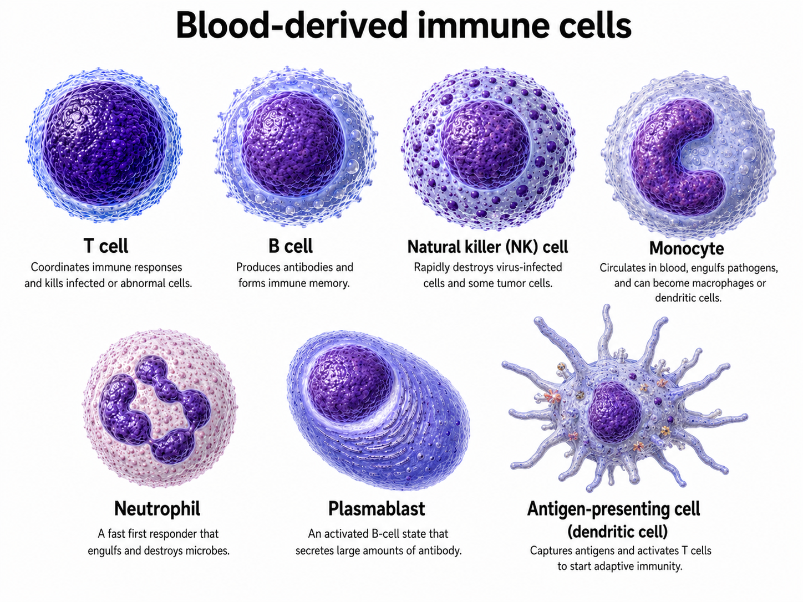
A cell can carry more than one interpretable signal. A monocyte can remain identifiable as a monocyte while also activating . A T cell or natural killer cell can retain its lineage markers while also showing activation or cytotoxic activity. A B-cell population can shift toward plasmablast-like states as part of an antibody-related response.
This is the biological reason the case study focuses on latent transcriptional programs rather than only on . A useful model should help you ask whether a signal looks like stable immune-cell identity, dynamic infection activity, or a mixture of both.
Prediction
If a pattern is high in monocytes at every infection day, what would that suggest? If a pattern rises across several broad cell types after infection, what would look different?
Show answer
A pattern that is high in monocytes at every infection day would look more identity-like: it may be capturing a stable monocyte program rather than an infection-timed response. A pattern that rises after infection across several broad cell types would look more activity-like: it may be capturing a coordinated response program that different immune cells use during the time course. A mixed pattern could show both signals, such as higher scores in one cell type and a clear increase at particular infection days.
Experimental and Natural Primary DENV-1 Infection
The primary discovery data come from an , specifically a DENV-1 human challenge model. In the source study, participants in an approved phase 1 open-label Dengue Virus-1 Live Virus Human Challenge study were pre-screened to confirm the absence of preexisting dengue immunity and then received a controlled dose (3.25 x 10^3 PFU) of the 45AZ5 DENV-1 challenge strain (Waickman et al. 2021). Because exposure occurred on a known study day and samples were collected on a planned schedule, the same post-exposure days can be compared across people. That shared clock is the key advantage for this case study: it lets you ask whether a transcriptional program rises, peaks, or returns toward baseline at specific experimental days.
This is different from a . Natural infection samples are collected from people who became infected outside the study setting after mosquito exposure, often at less precisely aligned stages of illness. The source paper also notes that the route and method of exposure differ: the challenge model used subcutaneous needle administration, whereas natural dengue infection occurs through mosquito bite (Waickman et al. 2021). Those samples are still biologically important, but they are harder to use as the primary discovery set for a day-by-day temporal model.
The distinction between experimental and natural infection will come back as a data-design boundary. The experimental cohort is the main discovery set because it has aligned study days. The natural infection cohort remains useful context for understanding the source study, but it is not part of the main required analysis.
Source-Study Findings to Carry Forward
The data come from the source study by Waickman and colleagues (Waickman et al. 2021), who profiled PBMCs from experimental and natural primary DENV-1 infections using single-cell RNA sequencing. The source study captured 171,208 high-quality cells and annotated major leukocyte populations across both study arms.
The findings below are not final answers for this case study. They are expectations you will check against the CoGAPS evidence later:
- Aligned experimental days: the experimental infection cohort was sampled at
D0,D2,D4,D6,D8,D10,D14/15, andD28. This aligned timeline is what makes day-by-day temporal pattern interpretation possible. - A strong late acute transcriptional response: the source study reported that the experimental transcriptional response became strongest at
D10, especially in monocytes, a broad class of immune cells that often respond strongly to inflammation. - Monocyte subtype context: among monocytes, the source study highlighted conventional monocytes and
CD16himonocytes.CD16himeans the cells have high expression ofCD16, a molecular label on the cell surface that is often used to distinguish monocyte subtypes. - Interferon and inflammation genes: many genes that increased during the
D10toD14/15window were interferon-stimulated or inflammation-associated genes. In plain language, these are genes turned on as part of antiviral signaling and immune alarm responses. - Example antiviral or inflammatory genes: examples included
IFITM1,IFI6,ISG15,MX1,TRIM22, andLY6E. These genes give you concrete biological handles when later sections inspect top genes and directionality. - Broader immune response: activated T-cell and plasmablast-like B-cell populations expanded in the experimental cohort around
D14/15. This matters because the host response is broader than one pathway or one cell type. - Host response rather than viral tropism: no cell-associated DENV-1 RNA was detected in PBMCs in either the experimental or natural infection samples. The case-study interpretation therefore concerns host immune programs, not direct identification of infected cells.
These points keep the later modeling questions biologically grounded. The aligned days let you ask temporal questions. The PBMC annotations let you separate cell identity from activity. The monocyte, interferon, T-cell, and plasmablast-like findings give you biological expectations to check against the CoGAPS patterns without assuming the model must reproduce them exactly.
Marker and Program Genes as Biological Guideposts
The source-study findings above give you two kinds of biological clues. Some genes help recognize what kind of immune cell you may be looking at. These are : genes whose expression is associated with broad PBMC identities such as T cells, monocytes, natural killer cells, B cells, plasmablasts, dendritic cells, or neutrophils.
Other genes help recognize what a cell is doing. These are : genes chosen as guideposts for a biological activity or cell state, such as interferon signaling, antibody-related activity, translation, or mitochondrial signal. For example, the interferon-related genes highlighted above, including IFITM1, IFI6, ISG15, MX1, TRIM22, and LY6E, become useful guideposts for asking whether a CoGAPS pattern is connected to an antiviral response.
Later, the preprocessing workflow turns these gene lists into and . A marker score asks whether a cell expresses genes associated with a broad immune-cell identity. A program score asks whether a cell expresses genes associated with a biological activity. These scores do not decide the interpretation by themselves. They give you evidence to compare with timing, top genes, directionality, and model diagnostics.
From Cell Clusters to Latent Programs
Ordinary clustering is often one of the first useful steps in single-cell analysis. It groups cells that have similar overall gene expression, which can help you annotate broad cell types, check whether expected immune-cell populations are present, and compare cell composition across timepoints.
However, clustering mainly asks which cells are most similar to each other overall. The research questions in this case study ask something more layered: whether repeated gene-expression programs appear across cells, subjects, and infection days.
A gene-expression program is a coordinated pattern of genes that tend to vary together across cells. Some programs reflect stable immune-cell identity, such as genes characteristic of T cells, B cells, or monocytes. Other programs reflect biological activity, such as antiviral signaling, inflammation, cytotoxic activity, or antibody-producing B-cell states. This identity-versus-activity framing is a common way to think about single-cell gene-expression programs (Kotliar et al. 2019).
A is inferred from many genes and many cells together, rather than measured directly in the original data table. In this case study, a useful latent program might look identity-like, activity-like, or mixed. That framing matters because a cell can participate in more than one program.
NMF: The Mathematical Shape of the Problem
Single-cell RNA-seq data are often organized as a matrix. In this case study, the rows represent genes, the columns represent cells, and each entry is a non-negative expression value for one gene in one cell.
, or NMF, asks whether that large matrix can be approximated by multiplying two smaller non-negative matrices. NMF was introduced as a parts-based way to represent non-negative data and later became widely used for biological pattern discovery (Lee and Seung 1999; Brunet et al. 2004; Stein-O’Brien et al. 2018). At the intuition level:
observed expression matrix ≈ gene loadings × cell scoresThis sentence is the core mathematical idea. The observed matrix is large because it has many genes and many cells. NMF asks whether a smaller number of patterns can explain much of that structure. Each pattern has two linked pieces: genes that define the pattern and cells that use the pattern strongly.
More formally:
\[ D \approx A P \]
Here, D is the observed expression matrix, A is a gene-by-pattern matrix, and P is a pattern-by-cell matrix. The model is trying to describe many genes and many cells using a smaller number of latent patterns.
| Object | Rows | Columns | How to read it |
|---|---|---|---|
Expression matrix D |
genes | cells | The observed input data after preprocessing and orientation checks. |
A matrix |
genes | patterns | . Large values indicate genes that help define a pattern. |
P matrix |
patterns | cells | . Large values indicate cells that strongly use a pattern. |
| model setting | number of patterns | The number of latent programs the model is asked to learn. |
The word non-negative matters. The entries in A and P are constrained to be zero or positive. This means patterns add together rather than cancel each other out. That additive structure fits the PBMC setting: a cell can carry a stable immune-cell identity signal and a dynamic infection-response signal at the same time.
Deep dive: how the matrix approximation adds up
If D has G genes and C cells, and the model is asked to learn K patterns, then A has G rows and K columns, while P has K rows and C columns. For one gene g and one cell c, the approximation can be read as:
expression for gene g in cell c ≈ sum of that cell's K pattern contributionsThe formal version writes that sum as:
\[ D_{g,c} \approx \sum_{k=1}^{K} A_{g,k} P_{k,c} \]
In plain language, this says that the expression of a gene in a cell is approximated by adding up that gene’s contribution to each pattern multiplied by how strongly that cell uses each pattern.
Many NMF methods are framed as finding non-negative matrices that reconstruct the observed data with small error. At the intuition level, the fitting goal is:
choose A and P so the reconstructed matrix AP is close to the observed matrix DA common formal objective is:
\[ \underset{A \geq 0,\;P \geq 0}{\text{minimize}}\; \lVert D - AP \rVert_F^2 \]
The double bars are a compact way to measure the total reconstruction error across all genes and cells. You do not need to compute this objective by hand. The important idea is that the model is balancing compression and reconstruction: it tries to summarize a large expression matrix with a smaller set of patterns while still preserving meaningful structure in the data.
How CoGAPS Extends Vanilla NMF
is the NMF-family method used throughout this case study, and it is also software for applying that method to biological data. The official CoGAPS User Guide introduces CoGAPS workflows for both R and Python users. In this case study, the main lesson uses saved CoGAPS results, while the Full Reproduction Guide shows how the selected model can be rerun in the included Docker environment.

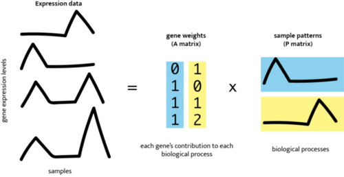
Image credit: CoGAPS logo and schematic from the Fertig Lab CoGAPS User Guide.
The schematic above shows the same idea introduced in the NMF section: a large gene-expression matrix is represented by a smaller set of patterns. CoGAPS keeps the additive, non-negative structure of NMF, but fits the model using a Bayesian, sampling-based framework designed for genomic data (Fertig et al. 2010; Johnson et al. 2023). In practical terms, CoGAPS does not give each cell only one cluster assignment. It estimates and , so a cell can show evidence for more than one pattern.
That difference matters for PBMC dengue data. A cell may carry a stable immune-cell identity signal and a changing antiviral-response signal at the same time. CoGAPS gives you pattern-level evidence that can be compared with timing, marker scores, program scores, top genes, directionality, and diagnostics. The model output is therefore not a final biological answer. It is the structured evidence you will inspect to decide whether a pattern looks identity-like, activity-like, or mixed.
This case study builds on CoGAPS-style uses that are directly relevant here: temporal CoGAPS for interpreting time-course transcriptional patterns (Fertig et al. 2014) and single-cell CoGAPS for identifying latent programs across cells (Johnson et al. 2023).
What Choosing K Means
The , written as K, is the number of patterns CoGAPS is asked to learn. This choice shapes the kind of biological structure the model can separate. If K is too small, distinct signals, such as immune-cell identity and infection-response activity, may be compressed into the same pattern. If K is too large, the model may split signal into patterns that are harder to interpret or less stable.
The important idea is that K is goal-dependent. A useful rank is not a universal property of the dataset; it is the rank that gives enough resolution to answer the biological question while still producing patterns that are stable enough to trust.
Why Run a Rank Sweep?
Because K affects what the model can reveal, the case study does not rely on one arbitrary CoGAPS run. Instead, the analysis used a : a planned set of model runs across several candidate values of K, random seeds, and iteration counts.
The sweep asks two linked questions. First, which ranks produce patterns that are stable enough to inspect? Second, among those stable ranks, which one gives enough to study temporal dengue-response activity rather than only broad PBMC identity?
You will not rerun that sweep in the main lesson. In Data Import, you will read summarized and use it to decide which precomputed model output should anchor the rest of the case study.
How Pattern Evidence Will Be Interpreted
Pattern numbers are labels assigned by a model run. The biological interpretation is not the number itself. A pattern becomes meaningful only after you connect it to evidence such as timing, cell-type association, top genes, IFN-score correlation, diagnostics, and directionality. In other runs or other ranks, a similar biological program may receive a different number.
For that reason, the case study emphasizes annotations, top genes, trajectories, diagnostics, and directionality checks rather than treating pattern numbers as universal names. A pattern becomes “IFN-associated” because its genes and time course are consistent with interferon biology, not because it has a particular numeric label.
CoGAPS also does not directly say whether genes are upregulated or downregulated. The A and P matrices are non-negative, so they show association with a pattern. To ask whether top genes are higher than baseline at a peak timepoint, the case study uses a separate subject-level check.
Identity-Like, Activity-Like, and Mixed Programs
You will see three interpretation categories later in the analysis:
- Identity-like programs: patterns whose scores vary mostly by broad immune-cell type, such as T cell, monocyte, B cell, or plasmablast.
- Activity-like programs: patterns whose scores vary mostly by infection day, suggesting a dynamic response over time.
- Mixed programs: patterns where both cell identity and timepoint contribute to the signal.
These labels are interpretation aids, not ground truth. They help you decide what evidence to inspect next: cell-type summaries, pattern-by-day trajectories, top genes, and directionality relative to baseline.
Putting the Context to Work
You now have the main pieces needed to read the analysis that follows. The experimental cohort gives you aligned infection days. The PBMC samples give you a mixed immune-cell system where stable identity and changing activity can appear together. CoGAPS turns the expression matrix into linked pattern evidence: describe which genes define a pattern, and describe which cells use that pattern strongly.
Those model outputs are useful, but they are not biological conclusions by themselves. A numbered pattern is only a handle for tracking one model output. It becomes interpretable only when you can connect that output to the data design, the infection timeline, broad PBMC identity, top genes, and checks against simpler or misleading explanations.
The first task in the analysis is therefore a model-resolution check. In Data Import, you will read summarized rather than rerun the full sweep. That evidence asks whether the selected value of K is stable enough to inspect and detailed enough to separate temporal infection activity from broad PBMC identity. This step keeps the case study from assigning biology to a model that was chosen only because it was convenient.
After the selected model is loaded, interpretation proceeds by comparing the same pattern from several angles. A temporal summary asks whether a pattern rises, peaks, persists, or returns toward baseline. A cell-context summary asks whether that pattern is concentrated in one broad PBMC identity or appears across several identities. A top-gene summary asks what biology could plausibly explain the signal, including whether interferon-associated genes are involved.
The later directionality and sensitivity checks add restraint. CoGAPS can tell you which genes and cells are associated with a pattern, but a separate expression comparison is needed to ask whether selected genes are higher or lower than baseline. Sensitivity checks ask whether the interpretation depends too heavily on one modeling choice. Together, these checks help you decide whether a pattern supports a clear activity-like interpretation, a mostly identity-like interpretation, or a mixed interpretation that needs more caution.
Carry this reading strategy into the data sections. The goal is not to memorize every model term before you begin. The goal is to keep asking what each table, plot, and diagnostic contributes to the interpretation, and what it cannot show on its own.
Core distinctions to carry forward
- Experimental infection cohort vs. natural infection cohort: the experimental cohort has aligned study days and is the discovery setting; the natural cohort is useful context from the source study but is not part of the main required analysis.
- Immune-cell identity vs. infection activity: PBMC identity can be stable across time, while infection-response activity can rise or fall during the time course.
- Gene loading vs. cell score: gene loadings describe which genes define a pattern; cell scores describe how strongly each cell uses that pattern.
- Rank
Kvs. pattern label:Kis the number of patterns requested from the model; pattern labels are run-specific names for the patterns learned by one fitted model. - CoGAPS association vs. expression directionality: CoGAPS weights show association with a pattern; separate directionality checks ask whether top genes are higher or lower than baseline.
With these concepts in place, the next section describes the actual data objects used in the case study: where the source data came from, which cohort is used for discovery, and which precomputed files carry the model evidence through the analysis.
What are the data?
Before you read any files into R or Python, pause to ask what each file represents. Some files describe the original public study, some describe the balanced set of cells used for CoGAPS, and some are summaries from models that have already been run. Knowing the difference will help you avoid common mistakes, such as treating every cell as a separate participant, using a balanced modeling set to estimate original cell abundance, or reading CoGAPS weights as up- or down-regulation.
The public source data come from GSE154386, associated with the source study by Waickman and colleagues (Waickman et al. 2021). The source study used a 5-prime single-cell RNA-seq workflow to profile unfractionated , or PBMCs. Unfractionated means that T cells, B cells, natural killer cells, monocytes, and related antigen-presenting cells were measured together rather than first being sorted into separate purified populations.
That mixed-cell design is useful for studying host response, but it also creates the central modeling challenge. Stable and dynamic are mixed in the same expression matrices. Before you start importing tables, it helps to know which files describe the original study, which files describe the model input, and which files summarize model results.
Data Files You Will Encounter
The files in this case study are not all the same kind of evidence. Some tell you where the data came from. Some define the matrix that CoGAPS learned from. Others record model-choice evidence or translate model output into biological summaries you can inspect. Keep those roles separate, and the later sections become much easier to read.
| File family | What it means here | Main caution |
|---|---|---|
| Public source files | Raw GEO GSE154386 and 10x Genomics files from the Waickman study. |
These files are not ready to interpret until sample labels, quality-control decisions, and gene/cell annotations have been added. |
| Prepared discovery data | The aligned experimental infection cohort after preprocessing, balancing, and gene selection. This is the cell-by-gene evidence that was sent into CoGAPS. | Use this set for modeling and interpretation, not for estimating the original abundance of PBMC populations in the full source study. |
| Summaries from candidate CoGAPS ranks that help decide which model resolution is worth inspecting. | These files help choose a model; they do not name the biology of any pattern by themselves. | |
| Pattern scores, gene loadings, top genes, diagnostics, and model summaries from the selected CoGAPS run. | Pattern scores and gene loadings are not the same as up- or down-regulated expression. | |
| Interpretation tables | Subject-timepoint summaries, cell-context summaries, sensitivity checks, and directionality tables derived from the selected-model evidence. | These tables support interpretation, but they do not replace biological validation in an independent dataset. |
You will also see references to and larger reproduction files. Natural infection data are optional extension material, not the main aligned experimental time course. The larger rebuild files are for the Full Reproduction Guide; you do not need them to complete the main lesson.
The timeline labels use D for experimental study day. For example, D0 is day 0, D10 is day 10, and D14/15 combines samples collected around days 14 and 15.
How the Files Fit Together
The main lesson begins after the longest preparation steps have already been done. You will mostly work with smaller files derived from the public single-cell data, so you can focus on what the evidence means rather than spending the lesson rebuilding every intermediate file.
Behind those included files is a straightforward sequence. Cells and genes were filtered, labeled, and organized into the balanced discovery set. CoGAPS was run on that prepared dataset. The files you import later are the pieces needed to inspect that run: rank-selection summaries, pattern scores, gene weights, subject-timepoint summaries, and directionality tables.
The larger raw files, model objects, and checkpoints are kept separately so the workflow can be rebuilt or checked later. They remain visible in the reproduction guide, but they stay out of the core path.
What One Row Means
Rows change meaning from file to file. A row might be one cell, one subject at one day, one gene linked to one pattern, or one model diagnostic. Read each table with its row meaning in mind; otherwise it is easy to treat cell-level information as if it were subject-level evidence.
| File group | What one row means | How you will use it | Common mistake to avoid |
|---|---|---|---|
| Single-cell expression matrices | One matrix connecting cells and genes. | Used to create the CoGAPS model input. | Losing track of whether rows are cells or genes. |
| Discovery cell-score files | One discovery-set cell with sample labels and CoGAPS pattern scores. | Visualizing how patterns appear across cells. | Treating many cells from one participant as many independent people. |
| One participant, one infection day, and one pattern. | Following temporal trajectories across repeated samples. | Ignoring that subject-level summaries are better for time-course claims than raw cell counts alone. | |
| and top-gene tables | One gene’s contribution to one CoGAPS pattern, or one gene in a ranked top-gene list. | Asking what biology might define a pattern. | Treating a high CoGAPS weight as up-regulation or down-regulation. |
| Pattern summary tables | One CoGAPS pattern. | Comparing how strongly patterns relate to time, broad cell identity, or response scores. | Treating pattern labels as biological names before checking the evidence. |
| Diagnostic traces and metrics | One saved model-check value or one run-level summary. | Checking whether a model run behaved as expected. | Treating model diagnostics as biological findings. |
Independence and repeated sampling
Single cells are not independent . Many cells come from the same subject at the same experimental day. You will use cell-level summaries to visualize patterns, but biological interpretation should also consider subject-level trajectories and repeated sampling over time.
Balanced Discovery Set
The CoGAPS model in the main lesson was fit to a balanced discovery set. Balanced means each experimental timepoint contributes the same number of cells to the model.
In this case study, the discovery set contains 4,800 cells and 5,000 highly variable genes, with 600 cells contributing to each experimental timepoint. This makes temporal pattern comparison easier, but it also means these files should not be used to estimate the true abundance of PBMC populations in the full source study.
You will inspect the discovery-set composition in Data Exploration, then return to the preprocessing decisions that created the discovery set in Data Wrangling.
Columns You Will See Often
You do not need to memorize every column name now. Use this table as a reference when the first imported tables appear in Data Import and Data Exploration.
| Column or term | Meaning | Why it matters |
|---|---|---|
subject |
Experimental participant identifier, such as Subject2. |
Links cells back to the biological person sampled over time. |
sample_id |
GEO sample identifier for a specific sample. | Tracks the source sample used to build the discovery set. |
cohort |
Source-study cohort label, such as experimental or natural infection. | Keeps the main discovery cohort separate from optional extension data. |
timepoint_merged |
Display label for the experimental day, such as D0, D10, or D14/15. |
Defines the temporal axis used in figures and summaries. |
day_merged_numeric |
Numeric version of the timepoint, with D14/15 represented as 14.5. |
Lets plots and summaries order the time course correctly. |
broad_cell_type |
Broad immune-cell identity, such as T_cell, Monocyte, or B_cell. |
Helps distinguish cell-identity structure from infection-response activity. |
n_cells |
Number of cells in a group. | Shows how much cell-level evidence contributes to a summary. |
fraction |
Proportion of cells in a timepoint or group. | Helps compare cell composition across days. |
| pattern-score columns | CoGAPS pattern scores in the selected-model files. The number of columns depends on the rank chosen in Data Import. | Larger values mean stronger activity of a pattern in a cell or group. |
pattern |
Pattern label used in long-format summaries. | Lets you compare results pattern by pattern. |
gene |
Gene symbol in a pattern or directionality table. | Connects model patterns to biological interpretation. |
weight |
CoGAPS gene loading for a pattern. | Larger values indicate genes that contribute more strongly to that pattern. |
Later sections introduce additional columns such as eta_timepoint, eta_broad_cell_type, log2FC, direction, and IFN-score correlation when those values become useful for a specific research question.
Where the Large Files Fit
Some files needed to rebuild the workflow are too large or time-consuming for the main lesson. These include the raw GEO archive, preprocessed objects, model objects, checkpoint files, and full sweep outputs. They are listed in data/artifact_manifest.json and explained in the Full Reproduction Guide. In the main lesson, you will use the smaller included files to understand the analysis without rerunning every long step.
Checkpoint
Which file would help you answer each question?
- Why was one value of rank
Kchosen? - Which patterns change across infection days?
- Are monocytes truly more abundant in the original source study?
- Are selected top genes higher or lower relative to baseline?
Show answer
Use rank-sweep summaries for the rank decision. Use subject-timepoint summaries and visualization-ready pattern tables for temporal patterns. Do not use the balanced discovery set to estimate true cell-type abundance in the original source study, because it was intentionally balanced for modeling. Use directionality tables to ask whether selected top genes are higher or lower relative to baseline.
You now have a map of the files before you start importing them. Next, you will look at the main limitations of this dataset and analysis, so those cautions are in mind before the first table is loaded.
Limitations
This case study is designed for teaching. The results are useful for learning how to reason about latent factors in single-cell data, but several limitations matter.
- Small experimental cohort: the primary time course has three experimental subjects from the source experimental infection cohort (Waickman et al. 2021). Subject-level summaries are essential, but they do not replace a larger cohort.
- Teaching subset: the CoGAPS discovery set is balanced and tractable for learner-facing analysis. It is not the full published atlas described by the source study (Waickman et al. 2021).
- Model-rank sensitivity: lower-rank models can be stable and compact while still compressing temporal activity into broader patterns. The analysis section therefore treats rank selection as evidence to evaluate, not as a hidden technical detail.
- Pattern labels are run-specific: learners should interpret pattern biology from genes, time course, cell type usage, and diagnostics rather than from pattern numbers alone.
- CoGAPS is non-negative: a high pattern score does not tell us whether genes are upregulated or downregulated relative to baseline. Directionality requires a separate comparison (Johnson et al. 2023).
- Natural projection is optional: projection into the natural infection cohort is biologically motivated by transfer-learning workflows, but it should remain an optional extension until the final selected-model projection workflow is regenerated and validated (Stein-O’Brien et al. 2019; Sharma et al. 2020).
- Host response, not viral tropism: the source study reported no cell-associated DENV-1 RNA in PBMCs (Waickman et al. 2021). This analysis concerns host immune programs, not direct identification of infected cells.
Ethical Considerations
This case study does not enroll new participants or collect new specimens. It reuses publicly available human single-cell RNA-seq data from GEO, originally generated by Waickman and colleagues (Waickman et al. 2021). That distinction matters, but it does not make the ethical questions disappear. These are still human-subjects-derived data, and the topic is infectious disease, where scientific claims can quickly become connected to public trust, policy decisions, stigma, and access to care.
The pandemic that began in 2019 made that connection especially visible. Uncertainty about infection severity, transmission, vaccination, and public-health policy shaped how many people understood scientific evidence and how governments acted on it. Dengue is a different disease, and this case study is not a policy model. The lesson is narrower but still important: analyses of infectious-disease data should be interpreted carefully because they can sound more clinically or socially decisive than the evidence allows.
Walker and colleagues describe infectious-disease genetics research as an area where public-health goals and individual protections can come into tension (Walker et al. 2021). Their review highlights issues such as privacy, reporting to authorities, return of individual research results, resource allocation, equity, and justice. Most of those issues are not directly acted on in this teaching case because you are working with public data whose identifying details have been removed, along with precomputed analysis files. Still, they provide a useful lens for reading the results. A CoGAPS pattern is not a diagnosis, a treatment recommendation, or a policy rule. It is a statistical summary that can support a biological interpretation when several kinds of evidence point in the same direction.
As you work through the case study, keep these boundaries visible:
- Do not use this analysis to make clinical decisions or public-health policy claims.
- Treat the discovery set as a teaching subset, not a complete representation of all dengue infections or all immune responses.
- Remember that CoGAPS patterns are latent statistical summaries, not direct measurements of immune pathways.
- Read an interferon-associated interpretation only after checking timing, top genes, interferon-related scores, directionality, and sensitivity evidence together.
- Keep subject-level variation visible wherever possible. A dataset with many cells is not the same as a dataset with many independent people.
- Cite the original study, the GEO accession, the analysis software, and the case-study repository or archive when reusing the data or teaching materials.
Reproducibility is also part of responsible interpretation. The case study separates the Core learner path from the Full Reproduction Guide so that you can inspect the evidence without rerunning every expensive step, while still seeing how the larger files can be rebuilt or audited. The Fred Hutch Data Science Lab reproducibility guide frames reproducibility as a continuum: an analysis can become more transparent and easier to rerun over time, even if no workflow is perfectly reproducible in every future setting (Fred Hutch Data Science Lab, n.d.). Just as important, reproducible does not automatically mean correct. It means the work is traceable enough for someone else to check the code, data, assumptions, and interpretation.
For clinical care, use medical and public-health guidance rather than this teaching case study (Centers for Disease Control and Prevention 2026).
With those interpretive boundaries in place, the next section sets up the software environment you will use before importing evidence files.
Packages and Setup
This section gets your computer ready for the main lesson. You will use a Docker container so R, Python, and the required packages are already installed. The repository already includes the small evidence files used in Data Import, so you can begin the analysis without downloading raw GEO files or rerunning CoGAPS.
If your goal is to rebuild large files, rerun selected models, or check how the included files were produced, see Advanced Reproduction Setup in the Full Reproduction Guide. You do not need those larger files to complete the main lesson.
What the Setup Provides
Think of setup as three pieces:
| Setup piece | What it provides | When you need it |
|---|---|---|
| Docker image | R, Python, CoGAPS, PyCoGAPS, and the other software used by the case study. | Use this for the main lesson. |
| GitHub repository | The case-study pages, scripts, included analysis files, figures, and manifests. | Use this for the main lesson. |
| External reproduction archive | Large source, preprocessed, selected-model, directionality, and rank-sweep support files that are too large for GitHub. | Use this if you want to rebuild larger files or inspect the files behind the rank comparison. |
Setup has two roles in this case study. First, it gives you the software and files needed for the main lesson. Second, it keeps the larger evidence trail visible, so you can see where the included tables and figures came from without rebuilding every step yourself.
The first figure keeps the setup resources separate. Docker supplies the software environment, the GitHub repository supplies the main lesson files, and the external archive holds larger rebuild files plus files that support the separate rank-sweep checks.
Once those resources are in place, the next map separates three paths through the evidence. The brighter steps are the main lesson pieces you work with most directly in the case study. The quieter source-rebuild steps show where the included files came from. The directionality step is also muted because you inspect its included results in the main lesson, but generate that analysis only during full reproduction. The rank sweep is shown separately because it requires high-performance computing.
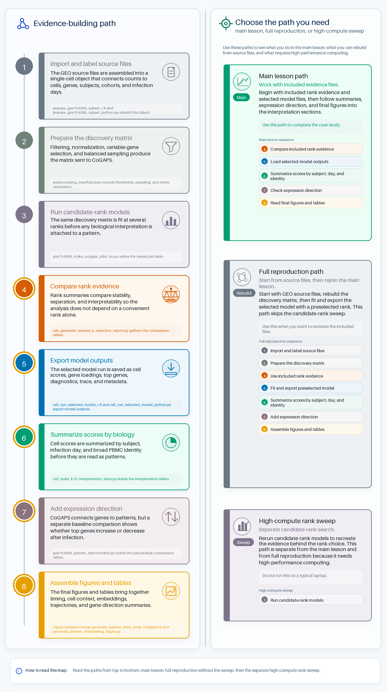
The Docker image supplies software, not project data. Docker sees your local project files only when you mount the repository into the container. In the command below, your local repository is mounted at /home/rstudio/project.
Main Lesson Setup
Start by cloning the case-study repository and moving into the repository root on your computer:
git clone https://github.com/opencasestudies/ocs-bio-temporal.git
cd ocs-bio-temporalThen pull and launch the Docker image:
docker pull othomas2/cs5-cogaps-runtime:0.1.0
docker run --platform linux/amd64 --rm -it \
-p 8787:8787 \
-e PASSWORD="Password12" \
-v "$PWD":/home/rstudio/project:rw \
othomas2/cs5-cogaps-runtime:0.1.0This command starts RStudio Server inside the container. It also mounts the cloned repository at /home/rstudio/project. The mount is writable (rw), so small outputs you create in the project folder are saved back to your local clone.
Open RStudio Server
After Docker starts, open http://localhost:8787 and sign in with username rstudio and password Password12. Keep the online case-study page open in one browser tab and RStudio Server open in another.
In RStudio Server, work from /home/rstudio/project. If you are unsure where you are, run getwd() in the R Console or pwd in the Terminal.
The schematic below labels the main panes you will use while working through the case study.
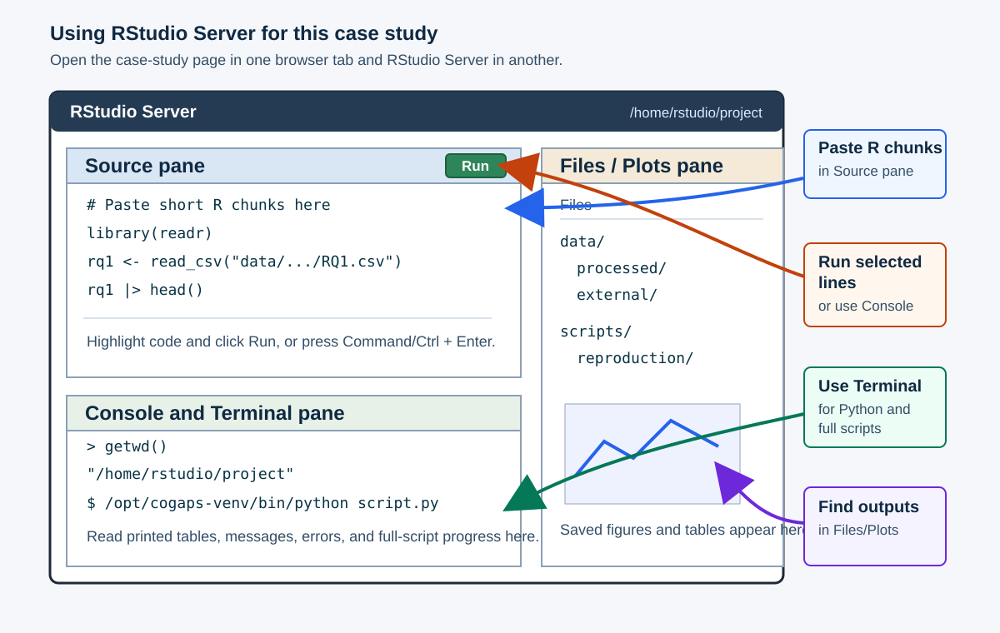
| What you are running | Where to paste or run it | Where output appears |
|---|---|---|
| Short R chunks from an R tab | R Console, or an R script in the Source pane | Console output, Plots pane, and saved files in the Files pane |
| Short Python chunks from a Python tab | Terminal pane using /opt/cogaps-venv/bin/python, or a small .py script |
Terminal output and saved files in the Files pane |
For R chunks, a common workflow is to open File > New File > R Script, paste the code, highlight the lines you want to run, and click Run. You can also paste short chunks directly into the R Console. For Python chunks, use the Terminal pane so you are running Python inside the Docker environment:
cd /home/rstudio/project
/opt/cogaps-venv/bin/pythonYou can paste short Python examples after the >>> prompt. For longer Python examples, save the code in a small .py file and run it from the Terminal.
The R and Python tabs show alternate ways to complete the same conceptual checks. Choose one language for the main lesson unless you specifically want to compare implementations. The explanations before and after the code apply to both tabs.
Load Packages
The Docker image already installs the packages used below. Load the packages for the language you plan to use.
from pathlib import Path
import json
import pandas as pd
import matplotlib.pyplot as pltThese are the main packages you will use while importing, checking, summarizing, and plotting the included files:
| Package | Language | What you will use it for |
|---|---|---|
here |
R | Build project-relative paths. |
readr |
R | Read CSV tables used by the R code. |
dplyr |
R | Select, filter, summarize, and arrange analysis tables. |
tidyr |
R | Reshape pattern summaries into long and wide forms. |
ggplot2 |
R | Build visualizations from tidy tables. |
knitr |
R | Render tables in the case-study document. |
jsonlite |
R | Read run manifests and diagnostic JSON files. |
pandas |
Python | Read, filter, and summarize CSV tables. |
matplotlib |
Python | Build Python visualizations. |
A fuller software list for rebuilding larger workflow outputs is included in Advanced Software Reference.
Readiness Check
These checks confirm that the main-lesson packages are available in the language you choose.
r_required <- c("here", "readr", "dplyr", "tidyr", "ggplot2", "knitr", "jsonlite")
r_versions <- vapply(
r_required,
function(pkg) as.character(utils::packageVersion(pkg)),
character(1)
)
data.frame(
item = c("R", r_required, "reticulate_available"),
value = c(
R.version.string,
unname(r_versions),
as.character(requireNamespace("reticulate", quietly = TRUE))
)
) |>
knitr::kable()| item | value |
|---|---|
| R | R version 4.3.2 (2023-10-31) |
| here | 1.0.1 |
| readr | 2.1.5 |
| dplyr | 1.1.4 |
| tidyr | 1.3.1 |
| ggplot2 | 4.0.3 |
| knitr | 1.48 |
| jsonlite | 1.8.8 |
| reticulate_available | TRUE |
import sys
import matplotlib
import pandas as pd
pd.DataFrame(
{
"item": [
"Python",
"pandas",
"matplotlib",
],
"value": [
sys.version.split()[0],
pd.__version__,
matplotlib.__version__,
],
}
) item value
0 Python 3.10.12
1 pandas 2.0.3
2 matplotlib 3.7.3Now check that the mounted project folder contains the included files used at the start of the case study.
data.frame(
item = c(
"case-study manifest",
"included processed folder",
"rank-selection evidence"
),
available = c(
file.exists(here::here("data", "artifact_manifest.json")),
dir.exists(here::here("data", "processed")),
dir.exists(here::here("data", "processed", "k_selection"))
)
) |>
knitr::kable()| item | available |
|---|---|
| case-study manifest | TRUE |
| included processed folder | TRUE |
| rank-selection evidence | TRUE |
from pathlib import Path
import pandas as pd
pd.DataFrame({
"item": [
"case-study manifest",
"included processed folder",
"rank-selection evidence",
],
"available": [
Path("data/artifact_manifest.json").exists(),
Path("data/processed").is_dir(),
Path("data/processed/k_selection").is_dir(),
],
}) item available
0 case-study manifest True
1 included processed folder True
2 rank-selection evidence TrueData Import will check the specific selected-model folder after you evaluate the rank-selection evidence.
When a function is introduced for the first time, the prose uses the package::function() form so you can see which package provides it. Next, you will import the rank-selection evidence, use it to choose which CoGAPS model is worth inspecting, and then load the selected-model files used through the rest of the case study.
Data Import
In this section, you will read the first evidence files into R or Python. Import means reading files into analysis objects so you can inspect them, check them, and use them in later sections.
A CSV file is a rectangular table: rows are observations or summaries, and columns are variables. A JSON file stores structured metadata, such as model settings or diagnostic values. In R, the imported files become data frames. In Python, they become tables managed by pandas.
The first imported files answer a modeling question: which value of , the number of patterns, should the case study inspect? You will read summarized from the rank sweep, use that evidence to decide which selected model is worth loading, and then import the compact used in later sections.
You do not need raw or a new CoGAPS run to complete this section. Source-file import and rebuilding from the larger archive are documented in the Full Reproduction Guide for readers who want to audit or regenerate the workflow. The main lesson starts from the smaller included files so you can focus on the evidence chain.
This section stops once the rank-selection evidence and selected-model files have been read into R or Python and checked for basic file integrity. The biological interpretation comes later in Data Analysis, where you will use these prepared files to evaluate model diagnostics, interpret , examine , check , and compare sensitivity evidence.
Checkpoint: Decide Which K Model to Import
In Context, you learned why the analysis used a before interpreting any CoGAPS pattern. Now you will read the summarized rank-selection evidence from that sweep. The goal is not to name a biological program yet; it is to decide which precomputed model is appropriate to load and inspect.
Step 1: Understand What the Sweep Tested
Context explained why the case study uses a before interpreting a CoGAPS model. Before reading the decision files, first map what those files summarize. The sweep compared model settings, not final biological interpretations: it asked whether different ranks produced stable patterns and whether any stable rank had enough for the dengue time-course question.
| Sweep component | What varied or was summarized | Why it matters |
|---|---|---|
| Different numbers of CoGAPS patterns. | Controls how much structure the model can separate. | |
| Different model starting points. | Checks whether a rank gives similar results from different starts. | |
| Iteration count | Different sampler lengths. | Helps identify representative runs that are stable enough to inspect. |
| Pattern-level evidence | , cell-type effect, evidence, and summaries. | Asks whether a stable rank can support the biological question. |
You are reading summaries of this sweep, not rerunning it. The next steps first check that the files are available, then read the manifest that records the selected model.
Step 2: Check the File Availability Manifest
Now confirm that the files used for this evidence chain are available. The file inventory is a JSON that records which files are included locally and which larger rebuild files live outside GitHub. This check helps you see which files are available for the main lesson and which files are only needed for advanced reproduction.
Here, you read a structured file and summarize two lists inside it. The list named copied contains files included with the case study. The list named skipped contains large files that were intentionally left out of GitHub and documented for external storage.
manifest <- jsonlite::fromJSON(
here::here("data", "artifact_manifest.json")
)
data.frame(
file_group = c(
"included main-lesson files",
"external rebuild files"
),
file_count = c(
nrow(manifest$copied),
nrow(manifest$skipped)
),
size_mb = c(
round(sum(manifest$copied$size_bytes) / 1024^2, 2),
round(sum(manifest$skipped$size_bytes) / 1024^2, 2)
)
) |>
knitr::kable()| file_group | file_count | size_mb |
|---|---|---|
| included main-lesson files | 141 | 29.20 |
| external rebuild files | 8 | 316.32 |
from pathlib import Path
import json
import pandas as pd
with open("data/artifact_manifest.json") as f:
manifest_py = json.load(f)
pd.DataFrame({
"file_group": [
"included main-lesson files",
"external rebuild files",
],
"file_count": [
len(manifest_py["copied"]),
len(manifest_py["skipped"]),
],
"size_mb": [
round(sum(x["size_bytes"] for x in manifest_py["copied"]) / 1024**2, 2),
round(sum(x["size_bytes"] for x in manifest_py["skipped"]) / 1024**2, 2),
],
}) file_group file_count size_mb
0 included main-lesson files 141 29.20
1 external rebuild files 8 316.32Read this first table as an availability audit. A JSON file behaves like a named, nested list rather than a flat CSV table. The code pulls out two named parts of the manifest, copied and skipped, then counts how many files are in each group and adds their sizes.
This is a file availability check, not a biological analysis. You are asking, “Which files are included for the main lesson, and which larger files were deliberately left out of GitHub?”
Next, read the that records the selected model and representative run.
Step 3: Read the K-Selection Decision Manifest
The decision manifest records the model-rank decision derived from the sweep. It is useful because it stores the selection rule, the compact stable rank, the selected main rank, and the representative run that you will import next.
k_manifest <- jsonlite::fromJSON(
here::here("data", "processed", "k_selection",
"revised_k_selection_manifest.json")
)
compact_stable_k <- k_manifest$previous_chosen_k
selected_main_k <- k_manifest$revised_chosen_k
selected_seed <- k_manifest$revised_seed
selected_iterations <- k_manifest$revised_selected_n_iter
data.frame(
item = c(
"selection rule",
"compact stable K",
"selected main K",
"selected-run seed",
"selected-run iterations"
),
value = c(
k_manifest$selection_rule,
compact_stable_k,
selected_main_k,
selected_seed,
selected_iterations
)
) |>
knitr::kable()| item | value |
|---|---|
| selection rule | smallest stability-plateau K with at least one IFN-candidate activity-like temporal program |
| compact stable K | 5 |
| selected main K | 10 |
| selected-run seed | 2 |
| selected-run iterations | 2000 |
with open(
"data/processed/k_selection/revised_k_selection_manifest.json"
) as f:
k_manifest_py = json.load(f)
compact_stable_k_py = k_manifest_py["previous_chosen_k"]
selected_main_k_py = k_manifest_py["revised_chosen_k"]
selected_seed_py = k_manifest_py["revised_seed"]
selected_iterations_py = k_manifest_py["revised_selected_n_iter"]
k_manifest_table_py = pd.DataFrame({
"item": [
"selection rule",
"compact stable K",
"selected main K",
"selected-run seed",
"selected-run iterations",
],
"value": [
k_manifest_py["selection_rule"],
compact_stable_k_py,
selected_main_k_py,
selected_seed_py,
selected_iterations_py,
],
})
print(k_manifest_table_py.to_markdown(index=False))| item | value |
|---|---|
| selection rule | smallest stability-plateau K with at least one IFN-candidate activity-like temporal program |
| compact stable K | 5 |
| selected main K | 10 |
| selected-run seed | 2 |
| selected-run iterations | 2000 |
Here the JSON file acts as a record of the modeling decision. The code stores values from the manifest in clearly named objects: the compact comparator rank, the selected main rank, the selected seed, and the number of iterations. Those assignments matter because later chunks reuse these names instead of typing the values into each later chunk.
The table at the end is a readable summary of the decision file, not a new calculation. It tells you that K = 5 is the compact stable comparator from a stability-focused rule, while K = 10 is the selected main rank because it adds enough to support the case-study questions.
Step 4: Check the Supporting K-Selection Evidence Files
Now that the manifest has named the selected rank, make a rank-selection evidence checklist. These are the files you will inspect before importing the .
selected_pattern_file <- sprintf(
"representative_K%s_seed%s_iter%s_patterns.csv",
selected_main_k, selected_seed, selected_iterations
)
k_evidence_files <- data.frame(
evidence_role = c(
"decision manifest",
"stability plateau candidates",
"all-rank summary",
paste("selected K =", selected_main_k, "reproducibility"),
paste("selected K =", selected_main_k, "pattern evidence"),
"K-selection figure"
),
relative_path = c(
"data/processed/k_selection/revised_k_selection_manifest.json",
"data/processed/k_selection/stability_plateau_candidates.csv",
"data/processed/k_selection/revised_k_selection_summary_by_k.csv",
"data/processed/k_selection/selected_pairwise_reproducibility.csv",
file.path("data", "processed", "k_selection", selected_pattern_file),
"data/processed/figures/figure_01_k_selection.png"
),
used_for = c(
"records the selected K decision",
"compares stable candidate ranks",
"shows evidence across the full sweep",
"checks the representative run across seeds",
"records pattern-level evidence for the representative run",
"summarizes K-selection visually"
)
)
k_evidence_files$file_exists <- file.exists(
file.path(here::here(), k_evidence_files$relative_path)
)
k_evidence_files |>
knitr::kable()| evidence_role | relative_path | used_for | file_exists |
|---|---|---|---|
| decision manifest | data/processed/k_selection/revised_k_selection_manifest.json | records the selected K decision | TRUE |
| stability plateau candidates | data/processed/k_selection/stability_plateau_candidates.csv | compares stable candidate ranks | TRUE |
| all-rank summary | data/processed/k_selection/revised_k_selection_summary_by_k.csv | shows evidence across the full sweep | TRUE |
| selected K = 10 reproducibility | data/processed/k_selection/selected_pairwise_reproducibility.csv | checks the representative run across seeds | TRUE |
| selected K = 10 pattern evidence | data/processed/k_selection/representative_K10_seed2_iter2000_patterns.csv | records pattern-level evidence for the representative run | TRUE |
| K-selection figure | data/processed/figures/figure_01_k_selection.png | summarizes K-selection visually | TRUE |
selected_pattern_file_py = (
f"representative_K{selected_main_k_py}_"
f"seed{selected_seed_py}_iter{selected_iterations_py}_patterns.csv"
)
k_evidence_files_py = pd.DataFrame({
"evidence_role": [
"decision manifest",
"stability plateau candidates",
"all-rank summary",
f"selected K = {selected_main_k_py} reproducibility",
f"selected K = {selected_main_k_py} pattern evidence",
"K-selection figure",
],
"relative_path": [
"data/processed/k_selection/revised_k_selection_manifest.json",
"data/processed/k_selection/stability_plateau_candidates.csv",
"data/processed/k_selection/revised_k_selection_summary_by_k.csv",
"data/processed/k_selection/selected_pairwise_reproducibility.csv",
str(Path("data/processed/k_selection") / selected_pattern_file_py),
"data/processed/figures/figure_01_k_selection.png",
],
"used_for": [
"records the selected K decision",
"compares stable candidate ranks",
"shows evidence across the full sweep",
"checks the representative run across seeds",
"records pattern-level evidence for the representative run",
"summarizes K-selection visually",
],
})
k_evidence_files_py["file_exists"] = k_evidence_files_py[
"relative_path"
].map(lambda path: Path(path).exists())
print(k_evidence_files_py.to_markdown(index=False))| evidence_role | relative_path | used_for | file_exists |
|---|---|---|---|
| decision manifest | data/processed/k_selection/revised_k_selection_manifest.json | records the selected K decision | True |
| stability plateau candidates | data/processed/k_selection/stability_plateau_candidates.csv | compares stable candidate ranks | True |
| all-rank summary | data/processed/k_selection/revised_k_selection_summary_by_k.csv | shows evidence across the full sweep | True |
| selected K = 10 reproducibility | data/processed/k_selection/selected_pairwise_reproducibility.csv | checks the representative run across seeds | True |
| selected K = 10 pattern evidence | data/processed/k_selection/representative_K10_seed2_iter2000_patterns.csv | records pattern-level evidence for the representative run | True |
| K-selection figure | data/processed/figures/figure_01_k_selection.png | summarizes K-selection visually | True |
This checklist is built before any selected-model file is interpreted. The code first names each evidence role, then gives the relative file path, then explains what that file will be used for. The final file_exists column asks the computer to check the file system.
Every file_exists value should be TRUE in R or True in Python. If one is false, stop here. The problem is usually a path, file name, or missing-file issue, and it is better to catch that before using the .
Step 5: Apply the Stability Gate
A useful model rank should not depend on one favorable random start. The first gate therefore asks which ranks are on the seed-to-seed . here summarizes whether runs with the same K recover similar patterns across seeds.
The sweep estimated these values by comparing runs with the same K and iteration count but different . For each pair of seed runs, similar CoGAPS patterns were matched and then compared in three ways:
- Stability combines matched similarity and overlap, with gene-loading similarity weighted more heavily.
- Top-gene agreement asks whether matched patterns recover similar top genes across seed runs.
- Pattern-class agreement asks whether matched patterns receive the same broad interpretation class, such as identity-like or activity-like.
- Compact stable choice marks the smallest eligible
Kon the stability plateau. This is a useful compact comparator, not necessarily the best model for the biological question.
k_plateau <- readr::read_csv(
here::here("data", "processed", "k_selection",
"stability_plateau_candidates.csv"),
show_col_types = FALSE
)
k_plateau |>
dplyr::transmute(
K,
iter = selected_n_iter,
stability = round(stability_core, 3),
`top-gene agreement` = round(mean_matched_top_gene_jaccard, 3),
`pattern-class agreement` = round(pattern_class_agreement_mean, 3),
`on plateau` = on_stability_plateau,
`compact stable choice` = chosen_K
) |>
knitr::kable()| K | iter | stability | top-gene agreement | pattern-class agreement | on plateau | compact stable choice |
|---|---|---|---|---|---|---|
| 5 | 8000 | 0.996 | 1.000 | 1 | TRUE | TRUE |
| 6 | 4000 | 0.993 | 1.000 | 1 | TRUE | FALSE |
| 8 | 6000 | 0.989 | 0.992 | 1 | TRUE | FALSE |
| 9 | 4000 | 0.986 | 0.993 | 1 | TRUE | FALSE |
| 10 | 2000 | 0.979 | 0.989 | 1 | TRUE | FALSE |
| 12 | 4000 | 0.979 | 0.976 | 1 | TRUE | FALSE |
k_plateau_py = pd.read_csv(
"data/processed/k_selection/stability_plateau_candidates.csv"
)
k_plateau_display_py = (
k_plateau_py
.assign(
stability=lambda df: df["stability_core"].round(3),
top_gene_agreement=lambda df: df[
"mean_matched_top_gene_jaccard"
].round(3),
pattern_class_agreement=lambda df: df[
"pattern_class_agreement_mean"
].round(3),
)
.rename(columns={
"selected_n_iter": "iter",
"on_stability_plateau": "on plateau",
"chosen_K": "compact stable choice",
})
.loc[:, [
"K", "iter", "stability", "top_gene_agreement",
"pattern_class_agreement", "on plateau",
"compact stable choice",
]]
)
print(k_plateau_display_py.to_markdown(index=False))| K | iter | stability | top_gene_agreement | pattern_class_agreement | on plateau | compact stable choice |
|---|---|---|---|---|---|---|
| 5 | 8000 | 0.996 | 1 | 1 | True | True |
| 6 | 4000 | 0.993 | 1 | 1 | True | False |
| 8 | 6000 | 0.989 | 0.992 | 1 | True | False |
| 9 | 4000 | 0.986 | 0.993 | 1 | True | False |
| 10 | 2000 | 0.979 | 0.989 | 1 | True | False |
| 12 | 4000 | 0.979 | 0.976 | 1 | True | False |
This code reads the stability-plateau table and narrows it to the columns needed for the first rank decision. In R, transmute() keeps only selected columns and creates renamed or rounded versions. In Python, .assign(), .rename(), and .loc[] do the same work in a sequence.
Read the output as a compact view of reproducibility evidence. It explains why K = 5 is a reasonable compact stable comparator: it is on the stability plateau and has strong agreement across seed runs. If the only goal were to choose the smallest reproducible model, K = 5 would be attractive. The next step asks whether that compact model also has enough biological resolution for the dengue time-course question.
Step 6: Ask Why Stability Alone Is Not Enough
The case-study goal is not only to find a compact stable factorization. The goal is to recover in a mixed PBMC sample. A low-rank model can be stable because it captures broad , while still compressing dynamic infection activity into too few patterns.
That is why the rank-selection rule adds a gate. Among stable ranks, the selected model should be small enough to remain interpretable but large enough to resolve at least one connected to the dengue-response biology introduced earlier.
Step 7: Apply the Biological-Resolution Gate
Now compare the stable candidate ranks using evidence tied to the research questions. The table below keeps the rank-level evidence separate from later pattern-level interpretation. At this stage, you are asking whether a rank resolves the right kind of signal, not whether a particular numbered pattern has already been biologically named.
The biological-resolution gate asks whether a stable rank separates the kind of signal needed for this case study. For each sweep run, pattern scores were joined to infection-day and broad cell-type metadata, and top-gene lists were checked for interferon-related evidence. The table below summarizes those run-level signals by K.
- Temporal effect reports the strongest infection-day effect observed among a rank’s patterns. Larger values mean at least one pattern changes more clearly across infection days.
- IFN-candidate patterns counts the patterns with evidence, based on IFN top-gene overlap or positive IFN-score correlation.
- Activity-like patterns counts the patterns whose timepoint effect is stronger than their broad cell-type effect, using the identity/activity framing introduced in Context.
- Goal score summarizes , low , temporal effect, IFN-candidate evidence, and activity-like evidence. It helps compare stable candidates, but the learner-facing rule is simpler: choose the smallest stability-plateau
Kthat resolves an IFN-candidate, activity-like temporal program.
Audit detail: thresholds used in the sweep summaries
The sweep marked a pattern as activity-like when its timepoint effect was more than 1.5 times its broad cell-type effect. It marked a pattern as an IFN candidate when its top 15 genes contained at least three interferon-program genes, or when its IFN-score correlation was greater than 0.35. A rank passed the biological-resolution gate when it was on the stability plateau and the rank-level summary included at least one IFN-candidate pattern, at least one activity-like pattern, and a maximum temporal effect of at least 0.1.
k_plateau |>
dplyr::transmute(
K,
stability = round(stability_core, 3),
`temporal effect` = round(max_eta_timepoint, 3),
`IFN-candidate patterns` = candidate_ifn_pattern_count_mean,
`activity-like patterns` = activity_like_pattern_count_mean,
`goal score` = round(goal_aligned_score, 3),
decision = ifelse(
K == selected_main_k,
"selected main model",
""
)
) |>
knitr::kable()| K | stability | temporal effect | IFN-candidate patterns | activity-like patterns | goal score | decision |
|---|---|---|---|---|---|---|
| 5 | 0.996 | 0.013 | 0 | 0 | 0.353 | |
| 6 | 0.993 | 0.026 | 0 | 0 | 0.460 | |
| 8 | 0.989 | 0.066 | 1 | 0 | 0.504 | |
| 9 | 0.986 | 0.067 | 2 | 0 | 0.595 | |
| 10 | 0.979 | 0.461 | 1 | 1 | 0.715 | selected main model |
| 12 | 0.979 | 0.094 | 2 | 0 | 0.589 |
k_resolution_display_py = (
k_plateau_py
.assign(
stability=lambda df: df["stability_core"].round(3),
temporal_effect=lambda df: df["max_eta_timepoint"].round(3),
goal_score=lambda df: df["goal_aligned_score"].round(3),
decision=lambda df: df["K"].eq(
selected_main_k_py
).map({True: "selected main model", False: ""}),
)
.rename(columns={
"candidate_ifn_pattern_count_mean": "IFN-candidate patterns",
"activity_like_pattern_count_mean": "activity-like patterns",
})
.loc[:, [
"K", "stability", "temporal_effect",
"IFN-candidate patterns", "activity-like patterns",
"goal_score", "decision",
]]
)
print(k_resolution_display_py.to_markdown(index=False))| K | stability | temporal_effect | IFN-candidate patterns | activity-like patterns | goal_score | decision |
|---|---|---|---|---|---|---|
| 5 | 0.996 | 0.013 | 0 | 0 | 0.353 | |
| 6 | 0.993 | 0.026 | 0 | 0 | 0.46 | |
| 8 | 0.989 | 0.066 | 1 | 0 | 0.504 | |
| 9 | 0.986 | 0.067 | 2 | 0 | 0.595 | |
| 10 | 0.979 | 0.461 | 1 | 1 | 0.715 | selected main model |
| 12 | 0.979 | 0.094 | 2 | 0 | 0.589 |
This table reuses the same rank-summary data, but now asks a different question. Instead of showing only stability, the code selects columns that describe temporal signal, interferon-candidate evidence, activity-like evidence, and the combined goal score. The decision column is created inside the chunk so the selected rank is visible in the output.
Read the output as a model-rank decision, not as the final biological interpretation of a numbered pattern. K = 5 is stable, but it has little and no IFN-candidate activity-like pattern. K = 8 and K = 9 begin to show signal, but they do not resolve an activity-like candidate by this rule. K = 10 remains on the stability plateau and is the first plateau rank that passes the biological-resolution gate, so it becomes the model imported for the rest of the case study.
Pattern labels are not biological names
can change across runs, ranks, or implementations. A sweep report may attach one number to an IFN-candidate pattern, while the selected model files you import next may use a different number for the corresponding evidence. For that reason, this K-selection step chooses a model rank rather than naming the final biological role of any numbered pattern.
Step 8: Check the K-Selection Figure Against the Evidence Table
You have now inspected the table behind the K decision. The figure below turns the same evidence into two visual checks: whether stable ranks also show temporal resolution, and whether the selected rank scores well under the case-study selection rule.
Before reading the figure, look at the table used to draw it. These columns are the values that appear in the two panels of the figure.
k_selection_figure_source <- readr::read_csv(
here::here("data", "processed", "figures", "source_tables",
"figure_01_k_selection_source.csv"),
show_col_types = FALSE
)
k_selection_figure_source |>
dplyr::transmute(
K,
stability = round(stability_core, 3),
`temporal effect` = round(max_eta_timepoint, 3),
`goal score` = round(goal_aligned_score, 3),
`on plateau` = on_stability_plateau,
selected = selected_for_case_study
) |>
knitr::kable()| K | stability | temporal effect | goal score | on plateau | selected |
|---|---|---|---|---|---|
| 5 | 0.996 | 0.013 | 0.353 | TRUE | FALSE |
| 6 | 0.993 | 0.026 | 0.460 | TRUE | FALSE |
| 7 | 0.901 | 0.064 | 0.460 | FALSE | FALSE |
| 8 | 0.989 | 0.066 | 0.504 | TRUE | FALSE |
| 9 | 0.986 | 0.067 | 0.595 | TRUE | FALSE |
| 10 | 0.979 | 0.461 | 0.715 | TRUE | TRUE |
| 11 | 0.878 | 0.466 | 0.683 | FALSE | FALSE |
| 12 | 0.979 | 0.094 | 0.589 | TRUE | FALSE |
| 16 | 0.963 | 0.526 | 0.759 | FALSE | FALSE |
| 20 | 0.917 | 0.524 | 0.775 | FALSE | FALSE |
| 24 | 0.861 | 0.513 | 0.771 | FALSE | FALSE |
| 28 | 0.846 | 0.511 | 0.774 | FALSE | FALSE |
| 32 | 0.882 | 0.509 | 0.753 | FALSE | FALSE |
| 36 | 0.816 | 0.508 | 0.816 | FALSE | FALSE |
| 40 | 0.827 | 0.567 | 0.864 | FALSE | FALSE |
k_selection_figure_source_py = pd.read_csv(
"data/processed/figures/source_tables/figure_01_k_selection_source.csv"
)
k_selection_figure_display_py = (
k_selection_figure_source_py
.assign(
stability=lambda df: df["stability_core"].round(3),
temporal_effect=lambda df: df["max_eta_timepoint"].round(3),
goal_score=lambda df: df["goal_aligned_score"].round(3),
)
.rename(columns={
"on_stability_plateau": "on plateau",
"selected_for_case_study": "selected",
})
.loc[:, [
"K", "stability", "temporal_effect",
"goal_score", "on plateau", "selected",
]]
)
print(k_selection_figure_display_py.to_markdown(index=False))| K | stability | temporal_effect | goal_score | on plateau | selected |
|---|---|---|---|---|---|
| 5 | 0.996 | 0.013 | 0.353 | True | False |
| 6 | 0.993 | 0.026 | 0.46 | True | False |
| 7 | 0.901 | 0.064 | 0.46 | False | False |
| 8 | 0.989 | 0.066 | 0.504 | True | False |
| 9 | 0.986 | 0.067 | 0.595 | True | False |
| 10 | 0.979 | 0.461 | 0.715 | True | True |
| 11 | 0.878 | 0.466 | 0.683 | False | False |
| 12 | 0.979 | 0.094 | 0.589 | True | False |
| 16 | 0.963 | 0.526 | 0.759 | False | False |
| 20 | 0.917 | 0.524 | 0.775 | False | False |
| 24 | 0.861 | 0.513 | 0.771 | False | False |
| 28 | 0.846 | 0.511 | 0.774 | False | False |
| 32 | 0.882 | 0.509 | 0.753 | False | False |
| 36 | 0.816 | 0.508 | 0.816 | False | False |
| 40 | 0.827 | 0.567 | 0.864 | False | False |
This code reads the table used to draw the K-selection figure. That is a useful reproducibility habit: before trusting a plot, inspect the table behind it. The chunk keeps only the values that appear visually in the figure, including stability, temporal effect, goal score, plateau status, and selected-model status.
This preview should match what you saw above: K = 5 is stable and compact, while K = 10 is the selected rank with stronger temporal evidence. If the figure-source table did not match the earlier decision tables, the figure and the evidence chain would be out of sync.
Optional: remake the figure from the included table
The source table has already been prepared, so the snippets below focus only on how the figure is drawn. They come from scripts/generate_k_selection_figure.R and omit the setup code that finds file paths and reads the table.
Rscript scripts/generate_k_selection_figure.RThis command runs a complete figure-building script from the command line. It is optional because the figure is already included with the lesson. Running it redraws the figure from the included source table; it does not rerun CoGAPS or repeat the rank sweep.
The first plotting step creates a two-panel figure and assigns colors to the candidate ranks. Gray marks ranks that were tested, blue marks compact stable candidates, and red marks the rank selected for this case study.
layout(matrix(c(1, 2), nrow = 2), heights = c(1.15, 1.0))
point_colors <- rep("#b8b8b8", nrow(k_summary))
point_colors[
k_summary$on_stability_plateau &
k_summary$max_eta_timepoint < 0.12
] <- "#4c72b0"
point_colors[k_summary$selected_for_case_study] <- "#c44e52"These lines prepare the visual grammar of the figure. layout() creates a two-panel plotting area. The point_colors object starts by assigning every rank a neutral gray, then replaces some colors when a rank belongs to the stability plateau or is selected for the case study. This is a common plotting strategy: create a default appearance first, then overwrite special cases.
The top panel plots each candidate K by stability and temporal effect. The dashed vertical line marks the stability plateau cutoff, and the labels make the candidate ranks visible.
plot(
k_summary$stability_core,
k_summary$max_eta_timepoint,
pch = 21,
bg = point_colors,
xlab = "Seed-to-seed stability core",
ylab = "Maximum temporal effect size",
main = "A. Stability and temporal resolution"
)
plateau_threshold <- min(
k_summary$stability_core[k_summary$on_stability_plateau]
)
abline(v = plateau_threshold, lty = 2, col = "#6b7280", lwd = 1.2)
text(
k_summary$stability_core + 0.003,
k_summary$max_eta_timepoint + 0.006,
labels = paste0("K=", k_summary$K)
)This plotting chunk places each candidate rank on two axes: stability on the x-axis and temporal effect on the y-axis. The dashed line marks the stability cutoff, and the text labels attach each point to a value of K. The point of the plot is not to pick a rank from one axis alone; it helps you see whether a rank is both stable enough and temporally informative enough to inspect further.
The bottom panel compares the goal-aligned score for each candidate rank. This panel highlights the selected rank while keeping the other scores visible for comparison.
bar_colors <- ifelse(
k_summary$selected_for_case_study,
"#c44e52",
"#55a868"
)
bars <- barplot(
k_summary$goal_aligned_score,
names.arg = paste0("K=", k_summary$K),
col = bar_colors,
border = "white",
ylab = "Goal-aligned score",
main = "B. Revised K-selection ranking"
)
selected_index <- which(k_summary$selected_for_case_study)[1]
text(
bars[selected_index],
k_summary$goal_aligned_score[selected_index] + 0.035,
labels = "selected"
)This panel switches from a two-axis comparison to a single summary score. The code colors the selected rank differently, draws the bars, finds the selected bar with which(), and labels it. The label is added by code rather than typed onto an image, so the figure can be regenerated if the source table changes.
The final plotting lines save the same drawn figure in two formats.
grDevices::png(out_png, width = 1600, height = 1900, res = 190)
draw_figure()
grDevices::dev.off()
grDevices::svg(out_svg, width = 8.5, height = 10.2)
draw_figure()
grDevices::dev.off()The PNG file is convenient when you want a standard image that is easy to view or share. The SVG file preserves editable vector shapes, which is useful when a figure needs to stay sharp at different sizes. Both files come from the same draw_figure() function, so they represent the same plot.

In the top panel, look for ranks that remain stable while gaining temporal resolution. In the bottom panel, compare the goal-aligned ranking. The figure should tell the same story as the tables: K = 5 is compact and stable, while K = 10 is the selected model because it adds temporal biological resolution.
Step 9: Record the K Decision
K-selection decision for this case study
Use the K = 10, seed = 2, nIterations = 2000 CoGAPS run as the main selected model. Keep K = 5 as a compact stable sensitivity comparator because it is useful for asking what a lower-rank model compresses.
This decision settles which selected-model files you should import next.
Import the Selected CoGAPS Output Files
The folder name selected_model_k10 should now make sense. It contains the compact from the representative K = 10 model chosen by the evidence you just inspected. These files are exports from a CoGAPS fit to the prepared balanced experimental discovery matrix.
A CoGAPS fit produces two core kinds of information: , which show which genes help define each pattern, and , which show how strongly each cell uses each pattern. The pattern summary and table are derived from those model-fit outputs. The and record run settings and diagnostic values so the selected run can be checked before you interpret it in Data Analysis.
For now, the goal is practical: load the files that belong to the selected K = 10 run and confirm that they have the expected structure.
This import uses four selected-output file families:
| File family | Example file | What it provides |
|---|---|---|
| Pattern summary | RQ1_time_varying_patterns.csv |
Pattern-level metrics for temporal, identity/activity, and IFN evidence. |
| Top-gene table | cogaps_K10_seed2_iter2000.top_genes.csv |
Gene-loading evidence for each pattern. |
cogaps_K10_seed2_iter2000.metrics.json |
Selected-run settings, runtime, and file-origin details. | |
cogaps_K10_seed2_iter2000.trace.csv |
Saved trace values for convergence-related checks. |
The code below is split into short steps. Each step focuses on one useful habit: build a path, make a file checklist, read files, inspect table shapes, run sanity checks, and preview the pattern summary.
Programming terms
- Path: The location of a file or folder. Project-relative paths make code work across computers and inside Docker.
- Object: A named value in memory, such as a table, list, or dictionary.
- Assignment: The step where code gives a name to a value. R often uses
<-; Python uses=. - Table shape: The number of rows and columns in a table.
- Sanity check: A small check that catches obvious problems before interpretation begins.
Step 1: Point to the Selected-Model Folder
Start by defining the folder that contains the files you want to import. In R, here::here() builds a path from the project root. In Python, Path() from pathlib does the same job. Project-relative paths are useful because they work on different computers and inside the Docker runtime.
r_selected_dir <- here::here(
"data", "processed", "selected_model_k10", "r"
)
r_selected_dir[1] "/home/data/processed/selected_model_k10/r"from pathlib import Path
import json
import pandas as pd
py_selected_dir = Path("data/processed/selected_model_k10/python")
py_selected_dirPosixPath('data/processed/selected_model_k10/python')The output is the folder path that the next chunks will use. You do not need to type the full path again each time; later code can combine this folder object with individual file names. In R, the reusable path object is called r_selected_dir. In Python, it is called py_selected_dir, and Path objects can be joined to file names with /.
Step 2: Make a Selected-Output Import Checklist
Before reading the selected-model outputs, make a small import checklist. This is a good reproducibility habit: it catches missing files, misspelled file names, and working-directory mistakes before you start interpreting results. The checklist also connects each file to its role after the K decision.
r_import_plan <- data.frame(
file_role = c(
"pattern summary",
"top genes",
"run metrics",
"diagnostic trace"
),
file_name = c(
"RQ1_time_varying_patterns.csv",
"cogaps_K10_seed2_iter2000.top_genes.csv",
"cogaps_K10_seed2_iter2000.metrics.json",
"cogaps_K10_seed2_iter2000.trace.csv"
),
role_after_import = c(
"pattern-level evidence table",
"top-gene evidence table",
"selected-run settings and file origin",
"diagnostic trace for convergence checks"
)
)
r_import_plan$relative_path <- file.path(
"data", "processed", "selected_model_k10", "r",
r_import_plan$file_name
)
r_import_plan$file_exists <- file.exists(
file.path(here::here(), r_import_plan$relative_path)
)
r_import_plan |>
select(file_role, relative_path, role_after_import, file_exists) |>
knitr::kable()| file_role | relative_path | role_after_import | file_exists |
|---|---|---|---|
| pattern summary | data/processed/selected_model_k10/r/RQ1_time_varying_patterns.csv | pattern-level evidence table | TRUE |
| top genes | data/processed/selected_model_k10/r/cogaps_K10_seed2_iter2000.top_genes.csv | top-gene evidence table | TRUE |
| run metrics | data/processed/selected_model_k10/r/cogaps_K10_seed2_iter2000.metrics.json | selected-run settings and file origin | TRUE |
| diagnostic trace | data/processed/selected_model_k10/r/cogaps_K10_seed2_iter2000.trace.csv | diagnostic trace for convergence checks | TRUE |
py_import_plan = pd.DataFrame({
"file_role": [
"pattern summary",
"top genes",
"run metrics",
"diagnostic trace",
],
"file_name": [
"RQ1_time_varying_patterns.csv",
"cogaps_K10_seed2_iter2000.top_genes.csv",
"cogaps_K10_seed2_iter2000.metrics.json",
"cogaps_K10_seed2_iter2000.trace.csv",
],
"role_after_import": [
"pattern-level evidence table",
"top-gene evidence table",
"selected-run settings and file origin",
"diagnostic trace for convergence checks",
],
})
py_import_plan["relative_path"] = py_import_plan["file_name"].map(
lambda name: str(py_selected_dir / name)
)
py_import_plan["file_exists"] = py_import_plan["relative_path"].map(
lambda path: Path(path).exists()
)
py_import_plan.loc[:, [
"file_role", "relative_path", "role_after_import", "file_exists"
]] file_role ... file_exists
0 pattern summary ... True
1 top genes ... True
2 run metrics ... True
3 diagnostic trace ... True
[4 rows x 4 columns]This checklist is built before any selected-model file is read. The code first creates a small table of expected files and their roles. Then it adds a relative_path column by combining the selected-model folder with each file name. Finally, it adds file_exists, which checks the file system.
The file_exists column should be TRUE in R or True in Python for every expected selected-output file. If one value is false, the problem is usually a path, file name, or missing-data issue. That is useful to know before you spend time debugging analysis code.
Step 3: Read the Files into Memory
Now you can create the R or Python objects that later chunks will reuse.
The object names are intentionally descriptive. For example, r_pattern_summary and py_pattern_summary store the pattern-level summary. The top-gene objects store genes ranked by pattern loading, the metrics objects store run settings, and the trace objects store diagnostic values saved during the run.
r_pattern_summary <- readr::read_csv(
file.path(r_selected_dir, "RQ1_time_varying_patterns.csv"),
show_col_types = FALSE
)
r_top_genes <- readr::read_csv(
file.path(r_selected_dir, "cogaps_K10_seed2_iter2000.top_genes.csv"),
show_col_types = FALSE
)
r_model_metrics <- jsonlite::fromJSON(
file.path(r_selected_dir, "cogaps_K10_seed2_iter2000.metrics.json")
)
r_trace <- readr::read_csv(
file.path(r_selected_dir, "cogaps_K10_seed2_iter2000.trace.csv"),
show_col_types = FALSE
)py_pattern_summary = pd.read_csv(
py_selected_dir / "RQ1_time_varying_patterns.csv"
)
py_top_genes = pd.read_csv(
py_selected_dir / "cogaps_K10_seed2_iter2000.top_genes.csv"
)
with open(py_selected_dir / "cogaps_K10_seed2_iter2000.metrics.json") as f:
py_model_metrics = json.load(f)
py_trace = pd.read_csv(py_selected_dir / "cogaps_K10_seed2_iter2000.trace.csv")This is the first chunk that actually loads the selected-model outputs. CSV files become data frame-style tables, while the JSON metrics file becomes a named list in R or a dictionary in Python. The object names tell you what kind of evidence each file contains: pattern-level summaries, top genes, model metrics, and diagnostic trace values.
The chunk does not print a table because its main job is to create objects for later use. In R, assignment uses <-. In Python, assignment uses =. In both languages, the name on the left is the object you will reuse later.
Step 4: Inspect the Imported Objects
After reading files, inspect their shapes. A table’s shape tells you how many rows and columns were imported. This quick check can reveal accidental empty files, wrong file paths, or files that do not have the columns you expected.
data.frame(
imported_object = c("r_pattern_summary", "r_top_genes", "r_trace"),
rows = c(nrow(r_pattern_summary), nrow(r_top_genes), nrow(r_trace)),
columns = c(ncol(r_pattern_summary), ncol(r_top_genes), ncol(r_trace)),
first_columns = c(
paste(head(names(r_pattern_summary), 5), collapse = ", "),
paste(head(names(r_top_genes), 4), collapse = ", "),
paste(head(names(r_trace), 4), collapse = ", ")
)
) |>
knitr::kable()| imported_object | rows | columns | first_columns |
|---|---|---|---|
| r_pattern_summary | 10 | 13 | pattern, kruskal_time_stat, kruskal_time_p, eta_timepoint, eta_broad_cell_type |
| r_top_genes | 500 | 4 | pattern, rank, gene, weight |
| r_trace | 40 | 4 | trace_index, chisq, atomsA, atomsP |
pd.DataFrame({
"imported_object": ["py_pattern_summary", "py_top_genes", "py_trace"],
"rows": [len(py_pattern_summary), len(py_top_genes), len(py_trace)],
"columns": [
py_pattern_summary.shape[1],
py_top_genes.shape[1],
py_trace.shape[1],
],
"first_columns": [
", ".join(py_pattern_summary.columns[:5]),
", ".join(py_top_genes.columns[:4]),
", ".join(py_trace.columns[:4]),
],
}) imported_object ... first_columns
0 py_pattern_summary ... pattern, kruskal_time_stat, kruskal_time_p, et...
1 py_top_genes ... pattern, rank, gene, weight
2 py_trace ... trace_index, chisq, atomsA, atomsP
[3 rows x 4 columns]This chunk turns a quick inspection into a small audit table. For each imported table, it reports the row count, column count, and the first few column names. In R, nrow(), ncol(), and names() provide those checks. In Python, len(), .shape, and .columns play the same roles.
Read this output as a basic import audit. The row counts tell you how much information was loaded. The first_columns field tells you whether the table looks like the file you intended to read. For example, the pattern summary should begin with pattern-level columns, while the trace file should begin with diagnostic trace columns.
Step 5: Run Sanity Checks on the Selected Model
The next check asks whether the imported files describe the model chosen by the K-selection evidence. These checks confirm that you imported the expected K = 10, seed = 2, nIterations = 2000 run and that the main tables contain all ten patterns.
data.frame(
check = c(
"model rank K",
"seed",
"iterations",
"CoGAPS threads",
"number of pattern rows",
"patterns represented in top-gene table",
"diagnostic trace length"
),
value = c(
r_model_metrics$K,
r_model_metrics$seed,
r_model_metrics$n_iter,
r_model_metrics$nThreads,
nrow(r_pattern_summary),
length(unique(r_top_genes$pattern)),
nrow(r_trace)
)
) |>
knitr::kable()| check | value |
|---|---|
| model rank K | 10 |
| seed | 2 |
| iterations | 2000 |
| CoGAPS threads | 4 |
| number of pattern rows | 10 |
| patterns represented in top-gene table | 10 |
| diagnostic trace length | 40 |
pd.DataFrame({
"check": [
"model rank K",
"seed",
"iterations",
"CoGAPS threads",
"number of pattern rows",
"patterns represented in top-gene table",
"diagnostic trace length",
],
"value": [
py_model_metrics["K"],
py_model_metrics.get("seed", 2),
py_model_metrics["n_iter"],
py_model_metrics["cogaps_threads"],
len(py_pattern_summary),
py_top_genes["pattern"].nunique(),
len(py_trace),
],
}) check value
0 model rank K 10
1 seed 2
2 iterations 2000
3 CoGAPS threads 4
4 number of pattern rows 10
5 patterns represented in top-gene table 10
6 diagnostic trace length 40This chunk compares the imported files against the model decision made earlier. Some values come from the metrics JSON, such as K, seed, iteration count, and thread count. Other values are counted directly from the imported tables, such as the number of pattern rows and the number of patterns represented in the top-gene table.
The sanity-check output should confirm that the imported files match the selected model. The number of pattern rows should be 10, and the top-gene table should contain entries for all ten patterns. If those values do not match, stop here and resolve the import problem before continuing.
Step 6: Preview the Pattern Summary
As a final import check, preview a few columns from the pattern summary. This is a structural preview, not a ranking step. It asks whether the table contains pattern labels and the kinds of columns that later sections will use.
r_pattern_summary |>
select(pattern, eta_timepoint, eta_broad_cell_type, peak_timepoint) |>
head(5) |>
knitr::kable(digits = 3)| pattern | eta_timepoint | eta_broad_cell_type | peak_timepoint |
|---|---|---|---|
| Pattern3 | 0.454 | 0.165 | D10 |
| Pattern5 | 0.021 | 0.160 | D14/15 |
| Pattern1 | 0.019 | 0.163 | D6 |
| Pattern4 | 0.010 | 0.047 | D14/15 |
| Pattern10 | 0.009 | 0.912 | D0 |
py_pattern_summary.loc[
:, ["pattern", "eta_timepoint", "eta_broad_cell_type", "peak_timepoint"]
].head(5) pattern eta_timepoint eta_broad_cell_type peak_timepoint
0 Pattern3 0.454036 0.164630 D10
1 Pattern5 0.020907 0.159815 D14/15
2 Pattern1 0.019500 0.163340 D6
3 Pattern4 0.009813 0.046964 D14/15
4 Pattern10 0.009410 0.911550 D0This preview selects only a few columns rather than printing the whole pattern summary. That makes the output readable while showing the structure you will use later: the pattern label, the timepoint effect, the broad cell-type effect, and the peak timepoint. In R, select() chooses columns and head(5) keeps the first five rows. In Python, .loc[:, [...]] chooses columns and .head(5) keeps the first five rows.
You have now imported the rank-selection evidence and the selected CoGAPS output files. Before leaving Data Import, pause to name what has been checked.
| Imported evidence | What you checked | Why it matters next |
|---|---|---|
| and rank summaries | The selected rank, compact comparator, representative seed, and iteration count. | Explains why the case study uses the selected K = 10 model and keeps K = 5 as a compact comparator. |
| Selected model output files | File existence, table shapes, selected-run settings, pattern counts, and trace length. | Confirms that later sections are using the expected CoGAPS outputs. |
| Pattern summary preview | and the columns used for time, cell-type, and peak-timepoint summaries. | Prepares you to inspect what the imported summaries represent before assigning biological meaning. |
Checkpoint
In one sentence, explain why the rest of the case study uses the selected K = 10 model rather than stopping at the compact K = 5 comparator.
Show answer
The selected K = 10 model remains stable enough while adding biological resolution for temporal dengue-response patterns, whereas K = 5 is useful as a compact stable comparator but compresses too much of the activity-like response evidence.
The next section checks what the imported summaries represent before any pattern is interpreted biologically.
Data Exploration
Data Import selected the K = 10 model and loaded its compact . Before you use any numbered as biological evidence, pause to check what those files can support. In this section, you will inspect the , the broad PBMC mixture, and the model-evidence tables that later sections use to evaluate candidate temporal programs.
These checks use the small included tables created for the main lesson. They do not rerun CoGAPS and they do not assign final biological names to patterns. Instead, they prepare you to ask later whether a candidate pattern reflects infection-response activity, broad immune-cell identity, or both.
| Before interpretation, check… | What you ask | Why it matters later |
|---|---|---|
| Subject and timepoint coverage | Are the same subjects and similar numbers of discovery cells represented across infection days? | Temporal trajectories are easier to interpret when coverage is not missing or strongly uneven. |
| Broad PBMC composition | Does the of the balanced discovery set vary across days? | A pattern can look temporal if the mixture of immune-cell types changes over time. |
| CoGAPS evidence tables | What do gene loadings, top genes, and subject-timepoint scores each tell you? | Later sections need both gene evidence and score evidence before naming a biological program. |
Check 1: Subject and Timepoint Coverage
Before asking which CoGAPS patterns change over time, check whether the discovery set is balanced across subjects and infection days. This check uses the subject-level pattern summary imported in Data Import. A temporal comparison is easier to interpret when the same subjects and similar numbers of cells are represented at each timepoint.
This first check is not about naming a CoGAPS pattern. It asks whether the data structure supports the biological question. If one infection day had fewer subjects, many fewer cells, or a missing sample, an apparent temporal pattern could partly reflect sampling coverage rather than infection biology.
The table is stored in . In a long table, each row holds one measurement for one group. Here, each row is one subject, one timepoint, and one CoGAPS pattern. Because the selected model has 10 patterns, the same subject-timepoint cell count appears 10 times. To check coverage, you first need one row per subject and timepoint.
| Column | Meaning | Why it matters in this check |
|---|---|---|
subject |
Experimental participant. | Identifies the . |
timepoint_merged |
Infection-day label, such as D0 or D14/15. |
Names the timepoint being compared. |
day_merged_numeric |
Numeric version of the infection day. | Sorts the timepoints in biological order. |
pattern |
CoGAPS pattern ID. | Explains why subject-timepoint rows are repeated. |
n_cells |
Number of discovery cells in the subject-timepoint summary. | Measures coverage before pattern interpretation. |
Step 1: Read the Subject-Timepoint Pattern Summary
Begin by reading the table and inspecting the columns that define coverage. In both R and Python, the imported object is a table. The preview below shows why this file is called “long”: Subject2 at D0 appears once for each pattern.
What this code does: read the subject-level long table and preview the columns that identify subject, infection day, pattern, and cell count.
subject_pattern_scores <- readr::read_csv(
here::here("data", "processed", "interpretation", "subject_level",
"subject_time_pattern_means_long.csv"),
show_col_types = FALSE
)
timepoint_order <- c("D0", "D2", "D4", "D6", "D8", "D10", "D14/15", "D28")
subject_pattern_scores |>
select(subject, timepoint_merged, day_merged_numeric, pattern, n_cells) |>
head(8) |>
knitr::kable()| subject | timepoint_merged | day_merged_numeric | pattern | n_cells |
|---|---|---|---|---|
| Subject2 | D0 | 0 | Pattern1 | 200 |
| Subject2 | D0 | 0 | Pattern2 | 200 |
| Subject2 | D0 | 0 | Pattern3 | 200 |
| Subject2 | D0 | 0 | Pattern4 | 200 |
| Subject2 | D0 | 0 | Pattern5 | 200 |
| Subject2 | D0 | 0 | Pattern6 | 200 |
| Subject2 | D0 | 0 | Pattern7 | 200 |
| Subject2 | D0 | 0 | Pattern8 | 200 |
py_subject_pattern_scores = pd.read_csv(
"data/processed/interpretation/subject_level/"
"subject_time_pattern_means_long.csv"
)
py_timepoint_order = ["D0", "D2", "D4", "D6", "D8", "D10", "D14/15", "D28"]
py_subject_pattern_scores.loc[
:, ["subject", "timepoint_merged", "day_merged_numeric", "pattern", "n_cells"]
].head(8) subject timepoint_merged day_merged_numeric pattern n_cells
0 Subject2 D0 0.0 Pattern1 200
1 Subject2 D0 0.0 Pattern2 200
2 Subject2 D0 0.0 Pattern3 200
3 Subject2 D0 0.0 Pattern4 200
4 Subject2 D0 0.0 Pattern5 200
5 Subject2 D0 0.0 Pattern6 200
6 Subject2 D0 0.0 Pattern7 200
7 Subject2 D0 0.0 Pattern8 200The first rows show repeated coverage information because the table is organized by pattern. That is useful for pattern summaries, but it is not the right shape for checking subject-timepoint coverage.
Step 2: Keep One Row per Subject and Timepoint
Next, remove repeated coverage rows. In R, dplyr::distinct() keeps unique combinations of selected columns. In Python, drop_duplicates() does the same job. This is not filtering cells out of the dataset; it is reducing repeated summary rows so the coverage check counts each subject-timepoint once.
What this code does: collapse repeated pattern rows so the coverage table counts each subject at each infection day once.
subject_time_counts <- subject_pattern_scores |>
distinct(subject, timepoint_merged, day_merged_numeric, n_cells) |>
mutate(timepoint_merged = factor(timepoint_merged, levels = timepoint_order)) |>
arrange(subject, day_merged_numeric)
data.frame(
table = c("pattern-level rows", "unique subject-timepoint rows"),
rows = c(nrow(subject_pattern_scores), nrow(subject_time_counts))
) |>
knitr::kable()| table | rows |
|---|---|
| pattern-level rows | 240 |
| unique subject-timepoint rows | 24 |
py_subject_time_counts = (
py_subject_pattern_scores
.loc[:, ["subject", "timepoint_merged", "day_merged_numeric", "n_cells"]]
.drop_duplicates()
.sort_values(["subject", "day_merged_numeric"])
)
pd.DataFrame({
"table": ["pattern-level rows", "unique subject-timepoint rows"],
"rows": [len(py_subject_pattern_scores), len(py_subject_time_counts)],
}) table rows
0 pattern-level rows 240
1 unique subject-timepoint rows 24The row count drops because the repeated pattern rows have been collapsed to one row per subject-timepoint. This prepares the data for a coverage table where subjects and days can be inspected directly. The important unit for this check is now one participant at one infection day, not one row in the long pattern table.
Step 3: Make a Subject-by-Day Coverage Table
A places subjects in rows and timepoints in columns. This layout is useful for exploration because missing or uneven coverage becomes visible quickly. The values in the table are discovery cells, not pattern scores.
What this code does: reshape the subject-timepoint counts so you can scan subjects across infection days.
subject_time_counts |>
select(subject, timepoint_merged, n_cells) |>
tidyr::pivot_wider(
names_from = timepoint_merged,
values_from = n_cells
) |>
knitr::kable()| subject | D0 | D2 | D4 | D6 | D8 | D10 | D14/15 | D28 |
|---|---|---|---|---|---|---|---|---|
| Subject2 | 200 | 200 | 200 | 200 | 200 | 200 | 200 | 200 |
| Subject3 | 200 | 200 | 200 | 200 | 200 | 200 | 200 | 200 |
| Subject5 | 200 | 200 | 200 | 200 | 200 | 200 | 200 | 200 |
(
py_subject_time_counts
.pivot(index="subject", columns="timepoint_merged", values="n_cells")
.loc[:, py_timepoint_order]
.reset_index()
)timepoint_merged subject D0 D2 D4 D6 D8 D10 D14/15 D28
0 Subject2 200 200 200 200 200 200 200 200
1 Subject3 200 200 200 200 200 200 200 200
2 Subject5 200 200 200 200 200 200 200 200Read across each row. Each subject contributes cells at every infection day used in the main experimental time course. That makes later easier to compare because the same three subjects are represented throughout the time course.
Step 4: Summarize Coverage by Infection Day
The final coverage check groups rows by timepoint. In R, group_by() and summarize() create a grouped summary. In Python, groupby() and agg() do the same thing. The n_subjects column checks whether all three subjects appear at each day. The discovery_cells column checks the total number of cells represented at each day.
What this code does: summarize the coverage table by infection day so each day can be checked for subject coverage and total discovery-cell count.
subject_time_counts |>
group_by(timepoint_merged, day_merged_numeric) |>
summarize(
n_subjects = n_distinct(subject),
discovery_cells = sum(n_cells),
.groups = "drop"
) |>
arrange(day_merged_numeric) |>
select(timepoint_merged, n_subjects, discovery_cells) |>
knitr::kable()| timepoint_merged | n_subjects | discovery_cells |
|---|---|---|
| D0 | 3 | 600 |
| D2 | 3 | 600 |
| D4 | 3 | 600 |
| D6 | 3 | 600 |
| D8 | 3 | 600 |
| D10 | 3 | 600 |
| D14/15 | 3 | 600 |
| D28 | 3 | 600 |
(
py_subject_time_counts
.groupby(["timepoint_merged", "day_merged_numeric"], as_index=False)
.agg(
n_subjects=("subject", "nunique"),
discovery_cells=("n_cells", "sum"),
)
.sort_values("day_merged_numeric")
.loc[:, ["timepoint_merged", "n_subjects", "discovery_cells"]]
) timepoint_merged n_subjects discovery_cells
0 D0 3 600
3 D2 3 600
5 D4 3 600
6 D6 3 600
7 D8 3 600
1 D10 3 600
2 D14/15 3 600
4 D28 3 600Checkpoint
Why should you not count the rows of subject_pattern_scores directly to estimate the number of subject-timepoint observations? What unit is safer for a temporal claim?
Show answer
Each subject-timepoint appears once for each CoGAPS pattern. Counting rows in the long pattern table would multiply the coverage by the number of patterns and would overstate the number of subject-timepoint observations. For temporal interpretation, the safer unit is the subject-timepoint summary: one participant at one infection day. Single cells still help describe the model, but cells from the same participant are not independent people.
The coverage check shows that the discovery set contains three experimental subjects at each infection timepoint. Each subject contributes 200 discovery cells per timepoint, for 600 cells per timepoint. This means the main temporal comparisons are not driven by a missing subject or a major difference in total discovery-set size across days. However, balanced cell counts do not guarantee that the mixture of immune-cell types is identical across days, so the next exploration step checks broad immune-cell composition.
Check 2: Inspect Broad PBMC Composition
The previous check showed that each timepoint has the same number of discovery cells. That is useful, but it does not mean the same types of immune cells are present in the same proportions. Because , or PBMCs, are a mixture of immune-cell types, you should inspect broad before interpreting temporal CoGAPS patterns.
This check asks whether a later pattern might be influenced by the mixture of broad immune-cell types. A pattern can look temporal because cells are changing their , because the mixture of immune-cell types changes, or because both are happening at once.
The composition table has one row for each infection day and broad immune-cell type.
| Column | Meaning | Why it matters |
|---|---|---|
timepoint_merged |
Infection-day label, such as D0 or D14/15. |
Names the timepoint being compared. |
day_merged_numeric |
Numeric version of the infection day. | Sorts days in time-course order. |
broad_cell_type |
Coarse immune-cell label. | Shows the PBMC mixture. |
n_cells |
Number of discovery cells in that cell type and timepoint. | Counts each part of the mixture. |
fraction |
Fraction of cells at that timepoint in the cell type. | Makes cell-type composition comparable across days. |
Step 1: Preview the Composition Table
Start by inspecting the rows you are about to summarize. In this table, one row represents one broad cell type at one infection day. The fraction column is already scaled within each timepoint, so the fractions across cell types for one day add up to 1.
What this code does: read the composition source table and preview how infection day, broad cell type, cell count, and fraction are stored.
composition <- readr::read_csv(
here::here("data", "processed", "figures", "source_tables",
"figure_02_discovery_set_composition_source.csv"),
show_col_types = FALSE
)
composition |>
mutate(timepoint_merged = factor(timepoint_merged, levels = timepoint_order)) |>
arrange(day_merged_numeric, broad_cell_type) |>
select(timepoint_merged, broad_cell_type, n_cells, fraction) |>
head(10) |>
knitr::kable(digits = 3)| timepoint_merged | broad_cell_type | n_cells | fraction |
|---|---|---|---|
| D0 | B_cell | 73 | 0.122 |
| D0 | Monocyte | 110 | 0.183 |
| D0 | NK_cell | 88 | 0.147 |
| D0 | Neutrophil | 3 | 0.005 |
| D0 | Plasmablast | 2 | 0.003 |
| D0 | T_cell | 324 | 0.540 |
| D2 | B_cell | 38 | 0.063 |
| D2 | Monocyte | 86 | 0.143 |
| D2 | NK_cell | 118 | 0.197 |
| D2 | Neutrophil | 5 | 0.008 |
composition_py = pd.read_csv(
"data/processed/figures/source_tables/"
"figure_02_discovery_set_composition_source.csv"
)
(
composition_py
.sort_values(["day_merged_numeric", "broad_cell_type"])
.loc[:, ["timepoint_merged", "broad_cell_type", "n_cells", "fraction"]]
.head(10)
) timepoint_merged broad_cell_type n_cells fraction
0 D0 B_cell 73 0.121667
1 D0 Monocyte 110 0.183333
2 D0 NK_cell 88 0.146667
3 D0 Neutrophil 3 0.005000
4 D0 Plasmablast 2 0.003333
5 D0 T_cell 324 0.540000
18 D2 B_cell 38 0.063333
19 D2 Monocyte 86 0.143333
20 D2 NK_cell 118 0.196667
21 D2 Neutrophil 5 0.008333This preview tells you how to read the table before summarizing it. For example, a row with timepoint_merged = D0 and broad_cell_type = T_cell describes T cells within the D0 discovery-set cells, not all T cells in the original source study.
Step 2: Read the Composition Figure
The stacked bar chart shows the same idea visually. Each bar is one infection day. The full bar height is the number of discovery cells at that day. The colored segments show how many of those cells belong to each broad immune-cell type.

Optional: see how the composition figure was created
The figure is built from the prepared discovery-set cell metadata, not from a new CoGAPS run. The plotting code first counts cells by infection day and broad immune-cell type, then saves that count table as the source table you previewed in Step 1.
comp = (
cells.groupby(
["timepoint_merged", "day_merged_numeric", "broad_cell_type"],
dropna=False
)
.size()
.rename("n_cells")
.reset_index()
)
comp["fraction"] = (
comp["n_cells"] /
comp.groupby("timepoint_merged")["n_cells"].transform("sum")
)
comp.to_csv(
source_dir / "figure_02_discovery_set_composition_source.csv",
index=False
)Next, the code reshapes the table so each row is one infection day and each column is one broad immune-cell type. This is the matrix that the stacked bars use.
matrix = (
comp.pivot_table(
index="timepoint_merged",
columns="broad_cell_type",
values="n_cells",
aggfunc="sum",
fill_value=0
)
.reindex(times)
.reindex(columns=cell_types, fill_value=0)
)The plotting loop draws one colored segment for each broad immune-cell type. The bottom values keep track of where the next segment should start, which is what makes the bars stack instead of overlap.
fig, ax = plt.subplots(figsize=(8.5, 4.6))
palette = sns.color_palette("Set2", n_colors=len(cell_types))
bottom = np.zeros(len(matrix))
x = np.arange(len(matrix.index))
for color, cell_type in zip(palette, cell_types):
values = matrix[cell_type].to_numpy()
ax.bar(x, values, bottom=bottom, label=cell_type,
color=color, width=0.72)
bottom += valuesFinally, the code labels the axes, places the legend below the plot, and saves the same figure as both PNG and SVG files for the case study.
ax.set_xticks(x)
ax.set_xticklabels(matrix.index)
ax.set_ylabel("Discovery cells")
ax.set_xlabel("Timepoint")
ax.set_title("Discovery set composition by timepoint")
ax.legend(ncol=3, loc="upper center", bbox_to_anchor=(0.5, -0.18))
ax.grid(axis="y", alpha=0.25)
fig.tight_layout()
save_figure(fig, outdir, "figure_02_discovery_set_composition", written)The first thing to notice is that each timepoint is close to 600 discovery cells. This agrees with the coverage check above: later timepoint comparisons are not driven simply by one day having many more cells than another.
The second thing to notice is that the bars are not identical. T cells are the largest broad cell-type group at every timepoint, while monocytes, natural killer cells, B cells, neutrophils, and plasmablasts vary across days. These counts describe the balanced discovery set, not the original abundance of each cell type in the full source study.
Step 3: Summarize Cell Types Across the Whole Discovery Set
Now make a grouped summary. A grouped summary splits the table into groups, calculates one row of results per group, and then puts those rows back together. In R, group_by() creates the groups and summarize() calculates the totals. In Python, groupby() and agg() do the same job.
Here, the groups are broad cell types. The summary totals the number of discovery cells and calculates the average fraction across timepoints.
What this code does: summarize which broad PBMC groups contribute the most cells to the balanced discovery set.
composition |>
group_by(broad_cell_type) |>
summarize(
n_cells = sum(n_cells),
mean_fraction = mean(fraction),
.groups = "drop"
) |>
arrange(desc(n_cells)) |>
knitr::kable(digits = 3)| broad_cell_type | n_cells | mean_fraction |
|---|---|---|
| T_cell | 2669 | 0.556 |
| NK_cell | 888 | 0.185 |
| Monocyte | 723 | 0.151 |
| B_cell | 420 | 0.088 |
| Neutrophil | 67 | 0.014 |
| Plasmablast | 33 | 0.007 |
(
composition_py
.groupby("broad_cell_type", as_index=False)
.agg(n_cells=("n_cells", "sum"), mean_fraction=("fraction", "mean"))
.sort_values("n_cells", ascending=False)
) broad_cell_type n_cells mean_fraction
5 T_cell 2669 0.556042
2 NK_cell 888 0.185000
1 Monocyte 723 0.150625
0 B_cell 420 0.087500
3 Neutrophil 67 0.013958
4 Plasmablast 33 0.006875The discovery set is dominated by T cells, with monocytes and natural killer cells also contributing substantial numbers of cells. That matters because a pattern with high scores in T cells might appear across many timepoints simply because T cells are common.
Step 4: Make a Percent Composition Table by Timepoint
Fractions are convenient for computation, but percentages are often easier to read. A fraction of 0.25 means 25 percent of the discovery cells at that timepoint are in that broad cell type. For temporal interpretation, it is useful to show those percentages in a wide table, with infection days in rows and broad immune-cell types in columns.
What this code does: convert fractions to percentages and reshape the composition table so each infection day can be scanned across broad PBMC identities.
composition_percent <- composition |>
mutate(
timepoint_merged = factor(timepoint_merged, levels = timepoint_order),
fraction_percent = 100 * fraction
)
composition_fraction_table <- composition_percent |>
select(timepoint_merged, day_merged_numeric,
broad_cell_type, fraction_percent) |>
tidyr::pivot_wider(
names_from = broad_cell_type,
values_from = fraction_percent,
values_fill = 0
) |>
arrange(day_merged_numeric) |>
select(-day_merged_numeric)
composition_fraction_table |>
knitr::kable(digits = 1)| timepoint_merged | B_cell | Monocyte | NK_cell | Neutrophil | Plasmablast | T_cell |
|---|---|---|---|---|---|---|
| D0 | 12.2 | 18.3 | 14.7 | 0.5 | 0.3 | 54.0 |
| D2 | 6.3 | 14.3 | 19.7 | 0.8 | 0.8 | 58.0 |
| D4 | 10.5 | 12.0 | 17.2 | 1.7 | 0.7 | 58.0 |
| D6 | 10.2 | 10.7 | 18.3 | 2.0 | 1.0 | 57.8 |
| D8 | 10.0 | 14.7 | 17.5 | 1.3 | 0.7 | 55.8 |
| D10 | 7.7 | 19.5 | 19.0 | 2.7 | 1.0 | 50.2 |
| D14/15 | 3.8 | 17.2 | 24.0 | 0.3 | 0.8 | 53.8 |
| D28 | 9.3 | 13.8 | 17.7 | 1.8 | 0.2 | 57.2 |
py_composition_percent = composition_py.assign(
fraction_percent=lambda df: 100 * df["fraction"]
)
py_composition_fraction_table = (
py_composition_percent
.pivot_table(
index=["day_merged_numeric", "timepoint_merged"],
columns="broad_cell_type",
values="fraction_percent",
fill_value=0,
)
.reset_index()
.sort_values("day_merged_numeric")
.drop(columns="day_merged_numeric")
)
py_composition_fraction_table.columns.name = None
py_composition_fraction_table.round(1) timepoint_merged B_cell Monocyte NK_cell Neutrophil Plasmablast T_cell
0 D0 12.2 18.3 14.7 0.5 0.3 54.0
1 D2 6.3 14.3 19.7 0.8 0.8 58.0
2 D4 10.5 12.0 17.2 1.7 0.7 58.0
3 D6 10.2 10.7 18.3 2.0 1.0 57.8
4 D8 10.0 14.7 17.5 1.3 0.7 55.8
5 D10 7.7 19.5 19.0 2.7 1.0 50.2
6 D14/15 3.8 17.2 24.0 0.3 0.8 53.8
7 D28 9.3 13.8 17.7 1.8 0.2 57.2Use this table as a warning label for the later visualization and analysis sections. For example, T cells are common at every timepoint, while monocyte, natural killer cell, and B-cell fractions vary across the time course. These values describe the balanced discovery set used for modeling, not the original abundance of each immune-cell type in the source study. Later, when a pattern changes over time, you will ask whether it is tracking infection activity, broad , or both.
Checkpoint
Why should you not use this composition table as an estimate of true PBMC abundance in the original source study? How could composition still affect temporal pattern interpretation?
Show answer
The table describes a balanced discovery set, not the full source study. The preprocessing workflow intentionally selected a tractable modeling subset, so these counts should not be used to estimate original immune-cell abundance. Composition still matters for interpretation because the average pattern score at D10 could rise if more cells from a high-scoring broad cell type are present. To separate composition from changing activity, later sections inspect pattern scores by cell type, subject-level trajectories, top genes, and directionality.
The composition check does not explain CoGAPS patterns by itself. It gives you a caution: temporal plots must be interpreted alongside cell-type summaries. The next exploration step checks what the pattern-evidence tables contain without choosing one numbered pattern yet.
Check 3: Map the CoGAPS Evidence Tables
The selected model gives you several evidence tables. Before using those tables to name a biological program, inspect what one row means and how the tables fit together. This keeps the exploration step focused on structure: what evidence exists for each pattern, and what later sections will need to combine?
Each CoGAPS pattern has two linked views. tell you which genes define the pattern. tell you which cells, subjects, timepoints, or cell groups use the pattern more strongly. You need both views because can suggest a biological theme, but cell scores show whether that theme appears in the relevant part of the time course.
| Evidence view | Can help answer | Cannot answer by itself |
|---|---|---|
| Top-gene table | Which genes have high loading weights in each pattern. | Whether those genes increase or decrease after infection, or whether a pattern is temporal. |
| Subject-timepoint score table | Where each pattern is used across subjects and infection days. | Which genes define the pattern, or whether the pattern is driven by broad cell identity. |
| Cell-composition table | Whether the PBMC mixture could shape pattern summaries. | Whether a pattern reflects changing activity within a cell type. |
| Later identity/activity and directionality tables | Whether a candidate pattern survives biological interpretation checks. | Those checks have not been completed in Data Exploration. |
| Object | What one row means | Key columns | Why you inspect it |
|---|---|---|---|
r_top_genes / py_top_genes |
One gene in one CoGAPS pattern, ordered by that gene’s loading weight. | pattern, rank, gene, weight |
Identifies genes that help define a pattern. |
subject_pattern_scores / py_subject_pattern_scores |
One pattern summarized for one subject at one infection day. | subject, timepoint_merged, pattern, mean_pattern_score |
Shows where a pattern is used across the time course. |
Step 1: Preview the Top-Gene Table
Start with the top-gene table. In both R and Python, the code uses column selection: keep only the columns needed to understand the table, then print the first few rows. Here, one row links one gene to one pattern.
The word rank has a different meaning here than it did in K selection. The selected model has K = 10 patterns, but the rank column in this table orders genes within one pattern’s sorted loading list. In the preview below, the column is displayed as gene_rank to make that distinction visible.
What this code does: preview the top-gene table while renaming the within-pattern gene order to gene_rank.
r_top_genes |>
transmute(pattern, gene_rank = rank, gene, weight) |>
head(8) |>
knitr::kable(digits = 3)| pattern | gene_rank | gene | weight |
|---|---|---|---|
| Pattern1 | 1 | VIM | 5.255 |
| Pattern1 | 2 | FTH1 | 4.133 |
| Pattern1 | 3 | EEF1A1 | 3.914 |
| Pattern1 | 4 | B2M | 3.843 |
| Pattern1 | 5 | MT-CO2 | 3.727 |
| Pattern1 | 6 | MT-CO1 | 3.566 |
| Pattern1 | 7 | MT-ATP6 | 3.502 |
| Pattern1 | 8 | MT-CYB | 3.481 |
(
py_top_genes
.loc[:, ["pattern", "rank", "gene", "weight"]]
.rename(columns={"rank": "gene_rank"})
.head(8)
) pattern gene_rank gene weight
0 Pattern1 1 VIM 5.254761
1 Pattern1 2 FTH1 4.132780
2 Pattern1 3 EEF1A1 3.914240
3 Pattern1 4 B2M 3.843381
4 Pattern1 5 MT-CO2 3.726581
5 Pattern1 6 MT-CO1 3.565673
6 Pattern1 7 MT-ATP6 3.502095
7 Pattern1 8 MT-CYB 3.480910The stored rank column orders genes within a pattern, starting with the highest-weighted gene. The weight column is the nonnegative CoGAPS loading for that gene in that pattern. Higher weights mean the gene contributes more strongly to that pattern, but weights alone do not tell you whether the gene increased or decreased relative to baseline.
Step 2: Count Top-Gene Evidence by Pattern
Next, check that top-gene evidence exists for every pattern in the selected model. This is a structural check, not a biological ranking. It tells you that each numbered pattern has a comparable top-gene list to inspect later.
What this code does: count the top-gene rows for each pattern and confirm that the ranked gene lists have the expected coverage.
top_gene_pattern_summary <- r_top_genes |>
mutate(pattern_number = as.integer(sub("Pattern", "", pattern))) |>
group_by(pattern, pattern_number) |>
summarize(
n_top_genes = n(),
first_gene_rank = min(rank),
last_gene_rank = max(rank),
highest_weight = max(weight),
.groups = "drop"
) |>
arrange(pattern_number) |>
select(-pattern_number)
top_gene_pattern_summary |>
knitr::kable(digits = 3)| pattern | n_top_genes | first_gene_rank | last_gene_rank | highest_weight |
|---|---|---|---|---|
| Pattern1 | 50 | 1 | 50 | 5.255 |
| Pattern2 | 50 | 1 | 50 | 5.611 |
| Pattern3 | 50 | 1 | 50 | 6.662 |
| Pattern4 | 50 | 1 | 50 | 4.200 |
| Pattern5 | 50 | 1 | 50 | 0.989 |
| Pattern6 | 50 | 1 | 50 | 4.682 |
| Pattern7 | 50 | 1 | 50 | 5.869 |
| Pattern8 | 50 | 1 | 50 | 6.139 |
| Pattern9 | 50 | 1 | 50 | 6.710 |
| Pattern10 | 50 | 1 | 50 | 7.796 |
py_top_gene_pattern_summary = (
py_top_genes
.assign(pattern_number=lambda df: (
df["pattern"].str.replace("Pattern", "", regex=False).astype(int)
))
.groupby(["pattern", "pattern_number"], as_index=False)
.agg(
n_top_genes=("gene", "size"),
first_gene_rank=("rank", "min"),
last_gene_rank=("rank", "max"),
highest_weight=("weight", "max"),
)
.sort_values("pattern_number")
.drop(columns="pattern_number")
)
py_top_gene_pattern_summary pattern n_top_genes first_gene_rank last_gene_rank highest_weight
0 Pattern1 50 1 50 5.254761
2 Pattern2 50 1 50 5.611287
3 Pattern3 50 1 50 6.661504
4 Pattern4 50 1 50 4.199801
5 Pattern5 50 1 50 0.989261
6 Pattern6 50 1 50 4.681984
7 Pattern7 50 1 50 5.868568
8 Pattern8 50 1 50 6.138575
9 Pattern9 50 1 50 6.709939
1 Pattern10 50 1 50 7.795567Each selected-model pattern has a top-gene list with 50 genes ordered by within-pattern loading weight. Later, the analysis will ask which of those lists support a specific biological interpretation. For now, the important point is that the table has one comparable gene list per pattern.
Step 3: Preview the Subject-Timepoint Score Table
Cell scores provide the second view. Instead of asking which genes define a pattern, they ask how strongly a cell or cell group uses that pattern. The subject-level table summarizes those cell scores by subject, infection day, and pattern. A long table keeps one measurement per row, which is useful for grouping, plotting, and checking the unit of evidence.
What this code does: preview one row per subject, infection day, and pattern so the score table’s evidence unit is visible.
subject_pattern_scores |>
mutate(
timepoint_merged = factor(timepoint_merged, levels = timepoint_order),
pattern_number = as.integer(sub("Pattern", "", pattern))
) |>
arrange(subject, day_merged_numeric, pattern_number) |>
select(subject, timepoint_merged, pattern, n_cells, mean_pattern_score) |>
head(12) |>
knitr::kable(digits = 3)| subject | timepoint_merged | pattern | n_cells | mean_pattern_score |
|---|---|---|---|---|
| Subject2 | D0 | Pattern1 | 200 | 0.192 |
| Subject2 | D0 | Pattern2 | 200 | 0.091 |
| Subject2 | D0 | Pattern3 | 200 | 0.037 |
| Subject2 | D0 | Pattern4 | 200 | 0.173 |
| Subject2 | D0 | Pattern5 | 200 | 0.129 |
| Subject2 | D0 | Pattern6 | 200 | 0.026 |
| Subject2 | D0 | Pattern7 | 200 | 0.404 |
| Subject2 | D0 | Pattern8 | 200 | 0.004 |
| Subject2 | D0 | Pattern9 | 200 | 0.054 |
| Subject2 | D0 | Pattern10 | 200 | 0.114 |
| Subject2 | D2 | Pattern1 | 200 | 0.206 |
| Subject2 | D2 | Pattern2 | 200 | 0.061 |
(
py_subject_pattern_scores
.assign(pattern_number=lambda df: (
df["pattern"].str.replace("Pattern", "", regex=False).astype(int)
))
.sort_values(["subject", "day_merged_numeric", "pattern_number"])
.loc[:, ["subject", "timepoint_merged", "pattern",
"n_cells", "mean_pattern_score"]]
.head(12)
) subject timepoint_merged pattern n_cells mean_pattern_score
0 Subject2 D0 Pattern1 200 0.191970
1 Subject2 D0 Pattern2 200 0.091010
2 Subject2 D0 Pattern3 200 0.036863
3 Subject2 D0 Pattern4 200 0.173440
4 Subject2 D0 Pattern5 200 0.129315
5 Subject2 D0 Pattern6 200 0.025860
6 Subject2 D0 Pattern7 200 0.403750
7 Subject2 D0 Pattern8 200 0.003978
8 Subject2 D0 Pattern9 200 0.054151
9 Subject2 D0 Pattern10 200 0.114203
30 Subject2 D2 Pattern1 200 0.206462
31 Subject2 D2 Pattern2 200 0.061261The important unit here is the subject-timepoint-pattern summary, not the individual cell. That matters because cells from the same person at the same infection day are related observations. Later visualizations and analyses use these subject-level summaries so the temporal interpretation is not driven only by the number of cells.
Step 4: Summarize Score Coverage Across Patterns
Now summarize the score table across all patterns. This check asks whether each selected-model pattern has the same number of subject-timepoint summaries and a comparable score range to inspect later.
What this code does: confirm that each selected-model pattern has subject-timepoint summaries for the expected subjects and infection days.
score_coverage_by_pattern <- subject_pattern_scores |>
mutate(pattern_number = as.integer(sub("Pattern", "", pattern))) |>
group_by(pattern, pattern_number) |>
summarize(
n_subject_timepoints = n(),
n_subjects = n_distinct(subject),
n_timepoints = n_distinct(timepoint_merged),
min_score = min(mean_pattern_score),
median_score = median(mean_pattern_score),
max_score = max(mean_pattern_score),
.groups = "drop"
) |>
arrange(pattern_number) |>
select(-pattern_number)
score_coverage_by_pattern |>
knitr::kable(digits = 3)| pattern | n_subject_timepoints | n_subjects | n_timepoints | min_score | median_score | max_score |
|---|---|---|---|---|---|---|
| Pattern1 | 24 | 3 | 8 | 0.040 | 0.172 | 0.317 |
| Pattern2 | 24 | 3 | 8 | 0.005 | 0.053 | 0.127 |
| Pattern3 | 24 | 3 | 8 | 0.012 | 0.026 | 0.311 |
| Pattern4 | 24 | 3 | 8 | 0.021 | 0.169 | 0.296 |
| Pattern5 | 24 | 3 | 8 | 0.061 | 0.105 | 0.202 |
| Pattern6 | 24 | 3 | 8 | 0.024 | 0.050 | 0.457 |
| Pattern7 | 24 | 3 | 8 | 0.087 | 0.263 | 0.492 |
| Pattern8 | 24 | 3 | 8 | 0.004 | 0.048 | 0.190 |
| Pattern9 | 24 | 3 | 8 | 0.039 | 0.089 | 0.317 |
| Pattern10 | 24 | 3 | 8 | 0.036 | 0.083 | 0.128 |
py_score_coverage_by_pattern = (
py_subject_pattern_scores
.assign(pattern_number=lambda df: (
df["pattern"].str.replace("Pattern", "", regex=False).astype(int)
))
.groupby(["pattern", "pattern_number"], as_index=False)
.agg(
n_subject_timepoints=("mean_pattern_score", "size"),
n_subjects=("subject", "nunique"),
n_timepoints=("timepoint_merged", "nunique"),
min_score=("mean_pattern_score", "min"),
median_score=("mean_pattern_score", "median"),
max_score=("mean_pattern_score", "max"),
)
.sort_values("pattern_number")
.drop(columns="pattern_number")
)
py_score_coverage_by_pattern.round(3) pattern n_subject_timepoints ... median_score max_score
0 Pattern1 24 ... 0.172 0.317
2 Pattern2 24 ... 0.053 0.127
3 Pattern3 24 ... 0.026 0.311
4 Pattern4 24 ... 0.169 0.296
5 Pattern5 24 ... 0.105 0.202
6 Pattern6 24 ... 0.050 0.457
7 Pattern7 24 ... 0.263 0.492
8 Pattern8 24 ... 0.048 0.190
9 Pattern9 24 ... 0.089 0.317
1 Pattern10 24 ... 0.083 0.128
[10 rows x 7 columns]Each pattern has the expected subject-timepoint coverage. The score ranges differ because the model learned different programs, but this table is still not a biological interpretation. It tells you that the evidence is ready for later summaries that compare timing, cell identity, top genes, directionality, and diagnostics.
Checkpoint
Why are top genes not enough to name a CoGAPS pattern biologically?
Show answer
Top genes suggest a biological theme, but they do not show timing, subject consistency, cell-type context, model stability, or expression direction. To support a biological label, later sections connect gene loadings to cell scores, subject-level trajectories, broad cell-type summaries, diagnostics, and directionality relative to baseline.
This exploration gives you the map of the evidence, not the final interpretation. You now know how to read the coverage, composition, top-gene, and subject-level score tables for the selected K = 10 model.
| Evidence collected | Why it matters next |
|---|---|
| Subject-timepoint coverage | Later temporal trajectory comparisons are easier to interpret because the same subjects are represented across infection days. |
| Broad PBMC composition | Temporal-looking summaries must be checked against broad cell identity and PBMC mixture. |
| Top-gene lists | Gene loadings provide biological clues, but they need timing, cell-type context, and directionality before a program is named. |
| Subject-timepoint score summaries | These summaries give a safer temporal evidence unit than treating every cell as an independent replicate. |
Synthesis checkpoint
Before moving on, answer these in your own words:
- Which unit of evidence should carry the temporal claim, and why?
- How could cell composition make a pattern look temporal?
- Why are top genes useful but not sufficient for naming a CoGAPS pattern?
Show answer
Subject-timepoint summaries should carry the temporal claim because they keep repeated cells connected to the participant and infection day they came from. Cell composition can make a pattern look temporal when a high-scoring cell type becomes more or less common across days. Top genes are useful because they suggest biological themes, but they do not show timing, subject consistency, cell-type context, diagnostics, or expression direction by themselves.
The next section steps back from these included tables to explain the preprocessing decisions that produced the balanced discovery set. After that, the visualization and analysis sections use these evidence layers to identify and evaluate candidate biological programs.
Data Wrangling
Data Import selected the K = 10 model for the core analysis and loaded the compact selected-model files. Data Exploration checked what those files contain: subjects, infection days, broad cell types, gene information, and pattern-score summaries. This section asks a different question: why are those files safe enough to interpret?
Before CoGAPS can support a biological claim, each cell has to stay connected to its subject, infection day, cohort, quality-control information, and broad immune-cell identity. If that chain breaks, a model pattern can look like dengue-associated biology while actually reflecting damaged cells, sequencing-depth differences, unstable gene selection, or one overrepresented sample.
You will first trace how the imported source files became a CoGAPS-ready experimental discovery input. Then you will use the included selected-model tables to make the smaller subject-level summaries that Visualization and Analysis build on.
How to use this section
- Core path: read the preprocessing guide, then run the small table-wrangling chunks under Build Interpretation-Ready Summary Tables.
- Reproducibility notes: use the visible thresholds, matrix-orientation notes, manifest descriptions, and runnable rebuild commands to understand where the included files came from.
- Full Reproduction Guide: use the reproduction map and code explanations there if you want to rebuild or inspect the large preprocessing files in more detail.
Preprocessing vocabulary
- turns imported single-cell data into a model-ready object whose cells, genes, metadata, and file origins can be interpreted together.
- asks which cells and genes are reliable enough to keep.
- and put expression values on a more comparable scale.
- selection and the define what CoGAPS learns from.
- logic is how preprocessing code applies yes/no filters, such as keeping cells that pass gene-count and mitochondrial-signal thresholds.
- records whether genes or cells are stored as rows, which matters when model outputs are joined back to biology.
Together, these ideas explain why this section spends time on filtering, scaling, gene selection, metadata, and sample balance before showing any new figures. A temporal immune-program analysis only works if the model is learning biological structure rather than technical noise or sampling imbalance.
Preprocessing Decisions as Interpretation Safeguards
Preprocessing is where the case study decides what CoGAPS is allowed to learn from. These choices are not just software settings. They decide which cells are reliable, which genes enter the model, which samples represent the main time-course question, and how much influence each sample can have.
The first safeguard is signal quality. The preparation scripts start from a labeled or object, then keep cells with at least 200 and 500 , flag cells above 20% , remove sample-specific upper outliers, and keep genes detected in at least 10 cells. In the code, these keep/remove decisions are implemented with Boolean masks: each cell or gene either passes a condition or it does not. The thresholds are practical filters, not biological boundaries, but they reduce the chance that low-coverage cells, damaged cells, or unstable rare genes drive a pattern.
The second safeguard is comparability. After filtering, cells still differ in sequencing depth, so the workflow applies library-size normalization and a log transformation before choosing 5,000 highly variable genes. That combination gives CoGAPS a tractable expression space with enough variation to learn from. It does not erase every subject, batch, identity, or infection-response effect; instead, it defines the expression scale that later evidence has to be interpreted on.
The third safeguard is biological context. The workflow merges nearby late experimental days D14 and D15 as D14/15, scores broad PBMC marker sets, and keeps response-program scores available as guideposts. Those annotations help later sections ask whether a pattern is mostly identity-like, activity-like, or mixed. They are not final biological labels, and the D14/15 merge trades one-day resolution for a more stable late-timepoint comparison.
The final safeguard is a fair discovery set. The experimental cohort is used for the main model because its infection days form the aligned time course in this case study, while the natural infection cohort is reserved for optional projection work. Within that experimental cohort, the workflow samples up to 600 cells per sample using seed = 42. That cap keeps one large sample from controlling the factorization, and the seed makes the selected subset rebuildable.
Checkpoint
Which preprocessing choice would you revisit if a pattern looked like PBMC identity, sample imbalance, or technical stress?
Show answer
Different interpretations point back to different safeguards. A pattern that mainly separates PBMC identities should send you back to the marker-score and broad-cell-type context. A pattern dominated by one subject or one timepoint points back to the balancing rule and random seed. A pattern that looks like damaged cells or poor RNA recovery points back to the quality-control filters. Normalization and highly variable gene selection sit in the middle because they shape which expression differences are available for any of these patterns to learn.
For the full parameter-level reference, see Advanced Audit: Full Preprocessing Decision Reference in the Full Reproduction Guide. The shorter explanation here is the part you need to carry forward: these choices do not prove a biological program, but they define the evidence that can be interpreted later.
From Source Files to CoGAPS-Ready Discovery Input
The safeguards above become the workflow below. The first part of the workflow is source-file import: raw 10x files from GEO are read together with sample names so expression counts can be connected to cells, genes, subjects, cohorts, and infection days. That import step creates a labeled , which then becomes the starting point for quality control, normalization, gene selection, annotation, discovery-set construction, and CoGAPS input saving.
This map shows where the included files came from. You do not need to download the raw GEO archive or rebuild the large single-cell objects for the core path. The purpose here is to see how the small tables used later can be traced back to source files, preprocessing decisions, and a saved manifest.
Read the diagram from top to bottom as a connected evidence chain. At each step, ask what biological comparison would be affected if that step were missing or mislabeled.
flowchart TB
classDef source fill:#eaf3ff,stroke:#2d6da3,stroke-width:2px,color:#102a43
classDef process fill:#f7f9fb,stroke:#6b7c8f,stroke-width:1.5px,color:#102a43
classDef decision fill:#fff4df,stroke:#b36b00,stroke-width:2px,color:#102a43
classDef output fill:#e9f7ef,stroke:#2f855a,stroke-width:2px,color:#102a43
classDef note fill:#f3eefc,stroke:#6b46c1,stroke-width:1.5px,color:#102a43
classDef stage fill:#1f4e79,stroke:#123047,stroke-width:2px,color:#ffffff
A["Source data<br/><b>GEO GSE154386</b><br/>raw 10x archive"]:::source
subgraph S0[" "]
P0["1. Import source files<br/>and labels"]:::stage
B["Parse sample names<br/>subject, cohort, day"]:::process
C["Read 10x triplets<br/>matrix + barcodes + features"]:::process
D["Create labeled<br/>single-cell object"]:::source
end
subgraph S1[" "]
P1["2. Apply preprocessing<br/>decisions"]:::stage
E{{"QC filters<br/>cells and genes"}}:::decision
F["Normalize counts<br/>library-size + log scale"]:::process
G{{"Select HVGs<br/>5,000 genes"}}:::decision
H["Score marker/program sets<br/>PBMC identity + response-program scores"]:::process
end
subgraph S2[" "]
P2["3. Define the case-study<br/>discovery set"]:::stage
I{{"Assign broad PBMC identity"}}:::decision
J{{"Use experimental cohort<br/>for the main time course"}}:::decision
K["Balance samples<br/>up to 600 cells each"]:::process
end
subgraph S3[" "]
P3["4. Save outputs<br/>for lesson and reproduction use"]:::stage
L["Optional reproduction:<br/>CoGAPS-ready model input files<br/>and preprocessing manifest"]:::output
M["Included lesson tables:<br/>interpretation summaries<br/>used after model fitting"]:::output
N["Optional extension:<br/>natural-cohort projection target"]:::note
end
A --> P0 --> B --> C --> D --> P1 --> E --> F --> G --> H --> P2 --> I --> J --> K --> P3
P3 --> M
P3 --> L
P3 --> N
J -. "not used for the primary discovery model" .-> N
style S0 fill:#f8fafc,stroke:#cbd5e1,stroke-width:1px,color:#102a43
style S1 fill:#f8fafc,stroke:#cbd5e1,stroke-width:1px,color:#102a43
style S2 fill:#f8fafc,stroke:#cbd5e1,stroke-width:1px,color:#102a43
style S3 fill:#f8fafc,stroke:#cbd5e1,stroke-width:1px,color:#102a43
Show the files represented by the final graph boxes
Source import inputs
- GEO accession
GSE154386 - Raw 10x archive with sample-level matrix, barcode, and feature files
- Sample names that encode subject, cohort, and infection day
Optional reproduction model-input files
gse154386_experimental_discovery_genes_x_cells.rdsgse154386_experimental_discovery_genes_x_cells.h5adgse154386_experimental_discovery_cells_x_genes.h5adpreprocessing_manifest.json
Core included analysis tables
subject_time_pattern_means_long.csvsubject_time_celltype_pattern_means_long.csvpattern_annotation_table.csvRQ1_temporal_programs.csvRQ2_identity_vs_activity.csvRQ3_ifn_associated_program.csv
Optional projection target files
gse154386_natural_projection_target.rdsgse154386_natural_projection_target.h5ad
Preprocessing Guide: How the Discovery Input Is Created
This guide summarizes how the included CoGAPS-ready files were prepared. You do not need to run these preparation steps for the core path. They are here so the small tables you use later have a visible origin: each file came from a labeled single-cell object, a documented set of preprocessing decisions, and a saved manifest.
Reproducibility note
The complete preparation scripts live in the repository and are listed in Advanced Reproduction Script Map in the Full Reproduction Guide. Use that map if you want to rebuild the large preprocessing files from source files. The guide also includes code explanations for the preprocessing steps, so the main lesson can stay focused on what the prepared inputs mean.
These scripts download or reuse the GEO source archive, import the 10x files into a labeled single-cell object, apply the preprocessing decisions summarized below, construct the balanced experimental discovery set, and save orientation-specific matrices plus preprocessing_manifest.json. They prepare the inputs needed before a selected CoGAPS model can be run. They do not run CoGAPS itself, and they do not rerun the rank sweep assessed in Data Import.
Rscript scripts/prepare_gse154386_subset_r.R \
--workdir data/external/GSE154386 \
--max-cells-per-sample 600 \
--n-hvgs 5000 \
--seed 42python scripts/prepare_gse154386_subset_python.py \
--workdir data/external/GSE154386 \
--max-cells-per-sample 600 \
--n-hvgs 5000 \
--seed 42Use the guide below as a narrated preparation pass. The details matter because every later visualization depends on the same chain: reliable cells and genes, comparable expression values, documented biological context, a balanced experimental discovery set, and correctly oriented model-input files.
Quality Control Protects the Input Signal
Quality control is not about making the dataset look cleaner for its own sake. It protects the latent-factor analysis from learning patterns that mostly reflect low RNA recovery, damaged cells, or extreme count profiles. In a PBMC infection study, that matters because a technical stress pattern can be mistaken for an immune-response program if it is not filtered or at least reported.
The filtered object keeps cells with enough detected genes and total counts, removes high mitochondrial-signal cells and sample-specific upper outliers, and removes genes detected in too few cells. Those keep/remove steps are where Boolean masks appear in the preparation code: a cell that passes the mask stays in the object, and a cell that fails the mask is excluded from the CoGAPS input.
Normalization and Highly Variable Genes Define the Expression Space
After QC, cells still differ in sequencing depth. and make expression values more comparable before marker scoring and variable-gene selection. selection then focuses the model on genes that carry useful variation across cells and timepoints.
The CoGAPS input is built from normalized, log-transformed expression values and a documented set of 5,000 variable genes. This gene space can include infection-response genes, but it can also emphasize stable PBMC identity differences. That is why later sections compare pattern scores with timepoint summaries, broad cell-type evidence, top genes, and directionality rather than treating a single score as a conclusion.
Marker and Program Scores Add Biological Guideposts
CoGAPS learns patterns from the expression matrix, but numbered patterns do not explain themselves. The marker and program genes introduced in Context become scores here, giving you biological guideposts before you interpret the model. A asks whether each cell expresses genes associated with broad PBMC identities, such as T cells, monocytes, natural killer cells, B cells, plasmablasts, dendritic cells, or neutrophils. A uses the same scoring idea for biological activity, such as interferon-associated response.
These scores are useful precisely because they are modest. A high T_cell_score or Monocyte_score can suggest a broad immune identity, but it is still an annotation aid rather than a definitive cell-type call. A high ifn_program_score can flag antiviral-response activity, but it does not prove that a CoGAPS pattern is caused by interferon signaling. Later sections use the scores as guideposts beside CoGAPS cell scores, top genes, subject trajectories, and model diagnostics.
The Discovery Set Focuses the Main Time Course
The experimental cohort is the main discovery cohort because its timepoints are aligned across subjects. The natural infection cohort is biologically interesting, but it is less controlled for the primary temporal discovery question and is better handled as optional projection material.
Within the experimental cohort, the workflow samples up to 600 cells per sample using seed = 42. That rule is a modeling decision: it keeps one large sample from dominating the factorization and makes the selected subset reproducible.
The selected model therefore learns from an experimental discovery matrix with documented timepoint labels, broad PBMC identities, and sample-level balancing. It is not trained on every cell from every cohort in the source study, and that distinction should travel with any biological claim.
The Saved Files Must Be CoGAPS-Ready
At this point, the preprocessing workflow has produced the discovery data that CoGAPS needs for model fitting. The object is no longer just an imported single-cell dataset. It has been filtered, normalized, restricted to highly variable genes, limited to the experimental cohort, labeled with biological metadata, and balanced so that no single sample dominates the model.
This is the right place to pause before visualization or analysis. Visualization and interpretation depend on CoGAPS outputs, but CoGAPS can only be interpreted biologically if its input matrix is well defined.
By the time the files are saved, the discovery input has a few properties you should expect to carry forward:
- low-quality cells, technical outliers, and unstable rare genes have been filtered;
- expression values are normalized, log-transformed, checked for non-negativity, and restricted to informative genes;
- each cell remains linked to subject, sample, cohort, infection day, merged timepoint, and broad PBMC identity;
- the main CoGAPS discovery matrix uses the experimental cohort only;
- each sample contributes up to the same number of cells;
- orientation-specific files record which dimension contains genes and which contains cells;
preprocessing_manifest.jsonrecords shapes, parameters, seed, and output paths.
The key distinction is between the biological annotation context and the matrix passed to CoGAPS. The annotation context keeps cells connected to sample, subject, cohort, infection day, merged timepoint, and broad PBMC identity. The CoGAPS input matrix is the expression matrix used for factorization, where the model learns and .
tells CoGAPS which dimension contains genes and which dimension contains cells. If the orientation is wrong, gene loadings and cell scores can be swapped or mislabeled. The R preparation script saves a genes-by-cells SingleCellExperiment discovery object. The Python preparation script saves one cells-by-genes AnnData object for metadata joins and one genes-by-cells AnnData object for PyCoGAPS; the selected Python runner uses the genes-by-cells file with transposeData = False.
Checkpoint
Why does the preprocessing guide spend so much time on metadata and matrix orientation before you look at the biological interpretation?
Show answer
CoGAPS patterns are interpretable only after the model output is joined back to the right biological context. Metadata tells you which subject, day, cohort, and broad PBMC identity each cell belongs to. Matrix orientation tells you which model weights belong to genes and which belong to cells. If either layer is wrong, the later figures can look polished while pointing to the wrong biological evidence.
Build Interpretation-Ready Summary Tables
From this point forward, you use the small files already included in data/processed. You are no longer preprocessing raw single-cell data. Instead, you are revisiting that Data Exploration introduced and reshaping them into tables that support later biological interpretation. The chunks in this part are part of the core path and should run with the included files.
The small wrangling work has three products. First, you read the subject-timepoint-pattern table so temporal evidence stays tied to participants and sampled days. Next, you reshape the same evidence into an all-pattern time-course view that is easier to scan before plotting. Finally, you preview the identity/activity evidence table so the analysis can ask whether a pattern looks activity-like, identity-like, or mixed.
Step 1: Read Subject-Timepoint Pattern Summaries
are useful, but cells from the same subject and timepoint are not independent people. If you treated thousands of cells as thousands of independent biological replicates, the analysis would exaggerate the amount of independent evidence. The is the better evidence unit for temporal claims in this case study.
The first chunk rereads a prepared that you saw structurally in Data Exploration. Here the purpose is different: each row, representing one subject at one infection day for one CoGAPS pattern, becomes the starting point for derived summaries.
subject_time <- readr::read_csv(
here::here("data", "processed", "interpretation", "subject_level",
"subject_time_pattern_means_long.csv"),
show_col_types = FALSE
)subject_time = pd.read_csv(
"data/processed/interpretation/subject_level/"
"subject_time_pattern_means_long.csv"
)Now inspect the subject-timepoint summaries without choosing one biological candidate yet. The output keeps n_cells visible so you can see how many cells contributed to each subject-timepoint-pattern summary.
subject_time |>
mutate(pattern_number = as.integer(sub("Pattern", "", pattern))) |>
select(subject, timepoint_merged, day_merged_numeric,
pattern, pattern_number, n_cells, mean_pattern_score) |>
arrange(subject, day_merged_numeric, pattern_number) |>
select(-pattern_number) |>
head(12) |>
knitr::kable(digits = 3)| subject | timepoint_merged | day_merged_numeric | pattern | n_cells | mean_pattern_score |
|---|---|---|---|---|---|
| Subject2 | D0 | 0 | Pattern1 | 200 | 0.192 |
| Subject2 | D0 | 0 | Pattern2 | 200 | 0.091 |
| Subject2 | D0 | 0 | Pattern3 | 200 | 0.037 |
| Subject2 | D0 | 0 | Pattern4 | 200 | 0.173 |
| Subject2 | D0 | 0 | Pattern5 | 200 | 0.129 |
| Subject2 | D0 | 0 | Pattern6 | 200 | 0.026 |
| Subject2 | D0 | 0 | Pattern7 | 200 | 0.404 |
| Subject2 | D0 | 0 | Pattern8 | 200 | 0.004 |
| Subject2 | D0 | 0 | Pattern9 | 200 | 0.054 |
| Subject2 | D0 | 0 | Pattern10 | 200 | 0.114 |
| Subject2 | D2 | 2 | Pattern1 | 200 | 0.206 |
| Subject2 | D2 | 2 | Pattern2 | 200 | 0.061 |
(
subject_time
.assign(pattern_number=lambda df: (
df["pattern"].str.replace("Pattern", "", regex=False).astype(int)
))
.loc[:, ["subject", "timepoint_merged", "day_merged_numeric",
"pattern", "pattern_number", "n_cells", "mean_pattern_score"]]
.sort_values(["subject", "day_merged_numeric", "pattern_number"])
.drop(columns="pattern_number")
.head(12)
) subject timepoint_merged ... n_cells mean_pattern_score
0 Subject2 D0 ... 200 0.191970
1 Subject2 D0 ... 200 0.091010
2 Subject2 D0 ... 200 0.036863
3 Subject2 D0 ... 200 0.173440
4 Subject2 D0 ... 200 0.129315
5 Subject2 D0 ... 200 0.025860
6 Subject2 D0 ... 200 0.403750
7 Subject2 D0 ... 200 0.003978
8 Subject2 D0 ... 200 0.054151
9 Subject2 D0 ... 200 0.114203
30 Subject2 D2 ... 200 0.206462
31 Subject2 D2 ... 200 0.061261
[12 rows x 6 columns]This table shows why the case study often works at the subject-timepoint level: it keeps the time course visible while avoiding the mistake of treating every cell as an independent subject.
Step 2: Reshape All Patterns into a Readable Time Course
The next chunk summarizes the subject-timepoint table across subjects, then reshapes the result so patterns become rows and infection days become columns. You have already seen reshaping in earlier sections, so focus here on why the display changes: the makes the selected model’s time-course structure easier to scan without assigning a final biological label.
timepoint_order <- c("D0", "D2", "D4", "D6", "D8", "D10", "D14/15", "D28")
all_pattern_timecourse <- subject_time |>
mutate(
timepoint_merged = factor(timepoint_merged, levels = timepoint_order),
pattern_number = as.integer(sub("Pattern", "", pattern))
) |>
group_by(pattern, pattern_number, timepoint_merged, day_merged_numeric) |>
summarize(
n_subjects = n_distinct(subject),
cells_summarized = sum(n_cells),
mean_subject_score = mean(mean_pattern_score),
.groups = "drop"
) |>
arrange(pattern_number, day_merged_numeric)
all_pattern_timecourse_wide <- all_pattern_timecourse |>
select(pattern, pattern_number, timepoint_merged, mean_subject_score) |>
tidyr::pivot_wider(
names_from = timepoint_merged,
values_from = mean_subject_score
) |>
arrange(pattern_number) |>
select(-pattern_number)
all_pattern_timecourse_wide |>
knitr::kable(digits = 3)| pattern | D0 | D2 | D4 | D6 | D8 | D10 | D14/15 | D28 |
|---|---|---|---|---|---|---|---|---|
| Pattern1 | 0.167 | 0.184 | 0.140 | 0.186 | 0.172 | 0.134 | 0.107 | 0.173 |
| Pattern2 | 0.076 | 0.053 | 0.041 | 0.040 | 0.045 | 0.060 | 0.044 | 0.039 |
| Pattern3 | 0.026 | 0.023 | 0.018 | 0.021 | 0.032 | 0.211 | 0.193 | 0.029 |
| Pattern4 | 0.127 | 0.152 | 0.135 | 0.156 | 0.137 | 0.116 | 0.168 | 0.145 |
| Pattern5 | 0.120 | 0.109 | 0.095 | 0.112 | 0.108 | 0.087 | 0.154 | 0.079 |
| Pattern6 | 0.165 | 0.179 | 0.179 | 0.168 | 0.173 | 0.150 | 0.157 | 0.180 |
| Pattern7 | 0.265 | 0.276 | 0.280 | 0.255 | 0.259 | 0.228 | 0.290 | 0.235 |
| Pattern8 | 0.075 | 0.064 | 0.057 | 0.050 | 0.071 | 0.080 | 0.084 | 0.065 |
| Pattern9 | 0.103 | 0.135 | 0.126 | 0.136 | 0.137 | 0.151 | 0.187 | 0.129 |
| Pattern10 | 0.109 | 0.069 | 0.094 | 0.092 | 0.086 | 0.073 | 0.042 | 0.082 |
py_timepoint_order = ["D0", "D2", "D4", "D6", "D8", "D10", "D14/15", "D28"]
all_pattern_timecourse_py = (
subject_time
.assign(pattern_number=lambda df: (
df["pattern"].str.replace("Pattern", "", regex=False).astype(int)
))
.groupby(
["pattern", "pattern_number", "timepoint_merged", "day_merged_numeric"],
as_index=False
)
.agg(
n_subjects=("subject", "nunique"),
cells_summarized=("n_cells", "sum"),
mean_subject_score=("mean_pattern_score", "mean"),
)
.sort_values(["pattern_number", "day_merged_numeric"])
)
all_pattern_timecourse_wide_py = (
all_pattern_timecourse_py
.pivot(index=["pattern", "pattern_number"],
columns="timepoint_merged",
values="mean_subject_score")
.loc[:, py_timepoint_order]
.reset_index()
.sort_values("pattern_number")
.drop(columns="pattern_number")
)
all_pattern_timecourse_wide_py.round(3)timepoint_merged pattern D0 D2 D4 ... D8 D10 D14/15 D28
0 Pattern1 0.167 0.184 0.140 ... 0.172 0.134 0.107 0.173
2 Pattern2 0.076 0.053 0.041 ... 0.045 0.060 0.044 0.039
3 Pattern3 0.026 0.023 0.018 ... 0.032 0.211 0.193 0.029
4 Pattern4 0.127 0.152 0.135 ... 0.137 0.116 0.168 0.145
5 Pattern5 0.120 0.109 0.095 ... 0.108 0.087 0.154 0.079
6 Pattern6 0.165 0.179 0.179 ... 0.173 0.150 0.157 0.180
7 Pattern7 0.265 0.276 0.280 ... 0.259 0.228 0.290 0.235
8 Pattern8 0.075 0.064 0.057 ... 0.071 0.080 0.084 0.065
9 Pattern9 0.103 0.135 0.126 ... 0.137 0.151 0.187 0.129
1 Pattern10 0.109 0.069 0.094 ... 0.086 0.073 0.042 0.082
[10 rows x 9 columns]The is a wrangling product, not a conclusion. It prepares a compact view of all selected-model patterns so the visualization and analysis sections can decide which patterns deserve biological interpretation.
Checkpoint
For a temporal claim, what is the evidence unit: one cell, one subject, or one subject at one timepoint? Why does that choice matter for how confident the figure should look?
Show answer
For the temporal claims in this case study, the evidence unit is a subject at one timepoint. Individual cells are useful measurements, but cells from the same subject and day are not independent biological replicates. Summarizing by subject-timepoint keeps the repeated-subject design visible and prevents the analysis from looking more precise than the study design supports.
Step 3: Prepare the Identity/Activity Table
The final wrangling task prepares the table used for the identity/activity research question. This table asks whether a pattern changes mostly across infection days, mostly across broad immune-cell identities, or across both. That distinction matters because a pattern can look temporal if the mix of PBMC cell types changes over time, even if the pattern itself is mostly a cell-identity signal.
The heuristic compares two summaries. eta_timepoint measures how much pattern variation is associated with infection day. eta_broad_cell_type measures how much pattern variation is associated with broad PBMC identity. A pattern with stronger timepoint variation is a better candidate for dynamic infection activity, while a pattern with stronger cell-type variation is more likely to represent stable PBMC identity or composition.
The summary table already stores this classification for each selected K = 10 pattern. Here you inspect the prepared table so the later analysis can focus on interpretation rather than table construction. The file name begins with RQ2 because this table belongs to the identity/activity question in the analysis files; Data Import has already handled the model-rank question.
rq2 <- readr::read_csv(
here::here("data", "processed", "interpretation", "rq_tables",
"RQ2_identity_vs_activity.csv"),
show_col_types = FALSE
)rq2_py = pd.read_csv(
"data/processed/interpretation/rq_tables/"
"RQ2_identity_vs_activity.csv"
)First, count how many selected-model patterns fall into each broad interpretation class. This is a quick orientation step, not a biological conclusion.
rq2 |>
count(pattern_class) |>
knitr::kable()| pattern_class | n |
|---|---|
| activity-like | 1 |
| identity-like | 9 |
rq2_py["pattern_class"].value_counts().rename_axis(
"pattern_class"
).reset_index(name="n") pattern_class n
0 identity-like 9
1 activity-like 1Next, rank patterns by the timepoint effect size while keeping their cell-type evidence and peak timepoint visible. This preview prepares the identity/activity question without yet assigning a final biological label.
rq2 |>
select(pattern, eta_timepoint, eta_broad_cell_type,
pattern_class, dominant_broad_cell_type,
subject_peak_timepoint) |>
arrange(desc(eta_timepoint)) |>
head(6) |>
knitr::kable(digits = 3)| pattern | eta_timepoint | eta_broad_cell_type | pattern_class | dominant_broad_cell_type | subject_peak_timepoint |
|---|---|---|---|---|---|
| Pattern3 | 0.454 | 0.165 | activity-like | Monocyte | D10 |
| Pattern5 | 0.021 | 0.160 | identity-like | Plasmablast | D14/15 |
| Pattern1 | 0.019 | 0.163 | identity-like | T_cell | D6 |
| Pattern4 | 0.010 | 0.047 | identity-like | NK_cell | D14/15 |
| Pattern10 | 0.009 | 0.912 | identity-like | B_cell | D0 |
| Pattern9 | 0.009 | 0.780 | identity-like | NK_cell | D14/15 |
(
rq2_py
.loc[:, ["pattern", "eta_timepoint", "eta_broad_cell_type",
"pattern_class", "dominant_broad_cell_type",
"subject_peak_timepoint"]]
.sort_values("eta_timepoint", ascending=False)
.head(6)
) pattern eta_timepoint ... dominant_broad_cell_type subject_peak_timepoint
2 Pattern3 0.454036 ... Monocyte D10
4 Pattern5 0.020907 ... Plasmablast D14/15
0 Pattern1 0.019500 ... T_cell D6
3 Pattern4 0.009813 ... NK_cell D14/15
9 Pattern10 0.009410 ... B_cell D0
8 Pattern9 0.009242 ... NK_cell D14/15
[6 rows x 6 columns]In the selected K = 10 run, most patterns are classified as identity-like. One pattern is classified as activity-like by this heuristic, which flags it for later visual and analytic follow-up. Treat that label as a guide, not a conclusion: top genes, subject trajectories, directionality, and model diagnostics still have to support the biological interpretation.
Checkpoint
If a pattern has high cell-type variation but low timepoint variation, what kind of biological story would be most cautious? If a pattern has high timepoint variation, what additional evidence would you want before calling it an infection-response program?
Show answer
A pattern with high cell-type variation but low timepoint variation should be described cautiously as identity-like or composition-associated, not as a dynamic infection-response program. A pattern with high timepoint variation is a stronger candidate for infection-response activity, but it still needs supporting evidence. You would want to inspect top genes, subject-level trajectories, directionality relative to baseline, and model diagnostics before assigning a biological label.
Before moving from preprocessing to visualization, keep the following interpretation safeguards in view.
What to carry forward
- The preprocessing choices define the discovery set that the selected CoGAPS model learns from.
- The runnable summaries use subject-timepoint evidence rather than treating every cell as an independent replicate.
- Marker and program scores are guideposts. They help guide interpretation, but they do not replace top genes, trajectories, directionality, or diagnostics.
- Matrix orientation and metadata joins have to stay correct, because gene loadings and cell scores only become biological evidence after they are connected back to the right genes, cells, subjects, and days.
By the end of this section, you have followed the path from source files to a CoGAPS-ready experimental discovery input, then from cell-level CoGAPS scores to subject-timepoint summaries. The next section uses those summaries to visualize temporal structure, PBMC identity structure, and candidate patterns that Analysis will test more formally.
Data Visualization
Data Import has already established why the case study follows the selected K = 10 model. Data Exploration checked coverage, composition, and model-evidence tables. Data Wrangling then connected the selected-model outputs to subject-timepoint summaries and identity/activity evidence.
This section asks what the selected model looks like when you turn those summaries into figures. The figures are not final proof. They help you notice which patterns look temporal, which patterns look tied to broad PBMC identity, and which visual impressions need to survive closer analysis.
The saved images appear before the code so you can read the visual evidence first. The R and Python chunks remain part of the lesson because making a figure is an analytic decision: the code shows how the source tables are ordered, reshaped, highlighted, and color-scaled. You should be able to explain both what a figure suggests and how the plotting choices make that suggestion visible.
The visual chain begins with pattern usage across infection days, then checks broad PBMC identity, transcriptome context, , and top-gene directionality. By the end of the section, you will have a short list of visual hypotheses for Data Analysis to test.
How to read the figures in this section
A CoGAPS cell is a , not an upregulated or downregulated gene. Pattern names such as Pattern3 are until they are connected to timing, cell identity, top genes, directionality, and diagnostics. provide cell-level context, while subject-level trajectories provide stronger evidence for temporal claims.
Pattern Usage Across Time
{kind=link}
The first visual question is simple: do any selected-model patterns rise and fall with infection day? A is useful here because it gives each pattern its own panel while keeping the same y-axis across panels. That shared scale matters; it lets a sharp temporal rise stand out from smaller day-to-day movement.
In this view, Pattern3 becomes the strongest . Its mean score is low near baseline, rises sharply at D10, remains elevated at D14/15, and returns closer to baseline by D28. Pattern9 shows a smaller rise toward D14/15, so it remains worth carrying forward as a secondary temporal candidate rather than disappearing from the story.

The changes the reading task. Instead of following one pattern at a time, you can compare all pattern-day combinations in one grid. A line plot can make a modest shape easy to notice; the heatmap helps you ask whether that shape is large relative to the rest of the selected model.
The code below is part of the visual lesson. It starts from the same source table for both figures, then reshapes the data so each plotted value has a pattern, a day, and a mean usage score. The line panels use that long table to show temporal shape; the heatmap reuses it to show relative magnitude.
# Infection days should appear in biological order, not alphabetic order.
timepoint_order <- c("D0", "D2", "D4", "D6", "D8", "D10", "D14/15", "D28")
# Read the source table: one row per pattern and one column per timepoint.
pattern_time_matrix <- readr::read_csv(
here::here("data", "processed", "figures", "source_tables",
"figure_03_pattern_usage_by_time_matrix.csv"),
show_col_types = FALSE
)
# Convert from wide to long so each plotted tile has one pattern, day, and score.
pattern_time_long <- pattern_time_matrix |>
tidyr::pivot_longer(
cols = -pattern,
names_to = "timepoint",
values_to = "mean_usage"
) |>
dplyr::mutate(
timepoint = factor(timepoint, levels = timepoint_order),
pattern = factor(pattern, levels = pattern_time_matrix$pattern),
day_index = as.integer(timepoint),
is_visual_candidate = pattern == "Pattern3"
)
# View 1: line panels emphasize temporal shape.
# The late acute window is shaded in every panel, and the visual candidate is highlighted.
ggplot(pattern_time_long, aes(x = day_index, y = mean_usage, group = pattern)) +
annotate(
"rect",
xmin = which(timepoint_order == "D10") - 0.35,
xmax = which(timepoint_order == "D14/15") + 0.35,
ymin = -Inf,
ymax = Inf,
fill = "#fee2e2",
alpha = 0.75
) +
geom_line(aes(color = is_visual_candidate), linewidth = 0.8) +
geom_point(aes(color = is_visual_candidate), size = 1.8) +
facet_wrap(~ pattern, ncol = 5) +
scale_color_manual(values = c(`FALSE` = "#4f6f8f", `TRUE` = "#c23b22"), guide = "none") +
scale_x_continuous(breaks = seq_along(timepoint_order), labels = timepoint_order) +
scale_y_continuous(limits = c(0, 0.31)) +
labs(x = "Experimental day", y = "Mean pattern usage") +
theme_minimal(base_size = 10) +
theme(
axis.text.x = element_text(angle = 45, hjust = 1),
strip.text = element_text(face = "bold"),
panel.grid.minor = element_blank(),
panel.grid.major.x = element_blank()
)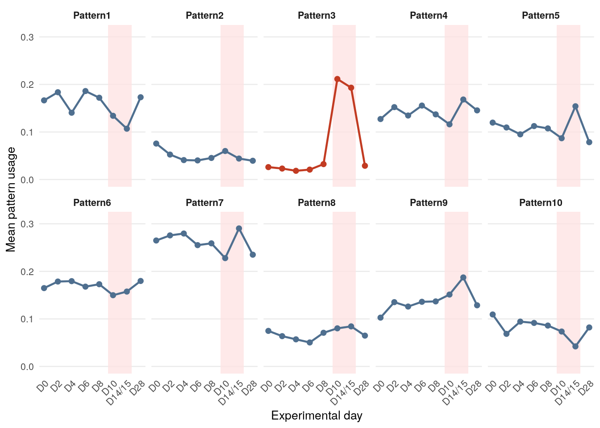
# View 2: the heatmap emphasizes relative magnitude across all pattern-day pairs.
pattern_time_heatmap <- pattern_time_long |>
dplyr::mutate(pattern = factor(pattern, levels = rev(pattern_time_matrix$pattern)))
ggplot(pattern_time_heatmap, aes(x = timepoint, y = pattern, fill = mean_usage)) +
geom_tile() +
scale_fill_viridis_c(option = "C") +
labs(x = "Experimental timepoint", y = "CoGAPS pattern", fill = "Mean usage") +
theme_minimal(base_size = 11) +
theme(axis.text.x = element_text(angle = 45, hjust = 1))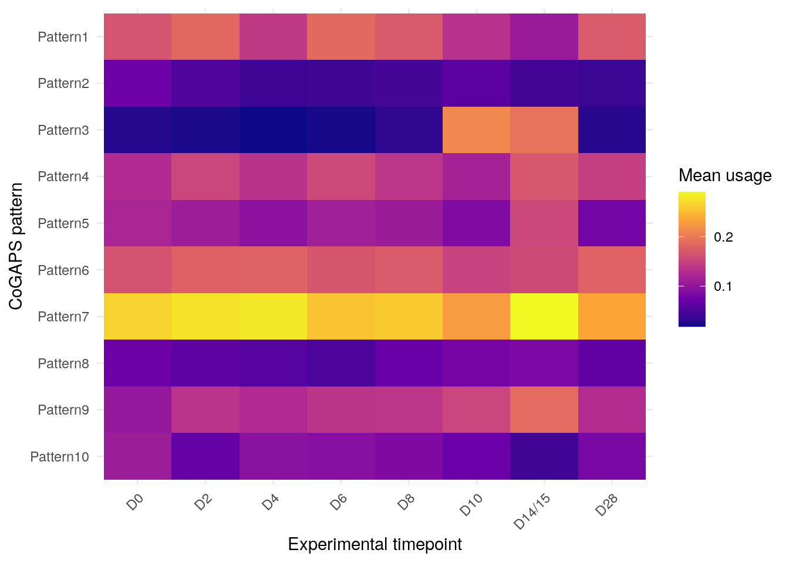
timepoint_order = ["D0", "D2", "D4", "D6", "D8", "D10", "D14/15", "D28"]
# Read the source table: one row per pattern and one column per timepoint.
pattern_time_matrix = pd.read_csv(
"data/processed/figures/source_tables/"
"figure_03_pattern_usage_by_time_matrix.csv"
)
# Reshape to long form, which makes the pattern-day-score structure explicit.
pattern_time_long = pattern_time_matrix.melt(
id_vars="pattern", var_name="timepoint", value_name="mean_usage"
)
pattern_time_long["timepoint"] = pd.Categorical(
pattern_time_long["timepoint"], categories=timepoint_order, ordered=True
)
pattern_time_long["day_index"] = pattern_time_long["timepoint"].cat.codes + 1
# View 1: line panels emphasize temporal shape.
# The late acute window is shaded in every panel, and the visual candidate is highlighted.
patterns = pattern_time_matrix["pattern"].tolist()
fig, axes = plt.subplots(2, 5, figsize=(11, 5.8), sharex=True, sharey=True)
axes = axes.ravel()
for ax, pattern in zip(axes, patterns):
pattern_df = (
pattern_time_long.loc[pattern_time_long["pattern"] == pattern]
.sort_values("day_index")
)
color = "#c23b22" if pattern == "Pattern3" else "#4f6f8f"
ax.axvspan(
timepoint_order.index("D10") + 1 - 0.35,
timepoint_order.index("D14/15") + 1 + 0.35,
color="#fee2e2",
alpha=0.75,
)
ax.plot(pattern_df["day_index"], pattern_df["mean_usage"], marker="o", color=color)
_ = ax.set_title(pattern, fontweight="bold")
_ = ax.set_ylim(0, 0.31)
_ = ax.grid(axis="y", alpha=0.25)<matplotlib.patches.Polygon object at 0x7f8557437760>
[<matplotlib.lines.Line2D object at 0x7f85573fd120>]
<matplotlib.patches.Polygon object at 0x7f85588e5b40>
[<matplotlib.lines.Line2D object at 0x7f85574376a0>]
<matplotlib.patches.Polygon object at 0x7f85586a74f0>
[<matplotlib.lines.Line2D object at 0x7f8557436a10>]
<matplotlib.patches.Polygon object at 0x7f85586d6c80>
[<matplotlib.lines.Line2D object at 0x7f8557436260>]
<matplotlib.patches.Polygon object at 0x7f85588e6f80>
[<matplotlib.lines.Line2D object at 0x7f85574359c0>]
<matplotlib.patches.Polygon object at 0x7f85574f8af0>
[<matplotlib.lines.Line2D object at 0x7f8557436590>]
<matplotlib.patches.Polygon object at 0x7f855752d3c0>
[<matplotlib.lines.Line2D object at 0x7f855747c040>]
<matplotlib.patches.Polygon object at 0x7f8557436ec0>
[<matplotlib.lines.Line2D object at 0x7f855747c4f0>]
<matplotlib.patches.Polygon object at 0x7f8557435c60>
[<matplotlib.lines.Line2D object at 0x7f855747cb20>]
<matplotlib.patches.Polygon object at 0x7f85573ceb90>
[<matplotlib.lines.Line2D object at 0x7f855747d150>]for ax in axes:
_ = ax.set_xticks(range(1, len(timepoint_order) + 1))
_ = ax.set_xticklabels(timepoint_order, rotation=45, ha="right")
_ = fig.supxlabel("Experimental day")
_ = fig.supylabel("Mean pattern usage")
fig.tight_layout()
plt.show()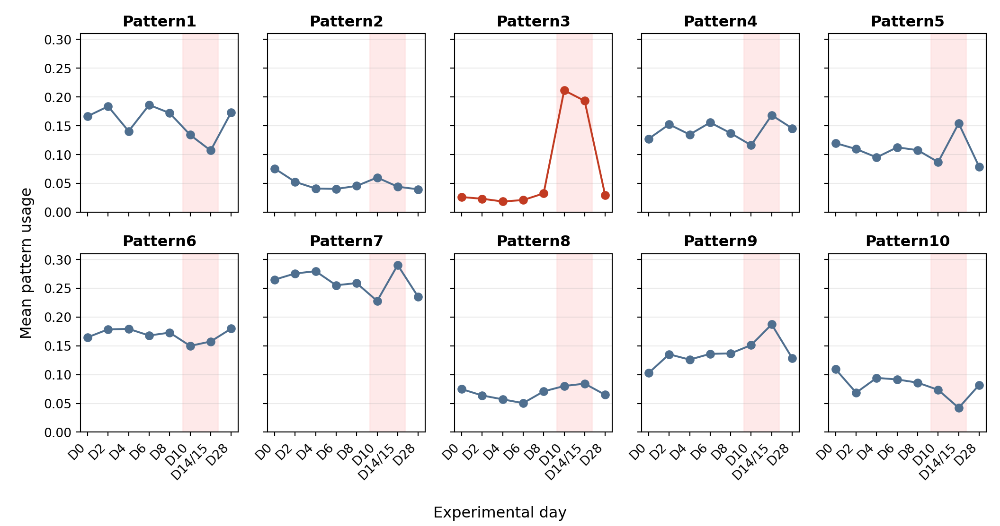
# View 2: the heatmap emphasizes relative magnitude across all pattern-day pairs.
# Pivot back to a matrix for matplotlib and keep the biological day order.
pivot = pattern_time_long.pivot(
index="pattern", columns="timepoint", values="mean_usage"
).loc[:, timepoint_order]
fig, ax = plt.subplots(figsize=(8, 4.5))
image = ax.imshow(pivot.values, aspect="auto")
ax.set_xticks(range(pivot.shape[1]))
ax.set_xticklabels(pivot.columns, rotation=45, ha="right")
ax.set_yticks(range(pivot.shape[0]))
ax.set_yticklabels(pivot.index)
ax.set_xlabel("Experimental timepoint")
ax.set_ylabel("CoGAPS pattern")
fig.colorbar(image, ax=ax, label="Mean usage")
fig.tight_layout()
plt.show()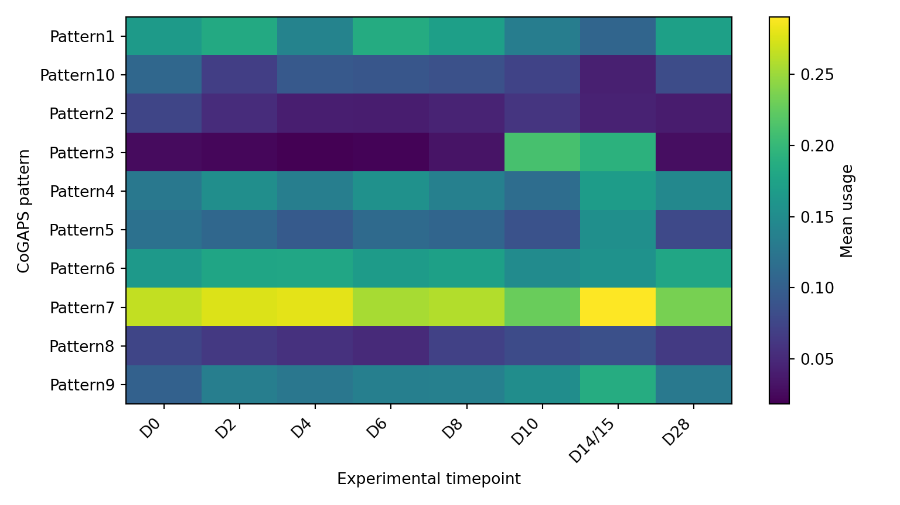
At this point, the visual evidence has nominated candidates rather than settled a claim. Pattern3 is the leading temporal candidate, and Pattern9 is a weaker secondary candidate. The next question is whether those shapes reflect infection activity, broad PBMC identity, subject structure, or some mixture of those explanations.
Pattern Usage by Broad Cell Type

Temporal shape is only one part of the story. PBMC samples contain a mixture of immune-cell identities, and that mixture can make a pattern look important for reasons that have little to do with infection timing. A pattern can look temporal because cell activity changed, because the mix of cell types changed, or because activity and identity are layered together.
This heatmap asks a different visual question from the time plot. Infection days are replaced by broad PBMC identities, so the display shifts from “when does the pattern appear?” to “which immune-cell groups carry high scores for this pattern?”
cell_type_order <- c(
"T_cell", "NK_cell", "Monocyte", "B_cell", "Neutrophil", "Plasmablast"
)
# Read the source table: one row per pattern and one column per broad cell type.
pattern_cell_matrix <- readr::read_csv(
here::here("data", "processed", "figures", "source_tables",
"figure_04_pattern_usage_by_cell_type_matrix.csv"),
show_col_types = FALSE
)
# Reshape so each tile represents one pattern-cell-type mean score.
pattern_cell_long <- pattern_cell_matrix |>
tidyr::pivot_longer(
cols = -pattern,
names_to = "broad_cell_type",
values_to = "mean_usage"
) |>
dplyr::mutate(
broad_cell_type = factor(broad_cell_type, levels = cell_type_order),
pattern = factor(pattern, levels = rev(pattern_cell_matrix$pattern))
)
ggplot(pattern_cell_long, aes(x = broad_cell_type, y = pattern, fill = mean_usage)) +
geom_tile() +
scale_fill_viridis_c(option = "C") +
labs(x = "Broad PBMC identity", y = "CoGAPS pattern", fill = "Mean usage") +
theme_minimal(base_size = 11) +
theme(axis.text.x = element_text(angle = 45, hjust = 1))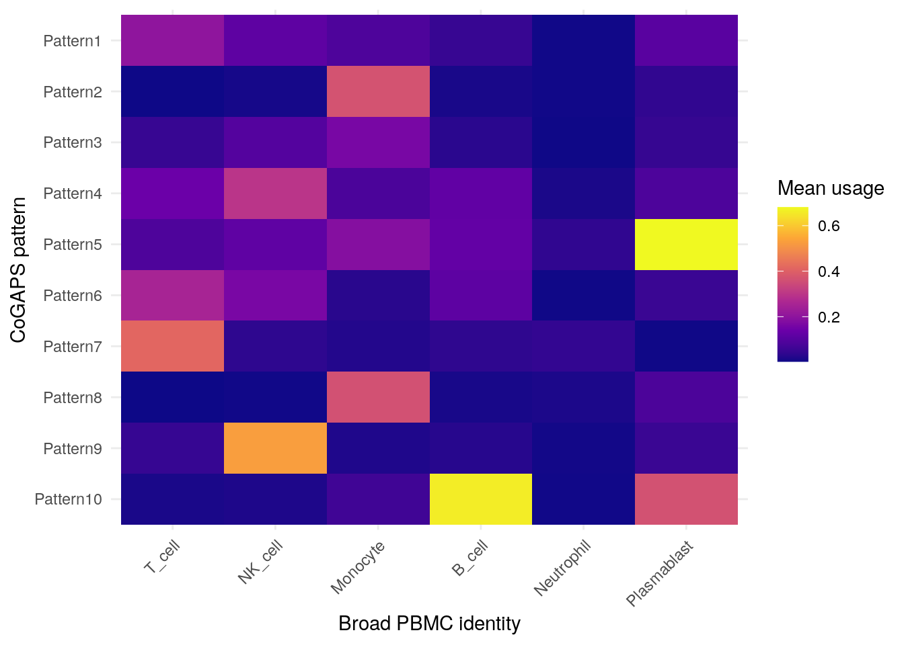
cell_type_order = ["T_cell", "NK_cell", "Monocyte", "B_cell", "Neutrophil", "Plasmablast"]
# Read the source table: one row per pattern and one column per broad cell type.
pattern_cell_matrix = pd.read_csv(
"data/processed/figures/source_tables/"
"figure_04_pattern_usage_by_cell_type_matrix.csv"
)
# Pivoting is simple here because the CSV is already matrix-like.
celltype_pivot = pattern_cell_matrix.set_index("pattern").loc[:, cell_type_order]
fig, ax = plt.subplots(figsize=(8, 4.5))
image = ax.imshow(celltype_pivot.values, aspect="auto")
ax.set_xticks(range(celltype_pivot.shape[1]))
ax.set_xticklabels(celltype_pivot.columns, rotation=45, ha="right")
ax.set_yticks(range(celltype_pivot.shape[0]))
ax.set_yticklabels(celltype_pivot.index)
ax.set_xlabel("Broad PBMC identity")
ax.set_ylabel("CoGAPS pattern")
fig.colorbar(image, ax=ax, label="Mean usage")
fig.tight_layout()
plt.show()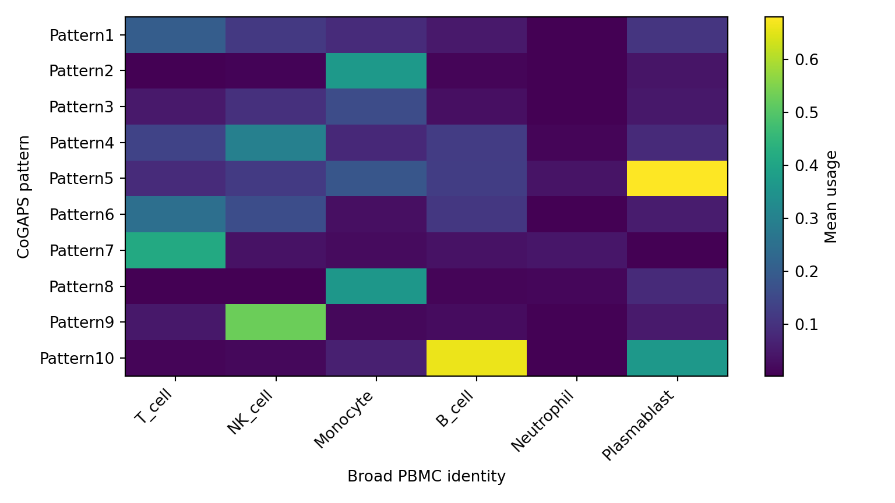
Patterns that are strongest in T cells, B cells, or plasmablasts may be useful identity or composition patterns. Pattern3 remains interesting because it has a strong temporal shape and is also visible in monocyte-rich parts of the PBMC mixture. That combination is exactly why the analysis cannot stop here: Data Analysis still has to ask whether Pattern3 is mostly , mostly , or .
Pattern Scores on a Transcriptome UMAP

The gives one more context view before the section moves to subject-level trajectories. Each point is a discovery-set cell, and the same coordinates are reused in all four panels. The broad PBMC identity panel is the reference map: it shows where T cells, NK cells, monocytes, B cells, neutrophils, and plasmablasts fall in the transcriptome embedding. The other panels color the same cells by selected-model CoGAPS scores.
These three patterns are displayed because they create a useful contrast. Pattern7 is an : its scores are concentrated in T-cell neighborhoods. Pattern10 is another identity anchor: it is strongest in B-cell and plasmablast neighborhoods. Pattern3 is included for a different reason. The time-course plots nominated it as the leading temporal candidate, and this UMAP shows that its scores are most visible in monocyte-rich regions rather than spread evenly across all PBMCs.
Do not treat a UMAP as proof. Nearby points are useful for visual context, but the axes are not biological units, and the display can change with preprocessing and embedding parameters. The important reading here is the combination: Pattern3 has a temporal trajectory, but it also has a cell-context pattern. That is why the next checks move from cell-level context to subject-level timing and top-gene directionality.
The code recreates the four-panel structure of the saved figure. It first draws the broad-cell-type reference panel, then uses the same UMAP coordinates to draw the three selected pattern-score panels.
cell_type_order <- c(
"T_cell", "NK_cell", "Monocyte", "B_cell", "Neutrophil", "Plasmablast"
)
cell_type_colors <- c(
T_cell = "#66c2a5",
NK_cell = "#fc8d62",
Monocyte = "#8da0cb",
B_cell = "#e78ac3",
Neutrophil = "#a6d854",
Plasmablast = "#ffd92f"
)
# Read the small UMAP table. It contains coordinates, cell metadata, and pattern scores.
embedding_scores <- readr::read_csv(
here::here("data", "processed", "figures", "source_tables",
"figure_08_transcriptome_umap_pattern_scores_source.csv"),
show_col_types = FALSE
) |>
dplyr::mutate(
broad_cell_type = factor(broad_cell_type, levels = cell_type_order)
)
# Panel 1: a broad PBMC identity map provides the reference for the score panels.
identity_panel <- ggplot(
embedding_scores,
aes(x = umap_1, y = umap_2, color = broad_cell_type)
) +
geom_point(size = 0.35, alpha = 0.75) +
scale_color_manual(values = cell_type_colors, drop = FALSE) +
guides(color = guide_legend(override.aes = list(size = 3.2, alpha = 1))) +
labs(title = "Broad PBMC identity", x = "UMAP 1", y = "UMAP 2", color = "Identity") +
theme_minimal(base_size = 10) +
theme(
panel.grid = element_blank(),
legend.key.size = grid::unit(0.55, "cm")
)
# Panels 2-4: selected pattern scores are drawn on the same coordinates.
selected_patterns <- c(
Pattern3 = "Pattern3: leading temporal candidate",
Pattern7 = "Pattern7: T-cell identity",
Pattern10 = "Pattern10: B-cell/plasmablast identity"
)
score_panel <- function(pattern_name, pattern_title) {
upper_limit <- stats::quantile(embedding_scores[[pattern_name]], 0.99, na.rm = TRUE)
ggplot(embedding_scores, aes(x = umap_1, y = umap_2, color = .data[[pattern_name]])) +
geom_point(size = 0.35, alpha = 0.75) +
scale_color_viridis_c(
option = "C",
limits = c(0, upper_limit),
oob = scales::squish
) +
labs(title = pattern_title, x = "UMAP 1", y = "UMAP 2", color = "Cell score") +
theme_minimal(base_size = 10) +
theme(panel.grid = element_blank())
}
pattern_panels <- Map(score_panel, names(selected_patterns), selected_patterns)
patchwork::wrap_plots(c(list(identity_panel), pattern_panels), ncol = 2)
import numpy as np
from matplotlib.lines import Line2D
cell_type_order = ["T_cell", "NK_cell", "Monocyte", "B_cell", "Neutrophil", "Plasmablast"]
cell_type_colors = {
"T_cell": "#66c2a5",
"NK_cell": "#fc8d62",
"Monocyte": "#8da0cb",
"B_cell": "#e78ac3",
"Neutrophil": "#a6d854",
"Plasmablast": "#ffd92f",
}
# Read the small UMAP table. It contains coordinates, cell metadata, and pattern scores.
embedding_scores = pd.read_csv(
"data/processed/figures/source_tables/"
"figure_08_transcriptome_umap_pattern_scores_source.csv"
)
# Panel 1: a broad PBMC identity map provides the reference for the score panels.
# Panels 2-4: selected pattern scores are drawn on the same coordinates.
selected_patterns = {
"Pattern3": "Pattern3: leading temporal candidate",
"Pattern7": "Pattern7: T-cell identity",
"Pattern10": "Pattern10: B-cell/plasmablast identity",
}
fig, axes = plt.subplots(2, 2, figsize=(11, 8.4), sharex=True, sharey=True)
axes = axes.ravel()
identity_ax = axes[0]
for cell_type in cell_type_order:
cell_df = embedding_scores.loc[embedding_scores["broad_cell_type"].eq(cell_type)]
identity_ax.scatter(
cell_df["umap_1"],
cell_df["umap_2"],
s=2,
alpha=0.75,
color=cell_type_colors[cell_type],
)
identity_ax.set_title("Broad PBMC identity")
identity_ax.legend(
handles=[
Line2D([0], [0], marker="o", color="w",
markerfacecolor=cell_type_colors[cell_type],
label=cell_type, markersize=9)
for cell_type in cell_type_order
],
frameon=False,
fontsize=8,
loc="upper right",
)
for ax, (pattern, title) in zip(axes[1:], selected_patterns.items()):
upper_limit = np.nanquantile(embedding_scores[pattern], 0.99)
image = ax.scatter(
embedding_scores["umap_1"],
embedding_scores["umap_2"],
c=embedding_scores[pattern],
s=2,
alpha=0.75,
vmin=0,
vmax=upper_limit,
)
ax.set_title(title)
fig.colorbar(image, ax=ax, label="Cell score")
for ax in axes:
ax.set_xlabel("UMAP 1")
ax.set_ylabel("UMAP 2")
ax.set_xticks([])
ax.set_yticks([])
fig.tight_layout()
plt.show()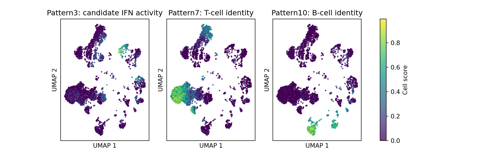
The UMAP reading agrees with the previous heatmaps. Pattern7 and Pattern10 look like identity patterns because their high-score cells occupy recognizable T-cell and B-cell or plasmablast regions. Pattern3 is different: its temporal rise makes it worth following, while its monocyte-rich location reminds you that infection activity and PBMC identity can be layered together. The below checks whether that temporal signal is still visible after summarizing by participant and infection day.
Pattern3 Subject-Level Trajectory

The time and cell-type figures nominate Pattern3 as the leading temporal candidate. The trajectory now asks whether that signal is shared across subjects or driven by one unusually strong subject-timepoint. Gray lines show subject-level means, the red line shows the mean across subjects with , and the shaded region marks the late acute window.
This figure uses rather than treating every cell as an independent . Cells from the same subject and day are related measurements, so the plot draws one line per subject and then overlays the across-subject mean.
# Subject table: one mean Pattern3 score per subject and timepoint.
pattern3_subjects <- readr::read_csv(
here::here("data", "processed", "figures", "source_tables",
"figure_05_pattern3_subject_trajectory_source.csv"),
show_col_types = FALSE
)
# Summary table: across-subject mean and standard error at each timepoint.
pattern3_summary <- readr::read_csv(
here::here("data", "processed", "figures", "source_tables",
"figure_05_pattern3_summary_trajectory_source.csv"),
show_col_types = FALSE
)
ggplot() +
annotate("rect", xmin = 9.3, xmax = 15.2, ymin = -Inf, ymax = Inf,
fill = "#fee2e2", alpha = 0.7) +
geom_line(data = pattern3_subjects,
aes(x = day_merged_numeric, y = mean_pattern_score, group = subject),
color = "#7b8794", alpha = 0.65) +
geom_point(data = pattern3_subjects,
aes(x = day_merged_numeric, y = mean_pattern_score),
color = "#7b8794", alpha = 0.65, size = 1.6) +
geom_errorbar(data = pattern3_summary,
aes(x = day_merged_numeric,
ymin = mean_subject_score - se_subject_score,
ymax = mean_subject_score + se_subject_score),
color = "#c23b22", width = 0.35) +
geom_line(data = pattern3_summary,
aes(x = day_merged_numeric, y = mean_subject_score),
color = "#c23b22", linewidth = 1.1) +
geom_point(data = pattern3_summary,
aes(x = day_merged_numeric, y = mean_subject_score),
color = "#c23b22", size = 2) +
scale_x_continuous(
breaks = pattern3_summary$day_merged_numeric,
labels = pattern3_summary$timepoint_merged
) +
labs(x = "Experimental day", y = "Pattern3 subject mean score") +
theme_minimal(base_size = 11) +
theme(axis.text.x = element_text(angle = 45, hjust = 1))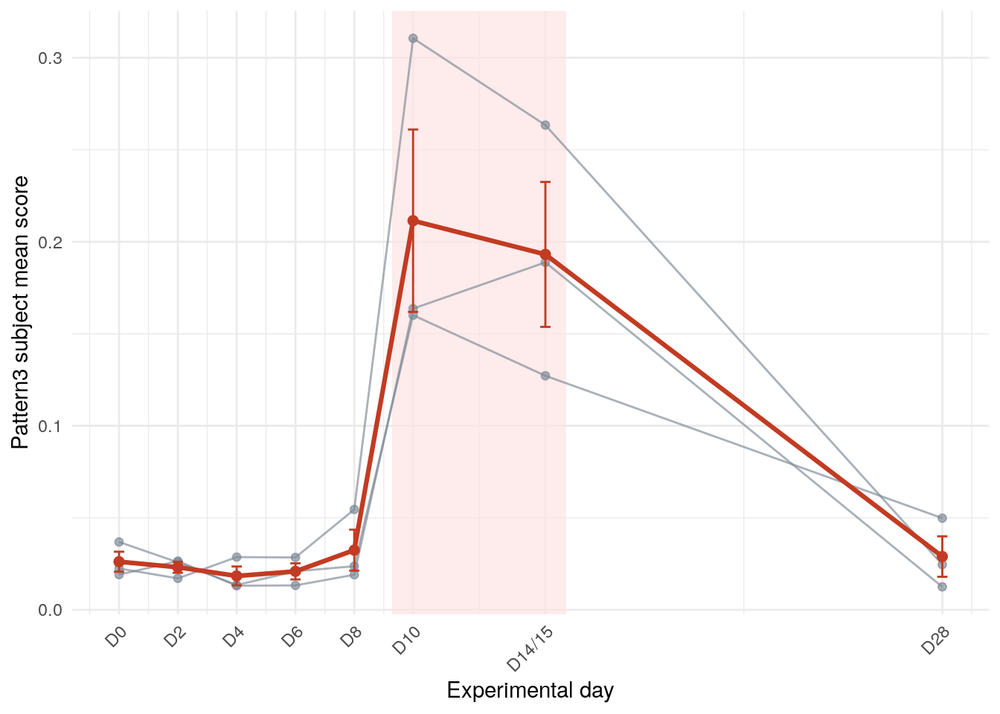
# Subject table: one mean Pattern3 score per subject and timepoint.
pattern3_subjects = pd.read_csv(
"data/processed/figures/source_tables/"
"figure_05_pattern3_subject_trajectory_source.csv"
)
# Summary table: across-subject mean and standard error at each timepoint.
pattern3_summary = pd.read_csv(
"data/processed/figures/source_tables/"
"figure_05_pattern3_summary_trajectory_source.csv"
).sort_values("day_merged_numeric")
fig, ax = plt.subplots(figsize=(8, 4.2))
ax.axvspan(9.3, 15.2, color="#fee2e2", alpha=0.7)
for subject, subject_df in pattern3_subjects.groupby("subject"):
subject_df = subject_df.sort_values("day_merged_numeric")
ax.plot(
subject_df["day_merged_numeric"],
subject_df["mean_pattern_score"],
color="#7b8794",
marker="o",
alpha=0.65,
linewidth=1,
)
ax.errorbar(
pattern3_summary["day_merged_numeric"],
pattern3_summary["mean_subject_score"],
yerr=pattern3_summary["se_subject_score"],
color="#c23b22",
marker="o",
linewidth=2,
capsize=3,
)
ax.set_xticks(pattern3_summary["day_merged_numeric"])
ax.set_xticklabels(pattern3_summary["timepoint_merged"], rotation=45, ha="right")
ax.set_xlabel("Experimental day")
ax.set_ylabel("Pattern3 subject mean score")
fig.tight_layout()
plt.show()
The subject-level view strengthens the visual nomination because the late acute rise appears across subject summaries rather than only in pooled cell-level averages. It still does not show whether the genes associated with the pattern increase relative to baseline. That is why the next visualization checks directionality.
Top-Gene Directionality Heatmap
{kind=link}
The heatmap belongs here because a high CoGAPS score still has no direction. A cell or group can use a pattern more strongly, but the score alone does not tell you whether the pattern’s top genes are higher or lower than baseline. For the leading visual candidate, this heatmap adds that missing direction by showing pseudobulk for top Pattern3 genes.
The important plotting choice here is a diverging color scale centered at zero. Values above zero indicate higher expression relative to baseline; values below zero indicate lower expression relative to baseline. Centering the color scale prevents a small negative value and a large positive value from being read as the same kind of evidence.
# Rows are top Pattern3 genes; columns are post-baseline timepoints.
direction_matrix <- readr::read_csv(
here::here("data", "processed", "figures", "source_tables",
"figure_06_pattern3_top_gene_directionality_matrix.csv"),
show_col_types = FALSE
)
# Convert the matrix to long form so ggplot can draw one tile per gene-timepoint.
direction_long <- direction_matrix |>
tidyr::pivot_longer(
cols = -gene_label,
names_to = "timepoint",
values_to = "log2_fold_change"
) |>
dplyr::mutate(
timepoint = factor(timepoint, levels = c("D2", "D4", "D6", "D8", "D10", "D14/15", "D28")),
gene_label = factor(gene_label, levels = rev(direction_matrix$gene_label))
)
max_abs_change <- max(abs(direction_long$log2_fold_change), na.rm = TRUE)
ggplot(direction_long, aes(x = timepoint, y = gene_label, fill = log2_fold_change)) +
geom_tile() +
scale_fill_gradient2(
low = "#2166ac", mid = "white", high = "#b2182b",
midpoint = 0, limits = c(-max_abs_change, max_abs_change)
) +
labs(x = "Experimental timepoint", y = "Top Pattern3 gene", fill = "log2 fold change") +
theme_minimal(base_size = 10) +
theme(axis.text.x = element_text(angle = 45, hjust = 1))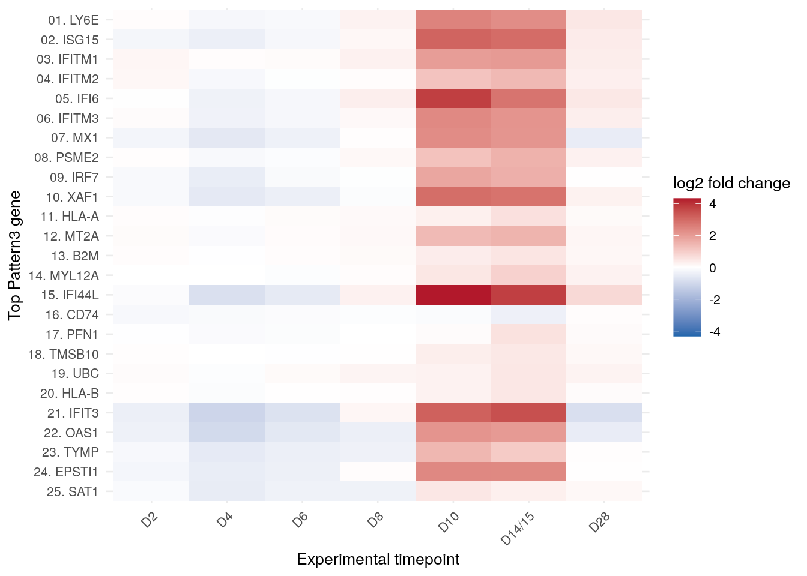
import matplotlib.colors as mcolors
# Rows are top Pattern3 genes; columns are post-baseline timepoints.
direction_matrix = pd.read_csv(
"data/processed/figures/source_tables/"
"figure_06_pattern3_top_gene_directionality_matrix.csv"
)
direction_pivot = direction_matrix.set_index("gene_label")
max_abs_change = abs(direction_pivot.to_numpy()).max()
norm = mcolors.TwoSlopeNorm(vmin=-max_abs_change, vcenter=0, vmax=max_abs_change)
fig, ax = plt.subplots(figsize=(8, 5.2))
image = ax.imshow(direction_pivot.values, aspect="auto", cmap="RdBu_r", norm=norm)
ax.set_xticks(range(direction_pivot.shape[1]))
ax.set_xticklabels(direction_pivot.columns, rotation=45, ha="right")
ax.set_yticks(range(direction_pivot.shape[0]))
ax.set_yticklabels(direction_pivot.index)
ax.set_xlabel("Experimental timepoint")
ax.set_ylabel("Top Pattern3 gene")
fig.colorbar(image, ax=ax, label="log2 fold change")
fig.tight_layout()
plt.show()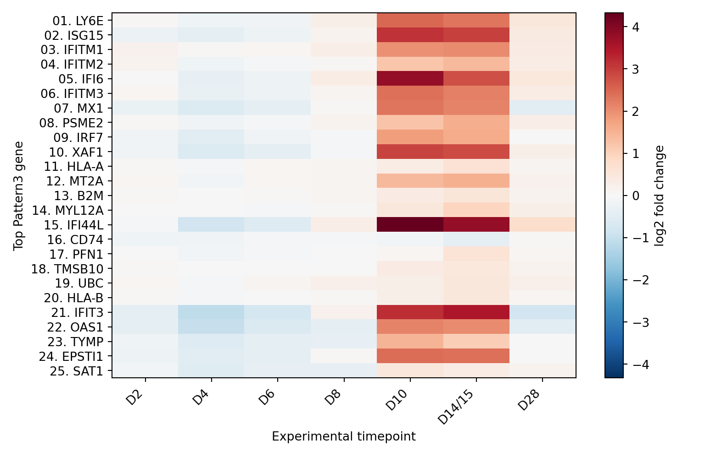
This directionality view makes the Pattern3 visual hypothesis more biologically plausible, but it is still not the formal claim. Data Analysis will connect visual timing, identity and activity evidence, top genes, IFN-score correlation, directionality summaries, diagnostics, and the compact K = 5 comparator.
Visual hypotheses to carry into Data Analysis
Pattern3is the leading visual candidate for a late acute temporal program.Pattern9shows a weaker late rise and remains a secondary temporal candidate.- Several patterns are stronger in broad PBMC identities, so identity and activity still need to be separated.
- Top
Pattern3genes appear higher than baseline during late acute timepoints, but the next section must evaluate that impression with directionality summaries and gene-level evidence.
The next section turns this visual reading into evidence-bounded analysis. It asks which parts of the story are supported by the selected model, which parts remain cautious interpretation, and how much of the reading survives sensitivity checks.
Data Analysis
The figures in Data Visualization nominated Pattern3 as the strongest temporal candidate in the selected K = 10 model. They also showed why the interpretation is not automatic. A can rise across infection days, but the same score can also be shaped by broad PBMC identity, subject structure, and the nonnegative way CoGAPS represents patterns.
This section is where the case study stops looking for interesting shapes and starts testing what those shapes can support. You will carry forward the K = 10, seed = 2, nIterations = 2000 model selected in Data Import. Then you will ask four questions:
- Is the selected CoGAPS run technically appropriate to interpret?
- Which vary across the experimental infection time course?
- Which programs look , , or ?
- What evidence supports interpreting one program as an ?
The analysis still teaches CoGAPS, not just the biology. You will inspect how a fitted CoGAPS model produces two linked matrices: and . The biological interpretation comes from connecting those matrices back to cells, genes, subjects, timepoints, broad PBMC identities, and directionality evidence.
How the selected CoGAPS model was run
You do not need to rerun CoGAPS to complete the main lesson. The included files already contain the . The excerpts below show the core model call so you can see exactly how the prepared CoGAPS input became the selected K = 10 model. Full Docker commands, sweep commands, and script bodies are in Advanced Reproduction: CoGAPS Model and Analysis Commands in the Full Reproduction Guide.
R runner excerpt
sce <- zellkonverter::readH5AD(discovery_h5ad, reader = "R")
data_matrix <- SummarizedExperiment::assay(sce, "X")
params <- CogapsParams(
nPatterns = 10,
nIterations = 2000,
seed = 2,
sparseOptimization = TRUE
)
params@takePumpSamples <- TRUE
result <- CoGAPS(
data_matrix,
params,
nThreads = 4,
messages = TRUE,
outputFrequency = 100,
checkpointOutFile = "cogaps_K10_seed2_iter2000.checkpoint.out",
checkpointInterval = 500,
nSnapshots = 10,
snapshotPhase = "all",
asynchronousUpdates = TRUE
)Python runner excerpt
cogaps_input = ad.read_h5ad(cogaps_input_h5ad)
params = CoParams(adata=cogaps_input)
setParams(
params,
{
"nPatterns": 10,
"nIterations": 2000,
"seed": 2,
"useSparseOptimization": True,
"transposeData": False,
"nThreads": 4,
"takePumpSamples": True,
},
)
snapshot_frequency = 200 # 10 requested snapshots across 2,000 iterations.
result = CoGAPS(
cogaps_input,
params,
nThreads=4,
outputFrequency=100,
checkpointOutFile="cogaps_K10_seed2_iter2000.checkpoint.out",
checkpointInterval=500,
asynchronousUpdates=True,
nSnapshots=snapshot_frequency,
snapshotPhase="all",
)Read these excerpts in two passes. The first few lines load the prepared discovery matrix and declare the selected model settings: ten patterns, 2,000 iterations, seed 2, sparse optimization, and four threads. The later arguments control transparency during the run by writing messages, trace points, checkpoints, and snapshots. The R script reads the cells-by-genes discovery object and passes its expression matrix to CoGAPS. The Python script reads the genes-by-cells CoGAPS input and sets transposeData = False, which keeps the explicit. Both runners write the same kinds of teaching outputs: gene loadings, cell scores, top genes, pattern summaries, trace files, diagnostics, and metrics.
Question 1 Carry-Forward: Is the Selected Model Appropriate to Interpret?
Data Import already answered the rank-selection question: the case study uses K = 10 as the main model because it stays on the stability plateau and resolves an activity-like interferon-candidate temporal program. K = 5 remains part of the story, but as a compact rather than the main model.
That decision is necessary, but it is not sufficient. Before interpreting any pattern, check that the selected run has the expected settings and enough to be treated as a usable model fit.
r_metrics <- jsonlite::fromJSON(
here::here("data", "processed", "selected_model_k10", "r",
"cogaps_K10_seed2_iter2000.metrics.json")
)
data.frame(
setting = c(
"implementation",
"K",
"seed",
"iterations",
"CoGAPS threads",
"sparse optimization",
"trace output frequency",
"checkpoint interval",
"diagnostic snapshots",
"runtime minutes"
),
value = c(
r_metrics$language,
r_metrics$K,
r_metrics$seed,
r_metrics$n_iter,
r_metrics$nThreads,
r_metrics$sparseOptimization,
r_metrics$outputFrequency,
r_metrics$checkpointInterval,
r_metrics$nSnapshots,
round(r_metrics$runtime_sec / 60, 1)
)
) |>
knitr::kable()| setting | value |
|---|---|
| implementation | R |
| K | 10 |
| seed | 2 |
| iterations | 2000 |
| CoGAPS threads | 4 |
| sparse optimization | TRUE |
| trace output frequency | 100 |
| checkpoint interval | 500 |
| diagnostic snapshots | 10 |
| runtime minutes | 24.3 |
with open(
"data/processed/selected_model_k10/python/"
"cogaps_K10_seed2_iter2000.metrics.json"
) as f:
py_metrics = json.load(f)
pd.DataFrame({
"setting": [
"implementation",
"K",
"seed",
"iterations",
"CoGAPS threads",
"sparse optimization",
"trace output frequency",
"checkpoint interval",
"diagnostic snapshots",
"runtime minutes",
],
"value": [
py_metrics["language"],
py_metrics["K"],
2,
py_metrics["n_iter"],
py_metrics["cogaps_threads"],
py_metrics["use_sparse_optimization"],
py_metrics["outputFrequency"],
py_metrics["checkpointInterval"],
py_metrics["nSnapshots"],
round(py_metrics["runtime_sec"] / 60, 1),
],
})The tabset reads the saved metrics file and turns it into a checklist. Instead of asking you to scan a JSON file by hand, it pulls out the settings that matter for interpretation: implementation, rank, seed, iterations, thread count, diagnostic recording, checkpointing, snapshots, and runtime.
These settings connect the selected run back to the rank decision from Data Import. The model has ten patterns, uses the representative seed and iteration count, records diagnostic traces every 100 iterations, and saves checkpoint and snapshot information. The run time is also instructive: even this selected model took about 24 minutes in the four-thread Docker setup used to create the included files. That is why the learner path reads the saved outputs instead of rerunning CoGAPS during the lesson.
The trace gives a second check. is not a biological result; it is a model-fit diagnostic. A large early drop followed by small late movement is consistent with a run that moved away from a poor initial state and then changed more slowly.
r_trace <- readr::read_csv(
here::here("data", "processed", "selected_model_k10", "r",
"cogaps_K10_seed2_iter2000.trace.csv"),
show_col_types = FALSE
)
ggplot(r_trace, aes(x = trace_index, y = chisq)) +
geom_line(linewidth = 0.8, color = "#2E74B5") +
geom_point(size = 1.4, color = "#1F4D78") +
labs(
x = "Trace point",
y = "Chi-square",
title = "Selected K = 10 CoGAPS diagnostic trace"
) +
theme_minimal(base_size = 11)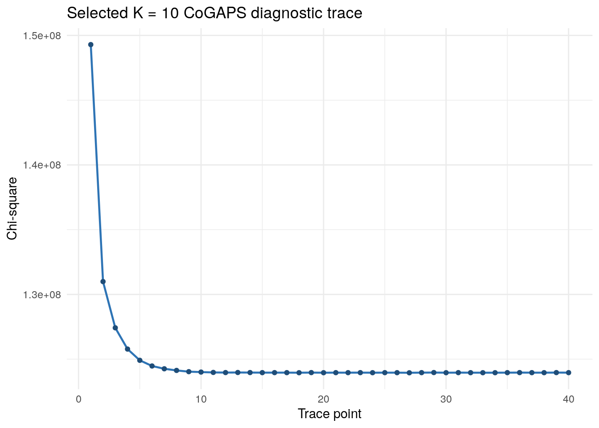
py_trace = pd.read_csv(
"data/processed/selected_model_k10/python/"
"cogaps_K10_seed2_iter2000.trace.csv"
)
fig, ax = plt.subplots(figsize=(7, 4))
ax.plot(py_trace["trace_index"], py_trace["chisq"], marker="o", color="#2E74B5")
ax.set_xlabel("Trace point")
ax.set_ylabel("Chi-square")
ax.set_title("Selected K = 10 CoGAPS diagnostic trace")
fig.tight_layout()
plt.show()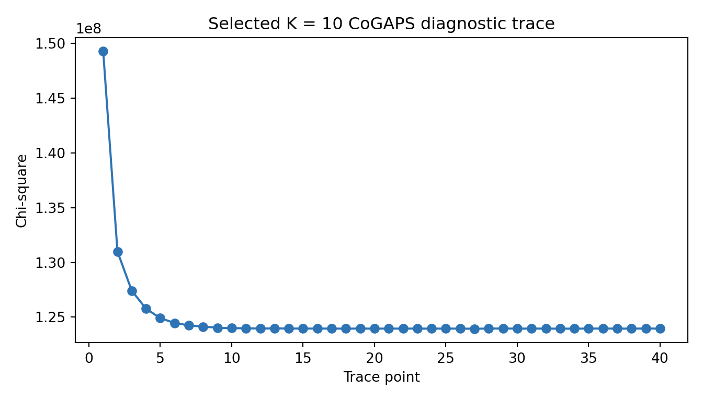
Here, the saved trace file becomes a plot. The code reads the recorded chi-square values, keeps their order using trace_index, and draws the trajectory so you can inspect the model-fit behavior rather than relying only on the final output tables.
r_diag <- jsonlite::fromJSON(
here::here("data", "processed", "selected_model_k10", "r",
"cogaps_K10_seed2_iter2000.diagnostics.json")
)
last_five <- tail(r_trace$chisq, 5)
data.frame(
diagnostic = c(
"first trace chi-square",
"final trace chi-square",
"chi-square reduction",
"final-five relative range",
"trace points",
"total updates"
),
value = c(
round(dplyr::first(r_trace$chisq) / 1e6, 1),
round(dplyr::last(r_trace$chisq) / 1e6, 1),
paste0(round(
100 * (dplyr::first(r_trace$chisq) - dplyr::last(r_trace$chisq)) /
dplyr::first(r_trace$chisq), 1
), "%"),
paste0(round(
100 * (max(last_five) - min(last_five)) / dplyr::last(r_trace$chisq), 4
), "%"),
r_diag$chisqHistory_length,
r_diag$totalUpdates
)
) |>
knitr::kable()| diagnostic | value |
|---|---|
| first trace chi-square | 149.3 |
| final trace chi-square | 124 |
| chi-square reduction | 17% |
| final-five relative range | 0.0053% |
| trace points | 40 |
| total updates | 237789291 |
with open(
"data/processed/selected_model_k10/python/"
"cogaps_K10_seed2_iter2000.diagnostics.json"
) as f:
py_diag = json.load(f)
last_five_py = py_trace["chisq"].tail(5)
pd.DataFrame({
"diagnostic": [
"first trace chi-square",
"final trace chi-square",
"chi-square reduction",
"final-five relative range",
"trace points",
"total updates",
],
"value": [
round(py_trace["chisq"].iloc[0] / 1e6, 1),
round(py_trace["chisq"].iloc[-1] / 1e6, 1),
f"{100 * (py_trace['chisq'].iloc[0] - py_trace['chisq'].iloc[-1]) / py_trace['chisq'].iloc[0]:.1f}%",
f"{100 * (last_five_py.max() - last_five_py.min()) / py_trace['chisq'].iloc[-1]:.4f}%",
py_diag["chisqHistory_length"],
py_diag["totalUpdates"],
],
})The summary table compresses the same trace into a few audit numbers. It records where the trace started, where it ended, how much it dropped, how much the final few trace points still move, and how many updates contributed to the run.
The diagnostics support using the selected model for interpretation. Chi-square drops from about 149.3 million to about 124.0 million, and the last five recorded trace points vary by only about 0.005 percent of the final value. That does not prove a unique global optimum, and it does not assign meaning to Pattern3. It tells you that the selected run behaved sensibly enough for the biological checks that follow.
From CoGAPS Output to Biological Evidence
A fitted CoGAPS model does not directly say “this is a temporal immune program.” It gives you two matrices that have to be read together.
The tells you which genes help define each pattern. A high loading for ISG15 in Pattern3, for example, means ISG15 contributes strongly to that pattern. The tells you how strongly each cell uses each pattern. A high Pattern3 score in one cell means that the cell’s expression profile contains more of that learned pattern.
Those two matrices become biological evidence only after they are connected back to metadata. Cell scores are joined to subject, infection day, and broad PBMC identity. Gene loadings are ranked into . The interpretation tables used below then combine timing, cell identity, , top genes, and directionality summaries.
The short example below rebuilds one part of that chain from the included selected-model output: it joins the selected cell scores to metadata, then summarizes Pattern3 by subject and timepoint. The preview focuses on baseline, the late acute window, and recovery so the temporal contrast is easy to read.
selected_cells <- readr::read_csv(
here::here("data", "processed", "selected_model_k10", "r",
"cogaps_K10_seed2_iter2000.discovery_cells_with_patterns.csv"),
show_col_types = FALSE
)
subject_time_pattern3 <- selected_cells |>
group_by(subject, timepoint_merged, day_merged_numeric) |>
summarize(
n_cells = n(),
mean_pattern3_score = mean(Pattern3, na.rm = TRUE),
.groups = "drop"
) |>
arrange(subject, day_merged_numeric)
subject_time_pattern3 |>
filter(timepoint_merged %in% c("D0", "D10", "D14/15", "D28")) |>
select(subject, timepoint_merged, n_cells, mean_pattern3_score) |>
knitr::kable(digits = 3)| subject | timepoint_merged | n_cells | mean_pattern3_score |
|---|---|---|---|
| Subject2 | D0 | 200 | 0.037 |
| Subject2 | D10 | 200 | 0.160 |
| Subject2 | D14/15 | 200 | 0.127 |
| Subject2 | D28 | 200 | 0.050 |
| Subject3 | D0 | 200 | 0.022 |
| Subject3 | D10 | 200 | 0.311 |
| Subject3 | D14/15 | 200 | 0.263 |
| Subject3 | D28 | 200 | 0.025 |
| Subject5 | D0 | 200 | 0.019 |
| Subject5 | D10 | 200 | 0.164 |
| Subject5 | D14/15 | 200 | 0.189 |
| Subject5 | D28 | 200 | 0.012 |
selected_cells_py = pd.read_csv(
"data/processed/selected_model_k10/r/"
"cogaps_K10_seed2_iter2000.discovery_cells_with_patterns.csv",
index_col=0,
)
subject_time_pattern3_py = (
selected_cells_py
.groupby(["subject", "timepoint_merged", "day_merged_numeric"], as_index=False)
.agg(
n_cells=("subject", "size"),
mean_pattern3_score=("Pattern3", "mean"),
)
.sort_values(["subject", "day_merged_numeric"])
)
subject_time_pattern3_py.loc[
subject_time_pattern3_py["timepoint_merged"].isin(["D0", "D10", "D14/15", "D28"]),
["subject", "timepoint_merged", "n_cells", "mean_pattern3_score"],
]The key programming move is the grouping step. The code starts from one row per discovery-set cell, groups those cells by subject and merged infection day, counts how many cells contribute to each group, and averages the Pattern3 score within that group.
Read this table as a change in evidence unit. Each row now represents one subject at one infection day, not one cell. The n_cells column shows how many discovery-set cells contributed to that subject-timepoint mean, and mean_pattern3_score summarizes how strongly those cells used Pattern3.
That grouping matters because the temporal claim should not depend on treating thousands of cells as thousands of independent people. In this preview, each subject has a much higher Pattern3 mean at D10 and D14/15 than at baseline or recovery. The next table asks whether that late acute rise makes Pattern3 stand out when all selected-model patterns are ranked together.
Question 2: Which Latent Programs Vary Over Time?
The first biological check asks which patterns move across infection days. Data Visualization made Pattern3 look important; now the table tests that impression with subject-level summaries and a .
eta_timepoint is the table’s timepoint effect-size column: it measures how much of a pattern’s score variation is associated with infection day. It is not a p-value, and it is not the only evidence you need. It is a useful way to rank temporal candidates before assigning a biological label.
pattern_annotation <- readr::read_csv(
here::here("data", "processed", "interpretation",
"pattern_annotation_table.csv"),
show_col_types = FALSE
)
temporal_view <- pattern_annotation |>
select(pattern, observed_label, pattern_class, eta_timepoint,
subject_peak_timepoint, subject_mean_D0, subject_mean_D10,
subject_mean_D14_15, subject_mean_D28) |>
arrange(desc(eta_timepoint)) |>
head(6)
temporal_view |>
knitr::kable(digits = 3)| pattern | observed_label | pattern_class | eta_timepoint | subject_peak_timepoint | subject_mean_D0 | subject_mean_D10 | subject_mean_D14_15 | subject_mean_D28 |
|---|---|---|---|---|---|---|---|---|
| Pattern3 | IFN-associated temporal activity program | activity-like | 0.454 | D10 | 0.026 | 0.211 | 0.193 | 0.029 |
| Pattern5 | Plasmablast identity/composition-associated program | identity-like | 0.021 | D14/15 | 0.120 | 0.087 | 0.154 | 0.079 |
| Pattern1 | T_cell identity/composition-associated program | identity-like | 0.019 | D6 | 0.167 | 0.134 | 0.107 | 0.173 |
| Pattern4 | NK_cell identity/composition-associated program | identity-like | 0.010 | D14/15 | 0.127 | 0.116 | 0.168 | 0.145 |
| Pattern10 | B_cell identity/composition-associated program | identity-like | 0.009 | D0 | 0.109 | 0.073 | 0.042 | 0.082 |
| Pattern9 | NK_cell identity/composition-associated program | identity-like | 0.009 | D14/15 | 0.103 | 0.151 | 0.187 | 0.129 |
pattern_annotation_py = pd.read_csv(
"data/processed/interpretation/pattern_annotation_table.csv"
)
temporal_view_py = (
pattern_annotation_py
.loc[:, [
"pattern", "observed_label", "pattern_class", "eta_timepoint",
"subject_peak_timepoint", "subject_mean_D0", "subject_mean_D10",
"subject_mean_D14_15", "subject_mean_D28",
]]
.sort_values("eta_timepoint", ascending=False)
.head(6)
)
temporal_view_pyThis chunk narrows the interpretation table to the columns needed for the timing question. It keeps each pattern’s label, timepoint effect, peak timepoint, and subject-level means at key infection days, then sorts the patterns so the strongest temporal candidates appear first.
The table makes the visual story sharper. Pattern3 has the largest temporal effect by a wide margin (eta_timepoint about 0.454). Its subject-level mean is low at D0, rises strongly at D10, remains high at D14/15, and returns near baseline by D28. Pattern9, which looked like a weaker late-rising candidate in the figures, has a much smaller temporal effect and is still classified as identity-like in the interpretation table.
At this point, the answer to Question 2 is cautious but clear: the selected K = 10 model contains one dominant temporal program, Pattern3, plus smaller time-varying patterns that are more strongly tied to PBMC identity or composition.
Question 3: Which Programs Reflect Identity, Activity, or Both?
PBMC data mix many immune-cell types. A pattern can look prominent because it separates T cells from monocytes, because it rises during infection, or because both are true. The next check compares two effect sizes: one for infection day and one for broad PBMC identity.
The table keeps those two comparisons separate. eta_timepoint is the infection-day effect, while eta_broad_cell_type is the broad-cell-type effect; both summarize score variation and should be read as guides rather than definitive labels.
The classification rule is deliberately simple. A pattern is called when the timepoint effect is more than 1.5 times the broad-cell-type effect. It is called when the broad-cell-type effect is more than 1.5 times the timepoint effect. Anything in between is . This is a guide for interpretation, not a biological truth label.
identity_activity_view <- pattern_annotation |>
mutate(
recomputed_class = case_when(
eta_timepoint > 1.5 * eta_broad_cell_type ~ "activity-like",
eta_broad_cell_type > 1.5 * eta_timepoint ~ "identity-like",
TRUE ~ "mixed"
),
time_to_cell_ratio = eta_timepoint / eta_broad_cell_type
) |>
select(pattern, observed_label, pattern_class, recomputed_class,
eta_timepoint, eta_broad_cell_type, time_to_cell_ratio,
dominant_broad_cell_type) |>
arrange(pattern)
identity_activity_view |>
knitr::kable(digits = 3)| pattern | observed_label | pattern_class | recomputed_class | eta_timepoint | eta_broad_cell_type | time_to_cell_ratio | dominant_broad_cell_type |
|---|---|---|---|---|---|---|---|
| Pattern1 | T_cell identity/composition-associated program | identity-like | identity-like | 0.019 | 0.163 | 0.119 | T_cell |
| Pattern10 | B_cell identity/composition-associated program | identity-like | identity-like | 0.009 | 0.912 | 0.010 | B_cell |
| Pattern2 | Monocyte identity/composition-associated program | identity-like | identity-like | 0.006 | 0.500 | 0.012 | Monocyte |
| Pattern3 | IFN-associated temporal activity program | activity-like | activity-like | 0.454 | 0.165 | 2.758 | Monocyte |
| Pattern4 | NK_cell identity/composition-associated program | identity-like | identity-like | 0.010 | 0.047 | 0.209 | NK_cell |
| Pattern5 | Plasmablast identity/composition-associated program | identity-like | identity-like | 0.021 | 0.160 | 0.131 | Plasmablast |
| Pattern6 | T_cell identity/composition-associated program | identity-like | identity-like | 0.002 | 0.166 | 0.012 | T_cell |
| Pattern7 | T_cell identity/composition-associated program | identity-like | identity-like | 0.005 | 0.550 | 0.009 | T_cell |
| Pattern8 | Monocyte identity/composition-associated program | identity-like | identity-like | 0.003 | 0.642 | 0.005 | Monocyte |
| Pattern9 | NK_cell identity/composition-associated program | identity-like | identity-like | 0.009 | 0.780 | 0.012 | NK_cell |
import numpy as np
identity_activity_view_py = pattern_annotation_py.copy()
identity_activity_view_py["recomputed_class"] = np.select(
[
identity_activity_view_py["eta_timepoint"]
> 1.5 * identity_activity_view_py["eta_broad_cell_type"],
identity_activity_view_py["eta_broad_cell_type"]
> 1.5 * identity_activity_view_py["eta_timepoint"],
],
["activity-like", "identity-like"],
default="mixed",
)
identity_activity_view_py["time_to_cell_ratio"] = (
identity_activity_view_py["eta_timepoint"]
/ identity_activity_view_py["eta_broad_cell_type"]
)
identity_activity_view_py.loc[:, [
"pattern", "observed_label", "pattern_class", "recomputed_class",
"eta_timepoint", "eta_broad_cell_type", "time_to_cell_ratio",
"dominant_broad_cell_type",
]].sort_values("pattern")The class labels are not accepted as a black box here. The code recomputes the identity-versus-activity rule from the two effect-size columns, calculates the time-to-cell-type ratio, and displays the recomputed class beside the stored class from the interpretation table.
Most selected-model patterns are identity-like. That is a useful result, not a distraction: CoGAPS is recovering stable PBMC structure as well as temporal signal. Pattern7 and Pattern10, for example, made sense to display on the UMAP because they act as for T-cell and B-cell or plasmablast structure.
Pattern3 is the exception that carries the main temporal claim. Its timepoint effect is about 2.76 times its broad-cell-type effect, so it is the clearest activity-like program in the selected model. The dominant broad-cell-type column still matters: Pattern3 is not floating outside cell identity. It appears within a PBMC context, especially monocyte-rich regions, while changing strongly across infection days.
Question 4: What Supports an IFN-Associated Late Acute Interpretation?
The interferon-associated interpretation needs more than a pattern number and a trajectory. A strong candidate should combine timing, gene identity, IFN-score correlation, and directionality. Those evidence types answer different parts of the claim.
First, inspect the genes that define the pattern. A learner does not need to know every immune gene symbol by memory, so the next chunk marks whether the top Pattern3 genes overlap a small interferon-related reference list.
r_top_genes <- readr::read_csv(
here::here("data", "processed", "selected_model_k10", "r",
"cogaps_K10_seed2_iter2000.top_genes.csv"),
show_col_types = FALSE
)
ifn_reference_genes <- c(
"LY6E", "ISG15", "IFITM1", "IFI6", "MX1", "IRF7",
"IFI44L", "IFIT3", "OAS1", "OASL", "IFIT1",
"IFIT2", "IFITM3", "ISG20", "TRIM22"
)
r_top_genes |>
filter(pattern == "Pattern3") |>
arrange(rank) |>
slice_head(n = 15) |>
mutate(ifn_reference_gene = gene %in% ifn_reference_genes) |>
select(rank, gene, weight, ifn_reference_gene) |>
knitr::kable(digits = 3)| rank | gene | weight | ifn_reference_gene |
|---|---|---|---|
| 1 | LY6E | 6.662 | TRUE |
| 2 | ISG15 | 5.737 | TRUE |
| 3 | IFITM1 | 5.703 | TRUE |
| 4 | IFITM2 | 5.496 | FALSE |
| 5 | IFI6 | 5.175 | TRUE |
| 6 | IFITM3 | 4.665 | TRUE |
| 7 | MX1 | 3.095 | TRUE |
| 8 | PSME2 | 3.094 | FALSE |
| 9 | IRF7 | 2.814 | TRUE |
| 10 | XAF1 | 2.801 | FALSE |
| 11 | HLA-A | 2.524 | FALSE |
| 12 | MT2A | 2.509 | FALSE |
| 13 | B2M | 2.506 | FALSE |
| 14 | MYL12A | 2.492 | FALSE |
| 15 | IFI44L | 2.341 | TRUE |
py_top_genes = pd.read_csv(
"data/processed/selected_model_k10/python/"
"cogaps_K10_seed2_iter2000.top_genes.csv"
)
ifn_reference_genes = [
"LY6E", "ISG15", "IFITM1", "IFI6", "MX1", "IRF7",
"IFI44L", "IFIT3", "OAS1", "OASL", "IFIT1",
"IFIT2", "IFITM3", "ISG20", "TRIM22",
]
(
py_top_genes
.loc[py_top_genes["pattern"].eq("Pattern3"),
["pattern", "rank", "gene", "weight"]]
.sort_values("rank")
.head(15)
.assign(ifn_reference_gene=lambda df: df["gene"].isin(ifn_reference_genes))
.loc[:, ["rank", "gene", "weight", "ifn_reference_gene"]]
)The table is built by filtering the top-gene file to Pattern3, keeping the highest-ranked genes, and marking which names appear in a small interferon-related reference list. The Boolean column is a quick guidepost: it tells you which top genes are already recognizable as interferon-linked examples before you read the pattern-level evidence.
Several of the top Pattern3 genes are useful interferon anchors, including LY6E, ISG15, IFITM1, IFI6, MX1, IRF7, and IFI44L. That supports an interferon-associated reading, but gene identity alone is not enough. The next view brings together the pattern-level evidence: temporal effect, broad-cell-type effect, IFN-score correlation, interferon top-gene overlap, peak timepoint, and directionality at the late acute days.
In this table, spearman_ifn_score_rho is the between the CoGAPS pattern score and an interferon-related program score. Positive values mean cells with higher pattern scores also tend to have higher interferon-related scores.
directionality_for_pattern3 <- readr::read_csv(
here::here("data", "processed", "directionality", "tables",
"pattern_directionality_summary.csv"),
show_col_types = FALSE
) |>
filter(pattern == "Pattern3",
scope == "all_cells",
stratum == "all_cells",
timepoint_merged %in% c("D10", "D14/15")) |>
mutate(timepoint_key = if_else(timepoint_merged == "D14/15",
"D14_15", timepoint_merged)) |>
select(pattern, timepoint_key,
median_gene_log2fc, frac_genes_up,
pattern_direction_consensus) |>
tidyr::pivot_wider(
names_from = timepoint_key,
values_from = c(median_gene_log2fc, frac_genes_up,
pattern_direction_consensus)
)
pattern_annotation |>
filter(candidate_ifn_pattern) |>
select(pattern, observed_label, eta_timepoint, eta_broad_cell_type,
spearman_ifn_score_rho, ifn_top_gene_overlap_top15,
subject_peak_timepoint) |>
left_join(directionality_for_pattern3, by = "pattern") |>
knitr::kable(digits = 3)| pattern | observed_label | eta_timepoint | eta_broad_cell_type | spearman_ifn_score_rho | ifn_top_gene_overlap_top15 | subject_peak_timepoint | median_gene_log2fc_D10 | median_gene_log2fc_D14_15 | frac_genes_up_D10 | frac_genes_up_D14_15 | pattern_direction_consensus_D10 | pattern_direction_consensus_D14_15 |
|---|---|---|---|---|---|---|---|---|---|---|---|---|
| Pattern3 | IFN-associated temporal activity program | 0.454 | 0.165 | 0.756 | 6 | D10 | 1.457 | 1.562 | 0.88 | 0.96 | mostly_up | mostly_up |
directionality_for_pattern3_py = pd.read_csv(
"data/processed/directionality/tables/"
"pattern_directionality_summary.csv"
)
directionality_for_pattern3_py = (
directionality_for_pattern3_py
.loc[
directionality_for_pattern3_py["pattern"].eq("Pattern3")
& directionality_for_pattern3_py["scope"].eq("all_cells")
& directionality_for_pattern3_py["stratum"].eq("all_cells")
& directionality_for_pattern3_py["timepoint_merged"].isin(["D10", "D14/15"]),
[
"pattern", "timepoint_merged", "median_gene_log2fc",
"frac_genes_up", "pattern_direction_consensus",
],
]
.assign(
timepoint_key=lambda x: x["timepoint_merged"].replace({"D14/15": "D14_15"})
)
.pivot(
index="pattern",
columns="timepoint_key",
values=[
"median_gene_log2fc", "frac_genes_up",
"pattern_direction_consensus",
],
)
)
directionality_for_pattern3_py.columns = [
f"{value}_{timepoint}"
for value, timepoint in directionality_for_pattern3_py.columns
]
directionality_for_pattern3_py = directionality_for_pattern3_py.reset_index()
candidate_ifn_mask_py = (
pattern_annotation_py["candidate_ifn_pattern"]
.astype(str)
.str.lower()
.isin(["true", "1", "yes"])
)
(
pattern_annotation_py
.loc[candidate_ifn_mask_py,
[
"pattern", "observed_label", "eta_timepoint",
"eta_broad_cell_type", "spearman_ifn_score_rho",
"ifn_top_gene_overlap_top15", "subject_peak_timepoint",
]]
.merge(directionality_for_pattern3_py, on="pattern", how="left")
)This chunk brings two evidence tables into one view. It reshapes the directionality summary so D10 and D14/15 become side-by-side columns, then joins those directionality values to the candidate-pattern row from the annotation table.
This row is the strongest support for the main biological interpretation. Pattern3 is activity-like, has a strong positive IFN-score correlation, includes multiple among its top loadings, peaks at D10, and remains elevated at D14/15. Directionality adds the missing expression-change piece: the top Pattern3 genes are mostly higher than baseline at the late acute timepoints.
Because CoGAPS is nonnegative, directionality has to be rebuilt outside the model. A high gene loading says that a gene helps define a pattern; it does not say whether that gene increased or decreased after infection. The box below shows how the directionality tables used here were produced.
How the directionality evidence was rebuilt
The directionality analysis starts from three files: the preprocessed expression object, the selected model’s top-gene table, and the selected model’s pattern summary. It tests the top 25 genes for each selected CoGAPS pattern.
The script uses raw counts from the AnnData counts layer. For each subject and timepoint, it creates by adding counts across cells, converting selected genes to counts per million, and then using log2(CPM + 1). Each post-baseline experimental timepoint is compared with the same subject’s D0 baseline. A gene is labeled higher or lower only when the absolute is at least 0.25, and both the baseline group and the comparison group must contain at least 10 cells.
The same script also builds cell-type-stratified outputs. The main table below uses the all_cells summary, while the stratified outputs are available for deeper checks when you want to ask whether directionality is shared across PBMC identities.
python scripts/reproduction/gse154386_pattern_directionality.py \
--sweep-outdir /home/rstudio/project/data/external/reproduction_archive \
--run-stem cogaps_K10_seed2_iter2000 \
--outdir /home/rstudio/project/GSE154386/pattern_directionality_revised_model_K10_seed2_iter2000 \
--top-n 25 \
--baseline-timepoint D0 \
--cohort experimental \
--layer counts \
--min-cells 10 \
--log2fc-threshold 0.25Treat this command as the recipe behind the included directionality summaries. It names the selected run, the output folder, the number of top genes to test, the baseline timepoint, the experimental cohort, the count layer, the minimum cell-count rule, and the log2 fold-change threshold.
The main outputs are gene_directionality_by_subject.csv, gene_directionality_summary.csv, and pattern_directionality_summary.csv. The full Docker command and expanded script body are in Advanced Reproduction: CoGAPS Model and Analysis Commands in the Full Reproduction Guide.
The next table reads the gene-level summary for the leading pattern at D10. median_log2fc summarizes the subject-level log2 fold-change contrasts for each top gene, and frac_up reports the fraction of subject contrasts where that gene is higher than its matched D0 baseline. Read these columns together: a positive median with a high frac_up means the direction is not coming from one subject alone.
gene_directionality <- readr::read_csv(
here::here("data", "processed", "directionality", "tables",
"gene_directionality_summary.csv"),
show_col_types = FALSE
)
gene_directionality |>
filter(pattern == "Pattern3",
scope == "all_cells",
stratum == "all_cells",
timepoint_merged == "D10") |>
arrange(rank) |>
select(rank, gene, median_log2fc, frac_up,
gene_direction_consensus) |>
head(10) |>
knitr::kable(digits = 3)| rank | gene | median_log2fc | frac_up | gene_direction_consensus |
|---|---|---|---|---|
| 1 | LY6E | 2.612 | 1 | mostly_up |
| 2 | ISG15 | 3.636 | 1 | mostly_up |
| 3 | IFITM1 | 2.052 | 1 | mostly_up |
| 4 | IFITM2 | 1.134 | 1 | mostly_up |
| 5 | IFI6 | 3.849 | 1 | mostly_up |
| 6 | IFITM3 | 2.076 | 1 | mostly_up |
| 7 | MX1 | 3.098 | 1 | mostly_up |
| 8 | PSME2 | 1.165 | 1 | mostly_up |
| 9 | IRF7 | 1.768 | 1 | mostly_up |
| 10 | XAF1 | 2.587 | 1 | mostly_up |
gene_directionality_py = pd.read_csv(
"data/processed/directionality/tables/"
"gene_directionality_summary.csv"
)
(
gene_directionality_py
.loc[
gene_directionality_py["pattern"].eq("Pattern3")
& gene_directionality_py["scope"].eq("all_cells")
& gene_directionality_py["stratum"].eq("all_cells")
& gene_directionality_py["timepoint_merged"].eq("D10"),
["rank", "gene", "median_log2fc", "frac_up",
"gene_direction_consensus"],
]
.sort_values("rank")
.head(10)
)This table returns from the pattern-level summary to the individual genes behind it. The code filters the directionality file to Pattern3, the all_cells summary, and D10, then orders the output by the original CoGAPS top-gene rank.
The gene-level view shows that the directionality result is not being assigned from one marker. Multiple top Pattern3 genes show positive median log2 fold-change at D10. The pattern-level summary above then condenses those gene-level rows: at D10, the median top-gene log2 fold-change is about 1.46 and 88 percent of the tested top genes are up; at D14/15, the median is about 1.56 and 96 percent are up.
The answer to Question 4 is therefore evidence-bounded rather than absolute. Pattern3 is consistent with an IFN-associated late acute response in the experimental discovery subset. The evidence supports that interpretation through timing, activity-like behavior, IFN-linked top genes, IFN-score correlation, and directionality. It does not prove mechanism, identify the cellular source of interferon signaling, or establish clinical causality.
Sensitivity Check: What Does K = 5 Compress?
K = 5 stays in the case study because it teaches an important modeling lesson: the most compact stable rank is not always the best rank for the biological question. If a lower-rank model compresses temporal immune activity into broad identity programs, it may be technically reproducible while still being an for this analysis goal.
Instead of treating K = 5 as a second analysis path, use it as a for the main claim. Does the compact model recover an interferon-candidate activity-like program comparable to Pattern3?
k5_temporal <- readr::read_csv(
here::here("data", "processed", "comparator_model_k5", "r",
"RQ1_time_varying_patterns.csv"),
show_col_types = FALSE
)
k5_top <- k5_temporal |>
arrange(desc(eta_timepoint)) |>
slice(1)
cat(
"The strongest K = 5 temporal effect is ",
k5_top$pattern,
" with eta_timepoint = ",
round(k5_top$eta_timepoint, 3),
". It is classified as ",
k5_top$pattern_class,
" and candidate_ifn_pattern = ",
k5_top$candidate_ifn_pattern,
". Across all K = 5 patterns, the number of IFN candidates is ",
sum(k5_temporal$candidate_ifn_pattern),
".",
sep = ""
)The strongest K = 5 temporal effect is Pattern2 with eta_timepoint = 0.013. It is classified as identity-like and candidate_ifn_pattern = FALSE. Across all K = 5 patterns, the number of IFN candidates is 0.k5_temporal_py = pd.read_csv(
"data/processed/comparator_model_k5/python/"
"RQ1_time_varying_patterns.csv"
)
k5_top_py = (
k5_temporal_py
.sort_values("eta_timepoint", ascending=False)
.iloc[0]
)
print(
"The strongest K = 5 temporal effect is "
f"{k5_top_py['pattern']} with eta_timepoint = "
f"{k5_top_py['eta_timepoint']:.3f}. It is classified as "
f"{k5_top_py['pattern_class']} and candidate_ifn_pattern = "
f"{k5_top_py['candidate_ifn_pattern']}. Across all K = 5 patterns, "
f"the number of IFN candidates is "
f"{int(k5_temporal_py['candidate_ifn_pattern'].sum())}."
)The sensitivity chunk asks a deliberately narrow question: if the model is compressed to K = 5, which pattern has the largest temporal effect, how is it classified, and does it pass the same interferon-candidate rule? The output is a sentence rather than a large table because the purpose is to compare the compact model against the main K = 10 interpretation.
The compact model does not overturn the K = 10 interpretation. Its strongest temporal effect is small, its strongest patterns are identity-like, and it does not contain an interferon-candidate pattern under the same rule used for the selected model. That comparison is the practical reason K = 5 remains a comparator: it shows what a stable but compressed model loses.
What the Evidence Now Supports
The four research questions now line up as one argument.
For Question 1, the case study carries forward the K = 10 model because Data Import showed that it stays on the stability plateau while resolving the activity-like temporal signal that K = 5 compresses. The diagnostics in this section add a second layer of confidence: the selected run has the expected settings and a trace that behaves sensibly enough to interpret.
For Question 2, Pattern3 is the dominant temporal program in the selected model. It rises sharply in the late acute window, peaks at D10, remains elevated at D14/15, and returns near baseline by D28. Other patterns move more modestly across time and are more closely tied to PBMC identity.
For Question 3, most patterns are identity-like. That is exactly what you should expect in PBMC data, where broad immune-cell identity explains a large amount of expression variation. Pattern3 is the major exception: it is activity-like by the timepoint-versus-cell-type comparison, even though it still appears within recognizable PBMC cell contexts.
For Question 4, the interferon-associated late acute interpretation is supported by rather than by any single column. Pattern3 has interferon-linked top genes, a strong IFN-score correlation, late acute timing, and top-gene directionality that is mostly upward relative to baseline. The careful version of the claim is this: in the experimental discovery subset, Pattern3 is consistent with an interferon-associated late acute activity program.
That wording is intentionally bounded. The analysis supports a coherent interpretation of the selected CoGAPS model, not a causal mechanism. A stronger biological claim would require additional validation, such as cell-type-stratified follow-up, independent cohorts, or the optional projection work described in the homework section.
The Summary now gathers these answers and returns to the larger case-study lesson: good model interpretation depends on both computational checks and biological evidence.
Summary
This case study used CoGAPS to analyze a balanced experimental dengue PBMC discovery set from GSE154386.
The main answers are:
- Rank selection:
K = 5is a useful stable comparator, butK = 10better answers the case-study goal because it resolves an IFN-candidate temporal activity program while remaining on the stability plateau. - Temporal programs: the selected
K = 10model identifies a dominant temporal activity program that rises sharply atD10, remains elevated atD14/15, and returns near baseline byD28. - Identity versus activity: most patterns are identity-like and align with broad immune-cell compartments. One pattern is activity-like and captures the major infection-response signal.
- IFN-associated response: the activity-like pattern is interferon-associated based on top genes, IFN-score correlation, timing, and directionality. Its top genes include
LY6E,ISG15,IFITM1,IFI6,MX1,IRF7,IFI44L,IFIT3, andOAS1. - Directionality: CoGAPS weights alone do not encode upregulation or downregulation. Pseudobulk directionality shows that the top IFN-associated genes are mostly up relative to baseline at
D10andD14/15. - Implementation: R and Python selected-model outputs agree exactly in the exported comparison summaries, so learners can inspect both implementations while following a single biological interpretation.
The broader lesson is that the best model is not always the smallest stable model. The best model is the one that is stable enough and has enough biological resolution to answer the question being asked.
Continued Learning
Where to go next
Use these activities to practice one piece of the evidence chain at a time. Some focus on interpretation with the included files, while others ask you to plan or rerun parts of the larger workflow. You do not need to complete them in order.
Advancement Exercises
These exercises extend the case study without changing the main conclusions. Choose the level that matches the amount of coding, interpretation, or reproduction practice you want.
Beginner
Start with the included tables and figures. Recreate one summary or plot, then write a short interpretation that names the evidence and the limitation.
Intermediate
Modify one analysis choice, such as a visualization scale or an identity-versus-activity cutoff. Compare the result with the original and explain whether the biological interpretation changes.
Advanced
Use the Full Reproduction Guide to rerun or audit one larger step. Focus on whether the regenerated output matches the expected shape, parameters, and interpretation boundary.
These are individual exercises. Each can be completed by one learner without a group project.
Core Homework
- Recreate the K-selection table and write a short answer to Research Question 1: which value of
Kis appropriate for the main analysis goal, and why? - Choose one identity-like pattern and annotate it using its top genes, dominant broad cell type, and time-course behavior.
- Replot the IFN-associated pattern trajectory with one panel per subject.
- Use the directionality table to identify which top IFN-associated genes are most consistently up at
D10andD14/15. - Inspect the selected-model metrics and write a short note about whether the diagnostic traces support using the precomputed result for interpretation.
Side Quests
- Redraw the pattern-by-cell-type heatmap using a different color scale and explain whether the interpretation changes.
- Repeat the identity-versus-activity classification with a different ratio cutoff, such as 1.25 or 2.0, and record which pattern labels change.
- Compare
K = 5andK = 10top genes for the strongest time-varying pattern in each model. - Create a small glossary entry for one method concept, such as non-negative matrix factorization, pseudobulk, OpenMP, or transfer learning.
Optional Natural Infection Projection
| Optional extension | |
|---|---|
|
|
Can programs learned from the experimental infection cohort be projected into natural primary dengue infection samples? This extension is framed as a planning and reproduction exercise. Projection is inspired by transfer-learning workflows for learned cellular programs, but the standard analysis does not claim final natural-cohort projection results because those samples are not aligned to the same experimental clock. |
- Draft the projection analysis plan, including the input object, learned gene-loading matrix, projection method, and expected output tables (Stein-O’Brien et al. 2019; Sharma et al. 2020).
- Define what would count as evidence that an experimental IFN-associated program transfers into natural infection.
- List at least two limitations that would make the natural-projection interpretation weaker than the experimental time-course interpretation.
Challenge Extension
Rerun the selected K = 10 model locally in the Docker image using the external large H5AD files. Then compare your newly generated metrics JSON with the precomputed metrics in this repository.
Full Reproduction Guide
The main lesson uses included evidence files so you can focus on interpretation. Use this guide when you want to audit or rebuild the files behind that evidence. You can use it at three depths:
- read the route map to see where the included files came from;
- rerun one stage to check a handoff file;
- attempt the full workflow from source files through the selected model and interpretation tables.
The core learner path does not require these steps. Full reproduction is a separate audit path for learners, instructors, or reviewers who want to look behind the included files. In this guide, full reproduction means rebuilding the source/preprocessing files, rerunning the selected model at the rank chosen for the case study, and rebuilding the interpretation evidence. The rank sweep is listed as a separate high-performance-computing audit path because it explains the rank evidence, but it is not part of the local full reproduction route.
Advanced Reproduction Setup
Full reproduction uses the same Docker image as the main lesson, but it adds larger files and longer-running scripts. The external reproduction archive will be published through Zenodo; the final DOI will be added here after the Zenodo record is public. The archive is used for large prepared inputs, selected-model files, and sweep summaries that are not stored in GitHub. Source preprocessing can also be rebuilt directly from the GEO archive; in that route, the preparation script downloads the raw GEO archive into a writable work folder.
Before running commands, keep three local folder roles separate:
- Repository folder: the GitHub clone that contains the case-study pages, scripts, included tables, figures, and manifests.
- Writable reproduction work folder: a local output area for downloaded GEO files, regenerated single-cell objects, model outputs, and logs. In the examples below, this is a
GSE154386/folder inside the repository clone; that folder is ignored by Git. - External reproduction archive: the larger Zenodo archive. Mount it read-only when you want to rerun downstream model, directionality, or audit steps without rebuilding every source file.
Use the following commands from your computer’s Terminal:
# Get the case-study repository if you have not already cloned it.
git clone https://github.com/opencasestudies/ocs-bio-temporal.git
cd ocs-bio-temporal
# Point to the downloaded Zenodo reproduction archive.
mkdir -p "$HOME/cs5_reproduction_archive"
export CS5_REPRODUCTION_ARCHIVE="$HOME/cs5_reproduction_archive"
# Create a writable local output folder for regenerated files.
mkdir -p "$PWD/GSE154386"
# Launch Docker with the repository writable and the archive read-only.
docker run --platform linux/amd64 --rm -it \
-p 8787:8787 \
-e PASSWORD="Password12" \
-v "$PWD":/home/rstudio/project:rw \
-v "$CS5_REPRODUCTION_ARCHIVE":/home/rstudio/project/data/external/reproduction_archive:ro \
othomas2/cs5-cogaps-runtime:0.1.0Inside Docker, the repository appears at /home/rstudio/project. The Zenodo archive appears at /home/rstudio/project/data/external/reproduction_archive. The archive mount is read-only (ro) so the downloaded files are not modified. Regenerated outputs should go to a writable folder such as /home/rstudio/project/GSE154386.
Optional Runtime Launcher
The direct Docker command above is the clearest way to see which folders are being mounted. The repository also includes scripts/run_cs5_runtime.sh, a launcher script that wraps the same idea.
Use the launcher only after you understand where the repository and external archive live on your computer:
export CS5_REPRODUCTION_ARCHIVE="$HOME/cs5_reproduction_archive"
bash scripts/run_cs5_runtime.shThe launcher creates expected output folders, mounts the repository, and mounts the external archive when CS5_REPRODUCTION_ARCHIVE points to an existing folder.
Full Reproduction Route Map
Read this map as a staged handoff. The full reproduction route starts with source files, prepares CoGAPS inputs, reruns the selected model at the rank chosen for this case study, and rebuilds the interpretation tables. The rank sweep is shown as a separate HPC route because it supports the rank decision but is not expected in the local reproduction path. A successful local reproduction should at minimum rebuild the selected-model outputs and interpretation tables; regenerating figures is useful for display checks but is not the main proof that the analysis was reproduced.
| Stage | What you are rebuilding or auditing | Run surface | Handoff checks |
|---|---|---|---|
| Source import and metadata | Raw GEO/10x files become labeled single-cell objects with counts tied to cells, genes, samples, subjects, cohorts, and infection days. | Docker; local workstation may be enough, but storage matters. | Sample parsing works, matrix/barcode/feature dimensions match, cell names are unique, and the GEO archive path is recorded. |
| Preprocessing and discovery-set construction | QC filters, normalization, HVG selection, PBMC context, the experimental discovery cohort, the D14/15 merge, and balanced sampling create CoGAPS-ready inputs. |
Docker; writes large local objects. | preprocessing_manifest.json exists; cell and gene counts are recorded; discovery input orientation is documented; max 600 cells per sample and seed = 42 are recorded. |
| Separate rank sweep and K evidence | Candidate ranks, seeds, and iteration counts are compared before interpreting a selected model. This route explains where the included rank evidence came from, but it is not part of the local full reproduction path. | Separate HPC/SLURM audit path. | jobs.tsv has 300 tasks; per-run outputs exist; aggregation writes the K-selection summary tables read in Data Import. |
| Selected-model rerun | The prepared input is fit with the selected rank, seed, iteration count, checkpointing, snapshots, and sparse optimization. | Docker; moderate local compute. | Cell scores, gene loadings, top genes, diagnostics, trace, metrics, and selected-model summaries are written. |
| Interpretation-layer tables | Model outputs are summarized by subject, infection day, and broad PBMC identity so the case study can ask biological questions. | Docker; lightweight table rebuild. | Subject-timepoint summaries, cell-type summaries, top-gene summaries, and evidence tables are written. |
| Directionality evidence | Top pattern genes are compared against each subject’s D0 baseline to ask whether genes tend to increase or decrease after infection. |
Docker; uses the preprocessed expression object and selected top genes. | Group expression, gene-level directionality, pattern-level directionality, and stratified heatmaps are written. |
| Display figures | Included figures and figure source tables are regenerated from processed evidence files. | Docker; lightweight figure scripts. | Figure PNG/SVG outputs update, but CoGAPS is not rerun by figure scripts. |
Advanced Reproduction Script Map
The scripts below are included so you can rebuild or inspect how the included files were produced. You do not need to run them to complete the main lesson. R is the primary reproduction route where an R route is available; Python is included as an alternate route and for steps that are implemented only in Python.
| Stage | Scripts to inspect or run | What they are for |
|---|---|---|
| Source import and preprocessing | scripts/prepare_gse154386_subset_r.Rscripts/prepare_gse154386_subset_python.py |
Download the GEO archive into a writable work folder, import 10x files, apply preprocessing decisions, and save prepared discovery-set files. |
| Rank sweep and K evidence | scripts/reproduction/gse154386_make_cogaps_jobs_tsv.pyscripts/reproduction/gse154386_cogaps_sweep_array_singleprocess_rhino_light.sbatchscripts/reproduction/gse154386_aggregate_results.pyscripts/reproduction/cs5_generate_revised_k_selection_report.py |
Document the sweep setup, summarize candidate ranks, and create rank-selection summaries. |
| Selected-model rerun | scripts/reproduction/cs5_run_selected_model_r.Rscripts/reproduction/cs5_run_selected_model_python.py |
Refit the selected CoGAPS model with the archived prepared input files. |
| Interpretation tables | scripts/reproduction/cs5_build_k10_interpretation_layer.py |
Recreate the subject-timepoint, cell-type, top-gene, and evidence tables used later in the case study. |
| Directionality evidence | scripts/reproduction/gse154386_pattern_directionality.py |
Estimate whether selected pattern genes are higher or lower relative to baseline. |
| Display figures | scripts/generate_k_selection_figure.Rscripts/generate_pattern_time_small_multiples.Rscripts/generate_pattern_embedding_figure.pyscripts/generate_opening_figure.py |
Regenerate figures from included or regenerated source tables. |
| Development-history audit | scripts/reproduction/gse154386_sparse_distributed_cogaps.pyscripts/reproduction/gse154386_cogaps_prep_cache.pyscripts/reproduction/gse154386_run_one_singleprocess.py |
Inspect older or shared workflow code. Use these as audit references unless you intentionally confirm their parameters match the current case-study route. |
Some script names preserve development history. In particular, gse154386_sparse_distributed_cogaps.py contains non-distributed Case Study 5 workflow code even though its filename includes distributed.
Rebuild Source Import, Preprocessing, and Discovery Inputs
Use this stage when you want to rebuild the large source and preprocessing files from GEO. The preparation script downloads GSE154386_RAW.tar into the writable --workdir, extracts the sample-level 10x files, parses sample labels, applies preprocessing decisions, constructs the experimental discovery set, and writes a preprocessing manifest.
Run these commands inside Docker from /home/rstudio/project. The R command is the primary route; the Python command is an alternate route that also writes the two H5AD orientations used by downstream Python tooling.
Rscript scripts/prepare_gse154386_subset_r.R \
--workdir /home/rstudio/project/GSE154386/source_preprocessing_r \
--max-cells-per-sample 600 \
--n-hvgs 5000 \
--seed 42python scripts/prepare_gse154386_subset_python.py \
--workdir /home/rstudio/project/GSE154386/source_preprocessing_python \
--max-cells-per-sample 600 \
--n-hvgs 5000 \
--seed 42After the preparation stage, check the generated results/preprocessing_manifest.json in the work folder you chose. That manifest should record the source accession, number of samples, retained cell and gene counts, discovery-set shape, max_cells_per_sample, seed, and output paths. Also check the prepared single-cell objects before moving on: one should preserve a cell-by-gene view for biological metadata and summaries, and one should preserve the genes-by-cells orientation used by PyCoGAPS with transposeData = False.
The selected-model commands later in this guide read the archived prepared inputs from the Zenodo reproduction archive. That keeps the model rerun tied to the same handoff files used by the case study. If you rebuild preprocessing yourself, compare your regenerated manifest and object shapes with the archived handoff files before replacing downstream inputs.
Advanced Audit: Full Preprocessing Decision Reference
This table gives the parameter-level preprocessing reference behind the Core Path. You do not need to memorize it for the main lesson. Use it when you want to audit how preprocessing choices define the model input, what each choice affects, and which sensitivity issues would matter if the larger files were regenerated.
| Decision | Value used | Biological or analytical reason | What it affects | Limitation or sensitivity |
|---|---|---|---|---|
| Imported single-cell object | Labeled SingleCellExperiment or AnnData object with counts and sample metadata |
Keeps expression values aligned with subject, cohort, infection day, cell, and gene labels. | Starting point for QC, normalization, annotation, and discovery-set construction. | Incorrect metadata or matrix orientation would compromise downstream biological interpretation. |
| Minimum genes per cell | MIN_GENES = 200 |
Cells with very few detected genes provide too little transcriptome information for learning coordinated gene-expression programs. | Which cells enter normalization and CoGAPS input preparation. | More or less stringent cutoffs could change rare-cell retention. |
| Minimum counts per cell | MIN_COUNTS = 500 |
Low-count cells are more likely to reflect poor RNA recovery than interpretable immune activity. | Which cells remain after QC. | Count thresholds are practical filters, not biological boundaries. |
| Mitochondrial fraction filter | MAX_PCT_MT = 20 |
High mitochondrial signal can indicate stressed or damaged cells, which can create technical stress-like programs. | QC cell retention. | High mitochondrial signal can be technical or biological, so this cutoff should be reported. |
| Sample-specific upper outliers | 99.5th percentile for high gene count and high total count flags | Extreme count profiles can represent multiplets or sample-specific technical outliers. | Removes cells that may otherwise dominate summaries. | Outlier definitions depend on each sample’s distribution. |
| Minimum cells per gene | MIN_CELLS_PER_GENE = 10 |
Genes detected in very few cells are hard to interpret as stable temporal programs. | Gene set available for HVG selection and CoGAPS. | Very rare but biologically meaningful genes may be excluded. |
| Normalization | Library-size normalization followed by log transform | Cells are sequenced to different depths; normalization puts expression values on a more comparable scale. | Expression values used for marker scoring, HVG selection, and downstream summaries. | Normalization reduces technical scale differences but does not remove all batch or subject effects. |
| Highly variable genes | N_HVGS = 5000 |
CoGAPS should focus on genes carrying useful cell-to-cell or time-course variation, not genes that are nearly constant. | CoGAPS input gene space. | Different HVG strategies can change the patterns; the Python and R reproduction scripts use related but not identical implementations. |
| Timepoint merge | Experimental D14 and D15 are merged to D14/15 |
Nearby late experimental days are combined to support a stable late-timepoint summary. | Timepoint labels used in figures and research-question tables. | The merge improves interpretability but removes a one-day distinction. |
| Broad cell-type annotation | Marker-set scores for broad immune-cell identities | PBMC identity is a major source of expression variation; broad labels help separate identity-like patterns from activity-like programs. | Composition summaries and identity/activity pattern classification. | Broad labels are useful for interpretation but are not fine-grained cell-state annotations. |
| Discovery cohort | Experimental cohort only | The experimental infection cohort has aligned days, making it the appropriate primary time course for temporal program discovery. | CoGAPS model input for the core analysis. | Natural infection samples are not used as the primary discovery model here. |
| Discovery-set balancing | Up to 600 cells per sample |
Balancing reduces the chance that one sample or timepoint dominates the learned patterns. | Number of discovery cells used for CoGAPS. | The cap and seed define which cells contribute to model fitting and should be reported. |
| Random seed | seed = 42 for subset construction |
Makes the balanced discovery subset reproducible. | Which cells are selected when a sample has more than 600 cells. | A different seed could select a slightly different subset. |
| Natural cohort | Reserved as an optional projection target | Keeps the primary lesson focused on the aligned experimental time course. | Optional extension, not required for the main case study. | Projection requires separate validation before being treated as a main result. |
Advanced Reproduction: Source-Import Code Examples
The source/preprocessing commands above are the executable route for rebuilding the large prepared files. This subsection is a conceptual primer for the first part of that route: how raw become a labeled before preprocessing begins.
You do not need these steps for the main lesson. Use them if you want to audit or rebuild how raw source files become a labeled single-cell object before preprocessing begins.
Advanced reproduction note
The short toy chunks in this subsection are examples you can run to understand the import logic. They use small in-memory objects so you can see how source 10x files become a labeled single-cell object without downloading the full GEO archive.
If you want to run the advanced reproduction workflow on the real source files, use the preparation scripts listed in the Advanced Reproduction Script Map above. Those scripts include both the import steps in this section and the preprocessing steps summarized in Data Wrangling. Keeping those steps in executable scripts makes the workflow easier to rerun because the downloaded files, imported objects, quality-control decisions, and saved outputs are handled in one continuous run. Helper chunks marked with eval: false below are script excerpts for transparency, not standalone workflow steps.
The key idea is alignment: a raw 10x sample is not one tidy table, but a linked matrix, barcode list, and feature list. In the steps below, you will see how those linked files become a labeled , with expression values connected to the correct cells, genes, samples, subjects, and infection days. Pay special attention to , because raw 10x matrices are usually stored as features by cells before being converted into the view used later.
Identify Source Files and Sample Metadata
Before expression values can be interpreted biologically, each cell has to be connected back to its sample. In this dataset, the sample name tells you which subject the cell came from, whether that subject was in the experimental or natural infection cohort, and which infection day the sample represents.
The raw GEO archive contains sample-level 10x files. In this context, “sample-level” means that the raw sequencing output is organized one biological sample at a time, rather than as one combined study-wide table. For each sample, the 10x Genomics files are usually a small set of linked files: a sparse expression matrix, a list of cell barcodes, and a list of gene or feature names. These files have to be read together because the matrix alone only contains numbers; the barcode and feature files tell you which cells and genes those numbers refer to.
The goal is to make implicit information explicit. A variable stores a value you want to reuse, such as a source URL or file path. A function is reusable code with inputs and outputs. Here, the function parse_sample_key() takes one sample name as input and returns metadata columns as output. Later, those metadata columns are copied onto every cell from that sample.
Step 1: Record Where the Raw Archive Comes From
This first short chunk does not download anything. It gives a name to the GEO source URL and to the local file name that would store the source archive. Naming these values makes the advanced reproduction workflow easier to audit because the source location is written once and reused.
RAW_TAR_URL <- "https://www.ncbi.nlm.nih.gov/geo/download/?acc=GSE154386&format=file"
RAW_TAR <- file.path("data", "external", "GSE154386", "GSE154386_RAW.tar")
data.frame(
item = c("GEO source archive", "local archive path"),
value = c(RAW_TAR_URL, RAW_TAR)
) |>
knitr::kable()| item | value |
|---|---|
| GEO source archive | https://www.ncbi.nlm.nih.gov/geo/download/?acc=GSE154386&format=file |
| local archive path | data/external/GSE154386/GSE154386_RAW.tar |
from pathlib import Path
import pandas as pd
RAW_TAR_URL = "https://www.ncbi.nlm.nih.gov/geo/download/?acc=GSE154386&format=file"
RAW_TAR = Path("data/external/GSE154386/GSE154386_RAW.tar")
pd.DataFrame({
"item": ["GEO source archive", "local archive path"],
"value": [RAW_TAR_URL, str(RAW_TAR)],
})The archive is a source file, not an analysis table. It contains raw 10x files that still need to be connected to sample labels before quality control or modeling can happen.
Step 2: Inspect the Structure of One Sample Name
The source filenames are not arbitrary. A name such as GSM4670192_Subject2_D0 can be read as three pieces: a GEO sample identifier, a subject label, and a day label. The experimental samples use labels such as Subject2, while natural infection samples use labels such as Natural1.
sample_key_examples <- data.frame(
sample_key = c(
"GSM4670192_Subject2_D0",
"GSM4670216_Natural1_Dneg3"
),
meaning = c(
"experimental subject 2 at day 0",
"natural infection sample 1 at day -3"
)
)
sample_key_examples |>
knitr::kable()| sample_key | meaning |
|---|---|
| GSM4670192_Subject2_D0 | experimental subject 2 at day 0 |
| GSM4670216_Natural1_Dneg3 | natural infection sample 1 at day -3 |
sample_key_examples = pd.DataFrame({
"sample_key": [
"GSM4670192_Subject2_D0",
"GSM4670216_Natural1_Dneg3",
],
"meaning": [
"experimental subject 2 at day 0",
"natural infection sample 1 at day -3",
],
})
sample_key_examplesThe label D0 means day 0. A label such as Dneg3 means day -3. The numeric form of the day will matter later because it lets you sort timepoints and summarize pattern scores along the infection time course.
Step 3: Write a Function That Parses a Sample Name
The next snippet defines parse_sample_key(). In programming, a function is useful when the same operation needs to be repeated many times. The input is one sample name. The output is a small set of metadata fields that can be attached to cells from that sample.
The main programming tools are a regular expression and an if statement. A regular expression is a pattern used to find pieces of text. Here, it captures the GEO identifier, the subject label, and the day label. The if statement then translates the subject label into a cohort label and translates the day label into a number.
parse_sample_key <- function(sample_key) {
match <- regexec(
"^(GSM[0-9]+)_([^_]+)_(D(?:neg)?[0-9]+)$",
sample_key,
perl = TRUE
)
parts <- regmatches(sample_key, match)[[1]]
if (length(parts) == 0) {
stop("Could not parse sample key: ", sample_key)
}
gsm_id <- parts[[2]]
subject <- parts[[3]]
tp <- parts[[4]]
cohort <- if (startsWith(subject, "Subject")) {
"experimental"
} else if (startsWith(subject, "Natural")) {
"natural"
} else {
"unknown"
}
day <- if (startsWith(tp, "Dneg")) {
-as.integer(sub("Dneg", "", tp))
} else {
as.integer(sub("D", "", tp))
}
data.frame(
gsm_id = gsm_id,
sample_id = gsm_id,
subject = subject,
cohort = cohort,
timepoint_raw = tp,
timepoint_display = paste0("D", day),
day_numeric = day,
stringsAsFactors = FALSE
)
}import re
def parse_sample_key(sample_key: str) -> dict:
match = re.match(r"^(GSM\d+)_([^_]+)_(D(?:neg)?\d+)$", sample_key)
if not match:
raise ValueError(f"Could not parse sample key: {sample_key}")
gsm_id, subject, tp = match.groups()
if subject.startswith("Subject"):
cohort = "experimental"
elif subject.startswith("Natural"):
cohort = "natural"
else:
cohort = "unknown"
day = -int(tp.replace("Dneg", "")) if tp.startswith("Dneg") else int(tp.replace("D", ""))
return {
"gsm_id": gsm_id,
"sample_id": gsm_id,
"subject": subject,
"cohort": cohort,
"timepoint_raw": tp,
"timepoint_display": f"D{day}",
"day_numeric": day,
}In R, the parsed metadata becomes a data frame. In Python, it becomes a dictionary, which can then be placed into a pandas table. In both languages, the goal is the same: every cell must carry the biological labels needed for subject-level and timepoint-level summaries.
Step 4: Test the Function on Two Sample Names
When you write a function, test it on a small example before using it on every file in a dataset. This is a coding habit, but it is also a biological check. If the day or cohort is parsed incorrectly here, every later time-course summary will be mislabeled.
parsed_examples <- do.call(
rbind,
lapply(sample_key_examples$sample_key, parse_sample_key)
)
parsed_examples |>
knitr::kable()| gsm_id | sample_id | subject | cohort | timepoint_raw | timepoint_display | day_numeric |
|---|---|---|---|---|---|---|
| GSM4670192 | GSM4670192 | Subject2 | experimental | D0 | D0 | 0 |
| GSM4670216 | GSM4670216 | Natural1 | natural | Dneg3 | D-3 | -3 |
parsed_examples = pd.DataFrame([
parse_sample_key(sample_key)
for sample_key in sample_key_examples["sample_key"]
])
parsed_examplesRead the output from left to right. The gsm_id and sample_id identify the GEO sample. The subject and cohort columns tell you which biological group the sample belongs to. The timepoint_display column is a readable label for plotting, while day_numeric is the numeric version used for sorting and summarizing days.
Checkpoint
If the sample name is GSM4670198_Subject2_D15, what should the cohort and numeric day be?
Show answer
The cohort should be experimental because the subject label begins with Subject. The numeric day should be 15 because the timepoint label is D15.
Optional helper: download the GEO archive safely
The complete preparation scripts include a small download helper. This helper is kept separate from the parsing lesson because downloading is not the main biological idea here. It is still useful for advanced reproduction because it skips an existing archive and avoids treating the tar file as a text table.
download_if_needed <- function(url, dest) {
if (file.exists(dest) && file.info(dest)$size > 0) {
message("[skip] ", dest, " already exists")
return(invisible(dest))
}
download.file(url, destfile = dest, mode = "wb", quiet = FALSE)
invisible(dest)
}import requests
def download(url: str, dest: Path, chunk_mb: int = 16) -> None:
if dest.exists() and dest.stat().st_size > 0:
print(f"[skip] {dest} already exists")
return
tmp = dest.with_suffix(dest.suffix + ".part")
with requests.get(url, stream=True, timeout=180) as response:
response.raise_for_status()
with open(tmp, "wb") as handle:
for chunk in response.iter_content(chunk_size=chunk_mb * 1024 * 1024):
if chunk:
handle.write(chunk)
tmp.rename(dest)After this step, the workflow has not changed any expression values yet. The important result is that each future cell-level observation can carry subject, cohort, and day labels. Without those labels, the later CoGAPS pattern scores could not be summarized by timepoint or subject.
Build the Cell-by-Gene Data Object
In the previous step, you learned how a sample name becomes metadata. Now you will see how the raw expression files become a labeled object. The goal is not just to read files; the goal is to preserve the relationship between counts, cells, genes, and sample metadata.
Single-cell RNA-seq data do not begin as a tidy table. For each 10x Genomics sample, the data are split into three linked files. None of these files is biologically interpretable on its own.
| 10x file | What it contains | Why it matters |
|---|---|---|
matrix.mtx |
The expression count matrix. In raw 10x output, rows are usually features and columns are cells. | Stores the measured RNA counts, but not the cell or gene names. |
barcodes.tsv |
Cell barcode labels. | Tells you which captured cell or droplet each matrix column represents. |
features.tsv or genes.tsv |
Gene IDs, gene symbols, and sometimes feature types. | Tells you which gene or measured feature each matrix row represents. |
This alignment is biologically important. If genes and cells are mislabeled or transposed, marker scoring and CoGAPS interpretation can point to the wrong biological signal. The code below uses a small toy example so you can see the alignment logic without downloading the full GEO archive.
The R and Python workflows use different object classes for the same basic purpose. They are different containers, but they solve the same problem: they keep the count matrix connected to cell and gene annotations.
| Concept | R SingleCellExperiment |
Python AnnData |
|---|---|---|
| Expression matrix | assays(sce)$counts |
adata.X |
colData(sce) |
adata.obs |
|
rowData(sce) |
adata.var |
|
| Cell names | colnames(sce) |
adata.obs_names |
| Gene names | rownames(sce) |
adata.var_names |
Step 1: Represent the Three Linked 10x Pieces
In the advanced reproduction script, this step reads matrix.mtx, barcodes.tsv, and features.tsv from disk. Here, the same idea is shown with a small in-memory example. The matrix, barcode table, and feature table are separate objects at first.
toy_counts_10x <- matrix(
c(1, 0,
3, 2,
0, 4,
7, 1),
nrow = 4,
byrow = TRUE
)
toy_barcodes <- c("AAAC-1", "TTGG-1")
toy_features <- data.frame(
gene_id = c("ENSG1", "ENSG2", "ENSG3", "AB1"),
gene_symbol = c("ISG15", "MX1", "CD3D", "TotalSeq_B"),
feature_type = c(
"Gene Expression",
"Gene Expression",
"Gene Expression",
"Antibody Capture"
)
)
data.frame(
object = c("toy_counts_10x", "toy_barcodes", "toy_features"),
rows = c(nrow(toy_counts_10x), length(toy_barcodes), nrow(toy_features)),
columns = c(ncol(toy_counts_10x), NA, ncol(toy_features))
) |>
knitr::kable()| object | rows | columns |
|---|---|---|
| toy_counts_10x | 4 | 2 |
| toy_barcodes | 2 | NA |
| toy_features | 4 | 3 |
import numpy as np
toy_counts_10x = np.array([
[1, 0],
[3, 2],
[0, 4],
[7, 1],
])
toy_barcodes = ["AAAC-1", "TTGG-1"]
toy_features = pd.DataFrame({
"gene_id": ["ENSG1", "ENSG2", "ENSG3", "AB1"],
"gene_symbol": ["ISG15", "MX1", "CD3D", "TotalSeq_B"],
"feature_type": [
"Gene Expression",
"Gene Expression",
"Gene Expression",
"Antibody Capture",
],
})
pd.DataFrame({
"object": ["toy_counts_10x", "toy_barcodes", "toy_features"],
"rows": [toy_counts_10x.shape[0], len(toy_barcodes), len(toy_features)],
"columns": [toy_counts_10x.shape[1], None, toy_features.shape[1]],
})In this toy example, the count matrix has four feature rows and two cell columns. The feature table also has four rows, and the barcode list has two labels. Those matching dimensions are the first sign that the pieces can be aligned.
Step 2: Check Orientation and Dimensions
Raw 10x matrices are usually stored as features by cells. That means rows match the feature table and columns match the barcode table. Many downstream analyses are described as cell-by-gene analyses, so the workflow needs to know when a is required. A transpose flips a matrix so rows become columns and columns become rows.
data.frame(
check = c("feature rows match matrix rows", "barcode labels match matrix columns"),
expected = c(nrow(toy_features), length(toy_barcodes)),
observed = c(nrow(toy_counts_10x), ncol(toy_counts_10x)),
passes = c(
nrow(toy_features) == nrow(toy_counts_10x),
length(toy_barcodes) == ncol(toy_counts_10x)
)
) |>
knitr::kable()| check | expected | observed | passes |
|---|---|---|---|
| feature rows match matrix rows | 4 | 4 | TRUE |
| barcode labels match matrix columns | 2 | 2 | TRUE |
pd.DataFrame({
"check": [
"feature rows match matrix rows",
"barcode labels match matrix columns",
],
"expected": [len(toy_features), len(toy_barcodes)],
"observed": [toy_counts_10x.shape[0], toy_counts_10x.shape[1]],
"passes": [
len(toy_features) == toy_counts_10x.shape[0],
len(toy_barcodes) == toy_counts_10x.shape[1],
],
})These checks look simple, but they protect the biological interpretation. If the feature count does not match the matrix rows, gene labels could be attached to the wrong counts. If the barcode count does not match the matrix columns, cell metadata could be attached to the wrong cells.
Step 3: Keep the Gene-Expression Rows
Some 10x files include feature types that are not RNA gene-expression measurements. This case study models transcript abundance, so the import workflow keeps Gene Expression rows and drops other feature types before CoGAPS input preparation.
keep_gene_expression <- toy_features$feature_type == "Gene Expression"
toy_counts_gene_expression <- toy_counts_10x[keep_gene_expression, , drop = FALSE]
toy_features_gene_expression <- toy_features[keep_gene_expression, , drop = FALSE]
data.frame(
retained_gene_symbols = toy_features_gene_expression$gene_symbol,
retained_feature_type = toy_features_gene_expression$feature_type
) |>
knitr::kable()| retained_gene_symbols | retained_feature_type |
|---|---|
| ISG15 | Gene Expression |
| MX1 | Gene Expression |
| CD3D | Gene Expression |
keep_gene_expression = toy_features["feature_type"].eq("Gene Expression")
toy_counts_gene_expression = toy_counts_10x[keep_gene_expression.to_numpy(), :]
toy_features_gene_expression = toy_features.loc[keep_gene_expression, :].copy()
toy_features_gene_expression.loc[
:, ["gene_symbol", "feature_type"]
].rename(columns={
"gene_symbol": "retained_gene_symbols",
"feature_type": "retained_feature_type",
})The dropped toy feature, TotalSeq_B, represents the kind of non-RNA feature that should not be mixed into this RNA expression model. In the real dataset, this filtering step keeps the biological question focused on gene-expression programs.
Step 4: Name Cells and Genes Before Constructing the Object
Cell barcodes are only guaranteed to be unique within a sample. The same barcode sequence can appear in different samples, so the workflow prefixes each barcode with the sample ID. Gene symbols are easier for humans to interpret than gene IDs, but duplicated gene symbols can occur, so the workflow makes gene names unique.
toy_meta <- parse_sample_key("GSM4670192_Subject2_D0")
toy_gene_names <- make.unique(
toy_features_gene_expression$gene_symbol,
sep = "_"
)
toy_cell_names <- paste0(toy_meta$sample_id, ":", toy_barcodes)
data.frame(
cell_name = toy_cell_names,
sample_id = toy_meta$sample_id,
subject = toy_meta$subject,
timepoint = toy_meta$timepoint_display
) |>
knitr::kable()| cell_name | sample_id | subject | timepoint |
|---|---|---|---|
| GSM4670192:AAAC-1 | GSM4670192 | Subject2 | D0 |
| GSM4670192:TTGG-1 | GSM4670192 | Subject2 | D0 |
toy_meta = parse_sample_key("GSM4670192_Subject2_D0")
toy_gene_names = pd.Index(
toy_features_gene_expression["gene_symbol"]
).astype(str).tolist()
toy_cell_names = [
f"{toy_meta['sample_id']}:{barcode}"
for barcode in toy_barcodes
]
pd.DataFrame({
"cell_name": toy_cell_names,
"sample_id": toy_meta["sample_id"],
"subject": toy_meta["subject"],
"timepoint": toy_meta["timepoint_display"],
})This is where the metadata from the previous subsection starts to matter. The count matrix has measurements, but the cell names and metadata make those measurements traceable to a subject and infection day.
Step 5: Build a Labeled Cell-by-Gene Representation
The raw 10x matrix is features by cells. For a view, transpose the retained matrix so cells are rows and genes are columns. The small table below shows what the aligned expression data look like after naming cells and genes.
toy_cell_by_gene <- t(toy_counts_gene_expression)
rownames(toy_cell_by_gene) <- toy_cell_names
colnames(toy_cell_by_gene) <- toy_gene_names
toy_cell_by_gene_display <- data.frame(
cell_name = rownames(toy_cell_by_gene),
as.data.frame(toy_cell_by_gene),
check.names = FALSE
)
toy_cell_by_gene_display |>
knitr::kable()| cell_name | ISG15 | MX1 | CD3D | |
|---|---|---|---|---|
| GSM4670192:AAAC-1 | GSM4670192:AAAC-1 | 1 | 3 | 0 |
| GSM4670192:TTGG-1 | GSM4670192:TTGG-1 | 0 | 2 | 4 |
toy_cell_by_gene = pd.DataFrame(
toy_counts_gene_expression.T,
index=toy_cell_names,
columns=toy_gene_names,
)
toy_cell_by_gene.reset_index().rename(columns={"index": "cell_name"})In the advanced workflow, this aligned matrix is stored in a rather than as a plain table. In R, the container is ; in Python, it is . The container keeps the expression matrix, cell metadata, and gene metadata together when later steps filter cells, select genes, score markers, or save outputs.
Optional: construct the full single-cell container
The code below shows the final construction step used in the complete preparation scripts. It is shown for transparency, but the key concept is the same one you saw in the toy table: counts, cell labels, gene labels, and metadata must stay aligned.
SingleCellExperiment::SingleCellExperiment(
assays = list(counts = mat),
rowData = S4Vectors::DataFrame(gene_id = gene_ids[keep]),
colData = S4Vectors::DataFrame(meta[rep(1L, ncol(mat)), , drop = FALSE])
)from anndata import AnnData
adata = AnnData(X=matrix.T.tocsr())
adata.obs_names = [
f"{meta['sample_id']}:{barcode}"
for barcode in barcodes
]
adata.var_names = pd.Index([
gene
for gene, keep_gene in zip(gene_symbols, keep)
if keep_gene
])
adata.var_names_make_unique()Checkpoint
If a raw 10x matrix has 20,000 feature rows and 800 cell columns, how many barcode labels should there be?
Show answer
There should be 800 barcode labels because barcodes label cells, and cells are columns in the raw 10x matrix before it is transposed into a cell-by-gene view.
After this step, the source-file import note has produced a labeled single-cell object. Biologically, that means every expression measurement can be traced back to a cell, a gene, and a sample. In code, later filtering and summarizing can use the same object instead of passing separate matrices and metadata tables around by hand.
Optional: file-reading helper functions used above
The complete preparation scripts use small helper functions to read compressed 10x matrix and table files. These helpers are file-reading utilities, not biological decisions. They are shown here for transparency, but the important concept is that the matrix, barcode table, and feature table are read together and checked before they are aligned into one labeled single-cell object.
The parse_sample_key() function is defined in the previous subsection. The helpers below handle the remaining file-reading steps.
R
open_text_file <- function(path) {
# 10x files are often gzip-compressed. This helper opens either a
# compressed or uncompressed text file.
if (grepl("\\.gz$", path)) {
gzfile(path, open = "rt")
} else {
file(path, open = "rt")
}
}
open_binary_file <- function(path) {
# Matrix Market files are read as binary connections.
if (grepl("\\.gz$", path)) {
gzfile(path, open = "rb")
} else {
file(path, open = "rb")
}
}
read_table_gz <- function(path) {
# Read a barcode or feature table with no header row.
con <- open_text_file(path)
on.exit(close(con), add = TRUE)
readr::read_tsv(
con,
col_names = FALSE,
show_col_types = FALSE
)
}
read_mtx_gz <- function(path) {
# Read a sparse Matrix Market expression matrix.
con <- open_binary_file(path)
on.exit(close(con), add = TRUE)
Matrix::readMM(con)
}Python
import gzip
import pandas as pd
from scipy import sparse
from scipy.io import mmread
def read_text_table(path):
# Read a barcode or feature table with no header row.
opener = gzip.open if path.suffix == ".gz" else open
with opener(path, "rt") as handle:
return pd.read_csv(handle, sep="\t", header=None)
def read_mtx(path):
# Read a sparse Matrix Market expression matrix.
opener = gzip.open if path.suffix == ".gz" else open
with opener(path, "rb") as handle:
matrix = mmread(handle)
return sparse.csr_matrix(matrix)The Data Wrangling section connects this source-import step to preprocessing decisions, CoGAPS-ready model inputs, and the small interpretation tables used in the core path. The complete executable preparation scripts are listed in the Advanced Reproduction Script Map above.
Advanced Reproduction: CoGAPS Model and Analysis Commands
The source/preprocessing stage creates the files that CoGAPS can read. The commands below pick up from those prepared inputs and rebuild the selected-model outputs, interpretation tables, directionality evidence, and optional display figures.
You do not need to run these commands for the main lesson. If you are doing a full reproduction audit, treat the selected-model outputs and interpretation tables as the minimum target. Figures are useful display checks, but they are not the main evidence that the analysis itself was reproduced.
Review or Rerun the Rank Sweep
The rank sweep asks a setup question before any biological interpretation begins: how many patterns should be inspected for this case-study goal? The sweep is the most compute-heavy part of the workflow. It was designed for a SLURM high-performance-computing environment, not for a typical laptop or the local Docker session.
Most readers should inspect the included sweep evidence rather than rerun the full sweep. If you have access to a compatible SLURM cluster, the workflow starts by writing the task list, runs one task per array job, and then aggregates the completed runs.
python scripts/reproduction/gse154386_make_cogaps_jobs_tsv.py \
--k-grid 5,6,7,8,9,10,11,12,16,20,24,28,32,36,40 \
--seeds 1,2,3,4,5 \
--iters 2000,4000,6000,8000 \
--out GSE154386/cogaps_sweep_singleprocess_hpc/jobs.tsvsbatch --array=1-300%15 \
scripts/reproduction/gse154386_cogaps_sweep_array_singleprocess_rhino_light.sbatchpython scripts/reproduction/gse154386_aggregate_results.py \
--outdir GSE154386/cogaps_sweep_singleprocess_hpc \
--k-grid 5,6,7,8,9,10,11,12,16,20,24,28,32,36,40 \
--seeds 1,2,3,4,5 \
--iters 2000,4000,6000,8000The key handoff is the aggregated rank evidence, not the existence of hundreds of individual run folders. The case study uses the included rank summaries so the main lesson can move directly from model choice evidence to biological interpretation.
Rerun the Selected Model
Once the rank has been chosen, the selected-model rerun produces the files that later sections read: cell scores, gene loadings, top genes, diagnostics, traces, and model summaries. The R command is the primary reproduction route. The Python command is an alternate route and a useful orientation check because it reads the genes-by-cells CoGAPS input while preserving the cell metadata from the cells-by-genes object.
Run these commands inside Docker from /home/rstudio/project.
Rscript scripts/reproduction/cs5_run_selected_model_r.R \
--discovery-h5ad /home/rstudio/project/data/external/reproduction_archive/cache/gse154386_experimental_discovery_cells_x_genes.h5ad \
--outdir /home/rstudio/project/GSE154386/cogaps_r_revised_model_K10_seed2_iter2000 \
--k 10 \
--seed 2 \
--n-iter 2000 \
--top-genes 50 \
--cogaps-threads 4 \
--blas-threads 1python scripts/reproduction/cs5_run_selected_model_python.py \
--cogaps-input-h5ad /home/rstudio/project/data/external/reproduction_archive/cache/gse154386_experimental_discovery_genes_x_cells.h5ad \
--discovery-h5ad /home/rstudio/project/data/external/reproduction_archive/cache/gse154386_experimental_discovery_cells_x_genes.h5ad \
--outdir /home/rstudio/project/GSE154386/cogaps_python_revised_model_K10_seed2_iter2000 \
--k 10 \
--seed 2 \
--n-iter 2000 \
--top-genes 50 \
--cogaps-threads 4 \
--blas-threads 1After either run, check that the output folder contains the run stem cogaps_K10_seed2_iter2000 in the exported filenames. The most important files for downstream interpretation are *.cell_scores.csv, *.gene_loadings.csv, *.top_genes.csv, *.pattern_summary.csv, *.diagnostics.json, and *.metrics.json.
Rebuild Interpretation Tables
The selected model is still a model output, not yet a teaching table. The interpretation-layer builder turns cell scores, pattern summaries, rank evidence, language-comparison summaries, and directionality evidence into the subject-timepoint and research-question tables used in the learner-facing analysis.
This command rebuilds those interpretation tables from the selected R model outputs and the included evidence files:
python scripts/reproduction/cs5_build_k10_interpretation_layer.py \
--model-outdir /home/rstudio/project/GSE154386/cogaps_r_revised_model_K10_seed2_iter2000 \
--comparison-outdir /home/rstudio/project/data/processed/r_python_comparison \
--k-selection-outdir /home/rstudio/project/data/processed/k_selection \
--directionality-dir /home/rstudio/project/data/processed/directionality \
--outdir /home/rstudio/project/GSE154386/interpretation_rebuilt \
--run-stem cogaps_K10_seed2_iter2000If you also rebuild directionality evidence, rerun this table builder afterward with --directionality-dir pointing to your regenerated directionality folder. That keeps the interpretation tables synchronized with the evidence you actually audited.
Rebuild Directionality Evidence
CoGAPS connects genes to patterns, but the model scores do not by themselves say whether a gene is higher or lower after infection. The directionality script makes that comparison separately by grouping cells by subject, timepoint, and broad PBMC identity, then comparing post-baseline expression with the same subject’s D0 baseline when enough cells are available.
python scripts/reproduction/gse154386_pattern_directionality.py \
--sweep-outdir /home/rstudio/project/data/external/reproduction_archive \
--run-stem cogaps_K10_seed2_iter2000 \
--expression-h5ad /home/rstudio/project/data/external/reproduction_archive/cache/gse154386_preprocessed_hvg.h5ad \
--top-genes-csv /home/rstudio/project/GSE154386/cogaps_r_revised_model_K10_seed2_iter2000/cogaps_K10_seed2_iter2000.top_genes.csv \
--pattern-summary-csv /home/rstudio/project/GSE154386/cogaps_r_revised_model_K10_seed2_iter2000/cogaps_K10_seed2_iter2000.pattern_summary.csv \
--outdir /home/rstudio/project/GSE154386/pattern_directionality_revised_model_K10_seed2_iter2000 \
--top-n 25 \
--baseline-timepoint D0 \
--cohort experimental \
--layer counts \
--min-cells 10 \
--log2fc-threshold 0.25The useful audit checks are the directionality manifest, tables/pattern_directionality_summary.csv, tables/gene_directionality_summary.csv, and tables/group_expression_log2cpm.csv. Together they show which genes were tested, which subject-timepoint groups contributed enough cells, and whether each pattern’s top genes were mostly higher, lower, or mixed after infection.
Optional: Regenerate Display Figures
Figure scripts use included or regenerated evidence tables. They do not rerun CoGAPS.
Rscript scripts/generate_k_selection_figure.R
Rscript scripts/generate_pattern_time_small_multiples.R
python scripts/generate_pattern_embedding_figure.py
python scripts/generate_opening_figure.pyUse figure regeneration as a final display check: the plots should update from the same tables you inspected, and the captions in the main lesson should still match the evidence shown.
Inspect Full Analysis Reproduction Scripts
The table above names the scripts by stage. The expandable list below prints selected script excerpts inside the rendered page so you can inspect the available command-line options and file paths without leaving the case study.
scripts/prepare_gse154386_subset_r.R
#!/usr/bin/env Rscript
# Download, preprocess, and subset GSE154386 for Case Study 5.
# This optional full-reproduction script prepares large local objects, but it
# does not run CoGAPS.
suppressPackageStartupMessages({
library(Matrix)
library(SingleCellExperiment)
library(SummarizedExperiment)
library(scuttle)
library(jsonlite)
})
RAW_TAR_URL <- "https://www.ncbi.nlm.nih.gov/geo/download/?acc=GSE154386&format=file"
RANDOM_SEED <- 42L
MIN_GENES <- 200L
MIN_COUNTS <- 500L
MAX_PCT_MT <- 20
MIN_CELLS_PER_GENE <- 10L
N_HVGS <- 5000L
DISCOVERY_MAX_CELLS_PER_SAMPLE <- 600L
BROAD_MARKERS <- list(
Monocyte = c("LST1", "FCN1", "CTSS", "SAT1", "TYMP", "S100A8", "S100A9"),
T_cell = c("CD3D", "CD3E", "TRAC", "LTB", "IL7R", "MALAT1"),
NK_cell = c("NKG7", "GNLY", "PRF1", "CTSW", "KLRD1", "TYROBP"),
B_cell = c("MS4A1", "CD79A", "CD79B", "CD74", "HLA-DRA", "BANK1"),
Plasmablast = c("MZB1", "JCHAIN", "XBP1", "SDC1", "IGHG1", "IGKC"),
Dendritic = c("FCER1A", "CST3", "CLEC10A", "CD1C", "HLA-DRA"),
Neutrophil = c("FCGR3B", "CXCR2", "CSF3R", "MNDA", "S100A8", "S100A9")
)
PROGRAMS <- list(
ifn_program = c(
"IFITM1", "IFI6", "ISG15", "MX1", "IFIT1", "IFIT3",
"IFI44L", "ISG20", "LY6E", "TRIM22", "OAS1", "OASL"
),
plasmablast_program = c("MZB1", "JCHAIN", "XBP1", "SDC1", "IGHG1", "IGKC"),
translation_program = c("RPL4", "RPL5", "RPL6", "RPS3", "RPS8", "EEF2"),
mito_program = c("MT-CYB", "MT-ND4", "MT-ND1", "MT-CO1", "MT-CO2")
)
`%||%` <- function(x, y) if (is.null(x)) y else x
parse_args <- function() {
args <- commandArgs(trailingOnly = TRUE)
out <- list(
workdir = "data/external/GSE154386",
max_cells_per_sample = DISCOVERY_MAX_CELLS_PER_SAMPLE,
n_hvgs = N_HVGS,
seed = RANDOM_SEED
)
i <- 1L
while (i <= length(args)) {
key <- args[[i]]
value <- args[[i + 1L]]
if (key == "--workdir") out$workdir <- value
if (key == "--max-cells-per-sample") out$max_cells_per_sample <- as.integer(value)
if (key == "--n-hvgs") out$n_hvgs <- as.integer(value)
if (key == "--seed") out$seed <- as.integer(value)
i <- i + 2L
}
out
}
download_if_needed <- function(url, dest) {
if (file.exists(dest) && file.info(dest)$size > 0) {
message("[skip] ", dest, " already exists")
return(invisible(dest))
}
message("[download] ", url, " -> ", dest)
download.file(url, destfile = dest, mode = "wb", quiet = FALSE)
invisible(dest)
}
extract_if_needed <- function(tar_path, out_dir) {
dir.create(out_dir, recursive = TRUE, showWarnings = FALSE)
if (length(list.files(out_dir, all.files = FALSE, recursive = FALSE)) > 0) {
message("[skip] ", out_dir, " already has extracted files")
return(invisible(out_dir))
}
message("[extract] ", tar_path, " -> ", out_dir)
utils::untar(tar_path, exdir = out_dir)
invisible(out_dir)
}
parse_sample_key <- function(sample_key) {
match <- regexec("^(GSM[0-9]+)_([^_]+)_(D(?:neg)?[0-9]+)$", sample_key)
parts <- regmatches(sample_key, match)[[1]]
if (length(parts) == 0) stop("Could not parse sample key: ", sample_key)
gsm_id <- parts[[2]]
subject <- parts[[3]]
tp <- parts[[4]]
cohort <- if (startsWith(subject, "Subject")) "experimental" else "natural"
day <- if (startsWith(tp, "Dneg")) -as.integer(sub("Dneg", "", tp)) else as.integer(sub("D", "", tp))
data.frame(
gsm_id = gsm_id,
sample_key = sample_key,
sample_id = gsm_id,
subject = subject,
cohort = cohort,
timepoint_raw = tp,
timepoint_display = paste0("D", day),
day_numeric = day,
is_reference = (cohort == "experimental" && day == 0) || (cohort == "natural" && day == 180),
stringsAsFactors = FALSE
)
}
strip_known_suffix <- function(fname) {
suffix_map <- c(
"_matrix.mtx.gz" = "matrix",
"_matrix.mtx" = "matrix",
"_barcodes.tsv.gz" = "barcodes",
"_barcodes.tsv" = "barcodes",
"_features.tsv.gz" = "features",
"_features.tsv" = "features",
"_genes.tsv.gz" = "genes",
"_genes.tsv" = "genes"
)
for (suffix in names(suffix_map)) {
if (endsWith(fname, suffix)) {
return(list(key = substr(fname, 1L, nchar(fname) - nchar(suffix)), role = suffix_map[[suffix]]))
}
}
list(key = fname, role = NA_character_)
}
discover_10x_triplets <- function(root) {
files <- list.files(root, recursive = TRUE, full.names = TRUE)
groups <- list()
for (path in files) {
parsed <- strip_known_suffix(basename(path))
if (is.na(parsed$role)) next
groups[[parsed$key]][[parsed$role]] <- path
}
Filter(function(x) {
!is.null(x$matrix) && !is.null(x$barcodes) && (!is.null(x$features) || !is.null(x$genes))
}, groups)
}
read_table_gz <- function(path) {
con <- if (endsWith(path, ".gz")) gzfile(path, "rt") else file(path, "rt")
on.exit(close(con), add = TRUE)
read.delim(con, header = FALSE, stringsAsFactors = FALSE)
}
read_mtx_gz <- function(path) {
con <- if (endsWith(path, ".gz")) gzfile(path, "rb") else file(path, "rb")
on.exit(close(con), add = TRUE)
Matrix::readMM(con)
}
make_unique <- function(x) make.unique(as.character(x), sep = "_")
read_sample_sce <- function(sample_key, triplet) {
meta <- parse_sample_key(sample_key)
mat <- read_mtx_gz(triplet$matrix) # features x cells
barcodes <- read_table_gz(triplet$barcodes)[[1]]
features_path <- triplet$features %||% triplet$genes
features <- read_table_gz(features_path)
gene_ids <- as.character(features[[1]])
gene_symbols <- if (ncol(features) >= 2L) as.character(features[[2]]) else gene_ids
feature_types <- if (ncol(features) >= 3L) as.character(features[[3]]) else rep("Gene Expression", length(gene_symbols))
keep <- feature_types == "Gene Expression"
if (!any(keep)) keep <- rep(TRUE, length(gene_symbols))
mat <- as(mat[keep, , drop = FALSE], "dgCMatrix")
gene_ids <- gene_ids[keep]
gene_symbols <- make_unique(gene_symbols[keep])
rownames(mat) <- gene_symbols
colnames(mat) <- paste0(meta$sample_id, ":", barcodes)
col_data <- meta[rep(1L, ncol(mat)), , drop = FALSE]
col_data$barcode <- barcodes
rownames(col_data) <- colnames(mat)
sce <- SingleCellExperiment(
assays = list(counts = mat),
rowData = DataFrame(gene_id = gene_ids, gene_symbol = gene_symbols),
colData = DataFrame(col_data)
)
sce
}
add_merged_timepoints <- function(sce) {
day <- as.numeric(sce$day_numeric)
label <- as.character(sce$timepoint_display)
is_exp_d14_15 <- sce$cohort == "experimental" & day %in% c(14, 15)
label[is_exp_d14_15] <- "D14/15"
day[is_exp_d14_15] <- 14.5
sce$timepoint_merged <- label
sce$day_merged_numeric <- day
sce
}
upper_outliers_by_sample <- function(values, sample_id, q = 0.995) {
flags <- rep(FALSE, length(values))
for (sample in unique(sample_id)) {
idx <- which(sample_id == sample)
if (length(idx) >= 10L) {
threshold <- as.numeric(stats::quantile(values[idx], probs = q, na.rm = TRUE))
flags[idx] <- values[idx] > threshold
}
}
flags
}
score_gene_sets <- function(sce, gene_sets) {
logmat <- logcounts(sce)
for (label in names(gene_sets)) {
present <- intersect(gene_sets[[label]], rownames(sce))
if (length(present) >= 2L) {
colData(sce)[[paste0(label, "_score")]] <- Matrix::colMeans(logmat[present, , drop = FALSE])
}
}
# ... truncated in rendered guide; see the repository file for the complete script.scripts/prepare_gse154386_subset_python.py
#!/usr/bin/env python3
"""Download, preprocess, and subset GSE154386 for Case Study 5.
This is an optional full-reproduction script. It prepares the large local
objects used before CoGAPS is run, but it does not run CoGAPS.
"""
from __future__ import annotations
import argparse
import gzip
import json
import re
import tarfile
from pathlib import Path
from typing import Dict, List, Optional, Tuple
import anndata as ad
import numpy as np
import pandas as pd
import requests
import scanpy as sc
from anndata import AnnData
from scipy import sparse
from scipy.io import mmread
RAW_TAR_URL = "https://www.ncbi.nlm.nih.gov/geo/download/?acc=GSE154386&format=file"
RANDOM_SEED = 42
MIN_GENES = 200
MIN_COUNTS = 500
MAX_PCT_MT = 20.0
MIN_CELLS_PER_GENE = 10
N_HVGS = 5000
DISCOVERY_MAX_CELLS_PER_SAMPLE = 600
BROAD_MARKERS = {
"Monocyte": ["LST1", "FCN1", "CTSS", "SAT1", "TYMP", "S100A8", "S100A9"],
"T_cell": ["CD3D", "CD3E", "TRAC", "LTB", "IL7R", "MALAT1"],
"NK_cell": ["NKG7", "GNLY", "PRF1", "CTSW", "KLRD1", "TYROBP"],
"B_cell": ["MS4A1", "CD79A", "CD79B", "CD74", "HLA-DRA", "BANK1"],
"Plasmablast": ["MZB1", "JCHAIN", "XBP1", "SDC1", "IGHG1", "IGKC"],
"Dendritic": ["FCER1A", "CST3", "CLEC10A", "CD1C", "HLA-DRA"],
"Neutrophil": ["FCGR3B", "CXCR2", "CSF3R", "MNDA", "S100A8", "S100A9"],
}
PROGRAMS = {
"ifn_program": [
"IFITM1", "IFI6", "ISG15", "MX1", "IFIT1", "IFIT3",
"IFI44L", "ISG20", "LY6E", "TRIM22", "OAS1", "OASL",
],
"plasmablast_program": ["MZB1", "JCHAIN", "XBP1", "SDC1", "IGHG1", "IGKC"],
"translation_program": ["RPL4", "RPL5", "RPL6", "RPS3", "RPS8", "EEF2"],
"mito_program": ["MT-CYB", "MT-ND4", "MT-ND1", "MT-CO1", "MT-CO2"],
}
def download(url: str, dest: Path, chunk_mb: int = 16) -> None:
if dest.exists() and dest.stat().st_size > 0:
print(f"[skip] {dest} already exists")
return
print(f"[download] {url} -> {dest}")
tmp = dest.with_suffix(dest.suffix + ".part")
with requests.get(url, stream=True, timeout=180) as response:
response.raise_for_status()
with open(tmp, "wb") as handle:
for chunk in response.iter_content(chunk_size=chunk_mb * 1024 * 1024):
if chunk:
handle.write(chunk)
tmp.rename(dest)
def safe_extract_tar(tar_path: Path, out_dir: Path) -> None:
if any(out_dir.iterdir()):
print(f"[skip] {out_dir} already has extracted files")
return
print(f"[extract] {tar_path} -> {out_dir}")
out_dir_resolved = out_dir.resolve()
with tarfile.open(tar_path, "r") as tf:
for member in tf.getmembers():
target = (out_dir / member.name).resolve()
if not str(target).startswith(str(out_dir_resolved)):
raise RuntimeError(f"Unsafe tar member path: {member.name}")
tf.extractall(out_dir)
def parse_sample_key(sample_key: str) -> Dict[str, object]:
match = re.match(r"^(GSM\d+)_([^_]+)_(D(?:neg)?\d+)$", sample_key)
if not match:
raise ValueError(f"Could not parse sample key: {sample_key}")
gsm_id, subject, tp = match.groups()
cohort = "experimental" if subject.startswith("Subject") else "natural"
day = -int(tp.replace("Dneg", "")) if tp.startswith("Dneg") else int(tp.replace("D", ""))
return {
"gsm_id": gsm_id,
"sample_key": sample_key,
"sample_id": gsm_id,
"subject": subject,
"cohort": cohort,
"timepoint_raw": tp,
"timepoint_display": f"D{day}",
"day_numeric": day,
"is_reference": (cohort == "experimental" and day == 0)
or (cohort == "natural" and day == 180),
}
def add_merged_timepoints(adata: AnnData) -> None:
labels: List[str] = []
days: List[float] = []
for cohort, day, display in zip(
adata.obs["cohort"].astype(str),
adata.obs["day_numeric"].astype(float),
adata.obs["timepoint_display"].astype(str),
):
if cohort == "experimental" and day in (14.0, 15.0):
labels.append("D14/15")
days.append(14.5)
else:
labels.append(display)
days.append(float(day))
adata.obs["timepoint_merged"] = labels
adata.obs["day_merged_numeric"] = days
def strip_known_suffix(fname: str) -> Tuple[str, Optional[str]]:
suffix_map = {
"_matrix.mtx.gz": "matrix",
"_matrix.mtx": "matrix",
"_barcodes.tsv.gz": "barcodes",
"_barcodes.tsv": "barcodes",
"_features.tsv.gz": "features",
"_features.tsv": "features",
"_genes.tsv.gz": "genes",
"_genes.tsv": "genes",
}
for suffix, role in suffix_map.items():
if fname.endswith(suffix):
return fname[: -len(suffix)], role
return fname, None
def discover_10x_triplets(root: Path) -> List[Dict[str, Path]]:
grouped: Dict[str, Dict[str, Path]] = {}
for path in root.rglob("*"):
if not path.is_file():
continue
key, role = strip_known_suffix(path.name)
if role is None:
continue
grouped.setdefault(key, {})[role] = path
triplets: List[Dict[str, Path]] = []
for key, files in sorted(grouped.items()):
if "matrix" in files and "barcodes" in files and ("features" in files or "genes" in files):
entry = {"sample_key": key, **files}
triplets.append(entry)
return triplets
def read_text_table(path: Path) -> pd.DataFrame:
opener = gzip.open if path.suffix == ".gz" else open
with opener(path, "rt") as handle:
return pd.read_csv(handle, sep="\t", header=None)
def read_mtx(path: Path) -> sparse.csr_matrix:
opener = gzip.open if path.suffix == ".gz" else open
with opener(path, "rb") as handle:
return sparse.csr_matrix(mmread(handle))
def build_anndata_from_triplet(triplet: Dict[str, Path]) -> AnnData:
sample_key = str(triplet["sample_key"])
meta = parse_sample_key(sample_key)
matrix = read_mtx(Path(triplet["matrix"])) # features x cells
barcodes = read_text_table(Path(triplet["barcodes"])).iloc[:, 0].astype(str).tolist()
feature_path = Path(triplet.get("features", triplet.get("genes")))
features = read_text_table(feature_path)
gene_ids = features.iloc[:, 0].astype(str).tolist()
gene_symbols = features.iloc[:, 1].astype(str).tolist() if features.shape[1] > 1 else gene_ids
feature_types = (
features.iloc[:, 2].astype(str).tolist()
if features.shape[1] > 2
else ["Gene Expression"] * len(gene_symbols)
)
keep = np.array([x == "Gene Expression" for x in feature_types])
if keep.sum() == 0:
keep = np.ones(len(gene_symbols), dtype=bool)
matrix = matrix[keep, :]
gene_ids = [g for g, k in zip(gene_ids, keep) if k]
gene_symbols = [g for g, k in zip(gene_symbols, keep) if k]
adata = AnnData(X=matrix.T.tocsr()) # cells x genes
adata.obs_names = [f"{meta['sample_id']}:{barcode}" for barcode in barcodes]
adata.var_names = pd.Index(gene_symbols)
adata.var_names_make_unique()
adata.var["gene_id"] = gene_ids
adata.var["gene_symbol"] = gene_symbols
adata.obs["barcode"] = barcodes
for key, value in meta.items():
adata.obs[key] = value
adata.layers["counts"] = adata.X.copy()
return adata
def flag_upper_outliers_by_sample(adata: AnnData, column: str, q: float = 99.5) -> pd.Series:
flags = pd.Series(False, index=adata.obs_names)
for _, idx in adata.obs.groupby("sample_id", observed=True).groups.items():
vals = adata.obs.loc[idx, column].astype(float).to_numpy()
if len(vals) >= 10:
threshold = float(np.nanpercentile(vals, q))
flags.loc[idx] = adata.obs.loc[idx, column] > threshold
return flags
# ... truncated in rendered guide; see the repository file for the complete script.scripts/reproduction/gse154386_make_cogaps_jobs_tsv.py
#!/usr/bin/env python3
from __future__ import annotations
import argparse
from pathlib import Path
from gse154386_cogaps_sweep_common import parse_int_csv
def build_parser() -> argparse.ArgumentParser:
parser = argparse.ArgumentParser(
description="Create a headerless jobs.tsv for the GSE154386 CoGAPS Slurm array sweep."
)
parser.add_argument(
"--k-grid",
required=True,
help="Comma-separated K grid, for example 6,8,10,12,14",
)
parser.add_argument(
"--seeds",
required=True,
help="Comma-separated random seeds, for example 1,2,3,4,5",
)
parser.add_argument(
"--iters",
required=True,
help="Comma-separated CoGAPS iteration counts, for example 4000,10000",
)
parser.add_argument(
"--out",
default=str(Path("GSE154386") / "cogaps_sweep_singleprocess_hpc" / "jobs.tsv"),
help="Output TSV path. The file has no header and each line is K<TAB>seed<TAB>n_iter.",
)
return parser
def main() -> None:
args = build_parser().parse_args()
k_grid = parse_int_csv(args.k_grid)
seeds = parse_int_csv(args.seeds)
iters = parse_int_csv(args.iters)
out_path = Path(args.out).resolve()
out_path.parent.mkdir(parents=True, exist_ok=True)
lines = []
for k_value in k_grid:
for n_iter in iters:
for seed in seeds:
lines.append(f"{k_value}\t{seed}\t{n_iter}\n")
out_path.write_text("".join(lines), encoding="utf-8")
print(f"[jobs] wrote {out_path} with {len(lines)} rows")
if __name__ == "__main__":
main()scripts/reproduction/gse154386_cogaps_sweep_array_singleprocess_rhino_light.sbatch
#!/bin/bash
#SBATCH --job-name=gse154386_sweep
#SBATCH --partition=campus-new
#SBATCH --cpus-per-task=4
#SBATCH --mem=32G
#SBATCH --time=36:00:00
#SBATCH --output=slurm-%A_%a.out
#SBATCH --error=slurm-%A_%a.err
set -euo pipefail
REPO_DIR="${SLURM_SUBMIT_DIR:-$HOME/CS5}"
CONFIG_FILE="${REPO_DIR}/gse154386_cogaps_sweep_config.sh"
if [[ ! -f "${CONFIG_FILE}" ]]; then
echo "ERROR: shared config file not found: ${CONFIG_FILE}" >&2
exit 2
fi
source "${CONFIG_FILE}"
JOBS_TSV="${JOBS_TSV_OVERRIDE:-${OUTDIR}/jobs.tsv}"
COGAPS_INPUT_H5AD="${OUTDIR}/cache/gse154386_experimental_discovery_genes_x_cells.h5ad"
DISCOVERY_H5AD="${OUTDIR}/cache/gse154386_experimental_discovery_cells_x_genes.h5ad"
echo "=== GSE154386 sweep array task ==="
date
hostname
echo "SLURM_JOB_ID=${SLURM_JOB_ID:-}"
echo "SLURM_ARRAY_TASK_ID=${SLURM_ARRAY_TASK_ID:-}"
echo "SLURM_CPUS_PER_TASK=${SLURM_CPUS_PER_TASK:-}"
echo "SUBMIT_DIR=${SUBMIT_DIR}"
echo "OUTDIR=${OUTDIR}"
echo "JOBS_TSV=${JOBS_TSV}"
echo "=================================="
cd "${SUBMIT_DIR}"
export PYTHONPATH="${PYTHONPATH:-}"
if [[ ! -f "${JOBS_TSV}" ]]; then
echo "ERROR: jobs.tsv not found: ${JOBS_TSV}" >&2
exit 2
fi
if [[ ! -f "${COGAPS_INPUT_H5AD}" ]]; then
echo "ERROR: CoGAPS input cache not found: ${COGAPS_INPUT_H5AD}" >&2
exit 2
fi
if [[ ! -f "${DISCOVERY_H5AD}" ]]; then
echo "ERROR: discovery cache not found: ${DISCOVERY_H5AD}" >&2
exit 2
fi
if [[ ! -f "${CONDA_SH}" ]]; then
echo "ERROR: conda init script not found: ${CONDA_SH}" >&2
exit 2
fi
source "${CONDA_SH}"
conda activate "${CONDA_ENV}"
if [[ -d "${PYCOGAPS_SOURCE}" ]]; then
export PYTHONPATH="${PYCOGAPS_SOURCE}:${PYTHONPATH:-}"
fi
NTHREADS="${SLURM_CPUS_PER_TASK:-1}"
export OMP_NUM_THREADS="${NTHREADS}"
export OPENBLAS_NUM_THREADS="${NTHREADS}"
export MKL_NUM_THREADS="${NTHREADS}"
export VECLIB_MAXIMUM_THREADS="${NTHREADS}"
export NUMEXPR_NUM_THREADS="${NTHREADS}"
LINE_NO=$((SLURM_ARRAY_TASK_ID + 1))
JOB_LINE="$(sed -n "${LINE_NO}p" "${JOBS_TSV}")"
if [[ -z "${JOB_LINE}" ]]; then
echo "ERROR: no job line found for SLURM_ARRAY_TASK_ID=${SLURM_ARRAY_TASK_ID} (line ${LINE_NO})" >&2
exit 2
fi
IFS=$'\t' read -r K SEED N_ITER <<< "${JOB_LINE}"
echo "Resolved job: K=${K} seed=${SEED} n_iter=${N_ITER}"
python3 gse154386_run_one_singleprocess.py \
--outdir "${OUTDIR}" \
--cogaps-input-h5ad "${COGAPS_INPUT_H5AD}" \
--discovery-h5ad "${DISCOVERY_H5AD}" \
--k "${K}" \
--seed "${SEED}" \
--n-iter "${N_ITER}" \
--cogaps-threads "${NTHREADS}" \
--blas-threads "${NTHREADS}" \
--top-genes "${TOP_GENES}"scripts/reproduction/gse154386_aggregate_results.py
#!/usr/bin/env python3
from __future__ import annotations
import argparse
import itertools
import json
from pathlib import Path
from gse154386_cogaps_sweep_common import (
DEFAULT_OUTDIR,
cache_paths,
parse_int_csv,
read_json,
resolve_path,
utc_now_iso,
write_json,
)
def build_parser() -> argparse.ArgumentParser:
parser = argparse.ArgumentParser(
description=(
"Aggregate GSE154386 CoGAPS sweep metrics, score reproducibility and redundancy, "
"and choose K using stability-first logic."
)
)
parser.add_argument("--outdir", default=str(DEFAULT_OUTDIR), help="Sweep output directory.")
parser.add_argument(
"--k-grid",
default=None,
help="Optional expected K grid used for coverage warnings only, for example 6,8,10,12,14.",
)
parser.add_argument(
"--seeds",
default=None,
help="Optional expected seeds used for coverage warnings only, for example 1,2,3,4,5.",
)
parser.add_argument(
"--iters",
default=None,
help="Optional expected iteration counts used for coverage warnings only, for example 4000,10000.",
)
parser.add_argument(
"--top-genes",
type=int,
default=50,
help="Top genes per pattern used for matched top-gene overlap calculations.",
)
parser.add_argument(
"--plateau-tol",
type=float,
default=0.03,
help="Absolute tolerance on the stability score when defining the stability plateau.",
)
parser.add_argument(
"--min-successful-runs",
type=int,
default=2,
help="Minimum successful seeds required before a (K, n_iter) config is eligible for selection.",
)
parser.add_argument(
"--no-plots",
action="store_true",
help="Skip plot generation.",
)
return parser
def metrics_records_to_dataframe(records):
import pandas as pd
rows = []
for record in records:
row = {}
for key, value in record.items():
if isinstance(value, (dict, list)):
row[key] = json.dumps(value, sort_keys=True)
else:
row[key] = value
rows.append(row)
return pd.DataFrame(rows)
def load_gene_loadings(path, pd):
frame = pd.read_csv(path, index_col=0)
pattern_cols = [col for col in frame.columns if str(col).startswith("Pattern")]
if not pattern_cols:
raise ValueError(f"No Pattern columns found in gene loading CSV: {path}")
frame = frame[pattern_cols].copy()
frame.index = frame.index.astype(str)
return frame
def load_pattern_summary(path, pd):
frame = pd.read_csv(path)
if "pattern" not in frame.columns:
raise ValueError(f"pattern column missing from pattern summary CSV: {path}")
frame["pattern"] = frame["pattern"].astype(str)
return frame.set_index("pattern", drop=False)
def top_gene_sets(gene_loadings_df, top_n):
out = {}
for pattern in gene_loadings_df.columns:
top = gene_loadings_df[pattern].sort_values(ascending=False).head(top_n)
out[str(pattern)] = set(top.index.astype(str))
return out
def greedy_assignment(similarity_matrix):
flat = []
for i in range(similarity_matrix.shape[0]):
for j in range(similarity_matrix.shape[1]):
flat.append((float(similarity_matrix[i, j]), i, j))
flat.sort(reverse=True, key=lambda row: row[0])
used_i = set()
used_j = set()
matches = []
for _score, i, j in flat:
if i in used_i or j in used_j:
continue
used_i.add(i)
used_j.add(j)
matches.append((i, j))
return matches
def optimal_assignment(similarity_matrix):
try:
from scipy.optimize import linear_sum_assignment
except Exception:
return greedy_assignment(similarity_matrix)
row_ind, col_ind = linear_sum_assignment(-similarity_matrix)
return list(zip(row_ind.tolist(), col_ind.tolist()))
def safe_spearman(left, right):
corr = left.corr(right, method="spearman")
if corr is None:
return 0.0
try:
value = float(corr)
except Exception:
return 0.0
if value != value:
return 0.0
if value == float("inf") or value == float("-inf"):
return 0.0
return value
def pairwise_reproducibility(row_a, row_b, pd, np, top_n, table_cache):
key_a = str(row_a["metrics_path"])
key_b = str(row_b["metrics_path"])
if key_a not in table_cache:
table_cache[key_a] = (
load_gene_loadings(Path(row_a["gene_loadings_csv"]), pd),
load_pattern_summary(Path(row_a["pattern_summary_csv"]), pd),
)
if key_b not in table_cache:
table_cache[key_b] = (
load_gene_loadings(Path(row_b["gene_loadings_csv"]), pd),
load_pattern_summary(Path(row_b["pattern_summary_csv"]), pd),
)
gene_a, summary_a = table_cache[key_a]
gene_b, summary_b = table_cache[key_b]
common_genes = gene_a.index.intersection(gene_b.index)
if len(common_genes) == 0:
raise ValueError(
f"No common genes between {row_a['gene_loadings_csv']} and {row_b['gene_loadings_csv']}"
)
gene_a = gene_a.loc[common_genes]
gene_b = gene_b.loc[common_genes]
patterns_a = list(gene_a.columns)
patterns_b = list(gene_b.columns)
set_a = top_gene_sets(gene_a, top_n=top_n)
set_b = top_gene_sets(gene_b, top_n=top_n)
similarity = np.zeros((len(patterns_a), len(patterns_b)), dtype=float)
jaccard = np.zeros((len(patterns_a), len(patterns_b)), dtype=float)
for i, pattern_a in enumerate(patterns_a):
left = gene_a[pattern_a]
for j, pattern_b in enumerate(patterns_b):
right = gene_b[pattern_b]
similarity[i, j] = safe_spearman(left, right)
union = set_a[str(pattern_a)].union(set_b[str(pattern_b)])
jaccard[i, j] = (
float(len(set_a[str(pattern_a)].intersection(set_b[str(pattern_b)])) / len(union))
if union else 0.0
)
matched_pairs = optimal_assignment(similarity)
matched_corr_raw = []
matched_corr_clipped = []
matched_jaccard = []
peak_agreements = []
class_agreements = []
for i, j in matched_pairs:
pattern_a = str(patterns_a[i])
pattern_b = str(patterns_b[j])
raw_corr = float(similarity[i, j])
matched_corr_raw.append(raw_corr)
matched_corr_clipped.append(max(0.0, raw_corr))
matched_jaccard.append(float(jaccard[i, j]))
peak_a = summary_a.loc[pattern_a, "peak_timepoint"] if pattern_a in summary_a.index else None
peak_b = summary_b.loc[pattern_b, "peak_timepoint"] if pattern_b in summary_b.index else None
if pd.notna(peak_a) and pd.notna(peak_b):
peak_agreements.append(float(str(peak_a) == str(peak_b)))
class_a = summary_a.loc[pattern_a, "pattern_class"] if pattern_a in summary_a.index else None
class_b = summary_b.loc[pattern_b, "pattern_class"] if pattern_b in summary_b.index else None
if pd.notna(class_a) and pd.notna(class_b):
class_agreements.append(float(str(class_a) == str(class_b)))
return {
# ... truncated in rendered guide; see the repository file for the complete script.scripts/reproduction/cs5_generate_revised_k_selection_report.py
#!/usr/bin/env python3
from __future__ import annotations
import argparse
import json
import os
from datetime import datetime, timezone
from pathlib import Path
from typing import Any
import pandas as pd
try:
import matplotlib
matplotlib.use("Agg")
import matplotlib.pyplot as plt
except ModuleNotFoundError:
plt = None
DEFAULT_SWEEP_DIR = Path(
os.environ.get(
"CS5_REPRODUCTION_ARCHIVE",
"/home/rstudio/project/data/external/reproduction_archive",
)
)
DEFAULT_OUTDIR = Path("GSE154386/revised_k_selection_K10")
def utc_now() -> str:
return datetime.now(timezone.utc).isoformat(timespec="seconds")
def read_csv(path: Path) -> pd.DataFrame:
if not path.exists():
raise FileNotFoundError(f"Required sweep file not found: {path}")
return pd.read_csv(path)
def scale(series: pd.Series) -> pd.Series:
max_value = series.max()
if pd.isna(max_value) or max_value <= 0:
return pd.Series(0.0, index=series.index)
return series / max_value
def inverse_scale(series: pd.Series) -> pd.Series:
min_value = series.min()
max_value = series.max()
if pd.isna(min_value) or pd.isna(max_value) or max_value == min_value:
return pd.Series(1.0, index=series.index)
return 1 - ((series - min_value) / (max_value - min_value))
def bool_series(series: pd.Series) -> pd.Series:
if series.dtype == bool:
return series
return series.astype(str).str.lower().isin({"true", "1", "yes"})
def selected_config_runs(per_run: pd.DataFrame, summary_by_k: pd.DataFrame) -> pd.DataFrame:
selected = summary_by_k[["K", "selected_n_iter"]].rename(columns={"selected_n_iter": "n_iter"})
return per_run.merge(selected, on=["K", "n_iter"], how="inner")
def top_genes_for_run(sweep_dir: Path, k: int, seed: int, n_iter: int, pattern: str, n: int = 15) -> list[str]:
path = sweep_dir / "runs" / f"cogaps_K{k}_seed{seed}_iter{n_iter}.top_genes.csv"
top = read_csv(path)
return (
top.loc[top["pattern"].astype(str) == str(pattern)]
.sort_values("rank")
.head(n)["gene"]
.astype(str)
.tolist()
)
def write_figures(summary: pd.DataFrame, outdir: Path, chosen_k: int) -> dict[str, str]:
if plt is None:
return {}
figures = outdir / "figures"
figures.mkdir(parents=True, exist_ok=True)
paths: dict[str, str] = {}
fig, ax = plt.subplots(figsize=(8.5, 5))
colors = ["#c44e52" if int(k) == chosen_k else "#4c72b0" for k in summary["K"]]
ax.scatter(summary["stability_core"], summary["max_eta_timepoint"], s=80, c=colors)
for _, row in summary.iterrows():
ax.text(row["stability_core"] + 0.002, row["max_eta_timepoint"], f"K={int(row['K'])}", fontsize=8)
ax.axvline(summary.loc[summary["on_stability_plateau"], "stability_core"].min(), color="#555555", linestyle="--", linewidth=1)
ax.set_xlabel("Seed-to-seed stability core")
ax.set_ylabel("Maximum temporal effect size")
ax.set_title("Stability versus temporal resolution")
ax.grid(alpha=0.25)
fig.tight_layout()
path = figures / "stability_vs_temporal_effect.png"
fig.savefig(path, dpi=180)
plt.close(fig)
paths["stability_vs_temporal_effect"] = str(path)
display = summary[summary["on_stability_plateau"]].copy().sort_values("K")
fig, ax = plt.subplots(figsize=(9, 5))
width = 0.35
x = range(len(display))
ax.bar([v - width / 2 for v in x], display["candidate_ifn_pattern_count_mean"], width=width, label="Mean IFN candidates", color="#55a868")
ax.bar([v + width / 2 for v in x], display["activity_like_pattern_count_mean"], width=width, label="Mean activity-like patterns", color="#8172b3")
ax.set_xticks(list(x))
ax.set_xticklabels([f"K={int(v)}" for v in display["K"]])
ax.set_ylabel("Mean count across seeds")
ax.set_title("Biology-facing signals among stability-plateau K values")
ax.legend(frameon=False)
ax.grid(axis="y", alpha=0.25)
fig.tight_layout()
path = figures / "plateau_biology_signals.png"
fig.savefig(path, dpi=180)
plt.close(fig)
paths["plateau_biology_signals"] = str(path)
ranked = summary.sort_values("goal_aligned_score", ascending=False).head(10).sort_values("goal_aligned_score")
fig, ax = plt.subplots(figsize=(8, 5))
colors = ["#c44e52" if int(k) == chosen_k else "#4c72b0" for k in ranked["K"]]
ax.barh([f"K={int(k)}" for k in ranked["K"]], ranked["goal_aligned_score"], color=colors)
ax.set_xlabel("Goal-aligned score")
ax.set_title("Revised K-selection ranking")
ax.grid(axis="x", alpha=0.25)
fig.tight_layout()
path = figures / "revised_k_goal_aligned_score.png"
fig.savefig(path, dpi=180)
plt.close(fig)
paths["revised_k_goal_aligned_score"] = str(path)
return paths
def markdown_table(df: pd.DataFrame, columns: list[str], float_digits: int = 3) -> str:
view = df[columns].copy()
for col in view.columns:
if pd.api.types.is_float_dtype(view[col]):
view[col] = view[col].map(lambda x: "" if pd.isna(x) else f"{x:.{float_digits}f}")
view = view.fillna("").astype(str)
header = "| " + " | ".join(view.columns) + " |"
separator = "| " + " | ".join(["---"] * len(view.columns)) + " |"
rows = ["| " + " | ".join(row) + " |" for row in view.to_numpy()]
return "\n".join([header, separator, *rows])
def main() -> None:
parser = argparse.ArgumentParser(description="Generate the Case Study 5 revised K-selection report from existing sweep outputs.")
parser.add_argument("--sweep-dir", default=str(DEFAULT_SWEEP_DIR))
parser.add_argument("--outdir", default=str(DEFAULT_OUTDIR))
parser.add_argument("--chosen-k", type=int, default=10)
parser.add_argument("--chosen-seed", type=int, default=2)
args = parser.parse_args()
sweep_dir = Path(args.sweep_dir).resolve()
outdir = Path(args.outdir).resolve()
outdir.mkdir(parents=True, exist_ok=True)
summary_by_k = read_csv(sweep_dir / "summary_by_K.csv")
per_run = read_csv(sweep_dir / "per_run_metrics.csv")
pairwise = read_csv(sweep_dir / "pairwise_reproducibility.csv")
chosen_summary = json.loads((sweep_dir / "chosen_k_summary.json").read_text(encoding="utf-8"))
summary = summary_by_k.copy()
summary["on_stability_plateau"] = bool_series(summary["on_stability_plateau"])
selected_runs = selected_config_runs(per_run, summary[["K", "selected_n_iter"]])
run_agg = (
selected_runs.groupby(["K", "n_iter"], as_index=False)
.agg(
activity_like_pattern_count_mean=("activity_like_pattern_count", "mean"),
activity_like_pattern_count_max=("activity_like_pattern_count", "max"),
candidate_ifn_pattern_count_max=("candidate_ifn_pattern_count", "max"),
max_ifn_score_rho_mean=("max_ifn_score_rho", "mean"),
max_ifn_top_gene_overlap_top15_mean=("max_ifn_top_gene_overlap_top15", "mean"),
runtime_sec_mean=("runtime_sec", "mean"),
)
.rename(columns={"n_iter": "selected_n_iter"})
)
summary = summary.merge(run_agg, on=["K", "selected_n_iter"], how="left")
summary["low_redundancy_score"] = inverse_scale(summary["redundancy_penalty"])
summary["temporal_effect_score"] = scale(summary["max_eta_timepoint"])
summary["ifn_candidate_score"] = scale(summary["candidate_ifn_pattern_count_mean"])
summary["activity_score"] = scale(summary["activity_like_pattern_count_mean"].fillna(0))
summary["goal_aligned_score"] = (
0.35 * summary["stability_core"]
+ 0.15 * summary["low_redundancy_score"]
+ 0.20 * summary["temporal_effect_score"]
+ 0.15 * summary["ifn_candidate_score"]
+ 0.15 * summary["activity_score"]
)
plateau = summary[summary["on_stability_plateau"]].copy()
biology_eligible = plateau[
(plateau["candidate_ifn_pattern_count_mean"] >= 1)
& (plateau["activity_like_pattern_count_mean"].fillna(0) >= 1)
& (plateau["max_eta_timepoint"] >= 0.1)
].copy()
if biology_eligible.empty:
chosen_row = plateau.sort_values("goal_aligned_score", ascending=False).iloc[0]
rule = "highest goal-aligned score among stability-plateau candidates"
else:
chosen_row = biology_eligible.sort_values(["K", "goal_aligned_score"], ascending=[True, False]).iloc[0]
rule = "smallest stability-plateau K with at least one IFN-candidate activity-like temporal program"
chosen_k = int(chosen_row["K"])
chosen_n_iter = int(chosen_row["selected_n_iter"])
chosen_seed = int(args.chosen_seed)
pattern_path = sweep_dir / "runs" / f"cogaps_K{chosen_k}_seed{chosen_seed}_iter{chosen_n_iter}.pattern_summary.csv"
pattern_summary = read_csv(pattern_path)
candidate_patterns = pattern_summary.sort_values(
["candidate_ifn_pattern", "eta_timepoint"], ascending=[False, False]
)
candidate_patterns = candidate_patterns[
[
"pattern",
"eta_timepoint",
"eta_broad_cell_type",
# ... truncated in rendered guide; see the repository file for the complete script.scripts/reproduction/cs5_run_selected_model_r.R
#!/usr/bin/env Rscript
suppressPackageStartupMessages({
library(optparse)
library(jsonlite)
library(zellkonverter)
library(CoGAPS)
library(SummarizedExperiment)
})
`%||%` <- function(x, y) if (is.null(x)) y else x
IFN_PROGRAM <- c(
"IFITM1", "IFI6", "ISG15", "MX1", "IFIT1", "IFIT3",
"IFI44L", "ISG20", "LY6E", "TRIM22", "OAS1", "OASL"
)
pattern_columns <- function(x) {
pats <- grep("^Pattern_?[0-9]+$", x, value = TRUE)
pats[order(as.integer(sub("^Pattern_?", "", pats)))]
}
canonicalize_pattern_names <- function(x) {
sub("^Pattern_?([0-9]+)$", "Pattern\\1", x)
}
write_json_file <- function(path, payload) {
write_json(payload, path = path, auto_unbox = TRUE, pretty = TRUE, na = "null")
}
ensure_pattern_matrix_orientation <- function(mat, expected_rows, expected_names) {
if (is.null(dim(mat))) {
stop("Expected a 2D matrix from CoGAPS.")
}
if (nrow(mat) != expected_rows && ncol(mat) == expected_rows) {
mat <- t(mat)
}
if (nrow(mat) != expected_rows) {
stop(sprintf("Unexpected matrix shape. Expected %d rows, got %d.", expected_rows, nrow(mat)))
}
if (is.null(rownames(mat))) {
rownames(mat) <- expected_names
}
mat
}
clean_matrix <- function(mat) {
mat[is.na(mat)] <- 0
mat[is.infinite(mat)] <- 0
mat[mat < 0] <- 0
mat
}
eta_squared <- function(values, groups) {
values <- as.numeric(values)
groups <- as.character(groups)
keep <- is.finite(values) & !is.na(groups)
values <- values[keep]
groups <- groups[keep]
if (length(values) == 0) {
return(NA_real_)
}
grand_mean <- mean(values)
ss_total <- sum((values - grand_mean)^2)
if (!is.finite(ss_total) || ss_total <= 0) {
return(0)
}
ss_between <- 0
for (group in unique(groups)) {
vals <- values[groups == group]
if (length(vals) > 0) {
ss_between <- ss_between + length(vals) * (mean(vals) - grand_mean)^2
}
}
as.numeric(ss_between / ss_total)
}
classify_pattern <- function(eta_time, eta_cell) {
if (!is.finite(eta_time) || !is.finite(eta_cell)) {
return("unclassified")
}
if (eta_cell > 1.5 * eta_time) {
return("identity-like")
}
if (eta_time > 1.5 * eta_cell) {
return("activity-like")
}
"mixed"
}
top_genes_table <- function(feature_loadings, top_n) {
rows <- list()
row_idx <- 1
for (pattern in colnames(feature_loadings)) {
values <- feature_loadings[, pattern]
ranked <- order(values, decreasing = TRUE)
ranked <- ranked[seq_len(min(top_n, length(ranked)))]
for (rank_idx in seq_along(ranked)) {
rows[[row_idx]] <- data.frame(
pattern = pattern,
rank = rank_idx,
gene = rownames(feature_loadings)[ranked[rank_idx]],
weight = as.numeric(values[ranked[rank_idx]]),
stringsAsFactors = FALSE
)
row_idx <- row_idx + 1
}
}
do.call(rbind, rows)
}
safe_spearman <- function(x, y) {
keep <- is.finite(as.numeric(x)) & is.finite(as.numeric(y))
if (sum(keep) < 3) {
return(c(rho = NA_real_, p = NA_real_))
}
out <- suppressWarnings(cor.test(as.numeric(x)[keep], as.numeric(y)[keep], method = "spearman", exact = FALSE))
c(rho = unname(out$estimate), p = out$p.value)
}
summarize_patterns <- function(cell_meta_patterns, top_gene_df) {
pattern_names <- pattern_columns(colnames(cell_meta_patterns))
time_order <- unique(
cell_meta_patterns[order(cell_meta_patterns$day_merged_numeric), c("timepoint_merged", "day_merged_numeric")]
)$timepoint_merged
rows <- list()
for (pattern in pattern_names) {
groups <- lapply(time_order, function(tp) {
vals <- as.numeric(cell_meta_patterns[cell_meta_patterns$timepoint_merged == tp, pattern])
vals[is.finite(vals)]
})
groups <- groups[vapply(groups, length, integer(1)) > 1]
kw_stat <- NA_real_
kw_p <- NA_real_
if (length(groups) >= 2) {
kw <- tryCatch(kruskal.test(groups), error = function(e) NULL)
if (!is.null(kw)) {
kw_stat <- unname(kw$statistic)
kw_p <- kw$p.value
}
}
eta_time <- eta_squared(cell_meta_patterns[[pattern]], cell_meta_patterns$timepoint_merged)
eta_cell <- eta_squared(cell_meta_patterns[[pattern]], cell_meta_patterns$broad_cell_type)
if ("ifn_program_score" %in% colnames(cell_meta_patterns)) {
ifn <- safe_spearman(cell_meta_patterns[[pattern]], cell_meta_patterns$ifn_program_score)
rho_ifn <- ifn[["rho"]]
p_ifn <- ifn[["p"]]
} else {
rho_ifn <- NA_real_
p_ifn <- NA_real_
}
means_by_time <- aggregate(
cell_meta_patterns[[pattern]],
by = list(
timepoint_merged = cell_meta_patterns$timepoint_merged,
day_merged_numeric = cell_meta_patterns$day_merged_numeric
),
FUN = mean,
na.rm = TRUE
)
means_by_time <- means_by_time[order(means_by_time$day_merged_numeric), ]
peak_timepoint <- means_by_time$timepoint_merged[which.max(means_by_time$x)]
top_genes <- head(top_gene_df$gene[top_gene_df$pattern == pattern], 15)
ifn_overlap <- sum(top_genes %in% IFN_PROGRAM)
rows[[pattern]] <- data.frame(
pattern = pattern,
kruskal_time_stat = kw_stat,
kruskal_time_p = kw_p,
eta_timepoint = eta_time,
eta_broad_cell_type = eta_cell,
pattern_class = classify_pattern(eta_time, eta_cell),
spearman_ifn_score_rho = rho_ifn,
spearman_ifn_score_p = p_ifn,
peak_timepoint = as.character(peak_timepoint),
ifn_top_gene_overlap_top15 = ifn_overlap,
candidate_ifn_pattern = isTRUE(ifn_overlap >= 3 || (is.finite(rho_ifn) && rho_ifn > 0.35)),
stringsAsFactors = FALSE
)
}
summary <- do.call(rbind, rows)
rownames(summary) <- NULL
summary$kruskal_time_p_adj <- p.adjust(summary$kruskal_time_p, method = "BH")
summary$ifn_score_p_adj <- p.adjust(summary$spearman_ifn_score_p, method = "BH")
summary <- summary[order(summary$candidate_ifn_pattern, summary$eta_timepoint, decreasing = TRUE), ]
rownames(summary) <- NULL
summary
}
pattern_means <- function(cell_meta_patterns, pattern_names, group_cols) {
aggregate(cell_meta_patterns[, pattern_names, drop = FALSE], by = cell_meta_patterns[, group_cols, drop = FALSE], FUN = mean, na.rm = TRUE)
}
effective_pattern_summary <- function(feature_loadings, sample_factors) {
rows <- list()
n_effective <- 0
degenerate <- c()
for (pattern in colnames(feature_loadings)) {
gene_vec <- as.numeric(feature_loadings[, pattern])
cell_vec <- as.numeric(sample_factors[, pattern])
gene_vec[!is.finite(gene_vec)] <- 0
cell_vec[!is.finite(cell_vec)] <- 0
gene_max <- max(gene_vec, na.rm = TRUE)
cell_max <- max(cell_vec, na.rm = TRUE)
nonzero_gene_count <- sum(gene_vec > 0)
effective <- isTRUE(gene_max > 0 && cell_max > 0 && sd(cell_vec) > 1e-8 && nonzero_gene_count >= 10)
if (effective) {
n_effective <- n_effective + 1
} else {
degenerate <- c(degenerate, pattern)
}
rows[[pattern]] <- list(
pattern = pattern,
effective = effective,
gene_loading_max = gene_max,
cell_score_max = cell_max,
nonzero_gene_count = nonzero_gene_count
)
}
list(rows = unname(rows), n_effective = n_effective, degenerate = degenerate)
}
# ... truncated in rendered guide; see the repository file for the complete script.scripts/reproduction/cs5_run_selected_model_python.py
#!/usr/bin/env python3
from __future__ import annotations
import argparse
import importlib.util
import json
import os
import sys
import time
import traceback
from pathlib import Path
from typing import Any, Dict
import anndata as ad
import numpy as np
import pandas as pd
from PyCoGAPS.parameters import CoParams, setParams
from PyCoGAPS.helper_functions import isCompiledWithOpenMPSupport
from PyCoGAPS.pycogaps_main import CoGAPS
SCRIPT_DIR = Path(__file__).resolve().parent
REPO_ROOT = SCRIPT_DIR.parents[1]
WORKSPACE_ROOT = REPO_ROOT
if str(SCRIPT_DIR) not in sys.path:
sys.path.insert(0, str(SCRIPT_DIR))
if str(WORKSPACE_ROOT) not in sys.path:
sys.path.insert(0, str(WORKSPACE_ROOT))
from cs5_cogaps_python_utils import ( # noqa: E402
atomic_write_h5ad,
atomic_write_json,
effective_pattern_summary,
redundancy_summary,
setup_logger,
set_thread_env,
summarize_result_uns,
top_genes_by_pattern,
trace_dataframe,
utc_now_iso,
)
DEFAULT_SWEEP_DIR = Path("/home/rstudio/project/data/external/reproduction_archive")
DEFAULT_WORKSPACE_DIR = Path("/home/rstudio/project")
DEFAULT_OUTDIR = DEFAULT_WORKSPACE_DIR / "GSE154386" / "cogaps_python_revised_model_K10_seed2_iter2000"
DEFAULT_SOURCE_SCRIPT = SCRIPT_DIR / "gse154386_sparse_distributed_cogaps.py"
def load_source_module(source_script: Path):
if not source_script.exists():
raise FileNotFoundError(f"Case Study 5 source script does not exist: {source_script}")
module_name = f"cs5_source_{abs(hash(str(source_script)))}"
spec = importlib.util.spec_from_file_location(module_name, source_script)
if spec is None or spec.loader is None:
raise ImportError(f"Could not load import spec for {source_script}")
module = importlib.util.module_from_spec(spec)
sys.modules[module_name] = module
spec.loader.exec_module(module)
return module
def build_parser() -> argparse.ArgumentParser:
parser = argparse.ArgumentParser(description="Run the Case Study 5 selected PyCoGAPS model with full diagnostics.")
parser.add_argument(
"--cogaps-input-h5ad",
default=str(DEFAULT_SWEEP_DIR / "cache" / "gse154386_experimental_discovery_genes_x_cells.h5ad"),
help="Genes x cells AnnData for PyCoGAPS.",
)
parser.add_argument(
"--discovery-h5ad",
default=str(DEFAULT_SWEEP_DIR / "cache" / "gse154386_experimental_discovery_cells_x_genes.h5ad"),
help="Cells x genes discovery AnnData used for metadata and orientation checks.",
)
parser.add_argument("--source-script", default=str(DEFAULT_SOURCE_SCRIPT), help="Case Study 5 analysis source module.")
parser.add_argument("--outdir", default=str(DEFAULT_OUTDIR), help="Output directory for Python selected-model artifacts.")
parser.add_argument("--k", type=int, default=10, help="Selected CoGAPS K.")
parser.add_argument("--seed", type=int, default=2, help="Selected CoGAPS seed.")
parser.add_argument("--n-iter", type=int, default=2000, help="Selected CoGAPS iteration count.")
parser.add_argument("--top-genes", type=int, default=50, help="Top genes exported per pattern.")
parser.add_argument("--cogaps-threads", type=int, default=4, help="Threads passed to CoGAPS.")
parser.add_argument("--blas-threads", type=int, default=1, help="Threads exported to BLAS-like libraries.")
parser.add_argument("--output-frequency", type=int, default=100, help="CoGAPS trace output frequency.")
parser.add_argument("--checkpoint-interval", type=int, default=500, help="CoGAPS checkpoint interval.")
parser.add_argument("--checkpoint-out-file", default="", help="Optional checkpoint path. Defaults to outdir/tag.checkpoint.out.")
parser.add_argument("--checkpoint-in-file", default="", help="Optional checkpoint input path for resuming.")
parser.add_argument("--n-snapshots", type=int, default=10, help="Snapshots per enabled phase.")
parser.add_argument(
"--snapshot-phase",
default="all",
choices=["sampling", "equilibration", "all"],
help="CoGAPS snapshot phase.",
)
parser.add_argument("--take-pump-samples", action="store_true", default=True, help="Collect pump diagnostics.")
parser.add_argument("--no-pump-samples", action="store_false", dest="take_pump_samples", help="Disable pump diagnostics.")
parser.add_argument("--asynchronous-updates", action="store_true", default=True, help="Enable asynchronous updates.")
parser.add_argument("--sync-updates", action="store_false", dest="asynchronous_updates", help="Disable asynchronous updates.")
parser.add_argument("--use-sparse-opt", action="store_true", default=True, help="Enable sparse optimization.")
parser.add_argument("--no-sparse-opt", action="store_false", dest="use_sparse_opt", help="Disable sparse optimization.")
parser.add_argument("--force-rerun", action="store_true", help="Rerun even if an ok metrics file exists.")
return parser
def write_case_study_tables(
*,
source_module,
outdir: Path,
stem: str,
result: ad.AnnData,
discovery: ad.AnnData,
top_genes: int,
) -> Dict[str, Any]:
gene_patterns_df, cell_patterns_df, orientation_msg = source_module.extract_cogaps_matrices(result, discovery)
gene_patterns_df = source_module.clean_pattern_df(gene_patterns_df, clip_negative=True)
cell_patterns_df = source_module.clean_pattern_df(cell_patterns_df, clip_negative=True)
top_gene_df = source_module.top_genes_per_pattern(gene_patterns_df, top_n=top_genes)
cell_meta_patterns = discovery.obs.join(cell_patterns_df, how="inner")
pattern_summary_df = source_module.summarize_cogaps_patterns(cell_meta_patterns, top_gene_df)
pattern_names = list(gene_patterns_df.columns)
gene_loadings_csv = outdir / f"{stem}.gene_loadings.csv"
cell_scores_csv = outdir / f"{stem}.cell_scores.csv"
top_genes_csv = outdir / f"{stem}.top_genes.csv"
cell_metadata_patterns_csv = outdir / f"{stem}.discovery_cells_with_patterns.csv"
pattern_summary_csv = outdir / f"{stem}.pattern_summary.csv"
rq1_csv = outdir / "RQ1_time_varying_patterns.csv"
rq2_csv = outdir / "RQ2_identity_vs_activity_patterns.csv"
rq3_csv = outdir / "RQ3_interferon_candidate_patterns.csv"
means_by_time_csv = outdir / "experimental_pattern_means_by_time.csv"
means_by_time_celltype_csv = outdir / "experimental_pattern_means_by_time_and_celltype.csv"
gene_patterns_df.to_csv(gene_loadings_csv)
cell_patterns_df.to_csv(cell_scores_csv)
top_gene_df.to_csv(top_genes_csv, index=False)
cell_meta_patterns.to_csv(cell_metadata_patterns_csv)
pattern_summary_df.to_csv(pattern_summary_csv, index=False)
pattern_summary_df.sort_values("eta_timepoint", ascending=False).to_csv(rq1_csv, index=False)
pattern_summary_df[
["pattern", "eta_timepoint", "eta_broad_cell_type", "pattern_class", "peak_timepoint"]
].sort_values(["pattern_class", "eta_timepoint"], ascending=[True, False]).to_csv(rq2_csv, index=False)
pattern_summary_df.loc[pattern_summary_df["candidate_ifn_pattern"]].to_csv(rq3_csv, index=False)
(
cell_meta_patterns.groupby(["timepoint_merged", "day_merged_numeric"], observed=True)[pattern_names]
.mean()
.reset_index()
.sort_values("day_merged_numeric")
.to_csv(means_by_time_csv, index=False)
)
(
cell_meta_patterns.groupby(["broad_cell_type", "timepoint_merged", "day_merged_numeric"], observed=True)[pattern_names]
.mean()
.reset_index()
.sort_values(["broad_cell_type", "day_merged_numeric"])
.to_csv(means_by_time_celltype_csv, index=False)
)
effective_rows, n_patterns_effective, degenerate_patterns = effective_pattern_summary(gene_patterns_df, cell_patterns_df)
redundancy = redundancy_summary(gene_patterns_df, top_gene_df)
pattern_counts = pattern_summary_df["pattern_class"].astype(str).value_counts(dropna=False)
eta_series = pattern_summary_df["eta_timepoint"].replace([np.inf, -np.inf], np.nan).dropna()
ifn_overlap_series = pattern_summary_df["ifn_top_gene_overlap_top15"].replace([np.inf, -np.inf], np.nan).dropna()
ifn_rho_series = pattern_summary_df["spearman_ifn_score_rho"].replace([np.inf, -np.inf], np.nan).dropna()
return {
"orientation_msg": orientation_msg,
"pattern_names": pattern_names,
"gene_loadings_csv": str(gene_loadings_csv),
"cell_scores_csv": str(cell_scores_csv),
"top_genes_csv": str(top_genes_csv),
"cell_metadata_patterns_csv": str(cell_metadata_patterns_csv),
"pattern_summary_csv": str(pattern_summary_csv),
"rq1_time_varying_patterns_csv": str(rq1_csv),
"rq2_identity_vs_activity_patterns_csv": str(rq2_csv),
"rq3_interferon_candidate_patterns_csv": str(rq3_csv),
"experimental_pattern_means_by_time_csv": str(means_by_time_csv),
"experimental_pattern_means_by_time_and_celltype_csv": str(means_by_time_celltype_csv),
"n_patterns_effective": int(n_patterns_effective),
"degenerate_patterns": degenerate_patterns,
"effective_pattern_details": effective_rows,
"top_genes_by_pattern": top_genes_by_pattern(top_gene_df),
"activity_like_pattern_count": int(pattern_counts.get("activity-like", 0)),
"identity_like_pattern_count": int(pattern_counts.get("identity-like", 0)),
"mixed_pattern_count": int(pattern_counts.get("mixed", 0)),
"unclassified_pattern_count": int(pattern_counts.get("unclassified", 0)),
"candidate_ifn_pattern_count": int(pattern_summary_df["candidate_ifn_pattern"].fillna(False).astype(bool).sum()),
"max_ifn_top_gene_overlap_top15": int(ifn_overlap_series.max()) if len(ifn_overlap_series) else 0,
"max_ifn_score_rho": float(ifn_rho_series.max()) if len(ifn_rho_series) else 0.0,
"mean_eta_timepoint": float(eta_series.mean()) if len(eta_series) else 0.0,
"max_eta_timepoint": float(eta_series.max()) if len(eta_series) else 0.0,
**redundancy,
}
def main() -> None:
args = build_parser().parse_args()
if args.k <= 0 or args.n_iter <= 0 or args.top_genes <= 0:
raise ValueError("--k, --n-iter, and --top-genes must be positive")
outdir = Path(args.outdir).resolve()
outdir.mkdir(parents=True, exist_ok=True)
tag = f"K{args.k}_seed{args.seed}_iter{args.n_iter}"
stem = f"cogaps_{tag}"
log_path = outdir / f"{stem}.log"
logger = setup_logger(log_path)
result_path = outdir / f"{stem}.h5ad"
metrics_path = outdir / f"{stem}.metrics.json"
diagnostics_path = outdir / f"{stem}.diagnostics.json"
trace_path = outdir / f"{stem}.trace.csv"
checkpoint_path = Path(args.checkpoint_out_file) if args.checkpoint_out_file else outdir / f"{stem}.checkpoint.out"
snapshot_frequency = 0 if args.n_snapshots <= 0 else max(1, int(args.n_iter) // int(args.n_snapshots))
if result_path.exists() and metrics_path.exists() and not args.force_rerun:
try:
prior = json.loads(metrics_path.read_text(encoding="utf-8"))
if prior.get("status") == "ok":
logger.info("[CACHE] status=ok; skipping %s", tag)
return
except Exception:
# ... truncated in rendered guide; see the repository file for the complete script.scripts/reproduction/cs5_build_k10_interpretation_layer.py
#!/usr/bin/env python3
from __future__ import annotations
import argparse
import json
import math
from datetime import datetime, timezone
from pathlib import Path
from typing import Iterable
import numpy as np
import pandas as pd
DEFAULT_MODEL_OUTDIR = Path("data/processed/selected_model_k10/r")
DEFAULT_COMPARISON_OUTDIR = Path("data/processed/r_python_comparison")
DEFAULT_K_SELECTION_OUTDIR = Path("data/processed/k_selection")
DEFAULT_DIRECTIONALITY_DIR = Path("data/processed/directionality")
DEFAULT_OUTDIR = Path("data/processed/interpretation_rebuilt")
DEFAULT_RUN_STEM = "cogaps_K10_seed2_iter2000"
def utc_now() -> str:
return datetime.now(timezone.utc).isoformat(timespec="seconds")
def require_columns(table_name: str, columns: Iterable[str], required: Iterable[str]) -> None:
missing = [column for column in required if column not in columns]
if missing:
raise ValueError(f"{table_name} is missing required columns: {', '.join(missing)}")
def pattern_sort_key(pattern: str) -> tuple[int, str]:
suffix = str(pattern).replace("Pattern", "")
try:
return (int(suffix), str(pattern))
except ValueError:
return (10_000, str(pattern))
def time_sort_key(row_or_label) -> tuple[float, str]:
if isinstance(row_or_label, pd.Series):
label = str(row_or_label["timepoint_merged"])
day = row_or_label.get("day_merged_numeric", np.nan)
else:
label = str(row_or_label)
day = np.nan
if pd.isna(day):
if label.startswith("D"):
try:
return (float(label.replace("D", "").replace("/15", ".5")), label)
except ValueError:
return (math.inf, label)
return (math.inf, label)
return (float(day), label)
def read_csv(path: Path, table_name: str) -> pd.DataFrame:
if not path.exists():
raise FileNotFoundError(f"Required {table_name} file not found: {path}")
return pd.read_csv(path)
def bool_series(series: pd.Series) -> pd.Series:
if pd.api.types.is_bool_dtype(series):
return series.fillna(False)
return series.astype(str).str.lower().isin({"true", "1", "yes"})
def pattern_columns(cells: pd.DataFrame) -> list[str]:
patterns = [column for column in cells.columns if str(column).startswith("Pattern")]
if not patterns:
raise ValueError("No Pattern* columns found in discovery cell table.")
return sorted(patterns, key=pattern_sort_key)
def group_pattern_means(
cells: pd.DataFrame,
group_cols: list[str],
patterns: list[str],
extra_mean_cols: list[str] | None = None,
) -> pd.DataFrame:
extra_mean_cols = [column for column in (extra_mean_cols or []) if column in cells.columns]
grouped = cells.groupby(group_cols, dropna=False, sort=False)
counts = grouped.size().rename("n_cells").reset_index()
means = grouped[patterns + extra_mean_cols].mean(numeric_only=True).reset_index()
out = counts.merge(means, on=group_cols, how="left")
if "day_merged_numeric" in out.columns:
out = out.sort_values(group_cols, key=lambda col: col if col.name != "day_merged_numeric" else col.astype(float))
return out
def melt_patterns(wide: pd.DataFrame, id_cols: list[str], patterns: list[str]) -> pd.DataFrame:
long = wide.melt(
id_vars=id_cols,
value_vars=patterns,
var_name="pattern",
value_name="mean_pattern_score",
)
long["pattern"] = pd.Categorical(long["pattern"], categories=patterns, ordered=True)
return long.sort_values(id_cols + ["pattern"]).reset_index(drop=True)
def subject_summary(
subject_long: pd.DataFrame,
cell_long: pd.DataFrame,
group_cols: list[str],
) -> pd.DataFrame:
summary = (
subject_long.groupby(group_cols, dropna=False, observed=True)
.agg(
n_subjects=("subject", "nunique"),
n_subject_groups=("subject", "size"),
total_cells=("n_cells", "sum"),
mean_subject_score=("mean_pattern_score", "mean"),
sd_subject_score=("mean_pattern_score", "std"),
median_subject_score=("mean_pattern_score", "median"),
min_subject_score=("mean_pattern_score", "min"),
max_subject_score=("mean_pattern_score", "max"),
)
.reset_index()
)
summary["se_subject_score"] = summary["sd_subject_score"] / np.sqrt(summary["n_subject_groups"].replace(0, np.nan))
cell_summary = (
cell_long.groupby(group_cols, dropna=False, observed=True)
.agg(
n_cells_cell_level=("pattern_score", "size"),
mean_cell_score=("pattern_score", "mean"),
median_cell_score=("pattern_score", "median"),
)
.reset_index()
)
out = summary.merge(cell_summary, on=group_cols, how="left")
sort_cols = [column for column in ["pattern", "day_merged_numeric", "broad_cell_type"] if column in out.columns]
if sort_cols:
out = out.sort_values(sort_cols).reset_index(drop=True)
return out
def make_cell_long(cells: pd.DataFrame, id_cols: list[str], patterns: list[str]) -> pd.DataFrame:
long = cells[id_cols + patterns].melt(
id_vars=id_cols,
value_vars=patterns,
var_name="pattern",
value_name="pattern_score",
)
long["pattern"] = pd.Categorical(long["pattern"], categories=patterns, ordered=True)
return long
def top_gene_lists(top_genes: pd.DataFrame, n_values: tuple[int, ...] = (10, 15, 25)) -> pd.DataFrame:
require_columns("top genes", top_genes.columns, ["pattern", "rank", "gene", "weight"])
rows = []
for pattern, group in top_genes.sort_values(["pattern", "rank"], key=lambda col: col.map(pattern_sort_key) if col.name == "pattern" else col).groupby("pattern", sort=False):
row = {"pattern": pattern}
ordered = group.sort_values("rank")
for n in n_values:
row[f"top_{n}_genes"] = ", ".join(ordered.head(n)["gene"].astype(str).tolist())
rows.append(row)
return pd.DataFrame(rows)
def add_time_values(table: pd.DataFrame, patterns: list[str], value_column: str = "mean_subject_score") -> pd.DataFrame:
rows = []
for pattern in patterns:
group = table[table["pattern"].astype(str) == pattern]
lookup = {str(row["timepoint_merged"]): float(row[value_column]) for _, row in group.iterrows()}
rows.append(
{
"pattern": pattern,
"subject_mean_D0": lookup.get("D0", np.nan),
"subject_mean_D8": lookup.get("D8", np.nan),
"subject_mean_D10": lookup.get("D10", np.nan),
"subject_mean_D14_15": lookup.get("D14/15", np.nan),
"subject_mean_D28": lookup.get("D28", np.nan),
"D10_minus_D0": lookup.get("D10", np.nan) - lookup.get("D0", np.nan),
"D14_15_minus_D0": lookup.get("D14/15", np.nan) - lookup.get("D0", np.nan),
}
)
return pd.DataFrame(rows)
def peak_time_table(pattern_by_time: pd.DataFrame, patterns: list[str]) -> pd.DataFrame:
rows = []
for pattern in patterns:
group = pattern_by_time[pattern_by_time["pattern"].astype(str) == pattern].copy()
if group.empty:
continue
group = group.sort_values("mean_subject_score", ascending=False)
peak = group.iloc[0]
rows.append(
{
"pattern": pattern,
"subject_peak_timepoint": peak["timepoint_merged"],
"subject_peak_day": peak["day_merged_numeric"],
"subject_peak_score": peak["mean_subject_score"],
"subject_score_range": group["mean_subject_score"].max() - group["mean_subject_score"].min(),
}
)
return pd.DataFrame(rows)
def dominant_cell_type_table(pattern_by_cell_type: pd.DataFrame, patterns: list[str]) -> pd.DataFrame:
rows = []
for pattern in patterns:
group = pattern_by_cell_type[pattern_by_cell_type["pattern"].astype(str) == pattern].copy()
if group.empty:
continue
group = group.sort_values("mean_subject_score", ascending=False)
top = group.iloc[0]
rows.append(
{
"pattern": pattern,
"dominant_broad_cell_type": top["broad_cell_type"],
"dominant_broad_cell_type_mean": top["mean_subject_score"],
"dominant_broad_cell_type_n_cells": top["total_cells"],
}
)
return pd.DataFrame(rows)
# ... truncated in rendered guide; see the repository file for the complete script.scripts/reproduction/gse154386_pattern_directionality.py
#!/usr/bin/env python3
from __future__ import annotations
import argparse
import csv
import html
import json
import math
from collections import defaultdict
from dataclasses import dataclass
from pathlib import Path
from typing import Iterable
DEFAULT_SWEEP_OUTDIR = Path("data/external/reproduction_archive")
DEFAULT_RUN_STEM = "cogaps_K10_seed2_iter2000"
DEFAULT_OUTDIR = Path("GSE154386/pattern_directionality_revised_model_K10_seed2_iter2000")
@dataclass(frozen=True)
class GeneSpec:
pattern: str
rank: int
gene: str
weight: float
def build_parser() -> argparse.ArgumentParser:
parser = argparse.ArgumentParser(
description=(
"Estimate whether selected CoGAPS pattern genes are up- or down-regulated "
"relative to D0 using pseudobulk expression contrasts."
)
)
parser.add_argument(
"--sweep-outdir",
type=Path,
default=DEFAULT_SWEEP_OUTDIR,
help="Sweep output directory containing cache/ and runs/. Defaults to the synced local results.",
)
parser.add_argument(
"--run-stem",
default=DEFAULT_RUN_STEM,
help="Selected run stem used to locate top-gene and pattern summary CSVs.",
)
parser.add_argument(
"--expression-h5ad",
type=Path,
default=None,
help="Expression AnnData to use. Defaults to cache/gse154386_preprocessed_hvg.h5ad.",
)
parser.add_argument(
"--top-genes-csv",
type=Path,
default=None,
help="Selected run top genes CSV. Defaults to runs/<run-stem>.top_genes.csv.",
)
parser.add_argument(
"--pattern-summary-csv",
type=Path,
default=None,
help="Selected run pattern summary CSV. Defaults to runs/<run-stem>.pattern_summary.csv.",
)
parser.add_argument(
"--outdir",
type=Path,
default=DEFAULT_OUTDIR,
help="Output directory for directionality tables and figures.",
)
parser.add_argument("--top-n", type=int, default=25, help="Top genes per pattern to test.")
parser.add_argument(
"--baseline-timepoint",
default="D0",
help="Experimental baseline timepoint for directionality contrasts.",
)
parser.add_argument(
"--cohort",
default="experimental",
help="Cohort to analyze from the expression object.",
)
parser.add_argument(
"--layer",
default="counts",
help="AnnData layer used for pseudobulk expression. Use 'X' for adata.X.",
)
parser.add_argument(
"--min-cells",
type=int,
default=10,
help="Minimum cells required in both baseline and contrast pseudobulk groups.",
)
parser.add_argument(
"--log2fc-threshold",
type=float,
default=0.25,
help="Absolute log2FC threshold used for up/down/near-zero labels.",
)
parser.add_argument(
"--cpm-pseudocount",
type=float,
default=1.0,
help="Pseudocount added to CPM before log2 transformation.",
)
parser.add_argument(
"--heatmap-abs-cap",
type=float,
default=1.5,
help="Absolute log2FC cap for diverging heatmap colors.",
)
return parser
def require_columns(table_name: str, columns: Iterable[str], required: Iterable[str]) -> None:
missing = [column for column in required if column not in columns]
if missing:
raise ValueError(f"{table_name} is missing required columns: {', '.join(missing)}")
def read_top_genes(path: Path, top_n: int) -> list[GeneSpec]:
rows: list[GeneSpec] = []
with path.open(newline="", encoding="utf-8") as handle:
reader = csv.DictReader(handle)
require_columns("top genes CSV", reader.fieldnames or [], ["pattern", "rank", "gene", "weight"])
for row in reader:
rank = int(row["rank"])
if rank <= top_n:
rows.append(
GeneSpec(
pattern=str(row["pattern"]),
rank=rank,
gene=str(row["gene"]),
weight=float(row["weight"]),
)
)
if not rows:
raise ValueError(f"No top genes found in {path} with top_n={top_n}")
return rows
def read_csv_dicts(path: Path) -> list[dict[str, str]]:
with path.open(newline="", encoding="utf-8") as handle:
return list(csv.DictReader(handle))
def write_csv(path: Path, rows: list[dict], fieldnames: list[str]) -> None:
path.parent.mkdir(parents=True, exist_ok=True)
with path.open("w", newline="", encoding="utf-8") as handle:
writer = csv.DictWriter(handle, fieldnames=fieldnames, extrasaction="ignore")
writer.writeheader()
for row in rows:
writer.writerow(row)
def clean_string_series(series):
return series.astype("string").fillna("NA").astype(str)
def direction_label(value: float, threshold: float) -> str:
if math.isnan(value):
return "missing"
if value >= threshold:
return "up"
if value <= -threshold:
return "down"
return "near_zero"
def consensus_label(frac_up: float, frac_down: float) -> str:
if frac_up >= 0.60 and frac_down <= 0.20:
return "mostly_up"
if frac_down >= 0.60 and frac_up <= 0.20:
return "mostly_down"
if frac_up >= 0.30 and frac_down >= 0.30:
return "mixed"
return "mostly_near_zero"
def mean(values: Iterable[float]) -> float:
vals = [float(v) for v in values if not math.isnan(float(v))]
return sum(vals) / len(vals) if vals else float("nan")
def median(values: Iterable[float]) -> float:
vals = sorted(float(v) for v in values if not math.isnan(float(v)))
if not vals:
return float("nan")
mid = len(vals) // 2
if len(vals) % 2:
return vals[mid]
return (vals[mid - 1] + vals[mid]) / 2.0
def safe_float(value: float) -> str:
if value is None or math.isnan(float(value)):
return ""
return f"{float(value):.6g}"
def numeric_sort_key(label: str, day_lookup: dict[str, float]) -> tuple[float, str]:
return (day_lookup.get(label, float("inf")), label)
def load_expression(path: Path):
try:
import anndata as ad
import numpy as np
from scipy import sparse
except ImportError as exc:
raise SystemExit(
"This script requires anndata, numpy, and scipy. Run it in the Rhino oshane-jlab "
"environment or install those packages in a local analysis environment."
) from exc
return ad, np, sparse, ad.read_h5ad(path)
def get_matrix(adata, layer: str):
if layer == "X":
return adata.X
if layer not in adata.layers:
raise ValueError(f"Requested layer {layer!r} not found. Available layers: {list(adata.layers.keys())}")
# ... truncated in rendered guide; see the repository file for the complete script.scripts/generate_k_selection_figure.R
#!/usr/bin/env Rscript
# Generate the K-selection figure used in the Data Visualization section.
# The figure is built only from the lightweight source table committed with the
# case study, so it can be regenerated without running the full CoGAPS sweep.
script_arg <- commandArgs(trailingOnly = FALSE)
script_path <- sub("^--file=", "", script_arg[grepl("^--file=", script_arg)][1])
root <- normalizePath(file.path(dirname(script_path), ".."), mustWork = TRUE)
fig_dir <- file.path(root, "data", "processed", "figures")
source_path <- file.path(fig_dir, "source_tables", "figure_01_k_selection_source.csv")
out_png <- file.path(fig_dir, "figure_01_k_selection.png")
out_svg <- file.path(fig_dir, "figure_01_k_selection.svg")
k_summary <- utils::read.csv(source_path, stringsAsFactors = FALSE)
k_summary <- k_summary[order(k_summary$K), ]
as_bool <- function(x) {
if (is.logical(x)) {
return(x)
}
tolower(as.character(x)) %in% c("true", "1", "yes")
}
k_summary$selected_for_case_study <- as_bool(k_summary$selected_for_case_study)
k_summary$on_stability_plateau <- as_bool(k_summary$on_stability_plateau)
draw_figure <- function() {
old_par <- par(no.readonly = TRUE)
on.exit(par(old_par), add = TRUE)
layout(matrix(c(1, 2), nrow = 2), heights = c(1.15, 1.0))
par(
family = "sans",
oma = c(0.5, 0.5, 3.4, 0.5),
mar = c(4.8, 5.1, 3.3, 1.7),
cex.axis = 1.05,
cex.lab = 1.12
)
point_colors <- rep("#b8b8b8", nrow(k_summary))
point_colors[k_summary$on_stability_plateau & k_summary$max_eta_timepoint < 0.12] <- "#4c72b0"
point_colors[k_summary$selected_for_case_study] <- "#c44e52"
plot(
k_summary$stability_core,
k_summary$max_eta_timepoint,
pch = 21,
bg = point_colors,
col = "white",
cex = 1.75,
lwd = 1.1,
xlab = "Seed-to-seed stability core",
ylab = "Maximum temporal effect size",
main = "A. Stability and temporal resolution",
xlim = c(min(k_summary$stability_core) - 0.015, 1.005),
ylim = c(-0.02, max(k_summary$max_eta_timepoint) + 0.08),
las = 1
)
grid(col = "#e6edf3", lwd = 1)
plateau_threshold <- min(k_summary$stability_core[k_summary$on_stability_plateau])
abline(v = plateau_threshold, lty = 2, col = "#6b7280", lwd = 1.2)
text(
k_summary$stability_core + 0.003,
k_summary$max_eta_timepoint + 0.006,
labels = paste0("K=", k_summary$K),
cex = 0.86,
col = "#263238"
)
selected <- k_summary[k_summary$selected_for_case_study, ][1, ]
compact <- k_summary[k_summary$K == 5, ][1, ]
arrows(
selected$stability_core - 0.025,
selected$max_eta_timepoint - 0.12,
selected$stability_core - 0.003,
selected$max_eta_timepoint - 0.01,
length = 0.08,
col = "#9f2f20",
lwd = 1.3
)
text(
selected$stability_core - 0.04,
selected$max_eta_timepoint - 0.14,
"selected K=10\nstable + temporal",
col = "#9f2f20",
font = 2,
cex = 0.95,
adj = c(0, 0.5)
)
arrows(
compact$stability_core - 0.02,
compact$max_eta_timepoint + 0.12,
compact$stability_core - 0.003,
compact$max_eta_timepoint + 0.012,
length = 0.08,
col = "#2f5f9f",
lwd = 1.2
)
text(
compact$stability_core - 0.055,
compact$max_eta_timepoint + 0.13,
"K=5\nstable, compact",
col = "#2f5f9f",
cex = 0.95,
adj = c(0, 0.5)
)
legend(
"bottomleft",
legend = c("selected K=10", "stable but compact", "other tested K"),
pt.bg = c("#c44e52", "#4c72b0", "#b8b8b8"),
pch = 21,
col = "white",
bty = "n",
cex = 0.9
)
par(mar = c(6.0, 5.1, 3.3, 1.7))
bar_colors <- ifelse(k_summary$selected_for_case_study, "#c44e52", "#55a868")
bars <- barplot(
k_summary$goal_aligned_score,
names.arg = paste0("K=", k_summary$K),
col = bar_colors,
border = "white",
las = 2,
ylim = c(0, max(k_summary$goal_aligned_score) * 1.18),
ylab = "Goal-aligned score",
main = "B. Revised K-selection ranking"
)
grid(nx = NA, ny = NULL, col = "#e6edf3", lwd = 1)
selected_index <- which(k_summary$selected_for_case_study)[1]
text(
bars[selected_index],
k_summary$goal_aligned_score[selected_index] + 0.035,
labels = "selected",
col = "#263238",
cex = 0.95
)
mtext(
"K selection: stability, temporal resolution, and selected rank",
outer = TRUE,
side = 3,
line = 1.3,
cex = 1.28,
font = 2,
col = "#12263a"
)
}
dir.create(fig_dir, recursive = TRUE, showWarnings = FALSE)
grDevices::png(out_png, width = 1600, height = 1900, res = 190)
draw_figure()
grDevices::dev.off()
grDevices::svg(out_svg, width = 8.5, height = 10.2)
draw_figure()
grDevices::dev.off()
message("Wrote ", out_png)
message("Wrote ", out_svg)scripts/generate_pattern_time_small_multiples.R
#!/usr/bin/env Rscript
# Generate the temporal small-multiples figure used in the Data Visualization
# section. The figure is built from the lightweight pattern-by-time source table,
# so it can be regenerated without rerunning CoGAPS.
script_arg <- commandArgs(trailingOnly = FALSE)
script_path <- sub("^--file=", "", script_arg[grepl("^--file=", script_arg)])
if (length(script_path) == 0 || is.na(script_path)) {
script_path <- normalizePath("scripts/generate_pattern_time_small_multiples.R")
}
root <- normalizePath(file.path(dirname(script_path), ".."), mustWork = TRUE)
fig_dir <- file.path(root, "data", "processed", "figures")
source_path <- file.path(fig_dir, "source_tables", "figure_03_pattern_usage_by_time_matrix.csv")
out_png <- file.path(fig_dir, "figure_03_pattern_usage_by_time_small_multiples.png")
out_svg <- file.path(fig_dir, "figure_03_pattern_usage_by_time_small_multiples.svg")
suppressPackageStartupMessages({
library(ggplot2)
})
timepoint_order <- c("D0", "D2", "D4", "D6", "D8", "D10", "D14/15", "D28")
pattern_time_matrix <- utils::read.csv(
source_path,
stringsAsFactors = FALSE,
check.names = FALSE
)
pattern_time_long <- stats::reshape(
pattern_time_matrix,
varying = timepoint_order,
v.names = "mean_usage",
timevar = "timepoint",
times = timepoint_order,
direction = "long"
)
rownames(pattern_time_long) <- NULL
pattern_time_long$timepoint <- factor(pattern_time_long$timepoint, levels = timepoint_order)
pattern_time_long$pattern <- factor(pattern_time_long$pattern, levels = pattern_time_matrix$pattern)
pattern_time_long$day_index <- as.integer(pattern_time_long$timepoint)
pattern_time_long$is_ifn_candidate <- pattern_time_long$pattern == "Pattern3"
pattern_plot <- ggplot(
pattern_time_long,
aes(x = day_index, y = mean_usage, group = pattern)
) +
annotate(
"rect",
xmin = which(timepoint_order == "D10") - 0.35,
xmax = which(timepoint_order == "D14/15") + 0.35,
ymin = -Inf,
ymax = Inf,
fill = "#fee2e2",
alpha = 0.75
) +
geom_line(aes(color = is_ifn_candidate), linewidth = 0.9) +
geom_point(aes(color = is_ifn_candidate), size = 2.0) +
facet_wrap(~ pattern, ncol = 5) +
scale_color_manual(values = c(`FALSE` = "#4f6f8f", `TRUE` = "#c23b22"), guide = "none") +
scale_x_continuous(
breaks = seq_along(timepoint_order),
labels = timepoint_order,
expand = expansion(mult = c(0.03, 0.05))
) +
scale_y_continuous(limits = c(0, 0.31), expand = expansion(mult = c(0.02, 0.08))) +
labs(
title = "Pattern usage trajectories across experimental infection days",
subtitle = "Mean selected-model CoGAPS pattern scores in the balanced discovery set",
x = "Experimental day",
y = "Mean pattern usage"
) +
theme_minimal(base_size = 14) +
theme(
plot.title = element_text(face = "bold", color = "#12263a", size = 20),
plot.subtitle = element_text(color = "#425f7a", size = 14),
strip.text = element_text(face = "bold", size = 13),
axis.text.x = element_text(angle = 45, hjust = 1),
panel.grid.minor = element_blank(),
panel.grid.major.x = element_blank(),
panel.spacing = unit(1.1, "lines")
)
dir.create(fig_dir, recursive = TRUE, showWarnings = FALSE)
grDevices::png(out_png, width = 1800, height = 1160, res = 180)
print(pattern_plot)
grDevices::dev.off()
grDevices::svg(out_svg, width = 10, height = 6.45)
print(pattern_plot)
grDevices::dev.off()
message("Wrote ", out_png)
message("Wrote ", out_svg)scripts/generate_pattern_embedding_figure.py
#!/usr/bin/env python3
"""Generate a lightweight pattern-score embedding figure for Case Study 5.
The preferred layout is the transcriptome UMAP stored in the full preprocessed
HVG AnnData object. Only the discovery-cell coordinates and selected-model
pattern scores are exported into the repository. If the large H5AD is not
available, the script falls back to a UMAP of the included CoGAPS pattern-score
matrix so the figure can still be regenerated locally.
"""
from __future__ import annotations
import json
import os
from pathlib import Path
import matplotlib.pyplot as plt
import numpy as np
import pandas as pd
from matplotlib.lines import Line2D
ROOT = Path(__file__).resolve().parents[1]
FIG_DIR = ROOT / "data" / "processed" / "figures"
SOURCE_DIR = FIG_DIR / "source_tables"
SOURCE_DIR.mkdir(parents=True, exist_ok=True)
DISCOVERY_CSV = (
ROOT
/ "data"
/ "processed"
/ "selected_model_k10"
/ "r"
/ "cogaps_K10_seed2_iter2000.discovery_cells_with_patterns.csv"
)
DEFAULT_FULL_HVG = ROOT / "data" / "external" / "gse154386_preprocessed_hvg.h5ad"
FULL_HVG = Path(os.environ.get("CS5_FULL_HVG_H5AD", DEFAULT_FULL_HVG))
SOURCE_CSV = SOURCE_DIR / "figure_08_transcriptome_umap_pattern_scores_source.csv"
OUT_PNG = FIG_DIR / "figure_08_pattern_scores_on_transcriptome_umap.png"
OUT_SVG = FIG_DIR / "figure_08_pattern_scores_on_transcriptome_umap.svg"
MANIFEST = FIG_DIR / "figure_manifest.json"
PATTERN_COLUMNS = [f"Pattern{i}" for i in range(1, 11)]
PLOT_PATTERNS = [
("Pattern3", "Pattern3\nLeading temporal candidate"),
("Pattern7", "Pattern7\nT-cell identity"),
("Pattern10", "Pattern10\nB-cell/plasmablast identity"),
]
TIMEPOINT_ORDER = ["D0", "D2", "D4", "D6", "D8", "D10", "D14/15", "D28"]
CELL_TYPE_ORDER = ["T_cell", "NK_cell", "Monocyte", "B_cell", "Neutrophil", "Plasmablast"]
CELL_TYPE_COLORS = {
"T_cell": "#66c2a5",
"NK_cell": "#fc8d62",
"Monocyte": "#8da0cb",
"B_cell": "#e78ac3",
"Neutrophil": "#a6d854",
"Plasmablast": "#ffd92f",
}
def _read_discovery_scores() -> pd.DataFrame:
discovery = pd.read_csv(DISCOVERY_CSV, index_col=0)
discovery.index.name = "cell_id"
keep_cols = [
"subject",
"timepoint_merged",
"day_merged_numeric",
"broad_cell_type",
*PATTERN_COLUMNS,
]
missing = [col for col in keep_cols if col not in discovery.columns]
if missing:
raise ValueError(f"Missing expected columns in {DISCOVERY_CSV}: {missing}")
out = discovery[keep_cols].copy()
out["cell_id"] = out.index.astype(str)
return out.reset_index(drop=True)
def _transcriptome_umap(discovery: pd.DataFrame) -> tuple[pd.DataFrame, str]:
if not FULL_HVG.exists():
raise FileNotFoundError(FULL_HVG)
import anndata as ad
adata = ad.read_h5ad(FULL_HVG, backed="r")
try:
if "X_umap" not in adata.obsm:
raise KeyError("X_umap")
coords = pd.DataFrame(
np.asarray(adata.obsm["X_umap"]),
index=adata.obs_names.astype(str),
columns=["umap_1", "umap_2"],
)
finally:
adata.file.close()
merged = discovery.merge(
coords,
how="left",
left_on="cell_id",
right_index=True,
validate="one_to_one",
)
missing = int(merged["umap_1"].isna().sum())
if missing:
raise ValueError(f"{missing} discovery cells were missing transcriptome UMAP coordinates")
merged["embedding_source"] = "transcriptome_umap_from_full_preprocessed_hvg"
return merged, "Transcriptome UMAP"
def _pattern_score_umap(discovery: pd.DataFrame) -> tuple[pd.DataFrame, str]:
try:
import umap
except ImportError as exc:
raise RuntimeError(
"The full H5AD was unavailable and umap-learn is not installed for fallback."
) from exc
matrix = discovery[PATTERN_COLUMNS].to_numpy(dtype=float)
reducer = umap.UMAP(
n_neighbors=30,
min_dist=0.35,
metric="euclidean",
random_state=42,
)
coords = reducer.fit_transform(matrix)
out = discovery.copy()
out["umap_1"] = coords[:, 0]
out["umap_2"] = coords[:, 1]
out["embedding_source"] = "fallback_umap_from_k10_pattern_scores"
return out, "Pattern-score UMAP"
def make_source_table() -> tuple[pd.DataFrame, str]:
discovery = _read_discovery_scores()
try:
table, label = _transcriptome_umap(discovery)
except Exception as exc:
print(f"[warn] using pattern-score UMAP fallback: {exc}")
table, label = _pattern_score_umap(discovery)
ordered_cols = [
"cell_id",
"umap_1",
"umap_2",
"embedding_source",
"subject",
"timepoint_merged",
"day_merged_numeric",
"broad_cell_type",
*PATTERN_COLUMNS,
]
table = table[ordered_cols].copy()
table["timepoint_merged"] = pd.Categorical(
table["timepoint_merged"],
categories=TIMEPOINT_ORDER,
ordered=True,
)
table["broad_cell_type"] = pd.Categorical(
table["broad_cell_type"],
categories=CELL_TYPE_ORDER,
ordered=True,
)
table.to_csv(SOURCE_CSV, index=False)
print(f"[write] {SOURCE_CSV} rows={len(table)} source={label}")
return table, label
def _scatter_base(ax: plt.Axes, table: pd.DataFrame) -> None:
ax.set_xticks([])
ax.set_yticks([])
ax.set_xlabel("UMAP 1", fontsize=9)
ax.set_ylabel("UMAP 2", fontsize=9)
ax.spines[["top", "right"]].set_visible(False)
ax.grid(False)
def make_figure(table: pd.DataFrame, embedding_label: str) -> None:
fig, axes = plt.subplots(2, 2, figsize=(12.4, 9.0), constrained_layout=True)
fig.suptitle(
"Selected CoGAPS pattern scores on a transcriptome embedding",
fontsize=18,
fontweight="bold",
y=1.02,
)
ax0 = axes[0, 0]
for cell_type in CELL_TYPE_ORDER:
sub = table.loc[table["broad_cell_type"].astype(str).eq(cell_type)]
ax0.scatter(
sub["umap_1"],
sub["umap_2"],
s=5,
alpha=0.72,
linewidths=0,
color=CELL_TYPE_COLORS[cell_type],
label=cell_type,
)
ax0.set_title("Broad PBMC identity", loc="left", fontsize=12.5, fontweight="bold")
_scatter_base(ax0, table)
handles = [
Line2D([0], [0], marker="o", color="w", label=ct, markerfacecolor=CELL_TYPE_COLORS[ct], markersize=10)
for ct in CELL_TYPE_ORDER
]
ax0.legend(
handles=handles,
frameon=False,
fontsize=8,
loc="upper right",
bbox_to_anchor=(1.04, 1.02),
borderaxespad=0,
)
for ax, (pattern, title) in zip(axes.ravel()[1:], PLOT_PATTERNS):
values = table[pattern].astype(float)
vmax = float(np.nanquantile(values, 0.99))
scatter = ax.scatter(
table["umap_1"],
# ... truncated in rendered guide; see the repository file for the complete script.scripts/generate_opening_figure.py
#!/usr/bin/env python3
"""Generate the opening roadmap figure for Case Study 5.
The opening figure is a teaching map for the whole case study. It is generated
from lightweight, GitHub-safe source tables that are also used elsewhere in the
rendered case study.
"""
from __future__ import annotations
from pathlib import Path
import matplotlib.pyplot as plt
import pandas as pd
from matplotlib import gridspec
from matplotlib.patches import Rectangle
ROOT = Path(__file__).resolve().parents[1]
FIG_DIR = ROOT / "data" / "processed" / "figures"
SOURCE_DIR = FIG_DIR / "source_tables"
OUT_PNG = FIG_DIR / "figure_00_opening_summary.png"
OUT_SVG = FIG_DIR / "figure_00_opening_summary.svg"
DISPLAY_PNG = FIG_DIR / "figure_00_opening_summary_spoiler_light.png"
DISPLAY_SVG = FIG_DIR / "figure_00_opening_summary_spoiler_light.svg"
TIMEPOINTS = ["D0", "D2", "D4", "D6", "D8", "D10", "D14/15", "D28"]
CELL_TYPE_ORDER = ["T_cell", "NK_cell", "Monocyte", "B_cell", "Neutrophil", "Plasmablast"]
CELL_TYPE_COLORS = {
"T_cell": "#66c2a5",
"NK_cell": "#fc8d62",
"Monocyte": "#8da0cb",
"B_cell": "#e78ac3",
"Neutrophil": "#a6d854",
"Plasmablast": "#ffd92f",
}
def fs(size: float) -> float:
"""Scale figure text so it remains legible when rendered inline."""
return size * 1.25
def _order_timepoints(labels: list[str]) -> list[str]:
return [x for x in TIMEPOINTS if x in labels]
def _clean_axis(ax: plt.Axes) -> None:
ax.spines[["top", "right"]].set_visible(False)
def draw_dataset_panel(ax: plt.Axes) -> None:
ax.set_title(
"A. Discovery time course",
loc="left",
fontsize=fs(12.2),
fontweight="bold",
pad=8,
)
positions = list(range(len(TIMEPOINTS)))
ax.set_xlim(-0.4, len(TIMEPOINTS) - 0.6)
ax.set_ylim(0, 1)
ax.axis("off")
ax.hlines(0.48, positions[0], positions[-1], color="#53606c", linewidth=2.3, zorder=1)
late_start, late_end = 4.65, 6.35
ax.add_patch(
Rectangle(
(late_start, 0.25),
late_end - late_start,
0.46,
facecolor="#fee2e2",
edgecolor="none",
alpha=0.75,
zorder=0,
)
)
ax.text(
(late_start + late_end) / 2,
0.78,
"late acute\nwindow",
ha="center",
va="bottom",
fontsize=fs(9.5),
color="#9f2f20",
fontweight="bold",
)
for label, x_pos in zip(TIMEPOINTS, positions):
is_late = label in {"D10", "D14/15"}
face = "#c23b22" if is_late else "#eaf4ff"
edge = "#8f2a1a" if is_late else "#233f5f"
text_color = "white" if is_late else "#12263a"
ax.scatter(x_pos, 0.48, s=540, facecolor=face, edgecolor=edge, linewidth=1.9, zorder=3)
ax.text(
x_pos,
0.48,
label.replace("/", "/\n") if label == "D14/15" else label,
ha="center",
va="center",
fontsize=fs(9.5),
fontweight="bold",
color=text_color,
zorder=4,
)
ax.text(
positions[0],
0.96,
"Three dengue-naive adults, baseline to recovery",
fontsize=fs(10.8),
color="#243b53",
va="top",
)
ax.text(
positions[0],
0.06,
"Teaching subset: 600 cells/day; broad PBMC identities retained",
fontsize=fs(10.2),
color="#486581",
va="bottom",
)
def draw_composition_panel(ax: plt.Axes, composition: pd.DataFrame) -> None:
ax.set_title(
"B. Discovery composition",
loc="left",
fontsize=fs(12.5),
fontweight="bold",
pad=8,
)
comp = composition.copy()
comp["timepoint_merged"] = pd.Categorical(
comp["timepoint_merged"],
categories=TIMEPOINTS,
ordered=True,
)
comp["broad_cell_type"] = pd.Categorical(
comp["broad_cell_type"],
categories=CELL_TYPE_ORDER,
ordered=True,
)
pivot = (
comp.pivot_table(
index="timepoint_merged",
columns="broad_cell_type",
values="n_cells",
aggfunc="sum",
fill_value=0,
observed=False,
)
.reindex(TIMEPOINTS)
.loc[:, CELL_TYPE_ORDER]
)
x = range(len(pivot.index))
bottom = [0] * len(pivot.index)
for cell_type in CELL_TYPE_ORDER:
values = pivot[cell_type].to_numpy()
ax.bar(
x,
values,
bottom=bottom,
width=0.72,
color=CELL_TYPE_COLORS[cell_type],
edgecolor="white",
linewidth=0.8,
label=cell_type,
)
bottom = [b + v for b, v in zip(bottom, values)]
ax.set_xticks(list(x))
ax.set_xticklabels(TIMEPOINTS, fontsize=fs(8.7))
ax.set_ylabel("Discovery cells", fontsize=fs(9.5))
ax.set_ylim(0, max(bottom) * 1.25)
ax.grid(axis="y", color="#e6edf3", linewidth=0.8)
ax.set_axisbelow(True)
ax.text(
0.01,
0.96,
"About 600 cells per timepoint; colors show retained broad immune-cell identities.",
transform=ax.transAxes,
ha="left",
va="top",
fontsize=fs(8.7),
color="#486581",
)
ax.legend(
ncol=3,
frameon=False,
loc="upper right",
bbox_to_anchor=(0.995, 0.98),
fontsize=fs(7.6),
columnspacing=1.0,
handlelength=1.25,
)
_clean_axis(ax)
def draw_k_temporal_resolution_panel(ax: plt.Axes, k_summary: pd.DataFrame) -> None:
ax.set_title(
"C1. Rank evidence preview",
loc="left",
fontsize=fs(12.0),
fontweight="bold",
pad=8,
)
k_summary = k_summary.sort_values("K")
colors = []
for _, row in k_summary.iterrows():
if bool(row["selected_for_case_study"]):
colors.append("#c44e52")
elif bool(row["on_stability_plateau"]) and row["max_eta_timepoint"] < 0.12:
colors.append("#4c72b0")
else:
colors.append("#b8b8b8")
# ... truncated in rendered guide; see the repository file for the complete script.Advanced Software Reference
The main setup section lists the packages used for the small included files. The table below adds software used when rebuilding larger workflow outputs.
| Package or tool | Language | Main lesson or rebuild use |
|---|---|---|
here |
R | Build project-relative paths. |
readr |
R | Read CSV tables. |
dplyr |
R | Select, filter, summarize, and arrange tables. |
tidyr |
R | Reshape data between long and wide forms. |
ggplot2 |
R | Build visualizations. |
knitr |
R | Render tables in the case-study page. |
jsonlite |
R | Read JSON manifests and diagnostics. |
reticulate |
R | Connect R to the Python environment inside Docker when needed. |
pandas |
Python | Read, filter, and summarize CSV tables. |
matplotlib |
Python | Build Python visualizations. |
CoGAPS |
R | Rerun CoGAPS models during advanced reproduction. |
PyCoGAPS |
Python | Rerun CoGAPS models during advanced reproduction. |
scanpy |
Python | Preprocess and inspect single-cell objects. |
anndata |
Python | Read and write H5AD single-cell objects. |
| Docker | command line | Run the same software environment across computers. |
Setup Troubleshooting
If setup does not work the first time, use the checks below to locate the issue.
| Problem | What to check | What to try |
|---|---|---|
| Docker command is not found | Docker is not installed or Docker Desktop is not running. | Install or open Docker Desktop, then rerun the command from your Terminal. |
http://localhost:8787 does not open |
The container may not be running, or another process may already be using port 8787. |
Check the Terminal where Docker is running. If the port is busy, change the left side of the port mapping, such as -p 8790:8787, and open http://localhost:8790. |
| RStudio Server opens but project files are missing | The repository may not have been mounted from the repository root. | Stop Docker, cd into the cloned ocs-bio-temporal folder, and relaunch Docker. |
The readiness check cannot find data/processed |
The repository may be incomplete or you may be in the wrong folder. | Confirm that /home/rstudio/project contains index.qmd, data/, and scripts/. |
| The external archive is not visible | This matters only for advanced reproduction. The archive folder may not be mounted. | Set CS5_REPRODUCTION_ARCHIVE to the extracted archive folder and relaunch Docker with the two-mount command. |
| A source-preprocessing script tries to write into a read-only folder | The Zenodo archive mount is read-only by design. Source preprocessing needs a writable work folder. | Use a workdir such as /home/rstudio/project/GSE154386/source_preprocessing_r, not /home/rstudio/project/data/external/reproduction_archive. |
sbatch is not found |
The rank sweep requires a SLURM cluster. A local Docker session does not provide the scheduler. | Inspect the included sweep evidence in the main lesson, or rerun the sweep only on a compatible high-performance-computing system. |
| Selected-model rerun cannot find prepared H5AD inputs | The selected-model scripts read prepared input files from the Zenodo archive unless you pass regenerated file paths. | Mount the Zenodo archive, or point --discovery-h5ad and --cogaps-input-h5ad to regenerated files after checking matrix orientation. |
| Directionality output is empty or missing groups | The directionality step requires a baseline group, enough cells in each comparison group, and selected top-gene inputs. | Check the D0 baseline labels, --cohort, --min-cells, and the selected model’s *.top_genes.csv. |
| Figure regeneration fails | Figure scripts expect the processed evidence tables to exist first. | Rebuild or restore the required data/processed tables, then rerun the figure script. Figures do not rerun CoGAPS. |
| A package is missing outside Docker | The case study is designed to use the Docker image. | Run the code inside Docker rather than trying to install all packages locally. |
Additional Information
Helpful Links
- GEO accession GSE154386
- Open Case Studies Guide
- CoGAPS User Guide
- CoGAPS Bioconductor package
- PyCoGAPS GitHub repository
- AnnData documentation
- Scanpy documentation
The Open Case Studies teaching approach is described in the OCS model paper (Wright et al. 2023). Scholarly, methodological, and public-health sources used in this case study are cited in the sections where they support a claim and are collected in the References section below.
Concepts Covered
- longitudinal single-cell RNA-seq
- PBMC immune-cell composition
- non-negative matrix factorization
- Bayesian matrix factorization
- latent transcriptional programs
- identity-like and activity-like programs
- rank selection
- stability plateau
- interferon-stimulated genes
- pseudobulk directionality
- R and Python reproducibility
- included analysis files for the main lesson
Looking for rebuild commands, larger-file setup, software used for regeneration, or troubleshooting? Use the Full Reproduction Guide, which appears after Continued Learning. Additional Information keeps quick links and concept reminders in one place.
Glossary
| Term | Definition |
| 10x Genomics files | Raw single-cell sequencing output from the 10x Genomics platform, usually stored as linked matrix, barcode, and feature files. |
| 10x triplet | A matched set of matrix, barcode, and feature files that must be read together to connect expression values to cells and genes. |
| Activity program | A coordinated gene-expression pattern that reflects what cells are doing, such as antiviral signaling, inflammation, cytotoxic activity, or antibody-related responses. |
| Activity-like pattern | A CoGAPS pattern whose scores vary more strongly with infection timing or cell state than with broad immune-cell identity. |
| AnnData | A Python object commonly used for single-cell data that stores an expression matrix together with cell and gene annotations. |
| Balanced discovery set | A smaller modeling dataset constructed so each experimental sample contributes up to the same number of cells. |
| Baseline sample | A starting reference sample collected before later post-infection changes are interpreted. |
| Biological replicate | An independently sampled biological unit, such as a participant, rather than an individual cell from the same participant. |
| Biological resolution | The ability of a model to separate biologically meaningful signals, such as immune-cell identity and infection-response activity. |
| Boolean mask | A vector of TRUE/FALSE values in R or True/False values in Python used to keep or remove cells, genes, rows, or columns. |
| Cell barcode | A sequence label used to identify one captured cell or droplet in a single-cell sequencing experiment. |
| Cell cluster | A group of cells with similar overall gene-expression profiles, often used to recognize broad cell neighborhoods or cell types in single-cell data. |
| Cell composition | The mixture or proportion of broad immune-cell types in a sample, timepoint, or discovery subset. |
| Cell metadata | Information attached to each cell, such as sample ID, subject, cohort, infection day, or cell type. |
| Cell score | A value in the CoGAPS P matrix showing how strongly a cell uses a learned pattern. |
| Cell-by-gene matrix | A matrix arranged with cells as rows and genes as columns, where each value records expression for one gene in one cell. |
| Chi-square diagnostic | A CoGAPS model-fit summary used here to check whether a run moved away from a poor initial fit and changed more slowly later. It is not a biological result. |
| CoGAPS | A Bayesian non-negative matrix factorization method used to learn gene-expression patterns and cell-level pattern scores from genomic data. |
| Comparator model | A second model used as a point of comparison, often to show what changes when a key modeling choice such as rank K is different. |
| Converging evidence | Several different pieces of evidence that point toward the same interpretation, making the claim stronger than any one table, figure, or score alone. |
| Decision manifest | A machine-readable file that records the selected model choice, the rule used to choose it, and the representative run to import. |
| DENV-1 | Dengue virus serotype 1, the viral serotype studied in the source experimental and natural primary infection cohorts. |
| Detected gene | A gene with a nonzero expression count in a cell. QC filters often count how many detected genes a cell has, or how many cells detect a given gene. |
| Diagnostic trace | Saved values tracked during model fitting that can later be used to check whether the selected run behaved as expected. |
| Experimental infection cohort | A study group sampled on a planned infection timeline, allowing responses from different participants to be compared at aligned timepoints. |
| Feature | A measured item in a single-cell data matrix, such as a gene-expression feature or another assay feature. |
| File manifest | A structured inventory that records which files are included locally, which files are external, and where they belong in the workflow. |
| Gene loading | A value in the CoGAPS A matrix showing how strongly a gene contributes to a learned pattern. |
| Gene metadata | Information attached to each gene or feature, such as gene symbol, gene ID, or feature type. |
| GEO accession | A public identifier for a dataset record in the NCBI Gene Expression Omnibus, used here to identify the source study data. |
| Heatmap | A grid where color represents a value, making patterns easier to compare across days, cell types, genes, or model components. |
| Highly variable genes | Genes selected because their expression varies enough across cells or samples to help a model learn biological and technical structure. |
| Host immune response | The immune reaction of a person or organism to infection, measured here through changes in blood immune-cell gene expression. |
| Identity anchor | A pattern or figure panel that clearly maps to a recognizable cell-type region, helping compare identity-driven structure with infection-response activity. |
| Identity-like pattern | A CoGAPS pattern whose scores are driven mainly by broad immune-cell identity or cell composition. |
| IFN-score correlation | A comparison between CoGAPS pattern scores and an interferon-related gene score. |
| Immune-cell identity | The relatively stable cell type assigned to an immune cell, such as T cell, B cell, natural killer cell, or monocyte. |
| Interferon | An immune signaling protein that helps coordinate antiviral responses and can induce interferon-stimulated genes. |
| Interferon-associated response | An immune response consistent with activation of interferon signaling during antiviral defense. |
| Interferon-stimulated genes | Genes whose expression can increase when cells receive interferon signals during an antiviral response. |
| Late acute window | A later post-infection sampling window in which the experimental cohort shows strong immune-response activity. |
| Latent transcriptional program | An inferred gene-expression pattern shared across many cells, rather than a variable measured directly in the original data table. |
| Library-size normalization | A scaling step that makes expression values more comparable by reducing differences caused by cells having different total sequencing counts. |
| Log transformation | A transformation that compresses large expression values so comparisons are less dominated by the most abundant transcripts. |
| Log2 fold-change | A comparison showing how much expression changes relative to a reference condition on a log base-2 scale. Positive values mean higher expression than the reference. |
| Long format | A table layout where each row stores one measurement for one observation, group, or variable combination. |
| Manifest | A small metadata file that records where outputs came from, which parameters were used, and how files relate to one another. |
| Marker gene | A gene used as a guidepost for broad cell identity because its expression is associated with a particular immune-cell type or state. |
| Marker score | A gene-set score based on known marker genes, used here as an annotation aid for broad immune-cell identity. |
| Matrix orientation | The choice of what the matrix rows and columns represent, such as features by cells or cells by genes. |
| Mitochondrial fraction | The percentage of a cell's counts assigned to mitochondrial genes. High mitochondrial fraction can indicate stressed, damaged, or dying cells. |
| Mixed pattern | A CoGAPS pattern with evidence for both cell identity and changing activity, so it should not be interpreted as purely one or the other. |
| Model-fit diagnostic | A value used to check whether a model run behaved sensibly enough to interpret before assigning biological meaning to its patterns. |
| Natural infection cohort | A study group infected outside a planned experimental challenge setting, often with samples collected at less precisely aligned illness stages. |
| Non-negative matrix factorization | A matrix decomposition approach that represents a non-negative data matrix as additive combinations of smaller non-negative pattern matrices. |
| Pattern label | A pattern identifier, such as a number or name, used to track a model pattern without assuming it is already a biological interpretation. |
| Pattern-by-day summary | A summary of CoGAPS pattern scores grouped by infection day or study timepoint. |
| Peripheral blood mononuclear cells | Blood-derived immune cells that include T cells, B cells, natural killer cells, monocytes, and related antigen-presenting cells. |
| Preprocessing | The filtering, normalization, annotation, subsetting, and file-preparation steps that turn imported data into objects ready for modeling or interpretation. |
| Primary infection | A first dengue infection in the study framing, interpreted without the same prior dengue immune history expected in secondary infection. |
| Program gene | A gene used as a guidepost for a biological activity, such as interferon signaling, antibody-related activity, translation, or mitochondrial signal. |
| Program score | A gene-set score for a biological activity, such as an interferon-associated response, rather than a stable cell identity. |
| Projection | A transfer-learning step that scores a new dataset using patterns learned from a discovery dataset. |
| Provenance | Information that records where a file or result came from, how it was produced, and which settings were used. |
| Pseudobulk directionality | A summary that aggregates cell-level expression before comparing whether genes tend to increase or decrease relative to a reference condition. |
| Quality control | Filtering and diagnostic checks used to identify cells or genes that are unlikely to support reliable biological interpretation. |
| Random seed | A fixed value used to make a random operation reproducible, such as selecting the same balanced subset of cells each time the workflow is rerun. |
| Rank K | The number of latent patterns the model is asked to learn. |
| Rank-sweep evidence | Precomputed summaries comparing several candidate values of K before choosing the model used for interpretation. |
| Redundancy | Overlap between model patterns that may indicate two patterns are capturing similar biological signal. |
| Run metrics | Saved settings and summary values from a model run, such as rank, seed, iteration count, runtime, and software settings. |
| Sample-level 10x files | Raw 10x Genomics files organized one biological sample at a time, with linked matrix, barcode, and feature files for each sample. |
| Sample-specific outlier | A cell with unusually high counts or detected genes compared with other cells from the same sample. These cells can reflect multiplets or technical extremes. |
| Selected-model outputs | Compact exported files from the chosen model run that are small enough to import and inspect in the main lesson. |
| Sensitivity check | A comparison used to see whether the main interpretation still holds when a key modeling choice or assumption changes. |
| Serotype | A subtype of a virus distinguished by how the immune system recognizes it; dengue virus has four major serotypes. |
| Single-cell object | A labeled data container that keeps expression values aligned with cell and gene annotations. |
| Single-cell RNA-seq | A sequencing method that measures gene expression in many individual cells, making it possible to study cell-to-cell differences instead of only an average signal from a mixed sample. |
| SingleCellExperiment | An R Bioconductor object for single-cell data that stores assays together with cell and gene annotations. |
| Small-multiple plot | A figure made of repeated panels that use the same visual structure, making it easier to compare patterns across groups or model components. |
| Sparse matrix | A compact matrix format used when most values are zero, which is common in single-cell RNA-seq count data. |
| Spearman correlation | A rank-based correlation that measures whether two quantities tend to increase together without assuming a straight-line relationship. |
| Stability | Evidence that a pattern or model result is reproducible enough to support interpretation. |
| Stability plateau | A set of candidate ranks with similar enough reproducibility across seeds to be considered stable for further comparison. |
| Standard error | A summary of uncertainty around a mean, often used to show how much subject-level values vary around the average. |
| Subject-level trajectory | A view of how a participant's pattern scores change over sampled timepoints. |
| Subject-timepoint summary | A summary for one participant at one sampled timepoint, used here as the evidence unit for temporal comparisons. |
| Temporal effect size | A summary of how much a pattern score varies across infection days or study timepoints. |
| Temporal immune program | A gene-expression program whose use changes across infection timepoints. |
| Time-course analysis | An analysis that compares measurements collected at ordered timepoints so you can ask how a signal rises, peaks, persists, or fades over time. |
| Top genes | Genes with the largest contributions to a model pattern, used to help interpret what biology the pattern may represent. |
| Total counts | The total number of expression counts observed for one cell before normalization. Low total counts can indicate low RNA recovery or poor-quality cells. |
| Transpose | A matrix operation that flips rows and columns, for example changing a features-by-cells matrix into a cells-by-genes matrix. |
| UMAP | A two-dimensional transcriptome embedding that places cells with similar gene-expression profiles near one another. It helps show cell neighborhoods, but its axes are not direct biological measurements. |
| Under-resolved model | A model that is too compact to separate signals that matter for the question, such as compressing infection-response activity into broad identity patterns. |
| Visual candidate | A pattern that looks promising in a figure but still needs additional evidence before being interpreted biologically. |
| Wide table | A table layout where related values are spread across columns, often to make comparisons across subjects, timepoints, or groups easier to scan. |
References
Brunet, Jean-Philippe, Pablo Tamayo, Todd R. Golub, and Jill P. Mesirov. 2004. “Metagenes and Molecular Pattern Discovery Using Matrix Factorization.” Proceedings of the National Academy of Sciences 101 (12): 4164–69. https://doi.org/10.1073/pnas.0308531101.
Centers for Disease Control and Prevention. 2026. “Clinical Care of Dengue.” https://www.cdc.gov/dengue/hcp/clinical-care/index.html.
Fertig, Elana J., Jie Ding, Alexander V. Favorov, Giovanni Parmigiani, and Michael F. Ochs. 2010. “CoGAPS: An R/C++ Package to Identify Patterns and Biological Process Activity in Transcriptomic Data.” Bioinformatics 26 (21): 2792–93. https://doi.org/10.1093/bioinformatics/btq503.
Fertig, Elana J., Genevieve Stein-O’Brien, Andrew Jaffe, and Carlo Colantuoni. 2014. “Pattern Identification in Time-Course Gene Expression Data with the CoGAPS Matrix Factorization.” In Gene Function Analysis, edited by Michael F. Ochs, 1101:87–112. Methods in Molecular Biology. Humana Press. https://doi.org/10.1007/978-1-62703-721-1_6.
Fred Hutch Data Science Lab. n.d. “Defining Reproducibility.” Proactive Data Management and Sharing. https://hutchdatascience.org/Proactive_Data_Management_and_Sharing/defining-reproducibility.html.
Johnson, James A. I., Ann P. Tsang, Joshua T. Mitchel, David L. Zhou, John Bowden, Emily Davis-Marcisak, Thomas Sherman, et al. 2023. “Inferring Cellular and Molecular Processes in Single-Cell Data with Non-Negative Matrix Factorization Using Python, R and GenePattern Notebook Implementations of CoGAPS.” Nature Protocols 18: 3690–3731. https://doi.org/10.1038/s41596-023-00892-x.
Kotliar, Dylan, Adrian Veres, Markus A. Nagy, Shervin Tabrizi, Eran Hodis, Douglas A. Melton, and Pardis C. Sabeti. 2019. “Identifying Gene Expression Programs of Cell-Type Identity and Cellular Activity with Single-Cell RNA-Seq.” eLife 8: e43803. https://doi.org/10.7554/eLife.43803.
Lee, Daniel D., and H. Sebastian Seung. 1999. “Learning the Parts of Objects by Non-Negative Matrix Factorization.” Nature 401: 788–91. https://doi.org/10.1038/44565.
Sharma, Gaurav, Carlo Colantuoni, Loyal A. Goff, Elana J. Fertig, and Genevieve L. Stein-O’Brien. 2020. “projectR: An R/Bioconductor Package for Transfer Learning via PCA, NMF, Correlation and Clustering.” Bioinformatics 36 (11): 3592–93. https://doi.org/10.1093/bioinformatics/btaa183.
Stein-O’Brien, Genevieve L., Raman Arora, Aedin C. Culhane, Alexander V. Favorov, Lana X. Garmire, Casey S. Greene, Loyal A. Goff, et al. 2018. “Enter the Matrix: Factorization Uncovers Knowledge from Omics.” Trends in Genetics 34 (10): 790–805. https://doi.org/10.1016/j.tig.2018.07.003.
Stein-O’Brien, Genevieve L., Brian S. Clark, Thomas Sherman, Cintia Zibetti, Qi Hu, Rachel Sealfon, Shijie Liu, et al. 2019. “Decomposing Cell Identity for Transfer Learning Across Cellular Measurements, Platforms, Tissues, and Species.” Cell Systems 8 (5): 395–411.e8. https://doi.org/10.1016/j.cels.2019.04.004.
Waickman, Adam T., Heather Friberg, Gregory D. Gromowski, Wiriya Rutvisuttinunt, Tao Li, Heather Siegfried, Kyle Victor, et al. 2021. “Temporally Integrated Single Cell RNA Sequencing Analysis of PBMC from Experimental and Natural Primary Human DENV-1 Infections.” PLOS Pathogens 17 (1): e1009240. https://doi.org/10.1371/journal.ppat.1009240.
Walker, Rebecca L., Vence L. Bonham, Alison Boyce, Ellen Wright Clayton, Dana Garcia, Sara Johnson, Oliver Laeyendecker, et al. 2021. “Ethical Issues in Genetics and Infectious Diseases Research: An Interdisciplinary Expert Review.” Ethics, Medicine and Public Health 18: 100684. https://doi.org/10.1016/j.jemep.2021.100684.
World Health Organization. 2025a. “Dengue and Severe Dengue.” https://www.who.int/news-room/fact-sheets/detail/dengue-and-severe-dengue.
———. 2025b. “Dengue: Global Situation.” Weekly Epidemiological Record, 100(52), 665-678. https://www.who.int/publications/i/item/who-wer10052-665-678.
Wright, Carrie, Qing Meng, Michael R. Breshock, Laura Atta, Margaret A. Taub, Leah R. Jager, John Muschelli, and Stephanie C. Hicks. 2023. “Open Case Studies: Statistics and Data Science Education Through Real-World Applications.” https://arxiv.org/abs/2301.05298.
Session Info
if (requireNamespace("sessioninfo", quietly = TRUE)) {
sessioninfo::session_info()
} else {
sessionInfo()
}─ Session info ───────────────────────────────────────────────────────────────
setting value
version R version 4.3.2 (2023-10-31)
os Ubuntu 22.04.4 LTS
system x86_64, linux-gnu
ui X11
language (EN)
collate en_US.UTF-8
ctype en_US.UTF-8
tz Etc/UTC
date 2026-06-26
pandoc 3.1.1 @ /usr/local/bin/ (via rmarkdown)
─ Packages ───────────────────────────────────────────────────────────────────
package * version date (UTC) lib source
bit 4.0.5 2022-11-15 [1] RSPM (R 4.3.0)
bit64 4.0.5 2020-08-30 [1] RSPM (R 4.3.0)
cli 3.6.2 2023-12-11 [1] RSPM (R 4.3.0)
crayon 1.5.2 2022-09-29 [1] RSPM (R 4.3.0)
digest 0.6.34 2024-01-11 [1] RSPM (R 4.3.0)
dplyr * 1.1.4 2023-11-17 [1] RSPM (R 4.3.0)
evaluate 0.23 2023-11-01 [1] RSPM (R 4.3.0)
fansi 1.0.6 2023-12-08 [1] RSPM (R 4.3.0)
farver 2.1.1 2022-07-06 [1] RSPM (R 4.3.0)
fastmap 1.1.1 2023-02-24 [1] RSPM (R 4.3.0)
generics 0.1.3 2022-07-05 [1] RSPM (R 4.3.0)
ggplot2 * 4.0.3 2026-04-22 [1] CRAN (R 4.3.2)
glue 1.7.0 2024-01-09 [1] RSPM (R 4.3.0)
gtable 0.3.6 2024-10-25 [1] CRAN (R 4.3.2)
here * 1.0.1 2020-12-13 [1] CRAN (R 4.3.2)
hms 1.1.3 2023-03-21 [1] RSPM (R 4.3.0)
htmltools 0.5.7 2023-11-03 [1] RSPM (R 4.3.0)
htmlwidgets 1.6.4 2023-12-06 [1] RSPM (R 4.3.0)
jsonlite * 1.8.8 2023-12-04 [1] RSPM (R 4.3.0)
knitr * 1.48 2024-07-07 [1] CRAN (R 4.3.2)
labeling 0.4.3 2023-08-29 [1] RSPM (R 4.3.0)
lattice 0.21-9 2023-10-01 [2] CRAN (R 4.3.2)
lifecycle 1.0.4 2023-11-07 [1] RSPM (R 4.3.0)
magrittr 2.0.3 2022-03-30 [1] RSPM (R 4.3.0)
Matrix 1.6-1.1 2023-09-18 [2] CRAN (R 4.3.2)
patchwork 1.3.2 2025-08-25 [1] CRAN (R 4.3.2)
pillar 1.9.0 2023-03-22 [1] RSPM (R 4.3.0)
pkgconfig 2.0.3 2019-09-22 [1] RSPM (R 4.3.0)
png 0.1-8 2022-11-29 [1] CRAN (R 4.3.2)
purrr 1.0.2 2023-08-10 [1] RSPM (R 4.3.0)
R6 2.5.1 2021-08-19 [1] RSPM (R 4.3.0)
RColorBrewer 1.1-3 2022-04-03 [1] RSPM (R 4.3.0)
Rcpp 1.0.12 2024-01-09 [1] RSPM (R 4.3.0)
readr * 2.1.5 2024-01-10 [1] RSPM (R 4.3.0)
reticulate 1.39.0 2024-09-05 [1] CRAN (R 4.3.2)
rlang 1.2.0 2026-04-06 [1] CRAN (R 4.3.2)
rmarkdown 2.25 2023-09-18 [1] RSPM (R 4.3.0)
rprojroot 2.0.4 2023-11-05 [1] CRAN (R 4.3.2)
S7 0.2.2 2026-04-22 [1] CRAN (R 4.3.2)
scales 1.4.0 2025-04-24 [1] CRAN (R 4.3.2)
sessioninfo 1.2.2 2021-12-06 [1] RSPM (R 4.3.0)
tibble 3.2.1 2023-03-20 [1] CRAN (R 4.3.2)
tidyr * 1.3.1 2024-01-24 [1] RSPM (R 4.3.0)
tidyselect 1.2.0 2022-10-10 [1] RSPM (R 4.3.0)
tzdb 0.4.0 2023-05-12 [1] RSPM (R 4.3.0)
utf8 1.2.4 2023-10-22 [1] RSPM (R 4.3.0)
vctrs 0.6.5 2023-12-01 [1] RSPM (R 4.3.0)
viridisLite 0.4.2 2023-05-02 [1] RSPM (R 4.3.0)
vroom 1.6.5 2023-12-05 [1] RSPM (R 4.3.0)
withr 3.0.2 2024-10-28 [1] CRAN (R 4.3.2)
xfun 0.48 2024-10-03 [1] CRAN (R 4.3.2)
yaml * 2.3.8 2023-12-11 [1] RSPM (R 4.3.0)
[1] /usr/local/lib/R/site-library
[2] /usr/local/lib/R/library
─ Python configuration ───────────────────────────────────────────────────────
python: /opt/cogaps-venv/bin/python
libpython: /usr/lib/python3.10/config-3.10-x86_64-linux-gnu/libpython3.10.so
pythonhome: /opt/cogaps-venv:/opt/cogaps-venv
version: 3.10.12 (main, Mar 3 2026, 11:56:32) [GCC 11.4.0]
numpy: /opt/cogaps-venv/lib/python3.10/site-packages/numpy
numpy_version: 1.24.4
NOTE: Python version was forced by RETICULATE_PYTHON
──────────────────────────────────────────────────────────────────────────────Acknowledgments
We acknowledge Waickman et al. for generating and sharing the dengue single-cell RNA-seq data used in this case study through GEO accession GSE154386.
We also acknowledge the CoGAPS, PyCoGAPS, Bioconductor, Scanpy, AnnData, Quarto, and Open Case Studies communities whose tools and templates make this teaching workflow possible.
We would also like to acknowledge the National Institute of General Medical Sciences for funding this work (1R25GM160622).
Icons are from iconpacks.